一画
一年（张天翼） （13）31.5；206.2；（17）273。
一茶 见《日本诗人一茶的诗》。
一觉（鲁迅） ②230.1。
一只手（郭沫若） ④142.15。
一坛酒（许钦文） （17）273。
一周间（里培进斯基） ③365.10；④227.58，478.23；⑦395.2；⑩399.11；（12）524.11；（17）458，540，569。
一家言（李渔） ⑥358.7。
一十宣言 见《中国本位的文化建设宣言》。
一个女人（有岛武郎） （17）495。
一个秋夜（高尔基） ⑦206.43。
一月九日（高尔基） ⑦418.1；（17）273。
一只小羊（萧军） （13）446.1，448.1。
一件小事（鲁迅） ①483.2。
一身是胆（影片） （16）564.7。
一思而行（鲁迅） （16）453.8。
一握泥土（范·戴克） ⑦209.69。
一千八百担（吴组缃） （14）302.4。
一千零一夜 ③434.4；④423.7；⑤314.4；⑥372.16，649.3；（12）108.2；（17）461，567。
一天的工作（绥拉菲摩维支等） ⑥370.5；⑦416.2；⑩397.1；（12）333.1，362.1，370.2，380.2；（13）52.1，206.2，288.1；（17）273，344。
一天的工作（绥拉菲摩维支） ⑩399.16；（12）328.9；（16）328.4。
一切经音义（玄应） （17）273。
一立斋广重（野口米次郎） （17）458。
一乘决疑论 见《华严一乘决疑论》。
一个人的受难（麦绥莱勒） ④574.1；（12）432.1；（13）63.4；（14）146.2；（17）273，555。
一个青年的梦（武者小路实笃） ⑩207.1；（11）593.1；（15）378.1，385.3，452.4；（17）273，495。
一个残败的人（阿霍） ⑦220.155。
一个斯拉夫王（密茨凯维支） ⑦217.135。
一九二八年影集 （17）556。
一九三四年即景（李桦） （13）304.2。
《一个人的受难》序（鲁迅） （12）431.1；（16）395.7。
一个心灵的发展（斯特林堡） （17）495。
一个平凡的故事（胡其藻） （17）273。
一个囚人的自序 见《一个“罪犯”的自述》
一个伟大的印象（柔石） ④287.7；（12）435.2。
一个农夫的生活（勃恩） ⑦340.5。
一个城市的历史（萨尔蒂珂夫） ⑩518.7。
一个勤学的学生（汪敬熙） ⑥266.15；（13）354.1。
一个“罪犯”的自述 ④47.4。
一篇很短的传奇（迦尔洵） ⑩501.1，502.1。
一九三〇年通俗书 （17）562。
一个活跃家的记录（巴罗哈） ⑩428.3。
一夫多妻的新护符（陈大齐） ⑦81.3。
一日里的一休和尚（武者小路实笃） （11）410.7。
一千零一夜故事（画谱）（玛尔德吕丝） （17）458。
一个日本人的中国观 见《活中国的恣态》。
一个活动家的回忆录（巴罗哈） （13）112.5。
一百二十年阴阳合历（中华学艺社编） ④230.3。
《一个青年的梦》译者序二（鲁迅） ⑩210.1。
一八艺社习作展览会小引（鲁迅） （14）91.3。
一九三二年中国文坛鸟瞰（中国文艺年鉴社） ④623.3；（14）296.1。
一个最低限度的国学书目（胡适） ③463.4。
一九二八年欧洲短篇小说集 （17）274，559。
一九三五年中国文坛的回顾（周立波） （14）9.2。
一个日本诗人的鲁迅会谈记（野口米次郎） （14）383.3。
一个吃鸦片的英国人的忏悔（狄昆希） ⑤364.4。
一个革命者的人生及社会观（巴罗哈） ⑩496.7；（17）457。
一八〇〇年至当代的波兰艺术（库恩） （17）557。
一九二三至二四年法国最佳短篇小说集 （17）534。
一九〇一年九月二十八日及二十九日在德累斯顿的艺术教育日 ⑩460.3。
“……”“□□□□”论（徐 ） ⑤512.2。
） ⑤512.2。
“……”“□□□□”论补（鲁迅） （16）454.14。
二画
二月（柔石） ④154.1，287.8；（12）220.2；（17）274。
二心集（鲁迅） （12）298.1；（13）226.2，321.2；（14）57.5；（16）308.5，324.4；（17）274。
二诗人（郁达夫） （14）502.1。
二草原（显克微支） （11）394.9。
二十一个（张天翼） （14）316.3。
二十四史 ③20.8；⑥63.18；（17）274。
二十五史 ⑥178.2；（17）274。
二十六史 ⑥178.2。
二丑艺术（鲁迅） （16）385.6。
二十四孝图（郭居敬编） ②266.17；⑥29.3；（12）34.3。
《二十四孝图》（鲁迅） （15）622.5。
二叶亭全集（二叶亭四迷）（17）458。
二百
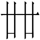
孝图（胡文炳） （12）95.1；（17）274。二李唱和集（李昉、李至） （17）274。
二酉堂丛书（张澍） ⑩36.5，106.26。
二十一名家集 见《汉魏诸名家集》。
二十五史补编 （17）275。
二十五度酒精（影片） （16）44.14。
二作家之印象（黑田乙吉） ⑩358.20。
二十世纪绘画大观（外山卯三郎） （17）458。
二十四史通俗演义（吕抚） ⑨158.26。
二十世纪文学之主潮 见《十九世纪文学主潮》。
二十世纪之欧洲文学（弗理契） ⑤314.2；（17）275，458。
二十世纪之宗教学研究（江绍原） （12）92.3。
二十五年来之宗教史研究（黑顿） （12）83.1，88.1。
十月（马林霍夫） ④219.15。
十月（A·雅各武莱夫） ⑩356.1，360.1，359.25；（12）228.5，396.3，412.3；（16）210.4；（17）275，458，569。
十戒（影片） （16）15.7。
十二个（勃洛克） ④37.5；⑦215.117，314.1，315.13；⑩314.10，446.7；（11）123.1；（13）153.1；（15）622.1；（17）275。
十七史（毛晋辑） （17）275。
十八摸 ⑥209.3。
十九人 见《毁灭》。
十三经 ③142.19。
十日谈（薄伽丘） ⑤314.4；（17）446。
十洲记（东方朔） ①319.6；⑨42.3，428.19。
《十月》后记（鲁迅） （12）425.3。
十字军记（陀莱） ④462.8。
十竹斋笺谱（胡正言） ⑧514.1；（13）22.1；（16）476.14，525.14；（17）275。
十万卷楼丛书（陆心源） （17）275。
十四年的“读经”（鲁迅） （15）593.4。
十字军英雄记（影片） （16）555.12。
十住毘婆沙论（龙树） （17）275。
十种文学研究（波伊德） （17）560。
十八空百广百论合刻 （17）276。
十九世纪的后期（桑次葆莱） （11）374.7。
十九世纪的绘画 （17）550。
十六国春秋辑补（汤球） （17）275。
十六国春秋纂录（汤球） （17）275。
十一月二十四日夜（胡适） （11）389.3。
十二门论宗致义记（龙树） （17）276。
十九世纪文学主潮（勃兰兑斯） ⑤296.2；（12）528.8；（17）492。
十三经及群书札记（朱亦栋） （17）276。
十二因缘等四经同本 （17）276。
《十竹斋笺谱》翻印说明（鲁迅） （13）243.2。
十九前半世纪英国的小说（小泉八云） ⑦215.115。
十五年来的书籍版画和单行版画（楷戈达耶夫） ⑥595.5；（16）436.4。
丁玲选集 （17）276。
七发（枚乘） ⑨393.26，416.16。
七兴（刘广世） ⑨417.17。
七启（曹植） ⑨417.19。
七林（卞景） ⑨417.18。
七依（崔骃） ⑨417.17。
七命（张协） ⑨417.20。
七录（阮孝绪） ⑥337.8。
七经 ③208.28；⑥63.18。
七略（刘歆） ⑨12.5。
七谏（东方朔） ⑨416.16。
七激（傅毅） ⑨417.17。
七年忌（欧阳山） （17）276。
七步诗（曹植） ③93.5。
七侠五义（石玉昆） ④162.13；⑤258.9。
七修类稿（郎瑛） ①159.4。
七剑十八义 ⑨290.17。
七剑十三侠（唐芸洲） ⑨290.17。
七家《后汉书》（汪文台） ⑩8.11。
七姬权厝志（张羽） ①132.13。
七论“文人相轻”（鲁迅） （13）545.10。
七封信的自传（魏金枝） ④247.6。
七个被绞死的人（安德烈夫） （11）375.16。
七家后汉书补逸（汪文台） （17）276。
卜居 ⑨390.8。
卜疑（嵇康） ⑩84.20。
卜辞通纂（郭沫若） （17）276。
八索 ⑧535.10。
八宗纲要（凝然） （17）276。
八铭塾钞（吴懋政） ⑦234.14。
八月的乡村（萧军） ⑥297.1，534.3；（13）261.3，269.1，309.4，387.1，449.2，502.2；（14）12.1，28.1；（17）276。
八史经籍志（张寿荣） （17）276。
八龙山人画谱（沈麟元） （17）276。
八琼室金石补正（陆增祥） （17）276。
“人话”（鲁迅） （16）370.14。
人物志（刘劭） （17）276。
人性论（梅契尼可夫） （11）342.9。
人之历史（鲁迅） （11）631.4。
人权论集（胡适等） ⑤52.2。
人间天堂（影片） （16）279.5。
人的一生（安德烈夫） （11）459.7。
人的命运（马尔罗） ⑤608.8。
人兽世界（影片） （16）254.3。
人猿泰山（影片） （16）358.8。
人生十字路 （17）459。
人生的转向（鹤见祐辅） （16）28.9。
人生的面目（聂维洛夫） ⑩416.12；（17）531。
人生遗传学（神谷辰三郎） （17）459。
人生漫画帖（池部钧等） （17）459。
人体解剖学（西成甫、铃木重武） （17）459。
人间的生活（武者小路实笃） （15）433.3，447.2；（17）277。
人类发生学（海克尔） ①18.5。
人类合作史（西村真次） （17）459。
人生识字胡涂始（鲁迅） （16）530.8。
人体寄生虫通说（小泉丹） （17）459。
人性的天才——迦尔洵（罗加契夫斯基） ⑩471.1，471.2。
人民大众向文学要求什么？（胡风） ⑥562.16。
入楞伽经 （17）423。
入阿毘达磨论 （17）277。
入楞伽心玄义（法藏） （17）277。
儿时（瞿秋白） （13）13.3；（16）416.5。
儿童（朗费罗） （14）68.2。
儿女英雄（影片） （16）570.12。
儿童公园（密德罗辛） （14）79.2。
儿童的画 （17）462。
儿童之绘画（张伯伦） （15）107.4。
儿童的版画 （17）566。
儿女英雄传（文康） ⑨288.2。
儿童的将来（斯温勃恩） ⑦210.72。
儿童之好奇心（上野阳一） （15）85.2。
儿童观念界之研究（高桥平三郎） （15）142.3。
儿童艺术展览会纪要 见《全国儿童艺术展览会纪要》。
几幅木刻 （17）557。
几乎无事的悲剧（鲁迅） （13）500.1；（16）544.2。
九丘 ⑧535.10。
九章（屈原） ⑨390.7。
九歌（屈原） ⑥643.8；⑨391.14。
九辩（宋玉） ⑨392.19。
九三年（雨果） （17）459。
九尾龟（张春帆） ④162.14；⑨350.1。
九歌图（陈洪绶） （13）217.2。
九州释名（鲍鼎） （17）277。
九命奇冤（吴沃尧） ⑨302.8。
九品中正与六朝门阀（杨筠如） （17）277。
刀“式”辩（鲁迅） （16）453.5。
又满楼丛书（赵诒琛） （17）277。
又论“第三种人”（鲁迅） （16）385.1。
又是“莎士比亚”（鲁迅） （16）481.1。
了凡纲鉴（袁黄） ②86.2。
三画
三人（高尔基） （13）346.4；（17）277。
三人（叙阿雷） （17）459。
三坟 ③50.19；⑨367.2。
三世相 （17）277。
三字经（王应麟） ⑤272.3。
三闲集（鲁迅） （12）298.1；（16）308.5；（17）277。
三姊妹（柔石） ④287.8。
三姊妹（契诃夫） ⑥574.5；（17）277。
三国志（陈寿） ⑨143.5；⑩7.5，166.18；（12）147.6；（17）277。
三剑客（影片） ④423.4；（16）280.6。
三梦记（白行简） ⑨81.5；⑩118.30。
三水小牍（皇甫枚） ⑩137.58，137.61。
三民主义（孙中山） （17）559。
三论玄义（吉藏） （17）277。
三余札记（刘文典） （17）278。
三余偶笔（左暄） （17）278。
三国画象（潘锦） （17）278。
三国演义（罗贯中） ①161.22，499.3；③540.7；④994.7；⑥229.5；⑨142.4；⑩166.21；（17）278，312，364。
三侠五义（石玉昆） （11）432.3。
三垣笔记（李清） （17）278。
三唐人集 （17）278。
三娘教子 ③173.7；⑤391.6。
三辅黄图 （17）278。
三不朽图赞 见《明於越三不朽名贤图赞》。
三太郎日记（阿部次郎） （17）459。
三月的租界（鲁迅） （14）91.5。
《三闲集》序言（鲁迅） （12）428.3。
三国志平话 见《至治新刊全相平话三国志》。
三国志补注（杭世骏） （17）278。
三国志演义 见《三国演义》。
三教平心论（刘谧） （17）278。
三棵棕榈树（莱蒙托夫） ⑦216.123。
三十三剑客图（任熊） （17）278。
三个布德力斯（密茨凯维支） ⑦217.135。
三论“文人相轻”（鲁迅） （13）500.1；（16）544.2。
三国志·甄皇后（胡考） （13）426.2。
三国志裴注述（林国赞） （17）278。
三国志演义节选（田中庆太郎） （14）178.3。
三朝北盟汇编（徐梦莘） ③156.8；（13）574.5。
三十六声粉铎图（宣鼎） ⑥243.4。
三个受难的青年（郝力群） （14）122.2。
三宝太监西洋记（罗懋登） ④311.6；（17）328。
三千大千世界图说（江希张） ①319.4。
三台学韵诗林正宗（余象斗） （17）278。
《三国志演义》的演化（郑振铎） （12）323.5。
三浦右卫门的最后（菊池宽） ⑩254.1，255.6；（11）391.7；（15）438.1。
三教源流搜神大全 （17）279。
三山郑菊山先生清隽集（郑起） （17）279。
干青木刻二集（段干青） （14）83.1；（17）279。
干青木刻初集（段干青） （13）352.2。
工人（玛拉式庚） （12）280.12。
工作（何白涛） （13）86.3。
工厂支部（谢苗诺夫） （17）460。
工艺美论（柳宗悦） （17）459。
工房有闲（小杉放庵） （17）460。
工人绥惠略夫（阿尔志跋绥夫） ③379.3；⑩185.1；（11）22.2，645.1；（13）30.8；（15）413.3；（17）279。
工农俄罗斯小说集（米川正夫编译） ⑩384.5；（17）490。
工农俄罗斯戏曲集（杉本良吉译） （17）490。
士敏土（革拉特珂夫） ④225.40；⑦382.2；⑩399.13；（12）193.4；（16）275.10；（17）279，443，564。
士不遇赋 ⑨442.32。
士敏土图 见《梅斐尔德木刻士敏土之图》。
士礼居丛书（黄丕烈） （17）279。
士敏土之图（翻印本） （17）279。
《士敏土》代序（戈庚） （16）275.10。
土饼（沙汀） （17）279。
土宫秘密（影片） （16）594.18。
土俗玩具集（江南史朗） （13）508.2；（17）460。
土俗品图录 （17）279。
下里巴人 ②482.17。
下品的无政府党 （11）411.10。
大山（刘安） ⑨419.29。
大地（赛珍珠） （14）396.1。
大招（景差） ⑨393.27，416.16。
大面 ⑥139.3。
大人赋（司马相如） ⑨437.8。
大小骗（鲁迅） （16）441.2。
大风歌（刘邦） ⑨401.5。
大红袍（陶元庆） （11）518.3。
大荒集（林语堂） （17）279。
大海边（斯特林堡） （17）460。
大教堂（塔尔曼） （17）539。
大旋风（玛拉式庚等） （17）460。
大悲咒 ①480.5。
大辞典（增田涉等拟编） （14）299.3。
大藏经（哈同刊印） （13）101.3。
大小奇迹（鲁迅） （14）3.4。
大历诗略（乔亿评） ⑥453.28；（17）280。
大名县志（张维祺等） （17）280。
大连丸上（萧军） ⑥534.2；（13）489.4。
大衍发微（鲁迅） ③196.2；（15）618.3。
大唐新语（刘肃） ⑦332.10。
“大雪纷飞”（鲁迅） （16）471.15。
大戴礼记（戴德） ⑩4.6；（17）280。
大人先生传（阮籍） ③549.53；⑥338.14；⑨80.3。
大义觉迷录 （13）385.2。
大业拾遗记（颜师古） ⑨113.21，144.13；（12）486.1。
大同的企图（小坂狷二） （15）510.7。
大地的女儿（史沫特莱） （17）462，540。
大西洋之滨（孙福熙） （17）280。
大旱的消失（怀特） ⑦202.8。
大城市画册（麦绥莱勒） （17）535。
大乘起信论（马鸣） ①569.8；④397.19；⑥604.10；（17）280。
大彼得像（密茨凯维支） ①117.149。
大唐西域记（玄奘） （17）280。
大清一统志（穆彰阿等） （17）280。
大漠中之疫（斯洛伐支奇） ①117.154。
大上海的毁灭（黄震遐） ⑤45.4。
大广益会玉篇 见《玉篇》。
大年三十晚上（熊文钧） （16）324.7。
大安般守意经 （17）280。
大观园的人才（鲁迅） （16）374.11。
大宋宣和遗事 ①162.27；⑧152.6；⑨131.3。
大乘入楞伽经 （17）423。
大乘中观释论 见《中观释论》。
大唐开元占经（瞿悉达） ⑩13.4；（17）281。
大涤子山水册（原济） （17）281。
大乘起信论义记（法藏） （17）281。
大唐三藏取经记 见《大唐三藏法师取经记》。
大云寺弥勒重阁碑 ⑧61.1，61.2。
大东京百景版画集（中岛重太郎） （17）460。
大乘法苑义林章记（窥基） （17）281。
大乘起信论海东疏 （17）281。
大家降一级试试看（鲁迅） （16）390.4，390.10。
大唐三藏取经诗话 ①161.20；④283.4；⑨131.3；（17）281。
大清重刻龙藏汇记（工布查等） （17）281。
大自然与灵魂的对话（奥巴尔迪） （17）460。
大乘法界无差别论疏（法藏） （17）281。
大萨遮尼乾子受记经 （17）281。
大唐三藏法师取经记 ①161.20；③408.5；⑨131.3。
大慈恩寺三藏法师传（慧立、彦悰） ⑨166.7；（17）281。
大方广佛新华严经合论 （17）281。
大目乾连冥间救母变文 ⑥113.49；⑨123.2。
大众语在中国底重要性（寒白） （13）181.2。
大方广佛华严经著述集要 （17）281。
大处着眼——胡蝶嫁人算得什么一回事（曹聚仁） （13）574.6。
万叶集（日本诗歌总集） ⑩236.3；（14）331.2。
万仞约（张天翼） （17）281。
万芳团（影片） （16）554.3。
万事足（冯梦龙） ⑨213.5。
万宝山（李辉英） （17）282。
万古愁曲（归庄） ⑧219.5；（11）474.2；（17）392。
万有文库（商务印书馆） ④353.4。
万宝全书（陈继儒） ⑨263.16。
万兽之王（影片） （16）446.5。
万兽女王（影片） （16）589.5。
万邑西南山石刻记（况周颐） （17）282。
万宝山事件调查报告 （12）319.3。
万古愁曲归玄恭年谱合刻 见《万古愁曲》。
与幼者（有岛武郎） ①381.2；（17）462。
与阮德如一首（嵇康） ⑩83.14。
与山巨源绝交书（嵇康） ③550.58；⑩54.10。
与友人书信选集（果戈理） （17）533。
与吕长悌绝交书（嵇康） ⑩84.19。
与支那未知的友人（武者小路实笃） ⑩208.6。
与鲁迅会见的晚上（长与善郎） （14）366.4，383.4；（16）535.7。
与谢野晶子论文集 （11）250.1。
才调集（韦縠） ⑩137.57；（17）282。
夨彝考释质疑（鲍鼎） （17）282。
上市（何白涛） （13）163.1。
上林赋（司马相如） ⑨390.9。
上清传（柳珵） ⑨91.2，94.27；⑩136.51。
上海所感（鲁迅） （13）18.3，291.3；（16）416.4，493.3。
上海咖啡（慎之） ④119.2。
上海指南 （17）282。
上海通信 （15）639.2。
上谕八旗 ⑥63.19。
上帝的化身（巴拉赫） （17）562。
上海的儿童（鲁迅） （16）395.9。
上海的少女（鲁迅） （16）395.9。
上海游骖录（吴沃尧） ⑨303.10。
上海文艺之一瞥（鲁迅） （12）269.4。
上堂晚参唱酬语录（董说） ⑨184.12。
口语法 （17）461。
□肱墓志 ⑧73.1。
山灵（胡风） （17）282。
山海经 ①220.17；②256.4；⑧89.12；⑨18.45，26.5；⑩115.7，166.17；（11）465.5；（17）282。
山中笛韵 见《山民牧唱》。
山民牧唱（巴罗哈） ⑦485.2，485.3；⑩425.1，430.3；（12）446.1；（13）112.2，112.4，187.4，447.8；（16）400.7；（17）282。
山阳志遗（吴玉搢） ⑨174.8；（11）429.2。
山阳县志（存保、何绍基等） ⑨175.11。
山居杂诗（周作人） （11）422.1。
山胡桃集（傅东华） （17）282。
山家清供（林洪） ⑧528.3。
山野掇拾（孙福熙） （17）282。
山右金石记（张煦） （17）282。
山右金石录（夏宝晋） （17）282。
山阳耆旧集（吴玉搢） ⑨175.10。
山海经图赞（郭璞） ⑨28.17。
山海经笺疏（郝懿行） ②257.13。
山樵书外纪（张开福） （17）282。
山右石刻丛编（胡聘之） ⑧61.2；（17）282。
山谷外集诗注（黄庭坚） （17）283。
山越工作所标本目录 （17）461。
山东省立第二师范校长宋还吾答辩书 （13）609.3。
巾箱小品（金农） （17）283。
千字文（周兴嗣） ②275.19。
千家元麿诗笺 （17）461。
千甓亭古专图释（陆心源） （17）283。
川柳漫画全集 （17）461。
亿年堂金石记（陈邦福） （17）283。
个性的毁灭（高尔基） （17）564。
义塚（钱杏邨） ⑥480.7。
义妖传（陈遇乾） ①181.3。
义士艳史（影片） （16）275.6。
义山杂纂（李商隐） ⑧134.8；（11）534.2，617.2。
及泼希（普希金） ①114.117。
及时行乐 （17）283。
凡人经（西村真琴） （17）461。
凡将篇（司马相如） ⑨438.16。
凡·高画集 （17）441。
凡·高大画集 （17）437。
丸善书店书目 （17）461。
广庄（袁宏道） ⑤620.5；⑥181.22。
广林（虞喜） ⑩27.1。
广重（内田实） （17）480。
广韵（陈彭年等） （17）283。
广陵潮（李涵秋） （17）283。
广辞林（金泽庄三郎） （17）480。
广仓砖录（邹安） （11）390.5，390.6；（17）283。
广东新语（屈大均） （17）283。
广弘明集（道宣） ①250.11；（12）148.13；（17）283。
广阳杂记（刘献庭） （17）283。
广陵行录 ⑩116.16。
广陵诗事（阮元） （17）283。
广雅丛刊 （17）284。
广雅疏证（王念孙、王引之） （17）284。
广经室文钞（刘恭冕） （17）284。
亡命者（影片） （16）447.10。
亡女叕事略（章太炎） （15）190.4。
门外文谈（鲁迅） （13）290.2，609.2；（14）42.1；（16）470.13，470.14。
尸子（尸佼） ⑨33.10。
已故美国批评家薛尔曼评传 （12）223.2。
也是园书目（钱曾） ①161.19；⑧212.7；⑨18.49，131.4。
女吊（鲁迅） （16）624.8。
女人论 见《妇人论》（叔本华）。
女儿经 ②34.5。
女世说（李清） ⑨72.30。
女性美（戛布流夫人） （17）284。
女人的心（孙席珍） （17）284。
女子木刻 （17）461。
女仆之子（斯特林堡） （17）460。
《女史箴》图（顾恺之） （13）61.4，159.4；（17）393。
女史箴图（陈居中） （17）284。
女仙外史（吕熊） ⑧212.9；⑨159.34。
女婿问题（如是） （12）445.3。
女性与情欲（田中香涯） （17）461。
女婿的蔓延（圣闲） （12）445.3。
女师大的学潮（一个女读者） ③84.5；（11）30.6。
女师风潮纪事（晚愚） ③128.6。
女骑士爱尔萨（马科奥朗） （17）461。
女人未必多说谎（鲁迅） （16）431.5。
女大学生二次宣言 ③186.2。
女校长的男女的梦（鲁迅） （15）579.1。
女子师范风潮闻见记 （17）284。
女布尔什维克玛丽亚（聂维洛夫） （14）60.3，126.3。
小山（刘安） ⑨419.29。
小六（萧红） （13）380.1，400.2。
小园（庾信） ⑥453.20。
小学（朱熹、刘子澄） ⑥61.7。
小品（江绍原） （12）88.2。
小鬼（梭罗古勃） ⑦215.118；（13）592.1；（17）284。
小说（殷芸） ⑥337.11。
小动物（英国画集） ⑦354.2。
小杂感（鲁迅） （12）109.2；（16）39.15。
小字录（陈思） （17）284。
小约翰（望·蔼覃） ③359.46，373.2；⑤80.2；⑩287.1；（11）533.3；（12）39.3，77.1，123.2；（15）630.4；（16）23.1，24.3，24.4，28.7，44.11，72.2；（17）284，550。
小彼得（至尔·妙伦） ④157.1；（11）288.2；（12）220.2；（13）571.3；（17）284，562。
小彼得（张天翼） （12）364.4。
小小十年（叶永蓁） ④152.1，234.3；（12）220.2；（16）142.8；（17）285。
小小的灯（有岛武郎） ⑩312.3。
小百梅集（改琦） （17）285。
《小约翰》序（赉郝） （16）24.3。
小学大全 见《尹氏小学大全》。
小学答问（章炳麟） ⑥110.30；（11）344.4；（17）285。
小学集注（陈选） ②310.24。
《小说世界》（东枝） ⑧140.8。
小说丛考（钱静方） ⑨184.8；⑩71.4。
小说考证（蒋瑞藻） ⑩71.2。
小说全集 见《鲁迅全集》。
小说作法 （17）462。
小说法程（哈米顿） ④374.2。
小哥儿俩（凌叔华） （13）579.1；（17）285。
“小童挡驾”（鲁迅） （16）446.4。
小尼姑下山 ⑥113.50。
小杂感补遗（章廷谦） （12）100.1。
《小约翰》引言（鲁迅） （16）24.4。
小鸡的悲剧（爱罗先珂） ①586.5；⑩228.1。
小孤孀上坟 ①555.23。
小说旧闻钞（鲁迅） ⑩71.1；（15）626.5；（17）285。
小说的研究（瞿世英） ⑧133.3。
小浮梅闲话（俞樾） ⑩71.4。
小万卷楼丛书（钱培名） （17）285。
小方壶斋丛钞（王锡祺） （11）430.7。
《小小十年》插图（叶永蓁） （16）142.8。
小杉放庵画集 （17）462。
小品文和漫画（太白社） ⑥243.1；（13）589.3；（14）354.1；（17）286。
小品文的生机（鲁迅） （16）447.15。
小品文的危机（鲁迅） （12）433.3，438.5，439.5；（16）395.14。
小说月报丛书 （13）114.4。
小说作法讲义（孙俍工） ④374.2。
《小约翰》的封面画（孙福熙） （12）155.7；（16）44.11。
小张屠焚儿救母 ①256.12。
小林多喜二日记 （17）462。
小林多喜二全集 （17）462。
小泉先生及其他（厨川白村） ⑩259.6。
小说研究十二讲（木村毅） （17）462。
小说研究十六讲（木村毅） （17）462。
小林多喜二书简集（小林三吾编） （13）526.3；（17）462。
小俄罗斯文学略说（凯尔沛来斯） ⑩465.1；（11）418.7；（15）444.4。
小说的浏览和选择（开培尔） ⑩311.1；（15）589.4。
小蓬莱阁金石文字（黄易） （17）286。
《小说旧闻钞》再版序言（鲁迅） （14）400.1。
小彼得的朋友们所讲的 见《小彼得》。
飞箝（鬼谷子） ③116.19。
飞燕 见《赵飞燕外传》。
飞烟传（皇甫枚） ⑩137.58。
飞燕外传 见《赵飞燕外传》。
飞燕外传 见《仇文合璧飞燕外传》。
飞着的奥西普（卡萨特金） ⑥574.2。
马车（果戈理） （13）497.4。
马遂传（郑獬） ⑨144.19。
马上日记（鲁迅） （15）626.8，630.1。
马太福音 ⑧112.5。
马氏文通（马建忠） ④279.8；⑥114.53。
马门教授（沃尔夫） （14）129.1。
马上支日记（鲁迅） ⑩287.3。
马拉敦之战（赫尔才格） （12）186.1，217.1。
马蒂斯以后（川路柳虹） （17）452。
马上日记之二（鲁迅） （15）631.7。
马尔腾的罪行（巴赫梅节夫） （17）454。
马克斯·贝克曼 （17）550。
马里佐斯案件（华塞尔曼） （17）542。
马克思主义美学 （17）452。
马尔克·夏加儿画集 （17）452。
马克思主义与伦理（库诺夫） （17）453。
马克思主义艺术论（卢那察尔斯基） （17）452。
马克思主义批评论（莱吉涅夫） （17）453。
马克思的经济概念（库诺夫） （17）452。
马克思主义的谬论（拉姆斯） （17）452。
马扶曦花鸟草虫册（马元驭） （17）286。
马克思主义艺术理论（日文丛书） （17）453。
马克思主义的作家论（沃罗夫斯基） （17）452。
马克思的唯物辩证法（库诺夫） （17）453。
马克思恩格斯艺术论 （17）452。
马克西姆·高尔基肖像画（魏烈斯基等） （17）569。
马克思主义与艺术运动（田口宪一） （17）453。
马克思主义与法律哲学（帕苏卡尼斯） （17）453。
马克思主义的根本问题（普列汉诺夫） （17）453。
马克思的《资本论》石印版（盖勒特） （17）547。
马克思的阶级斗争理论（库诺夫） （17）454。
马叔平所藏甲骨文拓本 （17）286。
马江香女士花卉草虫册 （17）286。
马克思主义批判者的批判（河上肇） （17）453。
马克思主义文艺批评的任务（卢那察尔斯基） ⑩335.27。
马克思、列宁主义艺术学研究（古川庄一郎等） （17）454。
马克思的历史唯物主义理论（库诺夫） （17）453。
马克思的民族、社会及国家观（库诺夫） （17）453。
马克思主义者之所见的托尔斯泰（日本国际文化研究所） ⑦213.100；⑩334.9；（17）452。
马克思恩格斯和文学上的现实主义（瞿秋白） （14）164.1。
子夜（茅盾） ⑤90.5；（14）3.3；（17）286。
子夜歌 ⑥111.37；⑦143.21。
子虚赋（司马相如） ⑨390.9。
子见南子（林语堂） ⑥333.24；⑦218.145；⑧336.1。
子史精华 （14）299.5。
《子夜》与国货年（瞿秋白） （16）370.19。
孑民先生言行录（新潮社） ⑥267.22。
乡言解颐（瓮斋老人） （17）286。
乡土玩具集 （17）513。
四画
丰收（叶紫） ⑥229.1；（13）332.2，396.1；（16）514.6，558.2。
《丰收》插图（黄新波） （13）332.5。
丰草庵杂著（董说） ⑨184.12。
丰饶的城塔什干（聂维洛夫） ⑤536.5；⑩416.10。
丰顺丁氏持静斋书目 ⑩62.21。
丰饶的城塔什干和绥拉菲摩维奇内战时期小说铁流 （17）560。
王化（鲁迅） （16）380.9。
王会 ⑨27.9。
王榭 ⑨131.2；⑩156.15。
王尔德（纪德） （13）248.1。
王无功集（王
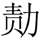
） （17）286。王右丞集 见《王右丞集笺注》。
王幼玉记（柳师尹） ⑩155.14。
王室之路（马尔罗） （17）463。
王子安集注 （17）286。
王荆公年谱（顾栋高） （17）286。
王觉斯诗册 见《王觉斯诗册真迹》。
王小梅人物册 （17）286。
王子安集佚文（王勃） （17）286。
王右丞集笺注（王维） （15）471.3；（17）287。
王良常论书賸语 见《王良常楷书论书賸语》。
王觉斯诗册真迹 （17）287。
王道天下之研究（田畸仁义） （17）463。
王石谷老年拟古册（王翚） （17）287。
王良常楷书论书賸语（王澍） （17）287。
王梦楼自书快雨堂诗稿（王文治） （17）287。
开河记 ②264.3；⑧134.11；⑨144.13；⑩145.5。
开倒车（牛荣声） ⑦114.3。
开颜集（周文玘） ⑨70.16。
开元占经 见《大唐开元占经》。
开辟演义（周游） ⑨157.20。
开天传信记（郑棨） ⑨144.14；⑩150.10。
开元升平源（陈鸿） ⑨81.5，82.20；⑩118.34。
开辟唐虞传（锺惺） ⑨157.20。
开元天宝遗事（王仁裕） ⑨144.14；（17）287。
开明英语读本（林语堂） （12）97.1。
开有益斋读书志（朱绪曾） （17）287。
开拓了的处女地 见《被开垦的处女地》。
开给许世瑛的书单（鲁迅） （16）206.2。
开培尔博士小品集（深田康算等译） ⑩311.3；（17）440。
开培尔博士随笔集 （17）440。
开新顿公园里的潘·彼得（巴雷） ⑦396.13；（17）555。
天乙 ⑨13.16。
天问（屈原） ⑨28.15，389.4。
天使（莱蒙托夫） ⑦216.123。
天堂（但丁） ⑩454.3。
天涯恨（影片） （16）141.3。
天演论（赫胥黎） ①313.3；②310.30；④256.2。
天上地下（鲁迅） （16）380.16。
天女散花 ⑤477.5；⑦207.51。
天方夜谈 见《一千零一夜》。
“天生蛮性”（鲁迅） （16）529.1。
天游阁集（顾春） （17）287。
天发神谶碑 （17）288。
天明前之歌（爱罗先珂） ⑩215.6，218.3；（11）399.6，415.1；（17）498。
天物系统论（林奈） ①21.28。
天游阁诗集 见《天游阁集》。
天马山房丛著（马叙伦） （17）288。
天然钠化合物的研究（冈田家武） （17）463。
天籁阁旧臧宋人画册 （17）288。
元史（宋濂等） （17）288。
元曲选（臧懋循编） （17）288。
元典章 ①256.11。
元书画考（高士奇） （17）288。
元庆的画（陶元庆绘） （17）288。
元和姓纂（林宝） ⑧78.2；⑩41.3；（17）288。
元九宫词谱 （17）288。
元和郡县志（李吉甫） （12）137.1。
元祐党人传（陆心源） （17）288。
元遗山诗注 （17）288。
元明古德手迹 （17）289。
元明散曲小史（梁乙真） （17）289。
元人选元诗五种（罗振玉） （17）289。
元城先生尽言集（刘安世） （17）289。
元西域人华化考（陈垣） （17）289。
元遗山先生全集（元好问） （17）289。
元阎仲彬惠山复隐图（阎骧） （17）289。
元至治本全相平话三国志 （17）289。
无常（鲁迅） （11）530.2。
无题 ②230.7。
无双传（薛调） ⑨91.2，94.27；⑩136.45。
无双谱（金古良） ①581.3；④145.5；⑤249.3；（17）378。
无冤录（王与） （17）289。
无支祁辩（罗泌） ⑨92.16。
无机质学 （17）289。
无名木刻集（无名社） ⑧406.1；（13）81.1，305.1；（17）289。
无邪堂答问（朱一新） （17）290。
无声的中国（鲁迅） （16）10.6。
无花的蔷薇（鲁迅） （15）614.1。
无画之画帖（安徒生） （11）405.7。
无产者文化论（托洛茨基） （17）515。
无名作家的日记（菊池宽） ⑩246.31。
无产阶级艺术论（波格丹诺夫） （17）516。
无产阶级文学论（戈庚） （17）450。
无产阶级的文化（平林初之辅） （17）515。
无产阶级艺术教程（饶平名智太郎） （17）451。
无产阶级文学讲座 （17）450。
无产阶级文学概论（川口浩） （17）450。
无家可归的艺术家（拉狄克） ④38.18。
无产阶级与文化问题（藏原惟人） （17）451。
无产阶级文化风俗画史（吕勒） （17）546。
无产阶级文学的理论与实况（昇曙梦） （17）515。
无产阶级的画家乔治·格罗斯（柳濑正梦） （17）515。
无量义经观普贤行法经合刻 （17）290。
韦陀 ①103.7。
韦斋集（朱松） （17）290。
韦江州集（韦应物） （17）290。
韦氏大字典 见《韦白斯特大字典》。
韦素园墓记（鲁迅） （13）51.2，74.1，480.2；（16）446.2。
韦白斯特大字典 ④218.9；⑩290.25。
云仙杂记（冯贽） （17）290。
云谷杂记（张淏） ⑩19.1，19.4，24.8；（15）70.1，70.2，111.5；（17）290。
云窗丛刻（罗振玉） （17）290。
云溪友议（范摅） ⑨102.10；⑩136.48；（17）290。
云溪杂记 （17）290。
云裳艳曲（影片） （16）446.1。
云自在龛丛书（缪荃孙） ⑩137.59。
专门名家（二集）（姬觉弥） （17）290。
专门以外的工作（鹤见祐辅） （16）31.3。
廿一史识余（张墉） ⑨71.25。
廿五年来之早期基督教研究（威灵贝） （12）92.1。
艺术论（甘粕石介） （17）486。
艺术论（藏原惟人） （17）486。
艺术论（普列汉诺夫） ④10.15，271.1，274.29；⑩348.1；（16）157.1；（17）291，486。
艺术论（林柏译） ④274.29。
艺术论（卢那察尔斯基） ⑩326.1，345.22；（12）158.6；（16）132.6；（17）290。
艺术论 见《马克思主义艺术论》。
艺谈录（张维屏） （17）291。
艺术大纲（奥彭） （17）554。
艺术丛编（姬觉弥等） （11）390.6；（13）101.3；（17）291。
艺术评论 （17）532。
艺术战线（布丹切夫等） ⑩359.23，497.2；（17）486。
艺术战线（尾濑敬止） ⑩384.6。
艺术总论 （17）486。
艺术哲学（泰纳） ⑧369.3。
艺术漫笔（中野重治） （17）485。
艺文类聚（欧阳询等） ⑧216.2；⑨430.28；⑩13.5，67.10；（12）148.12；（17）291。
艺苑捃华（顾氏） ⑩90.5。
艺苑朝华（鲁迅编） ④287.6；⑥50.2；⑦366.21，482.1；（12）196.2；（13）358.2；（16）146.3；（17）291。
艺林闲步（木下
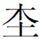
太郎） （17）486。艺术三家言（傅彦长等） ④334.10；（12）457.3。
艺术与社会（豪森斯泰因） （17）548。
艺术与革命（卢那察尔斯基） ⑩335.22。
艺术与宣传（琼斯） （17）531。
艺术与道德（西田几多郎） （17）484。
艺术之一瞥（瓦尔登） （17）540。
艺术社会学（弗理契） （13）212.4；（17）486。
艺术国巡礼（林久男） （17）486。
艺术的本质（金子筑水） （17）485。
艺术的胜利（昇曙梦） （17）485。
艺术的起源（格罗塞） （17）485。
艺术学研究（外山卯三郎） （17）486。
艺术家评传 （17）549。
艺术在危险中（格罗斯） （17）548。
《艺术论》译本序（鲁迅） （16）198.2。
艺风堂读书志（缪荃孙） （17）291。
艺术教育原理（明斯特堡） ⑩460.3。
艺术与无产阶级（藏原惟人） （17）485。
艺术与社会生活（普列汉诺夫） （17）484。
艺术与哲学，伦理（本庄可宗） （16）184.2。
艺术与唯物史观（豪森施泰因） （17）485。
《艺术论》日译本序（昇曙梦） ⑩326.4。
艺术的社会基础（卢那察尔斯基） （17）485。
艺术玩赏之教育（上野阳一） ⑩459.1。
艺术都会的巴黎（格罗斯） ⑩478.1，479.6；（16）470.9。
艺术与马克思主义 （17）484。
艺术史上的人体画（豪森斯泰因） （17）548。
艺术的暗示和恐怖（小川未明） （17）485。
艺术底内容和形式（藏原惟人） ⑥26.3。
艺风堂考臧金石目（缪荃孙） （17）291。
艺术社会学的方法论（弗理契） （17）486。
艺术的本质及其变化 见《艺术形式的本质与变化》。
艺术的起源及其发展 （17）485。
艺术的唯物史观解释（马丁） （17）485。
艺术形式的本质与变化（马丁） （17）485，563。
艺术上的现实主义与唯物论哲学（森山启） （17）485。
木刻（布利斯） （17）563。
木版画（野穗社编） （13）67.7；（17）291。
木刻史（布利斯） ⑦217.132；（11）304.3；（17）530。
木刻法 见《木刻创作法》。
木刻集 见《干青木刻初集》。
木刻集（李桦） （13）304.2。
木刻集（MK木刻社） （17）292。
木刻集（王慎思） （17）292。
木刻集（苏联艺术普及委员会编） （17）566。
木刻集（密得罗辛） （17）566。
木棉集（卢前） （17）292。
木刻纪程（鲁迅编） ⑥50.1；⑧512.1；（12）506.8；（13）82.2，109.1，117.1，126.2，154.1；（17）292。
木刻技法（巴甫洛夫） （13）23.2，368.3。
木刻画集（韦斯特海姆） （17）545。
木刻图说（克雷格） （17）563。
木铃木刻（木铃社编） （17）292。
木版雕刻集 见《木刻集》（苏联艺术普及委员会）。
木版雕刻集 见《木刻集》（密德罗辛）。
木刻自修书（巴甫洛夫） （17）566。
木刻创作法（吴渤编） ④627.1；（12）485.2，514.1；（13）142.1，230.1；（16）410.7；（17）292。
木刻的历史（纳什） ⑦217.132。
木皮散人鼓词（贾凫西） ⑧219.4。
木刻上的美洲（塔尔曼） （17）531。
《木刻创作法》序（鲁迅） （12）485.6。
木刻界漫游者（格林廷卡姆） （17）530。
《木刻纪程》小引（鲁迅） （16）465.8。
木刻三人展览会纪念册（赖少其等） （17）292。
五典 ③50.19；⑨367.2。
五经 ③208.28；⑥331.8。
五木经（李翱） ⑧133.5。
五杂组（谢肇淛） ⑨143.7；（17）292。
五色线 ⑩119.39。
五七呈文（章士钊） ③69.5。
五大讲演 见《杜威五大讲演》。
五月的夜（果戈理） （13）266.1。
《五月的夜》插图（盖拉尔豆甫） （13）266.1。
五代史记（欧阳修） （17）292。
五朝小说 ⑥240.3；⑧136.19；⑩90.3。
五月暴风雨（甘霍费尔） （17）543。
五代史平话 ①161.21；⑧217.7；⑨123.9；（17）292。
五讲三嘘集（鲁迅拟编） ④429.2；（12）379.1，383.2。
五言诗三首（嵇康） ⑩84.17。
五柳先生传（陶潜） ⑨82.3。
五秩自寿诗（周作人） （13）88.2。
五唐人诗集（毛晋编） （17）292。
五一告工友书（伪上海总工会） ⑤142.6。
五分钟与半年（许广平） （11）104.3。
五论“文人相轻”——明术（鲁迅） （13）520.1；（16）549.8。
五言古意一首（嵇康） ⑩82.5。
五指峰的白云（罗清桢） （13）126.3。
五十年生活年谱（秋田雨雀） （17）463。
五山的四大诗僧（今关天彭） （17）463。
五个警察一个〇（司徒乔） ④74.4。
五年计划的故事（伊林） （17）292。
“五四”运动的检讨（茅盾） （13）599.7。
五百石洞天挥麈（邱炜萲） （17）293。
五虎平西平南传 ⑨159.37。
五余读书廛随笔（顾家相） （17）293。
五代贯休画罗汉像 （14）349.2；（17）293。
五十年来之中国文学（胡适） （11）432.1，451.1；（17）293。
五十年来之世界哲学（胡适） （11）451.1；（17）293。
五苦章句经等十经同本 （17）293。
支诺皋（段成式） ⑧134.6。
支那人气质（斯密斯） ③357.22；⑥277.2；（12）468.2。
支那土偶考 见《汉代的中国陶器》。
支那的作家（增田涉） （14）260.2。
支那文学概论讲话（盐谷温） ③256.41。
支那本藏经情字二册 （17）293。
支那本大小乘论静至逸字共七册 （17）293。
不如归（德富芦花） （12）495.4。
不周山 见《补天》。
不是信（鲁迅） ③262.8；（15）611.1。
不信者（拜伦） ①110.75。
不得已（杨光先） ①212.9；⑥144.6。
不求甚解（鲁迅） （12）400.4；（16）380.19。
不测之威（阿·托尔斯泰） ⑧458.2。
不通两种（鲁迅） （16）363.4。
不惊人集（徐懋庸） ⑥303.11。
不自然淘汰（斯特林堡） （15）335.1。
不安与再建（克莱米约） （17）467。
不幸的一群（陀思妥耶夫斯基） （17）293。
不安定的灵魂（陈翔鹤） （17）293。
不应该那么写（鲁迅） （13）452.1。
不是没有笑的（休士） （12）521.3。
不以成败论英雄（瞿宣颖） ⑥529.10，603.7。
不负责任的坦克车（鲁迅） （16）379.6。
不走正路的安得伦（聂维洛夫） ⑦415.1；（12）329.11，456.1，473.2，523.4；（14）145.1；（17）294，565。
不图今日重见汉官仪（英伯） ⑤479.2。
不知肉味和不知水味（鲁迅） ⑥117.8；（16）471.19。
《不走正路的安得伦》小引（鲁迅） （16）380.11。
太公 ⑨378.3。
太阳（麦绥莱勒） （17）559。
太真 见《杨太真外传》。
太誓（周武王） ②428.8。
太子晋 ⑨27.9。
太师箴（嵇康） ⑩54.8。
太戈尔传（郑振铎） （17）294。
太公家教 ⑤272.6。
太平广记（李昉等） ③255.38；⑧135.12；⑨80.2，111.1；⑩53.2；（11）532.3，532.5；（17）294。
太平御览（李昉等） ②267.28；⑨27.10；⑩14.7，67.10；（12）47.10，148.12；（17）294。
太阳之下 见《阳光照耀的地方》。
太极图说（刘少少） ⑧112.6。
太真外传 见《杨太真外传》。
太上感应篇（李昌龄） ⑤330.8。
太公阴谋书（吕尚） ⑨183.2。
太平寰宇记（乐史） ⑧67.6；⑨113.18；⑩47.8；（12）137.1。
太平天国野史（凌善清） （14）246.1；（17）294。
太史公疑年考（张惟骧） （17）294。
太阳晒屁股赋（张丹斧） ①267.6。
太上感应篇阴阳无字解（丁耀亢） ⑨195.12。
犬·猫·人间（长谷川如是闲） （17）467。
历书 （17）294。
历代小史（李栻） ⑥240.3。
历代诗话（何文焕） （12）54.3；（17）294。
历代名将图（任阜长） （17）294。
历代纪元编（李兆洛） ①230.7；（17）342。
历代讳字谱（张惟骧） （17）294。
历代画象传（丁善长） （17）295。
历朝文学史（窦警凡） ⑨4.1。
历史唯物主义（阿多拉茨基） （17）567。
历代名人年谱（吴荣光） （17）295。
历代名人画谱（顾炳） （17）295。
历代诗话续编（丁福保） （17）295。
历代钞币图录 （17）295。
历代符牌图录（罗振玉） （17）295。
历朝通俗演义（蔡东藩） （13）465.6。
历史过程的展望（佐野学） （17）524。
历史学批判叙说（羽仁五郎） （17）524。
历代帝王疑年录（张惟骧） （17）295。
历史底唯物论入门 （17）524。
历代符牌图录后编（罗振玉） （17）295。
历代艺术中的裸体人（豪森斯泰因） （17）552。
历代地理志韵编今释（李兆洛） （12）214.2。
历代钟鼎彝器款识法帖（薛尚功） （17）295。
历史上的一元底观察的发展（普列汉诺夫） ④271.8。
尤三姐（胡考） （13）426.2。
友如墨宝 见《吴友如墨宝》。
车勒芮绥夫斯基的文学观（普列汉诺夫） （12）243.3。
比较文学史（洛里埃） （11）342.8。
比较解剖学（西成甫） （17）467。
比亚兹莱画选（朝花社） ⑥529.4；⑦358.1；（17）295。
比亚兹莱的艺术 ⑦344.2。
扎拉图斯特拉如是说（尼采） ①342.5；④178.14，227.60；⑩245.18，245.19，248.2，484.1；（11）645.2；（13）410.1，523.2；（17）446。
扎拉图斯特拉如是说（生田长江译） ⑩245.19。
戈理基像（魏烈斯基等） （17）569。
戈理基文录（高尔基） （17）295。
戈理基全集 （17）295。
戈理基小说集 （17）295。
互助论（克鲁泡特金） ③217.12；（17）295。
切韵（陆法言） （17）296。
切韵指掌图（司马光） （17）296。
切霍宁画集 （17）570。
切支丹殉教记 见《切利支丹殉教记》。
切利支丹殉教记（松崎实） ⑤18.3；（13）119.5；（17）467。
瓦釜集（刘半农） （17）296。
止哭文学（鲁迅） （16）369.13。
少年行（杜甫） ⑨93.24；⑩106.27。
少年别（巴罗哈） ⑩431.1；（13）447.8；（16）494.11。
少年兵团 （17）296。
少年画集（谷中安规） （17）467。
少室山房集（胡应麟） （17）296。
少其版画集（赖少麒） （13）373.1；（17）423。
少奶奶的扇子（洪深改编） （11）158.1。
少室山房笔丛（胡应麟） ⑨16.35；⑩100.29。
少先队员在这里（古丽扬） （17）556。
少年维特的烦恼（歌德） ⑩318.10。
少年维特之烦恼（左琴科） （13）409.3，413.1，415.2。
日记（沙吉娘） （17）566。
日文要诀 （17）296。
日本木雕史（坂井犀水） （17）468。
日本文研究 （17）296。
日本印象记（毕力涅克） ⑩491.2；（17）468。
日本访书志（杨守敬） ⑦332.14；（11）521.3，536.1。
日本漫画史（细木原青） （17）468。
日本小品文选（谢六逸） ④334.9。
日本动物图鉴（内田清之助） （17）468。
日本玩具史篇（有坂与太郎） （17）468。
日本玩具图篇（西泽笛亩） （17）468。
日本原始绘画（高桥健自） （17）468。
日本童话选集 （17）468。
日译书不可靠（韩侍桁） （13）459.12。
日本古代故事集（高木敏雄） （17）468。
日本诗人一茶的诗（周作人） （11）398.1。
日本最佳图画故事（岩谷小波） （17）468。
日本裸体美术全集 （17）469。
日本无产阶级美术集 （17）467。
日本廿六圣人殉教记（帕热斯） （17）469。
日本木版浮世绘大鉴（田中甚助） （17）469。
日本初期欧式版画集 （17）469。
日本东京及大连图书馆所见中国小说书目提要（孙楷第） （17）296。
中论（龙树） （17）296。
中论（徐干） （17）296。
中国（威廉士） ③358.34。
中国（山本实彦） （17）464。
中候 ⑨367.4。
中篇（刘安） ⑨419.27。
中山装（罗
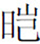
岚） （12）137.2。中经簿（荀勖） ⑨14.21；⑩30.6。
中观释论（安慧） （17）297。
中阿含经 （17）297。
中国史话（韦休） （17）297。
中国名画（美术研究会） （17）297。
中国纪行（斯特朗） （17）537。
中国画论（西林） （14）395.2；（17）537。
中国诗史（陆侃如、冯沅君） （12）524.16。
中国研究（江亢虎） （14）388.1；（17）537。
中国游记（芥川龙之介） （17）464。
中国游记（安娜·路易斯） ④503.12。
中秋二愿（鲁迅） （16）476.13。
中原音韵（周德清） （17）297。
中朝故事（尉迟偓） ⑨144.18。
中古文学史 见《中国中古文学史》。
中华木刻集（马映辉主编） （13）475.5。
中华民国解（章炳麟） ⑥570.17。
中华苏维埃（亚匡托夫） （17）537。
中州金石记（毕沅） ⑧89.8；（17）297。
中兴间气集（高仲武） （17）297。
中华简字选（陈光尧） （14）50.1。
中国文学史（林传甲） ⑨4.1。
中国文学史（葛鲁贝） ⑨4.1；（14）399.2。
中国文学史（翟理斯） ⑨4.1；（14）399.1。
中国文学史（黄人） ⑨4.1。
中国文学史（插图本）（郑振铎） （12）323.4；（17）297。
中国古代史（夏曾佑） （13）25.1，441.3。
中国在觉醒（维特福格耳） （17）463。
中国名画集 见《中国名画》。
中国产的“
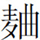
”（山崎百治） （17）463。中国住宅志（贵岛克己） （17）464。
中国社会史（萨法洛夫） ⑥145.10；（17）465。
中国画家传（横川毅一郎） （17）465。
中国矿产志（鲁迅、顾琅） ⑧454.1。
中国的一日（茅盾编） （14）122.3；（17）297。
中国的运命（史沫特莱） （17）567。
中国的奇想（鲁迅） （16）395.3。
中国的学者（达） （12）43.2。
中国的建筑（伊藤清造） （17）463。
中国诗论史（铃木虎雄） （17）465。
中国南北记（木下太郎） （17）465。
中国哲学史（冯友兰） （17）298。
中国童话集（池田大伍编译） （14）387.2；（17）465。
中野重治集（尹庚译） （13）261.1。
中国人的气质 见《支那人气质》。
中国大文学史（谢无量） ⑨4.1；（12）524.15；（17）298。
中国山水画史（伊势专一郎） （17）465。
中国小说史料（孔另境） （17）298。
中国小说史略（鲁迅） （11）437.1，438.5；（14）224.2，301.1；（15）464.2，468.4，485.1，486.4，492.1，509.1，519.4，589.2，652.3；（16）221.1，248.6，263.3；（17）298，464。
中国小说史略（庐隐） （14）462.2。
中国马贼秘史（矢萩富桔） （17）466。
中国文艺年鉴（苏汶、施蛰存） ④623.3；⑤493.3，614.6。
中国文艺论战（李何林） ④9.11。
中国文艺论薮（青木正儿） （17）465。
中国文化研究（后藤朝太郎） （17）464。
中国文法通论（刘半农） ⑤552.5。
中国文学史纲（儿岛献吉郎） （17）465。
中国文学史纲（王西里） ⑨4.1。
中国文学论集（郑振铎） （17）298。
中国文学研究（铃木虎雄） （17）465。
中国文学概说（青木正儿） （17）465。
中国书店书目 （17）298。
中国佛教文物（松本文三郎） （17）465。
中国社会研究（桔朴） （17）465。
中国英雄故事（三井信卫） （17）465。
中国杰作小说（鲁迅选） ⑧446.1。
中国故事研究 见《民间故事研究》。
中国思想研究（桔朴） （17）466。
中国神话研究（茅盾） （11）464.2，465.4。
中国绘画小史（大村西崖） （17）466。
中国幽默全集 见《世界幽默全集——中国篇》。
中药摄影集成（中尾万三、木村康一） （17）523。
中小学文言运动（汪懋祖） ⑤528.2。
中世欧洲文学史（田部重治） （17）469。
中外文学家辞典（顾凤城） ⑥411.7。
中国人的生命圈（鲁迅） （16）374.6。
中国历史教科书（夏曾佑） ③593.12。
中国中古文学史（刘师培） ③541.10；（17）297。
中国文与中国人（鲁迅） （16）406.19。
中国文字学大纲（何仲英） ⑥294.7。
“中国文坛的悲观”（鲁迅） （16）395.8。
中国文学史大纲（谭正璧） （17）298。
中国文学史纲要（贺凯） （17）298。
中国文学史纲要（内田泉之助） （17）466。
中国文学史要略（朱希祖） （17）299。
中国古文学略史（末松谦登） ⑨4.1。
中国古乐之价值（田边尚雄） （15）471.1。
中国当代新人物（清水安三） （11）423.9。
中国印度短篇集（佐藤春夫编译） （14）400.4；（17）466。
中国早期绘画史（奥·西林） （14）388.3。
中国字体变迁史（鲁迅拟撰） （11）296.2。
中国近世戏曲史（青木正儿） （12）240.1；（17）466。
中国版画史图录（郑振铎） （13）106.4。
中国的科学资料（鲁迅） （13）461.2；（16）530.11。
中国佛教印象记（铃木大拙） （17）466。
中国法制史论丛（桑原
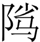
藏） （17）466。中国语文的新生（鲁迅） （16）476.11。
中国语和中国文（高本汉） ⑤383.2。
中国诸子百家考（儿岛献吉郎） （17）466。
中国雄立宇宙间（袁世凯时国歌） （15）395.1。
中国短篇小说集（郑振铎编） ⑩141.4，91.9。
中国新文学大系（赵家璧主编） ⑥265.1；⑧427.1；（13）311.1；（17）299。
中文拉丁化的理论（鲁迅等） （17）464。
中华民国书林一瞥（长泽规矩也） （17）469。
《中国小说史略》后记（鲁迅） ⑨307.4。
中国历史地理研究（小川琢治） （17）466。
中国中世纪医学史（廖温仁） （17）466。
中国文坛上的鬼魅（鲁迅） （16）488.14。
中国文学珍本丛书（施蛰存） ⑥434.10，586.2；⑧439.2；（17）299。
中国文学概论讲话（盐谷温） （12）524.14。
中国古代画论研究（金原省吾） （17）466。
《中国杰作小说》小引（鲁迅） （16）593.7。
中国革命的现阶段（斯大林、布哈林） （17）464。
中国美术史·雕塑篇（大村西崖） （17）466。
中国新文学运动史（王哲甫） （13）151.5；（14）376.1；（17）299。
《中华木刻集》封面题签（鲁迅） （13）475.5。
中国小说戏曲史概说（宫原民平） （17）466。
中心经等十四经同本 （17）299。
中国文艺工作者宣言 ⑥563.22，564.32；（14）124.1。
中国文艺家协会宣言 ⑥560.4。
中国印度短篇小说集 见《中国印度短篇集》。
中国古明器泥象图说（滨田耕作） （17）467。
中国古明器泥象图鉴（大塚稔） （17）467。
中国古器图考·兵器篇（原田淑人、驹井和爱） （17）467。
中国思想的西传法国（后藤末雄） （17）464。
中国语书法之拉丁化（萧爱梅） ⑥112.44。
中山先生逝世后一周年（鲁迅） （15）614.4。
中国人与中国社会研究（池田龙藏） （17）464。
中国人失掉自信力了吗？（鲁迅） （16）476.12。
《中国小说史略》日译本序（鲁迅） （16）540.6。
中国小说的历史的变迁（鲁迅） （15）530.1。
中国历史地理研究续集（小川琢治） （17）467。
中国革命及世界的未来（细川嘉六） （17）464。
中国革命的理论的考察（布哈林） （17）464。
中国文字之原始及其构造（蒋善国） （17）299。
中国文坛的左翼文艺运动（出上万一郎） （14）205.7。
中国本位的文化建设宣言（何炳松等） ⑥282.5。
“中国自由运动大同盟宣言”（丁武） （12）236.2。
中国古代经济思想及制度（田畸仁义） （17）467。
中国营养和代谢作用情形（亚道尔夫） ④257.7。
中国提倡社会主义之商榷（萧纯锦） ①401.6。
中国新文学大系·小说二集（鲁迅编） ⑥265.1；⑧427.1；（13）311.1，361.11，365.3，454.1，498.1；（16）514.4，519.8，519.9。
中国新文学大系·史料·索引（钱杏邨编） （13）577.4。
中国新兴的象征主义文学（洪瑞钊） （11）394.3。
中华民国都城宜正名京华议（林传甲） ⑧462.2。
中国当代短篇小说家作品选（敬隐渔） （13）49.2。
《中国新文学大系·小说二集》序（鲁迅） （16）519.5，519.10。
《中国新文学大系·小说二集》编选感想（鲁迅） （13）344.1。
中国现代左翼作家第一人的全集出版 （14）224.1。
中国左翼作家联盟对于《文战》新谣言的来简 （14）205.8。
贝多芬（罗曼·罗兰） （17）451。
贝希尔铜刻像（玛特奈尔） （13）240.3。
内书（刘安） ⑨419.27。
内外（鲁迅） （16）374.8。
内经（计倪） ⑩31.10。
内感篇（段祺瑞） ③335.2。
内省的道路（黑塞） （17）469。
内阁文库书目（日本） ⑧211.3。
内阁大库档案访求记（金梁） ③592.4。
内山完造作《活中国的姿态》序（鲁迅） （16）524.3。
见笑集（朱克家） （17）299。
牛歌（招勉之） ⑧490.3。
牛羊日历（刘轲） ⑩133.21，133.23。
手记（陀思妥耶夫斯基） ⑦109.3。
毛诗（毛亨、毛苌） ⑩16.11，297.7。
毛毛雨（黎锦晖） ⑤477.8；⑥209.4；（13）250.3。
毛颖传（韩愈） ⑨82.17；⑩99.21。
毛诗稽古编（陈启源） （17）299。
毛毛虫的故事（法布耳） （17）549。
毛诗世本古义（何楷） ⑨372.34。
毛诗品物图考（冈元凤） ②256.11。
毛诗草木鸟兽虫鱼疏（陆玑） ②256.7；（17）300。
壬申笺（荣宝斋刻） （12）454.11。
长门赋（司马相如） ⑨438.12。
长生册 见《赵似升长生册》。
长生殿（洪昇） ⑩119.42。
长安志（宋敏求） （17）300。
长明灯（鲁迅） ②69.7；（15）554.9。
长恨歌（白居易） ⑩118.33。
长短经（赵蕤） （17）300。
长阿含经 （17）300。
长恨传（陈鸿） ⑥339.18；⑨81.5，144.14；⑩99.22，118.33，119.40。
长生殿传奇（洪昇） ⑨82.22。
长生殿补阙（唐英） ⑩120.43。
长安获古编（刘喜海） （17）300。
长恨歌画意（李祖鸿） （13）49.5；（17）300。
长崎美术史（永见清太郎） （17）492。
长江无尽图卷 ④574.2。
长安史迹之研究（足立喜六） （17）493。
长春真人西游记（李志常） ⑨173.3；（11）429.3。
长春真人西游记序（虞集） ⑨174.4。
什么叫艺术（马克思等） （17）484。
什么是“讽刺”？（鲁迅） （13）452.2，512.2；（16）534.1，535.3，550.15。
什基德共和国 见《以陀思妥耶夫斯基命名的流浪儿学校》。
什曼斯奇小说集 （11）397.1。
化名新法（鲁迅） （16）453.6。
化学鉴原（韦而司） ⑤344.6。
化中人位论（赫胥黎） ①18.6。
化石骨骼论（居维叶） ①21.31。
化学卫生论（真司腾） ①442.7；⑩298.14。
仇恨（张天翼） （12）360.5。
仇文合璧飞燕外传（仇英、文徵明） （17）300。
仇文合璧西厢会真记全册（仇英、文徵明） （17）300。
反刍（鲁迅） （16）410.1。
反离骚（扬雄） ⑨389.6。
反“漫谈”（鲁迅） （16）38.2。
反抗舆论的勇气（陈独秀） （11）411.10。
介绍几个读论语的好姿势（黄嘉音） ⑥181.21。
父亲（萧洛霍夫） （16）280.7。
父与子（屠格涅夫） ④478.15；⑤536.3；⑩189.7。
父与子（卜劳恩） （17）562。
父子之间（周文） （13）441.1，454.1；（17）300。
父亲的病（鲁迅） （11）567.1；（15）643.2。
父亲的归来（欧阳兰） （15）550.6。
父亲在亚美利加（亚勒吉阿） ⑩191.1；（15）438.3。
父亲拿洋灯回来的时候（阿霍） （11）405.4。
从军乐（影片） （16）588.1。
从深处（石民） ⑦209.70。
从军日记（谢文翰） （17）300。
从前……和将来（至尔·妙伦） （17）541。
从讽刺到幽默（鲁迅） （16）369.4。
从“别字”说开去（鲁迅） （13）436.1；（16）525.17。
从空想到科学（恩格斯） （17）498。
从帮忙到扯淡（鲁迅） （13）478.3；（16）539.3，550.15。
从幽默到正经（鲁迅） （16）369.4。
从猿群到共和国（丘浅次郎） （17）520。
从西伯利亚到满蒙（鸟居龙藏等） （17）481。
从虚无出发的创造（舍斯托夫） （17）510，515。
从孩子的照相说起（鲁迅） （13）195.1，267.1；（16）470.8。
从《发掘》谈到历史小说（曹聚仁） （13）227.3。
从百草园到三味书屋（鲁迅） （11）548.1；（15）639.4。
从社会学上所见的艺术 （17）490。
从灵向肉和从肉向灵（厨川白村） ⑩274.13，278.1，278.2。
从文学革命到革命文学（成仿吾） ④68.9。
从唯物史观所见的文学（伊科维支） （17）478。
从小说看来的支那民族性（安冈秀夫） ③356.21；⑥277.3；（12）468.1；（17）462。
从盛宣怀说到有理的压迫（鲁迅） （16）379.6。
从人类学及人种学所见到的东北亚（鸟居龙藏） （17）459。
今世说（王晫） ⑨72.32；（17）300。
今日漫画（霍姆） （17）536。
今文八弊（林语堂） ⑥371.8，371.13。
今书七志（王俭） ⑥337.7。
今古奇观（抱瓮老人） ①164.37；⑨213.12。
今古奇闻（王寅） ①164.38；⑨214.13，214.15。
今昔物语（源隆国） ⑩247.38。
今日的雕版画（霍姆） （17）541。
今春的两种感想（鲁迅） （12）372.4，376.1；（13）291.7；（16）493.3。
今日中国之小说界（罗家伦） ③204.8。
今年不曾有过春天（纪德） （13）233.3。
今日欧美小说之动向（半月刊评论社编） （17）300。
公主（安徒生） （15）27.7。
公羊传 见《春秋公羊传》。
公孙龙子 （17）300。
公孙龙子注（陈澧） （17）301。
“公理”之所在（鲁迅） （16）38.6，38.7。
公是先生七经小传（刘敞） （17）301。
仓颉（李斯） ⑨396.3。
月光（冰心） （11）394.4。
月夜（川岛） （17）301。
月界旅行（凡尔纳） ⑩165.1。
月宫盗宝（影片） ⑥649.2。
月世界旅行（井上勤译） ⑩167.23。
月河所闻集（莫君陈） （17）301。
月河精舍丛钞（丁宝书） （17）301。
《月界旅行》辨言（鲁迅） ⑩165.2。
月蚀引起的话（苏汶） ⑧429.3。
氏族略（郑樵） ⑩31.8。
丹书 ⑨358.11。
丹麦的思想潮流（克劳森） ⑦221.167。
丹麦短篇小说集（安徒生等） ④288.11。
风波（鲁迅） ①500.6；（15）409.1。
风景（陈烟桥） （13）466.1。
风赋（宋玉） ⑨390.9。
风流人（泷井孝作） （17）501。
风流梦（冯梦龙） ⑨213.5。
风筝误（李渔） ⑧414.1。
风平浪静（王志之） （13）206.1，311.1，551.1。
风雨之下（潘垂统） （11）402.3，426.8。
风景在动（北原白秋） （17）501。
风景与心境（麦绥莱勒） （17）549。
风景画选集 （17）502。
乌鸦（山川均） （17）439。
乌合丛书（鲁迅编） ③411.4；⑦478.1；⑧192.17；（11）218.7，515.6，605.3。
乌衣巷诗（刘禹锡） ⑩156.16。
乌青镇志（董世宁） （17）301。
乌兑格之最后 见《最后一个乌兑格人》。
凤阳士人（蒲松龄） ⑩118.32。
六艺 见《六经》。
六帖 见《白氏六帖》。
六经 ③208.28。
六韬（吕尚） ⑨183.2。
六十种曲（毛晋） （17）301。
六艺纲目（舒天民） （17）301。
六月流火（蒲风） （14）61.8。
六书解例（马叙伦） （17）301。
六朝文絜（许梿） ④593.4；（17）301。
六言诗十首（嵇康） ⑩83.9。
六醴斋医书（程永培） （17）301。
六个学生该死（许广平） （11）84.2。
六论“文人相轻”（鲁迅） （13）545.10。
六朝廿一家集 见《汉魏诸名家集》。
六朝事迹编类（张敦颐） ⑩156.17。
六朝人手书左传（杨守敬辑） （17）301。
六朝时代的艺术（梅泽和轩） （17）473。
六祖坛经·神会禅师语录 （17）473。
六朝小说和唐代传奇文有怎样的区别？（鲁迅） （13）452.2；（16）534.1，535.3。
文学（瓦勒里） （17）472。
文录（唐庚） ⑧220.6。
文录 见《吴虞文录》。
文录 （17）302。
文始（章炳麟） （12）321.5；（17）302。
文选（萧统） ③543.20；④631.4；⑤344.9，474.6；⑥48.14，307.4；⑦139.2；⑨392.22；⑩7.6，13.3，66.6；（12）481.4；（17）301，302。
文士传（张隐） （17）302。
文艺论（梅列日柯夫斯基） （17）471。
文言说（阮元） ⑨359.19。
文学论（土田杏村） （17）472。
文学论（竹友藻风） （17）472。
文学论（戈庚） （17）472。
文学论（森山启） （17）472。
文学论（高尔基） （17）473。
文笔对（阮福） ④47.7；⑨359.19。
文人无文（鲁迅） （16）370.19。
“文人相轻”（鲁迅） （16）530.8。
文艺日记（黄源编） （17）302。
文艺丛书 见《良友文学丛书》。
文艺连丛（鲁迅编） ⑦485.1。
文艺时评（森山启） （14）383.5。
文艺评论（纪德） （17）471。
文艺政策（鲁迅译） ④226.48；⑦203.20；⑩342.1；（17）528。
文艺复兴 见《文艺复兴论》。
文艺战线 见《艺术战线》。
文艺辞典（日本创元社编） （17）472。
文艺管见（里见弴） （17）472。
文化拥护（小松清编译） （17）470。
文心雕龙（刘勰） ⑧371.4；⑨358.14；（17）303。
文史通义（章学诚） （17）303。
文字蒙求（王筠） （17）303。
文字感想（涵秋） ①408.2。
文坛三户（鲁迅） （13）478.3；（16）539.3。
文床秋梦（鲁迅） （16）400.2。
文苑英华（李昉等） ⑨82.15；⑩97.5；（11）532.4；（17）303。
文明小史（李宝嘉） ⑨302.4。
文学入门（小泉八云） （17）473。
文学大纲（德林克瓦特） ⑦214.104；（17）554。
文学大纲（郑振铎） （17）304。
文学丛刊（巴金主编） （13）541.2；（17）304。
文学百题（傅东华编） ⑥336.1，479.1；（13）452.2；（17）304。
文学论考（本间久雄） （17）473。
文学评论（片上伸） ⑩322.3，470.2；（17）473。
文学评论（高尔基等） （17）473。
文学原论（埃尔斯特） （17）473。
文学家像 见《俄国文学家像》。
文学概论（潘梓年） （17）305。
文学辞典 见《文学百科全书》。
文房小说 见《顾氏文房小说》。
文选补遗（陈仁子） （17）305。
文选集注 ⑩66.8。
文统之梦（陈子展） ⑤329.2。
文章轨范（谢枋得） （17）305。
文章作法（夏丏尊、刘薰宇） ④279.8；（11）250.1。
文章缘起（任昉） ⑨415.5。
文牍汇编（教育部） （11）361.2。
文献通考（马端临） ⑩24.2。
文人比较学（鲁迅） （14）3.4。
文木山房集（吴敬梓） ⑨234.2。
文艺与批评（卢那察尔斯基） ④184.1，218.5；⑦222.174；⑩333.1，333.6；（12）210.1；（16）150.2；（17）305。
文艺与武力（鲁迅讲演记录稿） （13）298.2。
文艺与法律（胜本正晃） （17）470。
文艺论断片 见《近代文艺批评断片》。
文艺批评史（宫岛新三郎） （17）472。
文艺学概论（佩特尔森） （17）472。
文艺思潮论（厨川白村） ⑩259.6；（17）472。
文艺复兴论（佩特） （17）455，471。
文字学音篇（钱玄同） （17）305。
文坛贰臣传（男儿） ④197.10。
文坛登龙术（章克标） ⑤292.2，292.3。
文坛新人论（田中纯） ⑩247.34。
文求堂书目 （17）472。
文学与革命（托洛茨基） ④220.23；（12）27.4，111.1；（17）305，470，549。
文学的影响（古尔蒙） （12）85.1。
文学底影像（卢那察尔斯基） ⑩333.8。
文学革命论（陈独秀） ⑥265.2。
文美斋笺谱（文美斋） （12）367.2。
文章与题目（鲁迅） （12）393.1；（16）379.2。
文渊阁书目（杨士奇） ⑩24.3。
文森特·凡·高 （17）562。
文艺的大众化（鲁迅） （16）184.4。
《文艺研究》例言（鲁迅） （16）184.1，184.3。
文艺家漫画像 （17）472。
文艺学史概说（舍尔） （17）472。
文艺理论丛书 （12）438.3。
文心雕龙讲疏（范文澜） （17）305。
文心雕龙补注（李详） （17）306。
文字学形义篇（朱宗莱） （17）306。
文学与经济学（大熊信行） （17）471。
文学百科全书 （13）444.1，506.1；（17）568。
文学百科辞典 见《文学百科全书》。
文学改良刍议（胡适） ⑥265.2。
文学者的一生（武者小路实笃） （12）8.1；（16）5.5。
文学的连续性（戈斯） （17）471。
文学的战术论（大宅壮一） （17）473。
文学底俄罗斯（理定编） ⑩356.3。
文学思想研究（早稻田大学） （17）473。
文馆词林汇刊（许敬宗） （17）306。
文豪评传丛书（东京新潮社） （17）473。
文摊秘诀十条（鲁迅） （16）369.4。
文艺工作者宣言 见《中国文艺工作者宣言》。
文艺自由论辩集（苏汶） ④551.7。
文化社会学概论（关荣吉） （17）472。
文昌帝君功过格 ①284.6。
文昌帝君阴骘文（张亚子） ⑤330.8。
文学与政局有关？（黎君亮） ⑧420.10。
文学青年与道德（窦隐夫） （13）250.5。
文学革命的前哨（小宫山明敏） （17）471。
文学理论诸问题（平林初之辅） （17）471。
文衡山自书诗稿（文徵明） （17）306。
文森特·凡·高画帖 （17）562。
文艺与政治的歧途（鲁迅） （13）291.5；（16）54.9。
文艺鉴赏的四阶段（厨川白村） ⑩265.1。
文徵明潇湘八景册 （17）306。
文学古典之再认识（秋田雨雀） （17）471。
文衡山书离骚真迹（文徵明） （17）306。
文艺学的发展与批判（希列尔） （17）470。
文艺界联合问题我见（何家槐） ⑥560.6。
文昌帝君阴骘文图说 ②265.12。
文学之社会学的批评（卡耳瓦顿） （17）471。
文殊所说善恶宿曜经 见《文殊师利菩萨及诸仙所说吉凶时日善恶宿曜经》。
文艺战线上的封建余孽（郭沫若） ④8.8，225.46；⑤563.3；（11）324.4；（13）101.7。
文衡山先生高士传真迹（文徵明） （17）306。
文学上之个人性与阶级性（林癸未夫） ④128.2。
文艺上几个根本问题的考察（厨川白村） ⑦257.10。
文学家陈源及其夫人凌叔华女士（黄梅生） （11）300.3。
文殊师利及诸仙所说吉凶时日善恶宿曜经 （17）306。
方言（扬雄） ⑥109.25；⑧164.3；（17）306。
方言疏证（戴震） （17）306。
方巾气研究（三）（林语堂） （13）91.5。
方泉先生诗集（周文璞） （17）306。
忆韦素园君（鲁迅） （13）165.1；（16）465.5。
忆刘半农君（鲁迅） （13）191.2；（16）470.10。
忆爱罗先珂华希理君（江口涣） ①243.27；⑩221.5，486.1，486.2，486.3，486.4。
火与剑（显克微支） （13）459.4。
火腿先生在人海中的奔走（黄鹏基） ⑥273.74。
为人类（爱罗先珂） ⑩227.1；（17）458。
为了活（萧军） （13）446.1。
为了大众（齐勒） （17）542。
为翻译辩护（鲁迅） （16）395.10。
为了忘却的记念（鲁迅） （16）363.3。
为文学的经济学 见《文学与经济学》。
为人而生（迎接萧伯纳）（野口米次郎） （14）241.3。
为了无产阶级的美术（村山知义） （17）451。
为批评家的卢那卡尔斯基（尾濑敬止） ⑩333.4。
为保卫苏联服务的漫画集（叶菲莫夫） （17）567。
为实现世界革命而活跃的苏联政治组织（久保田荣吉） （17）474。
为德国法西斯压迫民权摧残文化的抗议书》（鲁迅、宋庆龄等） ④551.8。
为托尔斯泰《克莱采奏鸣曲》所作
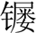
版画十二幅和版封面一幅（盖格尔） （17）564。斗牛士（德·蒙泰朗） （17）528。
斗南存稿（勿堂中岛） （17）306。
订讹类编（杭世骏） ⑥184.39；（17）307。
心（阿米契斯） ⑦433.4；（14）271.2。
心术（齐人饶） ⑨13.16，429.22。
心之王国（菊池宽） ⑩255.3。
心史丛刊（孟森） ⑥46.4；⑨248.12。
心的探险（高长虹） （12）69.4；（17）307。
心理学入门（冯特） （17）540。
心胜宗十句义论 （17）307。
心经直说金刚决疑 （17）307。
心经金刚经宗泐注 （17）307。
心经释要金刚破空论 （17）307。
心经二种译实相文殊般若经 （17）307。
尹文子（尹文） （17）307。
尹氏小学大全（尹嘉铨） ⑥62.14；（17）307。
引玉集（鲁迅编） ⑦441.1；⑧511.1；（12）464.7，506.9，521.9；（13）15.3，18.5，41.1，85.1，97.2，98.5，109.2，238.1，321.4；（14）274.1；（17）307。
《引玉集》序 见《十五年来的书籍版画和单行版画》。
《引玉集》后记（鲁迅） （16）436.4。
巴罗哈（特雷克） ⑩496.5。
巴什庚之死（阿尔志跋绥夫） ⑩488.1。
巴黎圣母院（雨果） ⑩481.4，481.6。
巴黎之烦恼（波特莱尔） （13）368.1，447.7；（16）453.9；（17）307，474。
巴黎的忧郁 见《巴黎之烦恼》。
巴格达的窃贼 ④423.6。
巴甫洛夫版画集 （17）566。
巴金短篇小说集 （17）308。
“以夷制夷”（鲁迅） （16）374.9。
以俅画集（梁以俅） （17）308。
“以眼还眼”（鲁迅） （16）476.16。
以青春作赌注（费尔南德斯） （17）492。
以乔伊斯为中心的文学运动（春山行夫） （17）442。
以陀思妥耶夫斯基命名的流浪儿学校（班台莱耶夫、别雷赫） ⑩438.4；（13）598.5。
以胡适为中心潮涌浪漩着的文学革命（青木正儿） （14）177.2；（15）415.2。
以理论为中心的俄国无产阶级文学发达史（冈泽秀虎） ⑩345.24。
邓析子 （17）308。
劝善录 ⑨17.41。
劝发菩提心文（裴休） （17）308。
双官诰 ③225.7。
双十怀古（鲁迅） （16）405.1，405.6。
双雄记传奇（冯梦龙） ⑨212.4。
双阳公主追狄 ⑤311.9。
双梅景闇丛书（叶德辉） （17）308。
双照楼诗词稿（汪精卫） ⑤241.7。
书经 见《尚书》。
书话（庄司浅水） （17）506。
书籍（安德烈夫） ⑩203.1。
书信集（凡·高） （17）535。
书简集 见《小林多喜二书简集》。
书目答问（张之洞） ③208.26，463.5；⑤344.8。
书苑折枝（鲁迅） （16）35.6。
书林清话（叶德辉） （17）308。
书物之敌（庄司浅水） （17）506。
书法正传（冯武） ①554.10。
书法全集（下中弥三郎编） （17）507。
书信选集 见《鲁迅书信选集》。
书斋的岳人（小岛乌水） （17）507。
书斋的消息（野口米次郎） （17）507。
书癖的故事（福楼拜） （17）520。
书籍插画家传（巴黎巴布书局） （17）532。
书的还魂和赶造（鲁迅） （16）519.3。
书斋生活与其危险（鹤见祐辅） ⑩305.1；（16）27.1。
水（丁玲） （13）37.6；（14）302.3。
水灾（郑野夫） （12）525.2；（17）308。
水饰（杜宝） ⑥337.11。
水性（鲁迅） （16）465.7。
水经（桑钦） ⑩85.31。
水葬（蹇先艾） ⑥270.52。
水门汀 见《士敏土》。
水夫传 见《海上劳工》。
水经注（郦道元） ⑨53.3；⑩85.31；（17）308。
水浒传（施耐庵） ①161.23；②273.4；③354.6；④161.10；⑤561.3；⑥229.5；⑧161.2；⑨155.5，157.15，157.16；⑩71.5；（11）440.1，440.3；（13）49.3；（17）308，329，365，403，526。
水火鸳鸯（影片） （15）554.8。
水浒叶子（陈洪绶） （13）44.1，215.2，272.1。
水浒后传（陈忱） （11）440.4，443.2。
水浒图赞（杜堇） （13）22.3，50.1，159.2；（17）308。
水浒续集 （11）443.1。
水经注汇校（杨希闵） （17）308。
水浒传画谱（川柳重信） （17）474。
《水浒传》百回本（施耐庵） （11）440.3。
《水浒传》的演化（郑振铎） （12）323.5。
水前拓本瘗鹤铭 （17）308。
《水浒续集两种》序（胡适） ⑨306.2；（11）443.1；（15）500.1。
《水浒传》百二十回本（施耐庵） （11）440.1。
孔乙己（鲁迅） ①462.8；（15）363.1。
孔乙己（刘岘木刻画） （14）409.7；（17）308。
孔丛子 见《重刊宋本孔丛子》。
孔教论（陈焕章） （17）308。
孔子家语（王肃） ⑥330.5；⑨370.23。
孔灵符记 见《会稽记（孔晔）》。
孔季恭传（沈约） ⑩46.2。
孔教大纲（林文庆） （17）309。
《孔乙己》附记（鲁迅）①461.1。
孔子圣迹图 ④461.6。
孔北海年谱（缪荃孙） （17）309。
孔氏祖庭广记（孔元措） （17）309。
孔灵符会稽记 见《会稽记》。
孔另境编《当代文人尺牍钞》序（鲁迅） （16）564.11。
幻灭（茅盾） （17）309。
幻想与做梦（高长虹） ⑥273.71。
五画
玉历 见《玉历钞传》。
玉君（杨振声） ③357.28；⑥267.19；（11）53.5。
玉篇（顾野王） ⑩298.17；（17）280。
玉虫缘（爱伦·坡） （13）114.3。
玉娇李 ⑨195.10。
玉娇梨（张匀） ⑧339.2；⑨202.1，202.2，203.4。
玉堂春 ③597.6；⑤506.5。
玉历钞传（淡痴道人） ①319.7；②265.13；④360.3；（11）638.2；（16）27.5；（17）309。
玉台新咏（徐陵） ⑨418.23；（17）309。
玉剑尊闻（梁维枢） ⑨72.27。
玉壶遐览（胡应麟） ⑩100.29。
玉堂丛话（焦竑） ⑨71.24。
玉历至宝钞传 见《玉历钞传》。
玉溪生年谱会笺（张采田） （17）309。
刊误 见《李氏刊误》。
末光（柯罗连科） ①120.183。
未明集（田间） （17）310。
未名丛刊（鲁迅编） ③411.4；④274.30；⑥72.13；⑦478.1；⑧192.20；⑩315.11；（11）515.7。
未名新集（未名社） ⑥72.14；（11）624.1。
未来世界（影片） （16）627.3。
未名木刻选（刘岘等） （17）310。
未来的光荣（鲁迅） （16）431.5。
未有天才之前（鲁迅） （15）506.1。
《未有天才之前》小引（鲁迅） ①177.1。
未来派戏曲四种（宋春舫译） （11）423.8。
《未名丛刊》是什么，要怎样（鲁迅） ⑦478.2。
击筑遗音 见《万古愁曲》。
示众（鲁迅） （15）558.2。
示朴斋骈体文（钱振伦） （17）310。
巧克力（罗蒂洛夫） （17）310。
正仓院志（大村西崖） （17）474。
正是时候（鲁迅） （16）460.12。
正统道藏 ⑧139.6。
正面文章反看法（陈子展） ⑤98.2。
功顺堂丛书（潘祖荫） （17）310。
去雁（王独清） ③565.2。
去国集（胡适） （11）389.2。
甘泽谣（袁郊） ⑩91.15。
世本 ⑨439.20。
世范 见《袁氏世范》。
世俘 ⑨27.9。
世说逸（刘义庆） （17）310。
世故三昧（鲁迅） （16）405.9。
世界一瞥（西蒙） （17）539。
世界文库（郑振铎编） ⑥370.3，510.3；（13）403.2。
世界文学 （17）310。
世界丛书（商务印书馆） ⑩314.6；（11）418.5。
世界名画（刘海粟） ⑥411.8。
世说新语（刘义庆） ③547.40；⑥178.3，337.10；⑦141.7；⑨16.38，69.4；⑩44.2；（17）311。
世界史教程 见《唯物史观世界史教程》。
世胄拜伦传（穆尔） ①114.125。
世界的开端 （17）474。
世界的火灾（爱罗先珂） ⑩216.9；（15）452.1，452.2。
世界文学故事（梅西） （17）475，560。
世界文学全集（东京新潮社编） （14）52.2；（17）475。
世界玩具史篇（有坂与太郎） （17）475。
世界玩具图篇（西泽笛亩）（17）475。
世界美术全集（下中弥三郎编） （13）50.2，159.1；（17）475。
世界幽默全集（佐藤春夫编） （12）483.20；（14）208.2，232.1。
世界艺术发展史（马察） （17）476。
世界文艺大辞典（吉江乔松） （17）476。
世界文化史大系（威尔斯） （17）476。
世界古代文化史（西村真次） （17）476。
世界出版美术史（小林莺里） （17）476。
世界性欲学辞典（佐藤红霞） （17）476。
世界原始社会史（马托林） （17）476。
世界娼妓制度史（泷本二郎） （17）476。
世界文艺名著画谱（酒井清） （17）476。
世界艺术摄影年鉴 （17）476。
世界地理风俗大系（仲摩照久） （17）476。
世界宝玉童话丛书（东京儿童书房） （17）476。
世界美术全集续编（下中弥三郎） （13）44.2。
世界裸体美术全集（太田三郎编） （17）477。
世界文学与无产阶级（梅林） ⑩474.4；（17）474。
世界幽默全集·中国篇（佐藤春夫译编） （17）474。
世界文学与比较文学史（赛特里希） （17）474。
世界社会主义文学丛书（东京南宋书院） （17）477。
世界现代无产阶级美术的趋势（永田一修） （14）394.2。
艾子杂说（苏轼） ⑨71.18。
古今注（崔豹） （17）311。
古文苑 ⑨392.22；（17）311。
古史辨（顾颉刚） ③597.5；（17）311。
古异传（袁王寿） ⑨15.29。
古诗纪（冯惟讷） ⑩66.9。
古逸书（潘基庆） ⑩115.8。
古镜记（王度） ⑨81.5；⑩97.2。
古今小说 见《喻世明言》。
古今书录（毋煚） ⑨14.24。
古今杂剧 （17）311。
古今说海（陆楫等） ⑧136.19；⑩147.15。
古今钱略（倪模） （17）311。
古今逸史（吴琯） ⑩146.14。
古文观止（吴楚材、吴调侯） ④219.20；⑥307.5；⑦142.15；（11）239.2。
古孝子传（茅泮林） ②268.33；④51.5。
古志石华（黄本骥） （17）311。
古岳渎经（李公佐） ⑨91.2；⑩115.4；（11）432.8。
古学汇刊（邓实编） （17）311。
古泉丛话（戴熙） （17）311。
古镜图录（罗振玉） ⑧88.4；（17）311。
古籀余论（孙诒让） （17）312。
古小说钩沉（鲁迅） ③254.36，416.8；⑩4.1，90.7；（13）428.1；（15）27.5；（17）312。
古文辞类纂（姚鼐） ⑦142.17。
古书与白话（鲁迅） （15）607.13。
古尔蒙诗钞（古尔蒙） （17）440。
古杭梦游录（灌园耐得翁） ①160.15。
古明器图录（罗振玉） （17）312。
古金待问录（朱枫） （17）312。
古诗十九首 ⑨418.21。
古城末日记（影片） （16）141.4，594.10。
古普林说选（库普林） （17）312。
古骸底埋葬（盈昂） （17）312。
古镜之研究（梅原末治） （17）529。
古人并不纯厚（鲁迅） （16）447.14。
古今万姓统谱（凌迪知） ⑩106.24。
古今史疑大全 ③597.5。
古今图书集成（陈梦雷等） ⑤285.6。
古今铭刻汇考（郭沫若） （17）312。
古希腊风俗鉴（施沃布） （17）477。
古泉精选拓本（江标） （17）312。
古铜印谱举隅（太田孝郎） （17）477。
古斯塔夫·陀莱（哈特劳布） （17）544。
古书中寻活字汇（鲁迅） （16）410.5。
古兵符考略残稿（翁大年） （17）312。
古泼来枯的客栈 ⑩520.5。
古泼来枯的酒店 见《古泼来枯的客栈》。
古代希腊文学总说（杰布） （17）477。
古代铭刻汇考续编（郭沫若） （17）312。
本事诗（孟棨） ⑨94.26；⑩104.7。
本味篇（吕不韦） ⑨32.3。
本草别录（陶弘景） ⑩298.12。
本草纲目（李时珍） ①320.14，455.4；④556.2；⑩297.9。
本草衍义（寇宗奭） （17）312。
札朴（桂馥） （17）312。
可兰经 ⑤225.9。
可恶罪（鲁迅） （16）38.7。
丙辰札记（章学诚） ⑨143.8。
左传 见《春秋左氏传》。
左氏凡例辨（吉川辛次郎） （14）323.3。
左翼作家联盟透视（穆木天等） （13）339.6。
石宕（许钦文） ⑥271.56。
石涛（桥本关雪） （17）477。
石屏集（戴复古） （15）77.1；（17）313。
石林遗书（叶梦得） （17）313。
石头记索隐（蔡元培） ⑨248.13；⑩71.4。
石涛山水册（原济） （17）313。
石亭纪事续编（丁晏） ⑨174.7。
石涛山水精品（原济） （17）313。
石涛纪游图咏（原济） （17）313。
石涛画东坡时序诗册（原济） （17）313。
石涛和尚八大山人山水合册（原济、朱耷） （17）313。
右侧之月（太田信夫译） ⑩416.13，417.16。
右边的月亮（玛拉式庚） （17）477。
右文说在训诂学上之沿革及其推阐（沈兼士） （13）51.1，116.3；（17）313。
布莱克研究 （17）450。
布料与版画（辻永等） （17）514。
布尔什维克的精神与面貌（米勒） ⑦205.35；（17）551。
龙虎斗（影片） （16）436.8。
龙绡记（黄维辑） ⑩105.15。
龙文鞭影（萧良友） ⑤255.8；⑥54.7；⑩440.13。
龙图公案 ⑤210.4；⑨289.9。
龙图耳录 ⑨289.10。
龙威秘书（马俊良） ⑩90.4。
龙龛手鉴（行均） （17）313。
龙潭虎穴（影片） （16）609.3。
龙虎风云会 ⑨142.3。
龙筋凤髓判（张
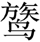
） ⑦332.13；⑨81.11。龙舒净土文（王日休） （17）313。
平妖传（罗贯中、冯梦龙） ①163.32；⑧213.17；（13）8.2。
平山冷燕（荻岸山人） ⑨202.1，202.2；（11）455.2。
平乐馆赋（枚皋） ⑨428.15。
《平妖传》序（张无咎） ⑨184.4。
平凡的事（李青崖） （12）424.4。
平斋文集（洪咨夔） ⑤474.7；（17）313。
平民千字课（中华平民教育促进会） ⑥110.31。
平津馆丛书（孙星衍） （17）313。
平津馆鉴藏记（孙星衍） ⑩63.28，63.29。
平民文学之两大文豪（谢无量） ⑨307.3。
平常的事——一个农妇的故事（聂维洛夫） （14）143.1。
打杂集（徐懋庸） ⑥302.1；（13）426.4；（16）525.13；（17）314。
“打杂集”（张庚） （13）530.1。
打听印象（鲁迅） （12）446.2；（16）400.10。
扑空（鲁迅） （16）406.16。
《扑空》正误（鲁迅） （16）406.20。
东华录（蒋良骥） ⑥63.19；（14）76.2。
东都赋（班固） ⑨390.9。
东方大乐（影片） ⑤386.6。
东方的诗（森三千代） （14）289.2；（17）494。
东亚植物（中井猛之进） （17）494。
东轩笔录（魏泰） （17）314。
东谷所见（李之彦） ⑨17.39。
“东京通讯” 见《文艺战线上的封建余孽》。
东南纪闻 ⑧222.3。
东莱博议（吕祖谦） ⑥307.5。
东晋演义 ⑨158.23。
东皋子集（王绩） （17）314。
东斋记事（陶珽） ⑩24.5。
东海归来（张慧） （13）63.3。
东游日记 （17）314。
东塾遗书（陈澧） （17）314。
东方创作集（鲁迅等） （13）381.2。
东北义勇军（萧军） （14）38.1。
东亚墨画集（格罗塞） （17）554。
东西晋演义 ⑨158.23。
东阳夜怪录 ⑩140.3。
东周列国志（冯梦龙、蔡元放） ⑨158.21。
东京梦华录（孟元老） ①159.5；⑨123.4。
东城老父传（陈鸿） ⑨81.5，82.21；⑩120.44。
东洲斋写乐（野口米次郎） （17）494。
东洋史论丛（东洋史论丛刊行会） （17）494。
东洋画概论（金原省吾） （17）494。
东洋版画篇（下中弥三郎编） （13）50.2。
东海庙残碑 （17）314。
东塾读书记（陈澧） （17）314。
东西文艺评传（高安月郊） （17）494。
东西文学评论（小泉八云） （17）495。
东莱先生诗集（吕本中） （17）314。
东亚文明之黎明（滨田耕作） （17）494。
东亚考古学研究（滨田耕作） （17）495。
东周列国志读法（蔡奡） ⑨158.27。
东洲草堂金石跋（何绍基） （17）314。
东洋文化史研究（内藤虎次郎） （17）495。
东洋古代社会史（佐久达雄） （17）495。
东洋封建制史论（普利雅科夫等） （17）495。
东西文学比较评论（高安月郊） （17）495。
东西交涉史之研究（藤田丰八） （17）494。
东洋美术史之研究（泽村专太郎） （17）494。
卡巴耶夫 见《恰巴耶夫》。
卡尔·蒂尔曼木刻集 （17）545。
卡尔·马克思和列夫·托尔斯泰（普列汉诺夫） ⑦212.91。
卡斯帕尔·大卫·弗里德里希 （17）536。
卡尔·施特恩海姆《编年史》的木刻集（麦绥莱勒） （17）545。
北史（李延寿） ①369.4；（17）315。
北齐书（李百药） （17）315。
北里志（孙棨） ⑨102.9，275.1。
北山小集（程俱） （17）315。
北方旅馆（达彼） （17）478。
北平素描（姚克） （13）60.3。
北平笺谱（鲁迅、郑振铎） ⑦428.1；（12）454.5；（13）53.2，199.1；（16）405.2；（17）315。
北曲拾遗（景世珍等） （17）315。
北京胜景（丸山昏迷） （17）478。
北京通信（鲁迅） （15）567.2。
北梦琐言（孙光宪） ⑨16.38；（17）315。
北堂书钞（虞世南） ⑩14.8，67.10；（17）315。
北人与南人（鲁迅） （16）436.1。
《北平笺谱》序（鲁迅） （12）459.2，476.2，488.2，508.1，533.1；（16）406.22。
《北平笺谱》序（郑振铎） （16）415.1。
北极探险记（鲁迅译） （13）100.1。
北极探险记（影片） （16）141.5。
北京之终日（洛蒂） （17）549。
北京的魅力（鹤见祐辅） ①231.16；⑩301.3。
北美印象记（厨川白村） ⑩259.6，302.7。
北游及其他（冯至） （17）315。
北斋水浒画传（葛饰北斋） （17）478。
北欧文学的原理（片上伸） ⑩314.1。
北京的顾亭林祠（今关天彭） （17）478。
北美游历演说记（鹤见祐辅） （17）478。
北京女界一部分的问题（持平） （11）30.5。
北京文艺界之分门别户（徐丹甫） ③455.15，471.8。
北京孔德学校初中国文选读 （17）316。
北平图书馆舆图版画展览会目录 （12）461.1；（17）316。
北新书局李志云对全体回教诸君声明 （12）336.4。
卢那画传 见《奥古斯特·雷诺阿》。
卢梭论女子教育（梁实秋） ③579.4。
卢那察尔斯基画像 （12）186.2，190.1；（16）158.4。
卢那察尔斯基小传（曹靖华） （16）442.11。
卢那察尔斯基剧本三种 ⑦375.2。
卢勃克和伊里纳的后来（有岛武郎） ⑦208.55；⑩312.1；（16）55.10。
业间录（铃木虎雄） （17）519。
旧唐书（刘昫等） ④333.2；⑥336.5；⑦331.5；⑩7.4；（17）316。
旧五代史（薛居正） （17）316。
旧约全书 ①104.10；④456.12；⑩385.17。
旧事重提（鲁迅） ③354.2。
旧式的田主（果戈理） （13）369.2。
旧杂譬喻经（康僧会译） ⑨55.23。
旧时代之死（柔石） ④287.8；（12）272.1，273.2；（13）31.3。
旧都文物略（北平市政府秘书处） （14）167.2；（17）316。
旧唐书·经籍志（刘昫） ⑩7.4。
归厚（鲁迅） （16）410.4。
归心篇（颜之推） ⑤375.7。
归去来辞图卷 ④574.2。
目连救母 ①597.3；⑥113.49。
目连救母记（郑之珍） ⑥113.50；（13）600.2；（17）316。
目连入地狱故事 见《大目乾连冥间救母变文》。
目前中国革命问题（施存统） （17）316。
且介亭杂文（鲁迅） （13）360.7；（14）4.5，153.1。
且介亭杂文二集（鲁迅） ⑥481.16；（14）4.5，8.2。
《且介亭杂文》附记（鲁迅） （13）371.5。
叶紫作《丰收》序（鲁迅） （13）332.4，426.1；（16）514.8。
叶夫雷诺夫画像（安宁科夫） ⑦206.37。
申鉴（荀悦） （17）317。
申报年鉴（申报年鉴社） （17）317。
申江胜景图（吴友如） ⑥201.31。
申报馆书目续集 ⑦309.2。
甲申朝事小纪（抱阳生） （17）317。
甲骨文字研究（郭沫若） （17）317。
甲骨契文拓本 （17）317。
电（巴金） （17）317。
电网外（叶紫） ⑥230.10。
电术奇谈（菊池幽芳） ⑨302.8。
电的利弊（鲁迅） （16）363.4。
电国秘密（影片） （16）559.8。
电影艺术史（岩崎昶） （17）500。
电影的教训（鲁迅） （16）400.3。
田氏丛书 （17）318。
田园思想（鲁迅） （15）571.5。
田舍医生（大田卯） （13）232.1。
田园交响乐（纪德） （17）318。
田军作《八月的乡村》序（鲁迅） （13）427.1；（16）525.15。
田野和公园里的动物生活（法布耳） ⑦354.4。
由聋而哑（鲁迅） （16）400.1。
由托尔斯泰家里寄——百年祭通讯（保尔·雪华） ⑦214.109。
由中国女人的脚，推定中国人之非中庸，又由此推定孔夫子有胃病（鲁迅） （16）369.5。
史记（司马迁） ①369.2；④219.16；⑥433.4；⑨439.21；（12）147.6；（17）318。
史通（刘知几） ⑨32.5。
史略（高似孙） （17）318。
史目表（钱恂） （17）318。
史记正义（张守节） ⑩25.2。
史记音义（徐广） ⑩25.3，30.5。
史记索隐（司马贞） ②111.6；⑩25.2。
史记探原（崔适） （17）318。
史学概论（布依可夫斯基） （17）478。
史前人类（摩尔根） （17）482。
史通通释（浦起龙） （17）318。
史的一元论（普列汉诺夫） （17）478。
史的唯物论 （12）528.6。
史的唯物论（布哈林） （17）478。
史的唯物论（列宁） （17）478。
史的唯物论（梅德维杰夫） （17）478。
史的唯物论（苏联共产主义学院哲学研究所） （17）478。
史太因林画集（史太因林） （17）571。
史的唯物论入门（萨拉比雅诺夫） （17）479。
史的唯物论略解（布尔哈脱） （17）479。
史的唯物论及例证 （17）479。
叩娜（葛巴丝卫里） （13）442.1。
四日（迦尔洵） ⑩472.4。
四书 ②308.4；③39.6，207.25，255.39；⑥331.8。
四史 ⑤396.3。
四十年 见《克里姆·萨姆金的一生》。
四友传（杨景淐） ⑨158.21。
四书衬（骆培） ②22.10。
四杰村 ③225.8。
四明志（罗濬等） ⑩33.4。
四骑士（影片） （16）82.2。
四六丛话（孙梅） （17）318。
四库全书（纪昀等） ③155.5；⑤284.2；⑥63.17；（15）104.1，189.1，575.5；（17）318。
四郎探母 ⑤311.8；⑥371.10。
四洪年谱（钱大昕） （17）318。
四部正讹（胡应麟） ⑩155.11。
四部丛刊（张元济辑） ③408.8；⑥199.16；（13）105.2；（17）319。
四部备要（中华书局） ⑥178.2。
四十二号街（影片） （16）446.3。
四谛等七经 （17）319。
四论“文人相轻”（鲁迅） （13）520.1；（16）549.8。
四言诗十一首（嵇康） ⑩83.16。
四印斋所刻词（王鹏运） （17）319。
四库全书珍本（鲁迅） （16）395.12。
四阿含暮抄解 （17）319。
四部丛刊续编 见《四部丛刊》。
四朝宝钞图录（罗振玉） （17）319。
四十二章经等三种 （17）319。
四库全书总目提要（纪昀等） ⑥61.12，143.3，336.3；⑨17.42；⑩61.12。
四库全书简明目录（纪昀等） ⑥143.3，336.3；⑩61.13。
出关（鲁迅） ⑥541.2；（13）593.2。
出师颂（索靖） （17）325。
出曜经（大达摩多罗） （17）325。
《出关》的“关”（鲁迅） （14）91.5；（16）605.14。
出埃及记 ⑩385.17。
出三藏记集（僧祐） ⑦104.5；（17）325。
出了象牙之塔（厨川白村） ⑩272.1，274.13；（11）457.2；（12）269.1；（15）550.7，550.8，554.4，589.3，593.4；（16）27.2；（17）325，516。
出卖灵魂的秘诀（鲁迅） （16）370.14。
“出人意表之外”的事（钱玄同） ⑧139.3。
《出了象牙之塔》自序（厨川白村） ⑩273.6。
《出了象牙之塔》后记（鲁迅） （15）597.3。
生计（显克微支） （17）319。
生活！（李霁野） （11）490.1。
生路（影片） （16）363.11。
生死场（萧红） ⑥423.1；（13）225.3，309.5，366.1，582.1；（14）12.1；（17）319。
生体论（拉马克） ①21.30。
生物学（周建人译） 见《亨达氏生物学》。
生理学（桥田邦彦） （17）479。
生吞活捉（影片） （16）454.15。
生理学粹（朱尔倍尔） （17）479。
生命之呼声（哈姆生） ⑦348.2。
生命之洗濯（谷胁素文） （17）437。
生财有大道（心心） （12）13.2。
生命的春潮（斯温勃恩） ⑦210.72；（17）559。
生命底微痕（柳倩） （17）320。
生物学讲座（东京岩波书店） （17）479。
生活全国书目 见《全国出版物目录汇编》。
生活的演剧化（叶夫雷诺夫） ⑦206.40。
失业（赖少麒） （13）508.1；（17）320。
失恋（赖少麒） （13）494.2。
失乐园（弥尔顿） ①108.60；④462.8。
失业以后（刘一梦） ④247.7。
失去的森林（严森） ⑦221.168。
失去的好地狱（鲁迅） ②205.1。
付法藏因缘经 （17）320。
代序——关于“新人”的故事（弗理契） ⑩370.12。
仙花（纽曼） （17）542。
仙人掌（狄修托利） （13）515.6。
仙真人诗 ⑨397.6。
仪礼 ⑤323.3，396.4；⑧89.8；⑨379.9。
仪礼疏（贾公彦等） （17）320。
白茶（班珂） ⑥574.5；（12）27.3。
白母亲（梭罗古勃） （11）398.2。
白蛇传（陈遇乾） （12）426.2。
白氏六帖（白居易） ⑩13.4。
白氏讽谏（白居易） （17）320。
白纸黑字（伊林） （12）380.3；（17）320。
白岳凝烟（汪次侯） （14）300.8；（17）320。
白话文学史（胡适） （12）210.3。
白门新柳词记（许豫） （17）320。
白龙山人墨妙（王震） （17）320。
白田草堂存稿（王懋竑） （17）320。
白头翁底故事（莎子） ⑥269.42。
白华绛跗阁诗集（李慈铭） （17）320。
白莽作《孩儿塔》序（鲁迅） （14）47.3；（16）599.4。
白阳山人花鸟画册（陈淳） （17）320。
他的子民们（马子华） （17）320。
《他们的生活的一年》译者序（平冈雅英） ⑩422.2。
丛莽（辛克莱） （12）193.5。
丛书举要（杨守敬） （17）320。
用画笔和剪刀（格罗斯） （17）551。
印典（朱象贤） （17）321。
印象记（厨川白村） （17）482。
印象画派述（拉扎尔） （17）550。
句溪杂著（陈文） （17）321。
句余土音补注（全祖望） （17）321。
外书（刘安） ⑨419.27。
外套（果戈理） ⑥71.9，288.2；⑧367.1；⑩515.3；（11）531.3；（12）323.1；（17）321。
外国也有（鲁迅） （16）406.15。
外省故事（萨尔蒂珂夫） ⑩518.5。
外国文学序说（片上伸） （17）480。
外国人名地名表（王云五） （17）321。
外国话和本国话（巴比塞） ⑤563.2。
务成子（务成昭） ⑨13.14。
鸟羽僧正（下店静市） （17）512。
鸟居清长（野口米次郎） （17）512。
鸟的故事（林兰） （17）321。
鸟类原色大图说（黑田长礼） （17）512。
包公案 见《龙图公案》。
饥饿（汉姆生） ①249.4；⑦122.7；（17）505，545。
饥饿（绥蒙诺夫） ⑩468.1。
饥饿（钱杏邨） ⑩468.3。
饥馑（萨尔蒂珂夫） ⑩517.1；（16）475.1。
饥饿之城（贝希尔） （13）240.1。
饥饿的光芒（梭罗古勃） ⑦215.118。
乐经 ⑨379.9。
乐浪（东京帝国大学文学部编） （17）522。
乐府杂录（段安节） ⑩146.9。
乐府诗集（郭茂倩） ⑩66.9；（17）321。
乐浪王光墓（东京朝鲜古迹研究会编） （17）522。
乐浪彩箧塚（东京朝鲜古迹研究会编） （17）522。
乐府新编阳春白雪（杨朝英） ①250.13。
乐浪及高句丽古瓦图谱（诸冈荣治编） （17）522。
尔雅 ②256.11；④631.4；⑥643.4；⑩297.8。
尔雅疏（邢昺） （17）321。
尔雅翼（罗愿） （17）321。
尔雅正义（邵景涵） （17）321。
尔雅补郭（翟灏） （17）321。
尔雅图赞（江灌） ⑨28.18。
尔雅音图（毋昭裔、姚之麟） ②256.11；（17）321。
主与仆（列·托尔斯泰） （17）545。
立此存照（一）（鲁迅） （14）137.1。
立此存照（二）（鲁迅） （14）137.1。
立此存照（三）（鲁迅） （14）152.1；（16）624.9。
立此存照（四）（鲁迅） （14）152.1；（16）624.9。
立此存照（五）（鲁迅） （14）158.2。
立此存照（七）（鲁迅） （16）624.11。
立斋闲录（宋端仪） ⑥198.2。
立体主义（屈佩尔斯） （17）548。
立世阿毘昙论 （17）321。
立达学园美术院西画系第二届展览会——陶元庆的出品 见《陶元庆的出品》。
玄中记 ⑨43.10。
玄武湖怪人 （13）108.2。
闪光（高长虹） （17）322。
兰亭序（王羲之） ①351.2；④593.2。
兰言述略（袁世俊辑） （17）322。
兰姆兰姆王（武井武雄） （17）455。
半夏小集（鲁迅） （14）170.1。
头发的故事（鲁迅） （15）411.4。
《江北水灾记》（新剧） （15）8.3。
汇刻书目（顾修等） ⑥198.4；（17）322。
汉书（班固） ④219.16；⑥108.22；⑨12.6；（12）147.6；（17）322。
汉画（有正书局） （17）322。
汉世说（章抚功） ⑨72.29。
汉律考（程树德） （17）322。
汉上易传（朱震） （17）322。
汉书外传（谢沈） ⑩15.2。
汉刘熊碑 （17）322。
汉宋奇书（施耐庵、罗贯中） （17）322。
汉画象考（鲁迅拟编） ③416.8。
汉郊祀歌 （14）155.4。
汉学文薮（狩野直喜） （17）465。
汉隶字原（娄机） （17）322。
汉碑征经（朱百度） （17）322。
汉碑篆额（何澂） （17）322。
汉魏丛书（何镗、程荣） ③254.35；（17）322。
汉文渊书目 （17）322。
汉书·艺文志（班固） ③208.27；⑥339.20。
汉书·贾谊传 ⑨441.30。
汉石经残字（有正书局） （17）322。
汉杂事秘辛（伶玄） ⑩155.12。
汉奸的供状（芸生） ④466.3。
汉武帝内传 ⑨42.7。
汉武帝故事 ⑥336.4；⑨42.4，42.5。
汉武洞冥记（郭宪） ⑨41.2；⑩145.8。
汉姆生小说（莫洛译） （17）544。
汉文学史纲要（鲁迅） （11）659.4。
汉代圹砖集录（王振铎） （13）519.2；（17）323。
汉字和拉丁化（鲁迅） （16）471.16。
汉南阳画象集 见《南阳汉画象集》。
汉斯·巴卢舍克（文德尔） （17）544。
汉晋石刻墨影（罗振玉） （17）323。
汉魏六朝专文（王树枏） （17）323。
汉魏诸名家集（汪士贤） ⑩66.3；（17）301。
汉书艺文志举例（徐松） （17）323。
汉书西域传补注（徐松） （17）323。
汉代的中国陶器（劳弗尔） （17）537。
汉武梁祠画象考（瞿中溶） （13）583.4；（17）323。
汉魏六朝名家集（丁福保） （12）147.5；（17）323。
汉丞相诸葛忠武侯传（张栻） （17）323。
汉魏六朝百三名家集（张溥） ⑩53.4，66.4；（17）329。
写于深夜里（鲁迅） ⑥528.1；（14）73.1；（16）604.4。
写礼庼遗著（王颂蔚） （17）323。
写在《坟》后面（鲁迅） （11）227.4，231.2，247.2；（15）647.4。
写作与出版（上）（伍蠡甫） （14）22.1。
写实主义文学论 见《马克思恩格斯和文学上的现实主义》。
写给一个在另一世界的人（黎烈文） ⑤6.5。
讨武曌檄（骆宾王） ④635.4。
让全世界知道罢（潘菲洛夫） （12）442.3。
让娘儿们干一下吧！（林语堂） ⑧397.2。
礼（鲁迅） （12）446.2；（16）400.10。
礼记 ①428.6。
礼记正义（孔颖达） （17）323。
礼记要义（魏了翁） （17）323。
必备德日动词辞典（泽井要一） （17）447。
记丁玲（沈从文） （13）206.1；（17）323。
记谈话（鲁迅） （15）636.3。
记白鹿洞谈虎（邵祖平） ①401.6。
记苏联版画展览会（鲁迅） （14）26.1，32.1，65.3；（16）594.11。
永日小品（夏目漱石） ⑩245.12。
永日物语（夏目漱石） （11）391.8。
永乐大典（解缙等） ⑨112.4；⑩19.4；（17）323。
永乐实录（杨士奇等） ⑥198.7。
永庆升平（哈辅源） ⑨290.15。
永嘉郡记（郑缉之） （17）323。
永远的幻影（阿尔志跋绥夫） （17）480。
永慕园丛书（罗振玉） （17）324。
司马法（司马穰苴） ③593.21。
司马迁年谱（郑鹤声） （17）324。
司马温公年谱（顾栋高） （17）324。
司法例规续编 （17）324。
尼妙寂（李複言） ⑩117.20。
尼采自传（徐诗荃译） （13）292.1；（17）324。
尼罗河之草（木村庄八） （17）448。
尼泊尔水闸之夜 见《第聂伯水电站之夜》。
尼采的扎拉图斯特拉——解说及评论（阿部次郎） （17）447。
民数记 ⑩385.19。
民族之歌（裴多菲） ①119.171。
民族精神（影片） （16）459.5。
民权的保障（胡适） （12）377.10。
民众的艺术家（史沫特莱） （16）609.4。
民间故事研究（赵景深） （17）324。
民族文化之发展（木冈义雄） （17）480。
民众主义和天才（金子筑水） ④86.3。
民族进化的心理定律（勒朋） ①331.8。
民族主义文艺运动宣言 ④329.4。
弗朗茨和格雷特旅俄记（拉斯克） （17）563。
弗洛伊德主义与辩证唯物论（来赫） （17）450。
弘明集（僧祐） （12）148.13；（17）325。
召旻 ⑥183.28。
召南 ⑨372.38。
皮带（张天翼） （14）507.1。
皮子文薮（皮日休） （17）325。
边雪鸿泥记 （11）448.1；（17）325。
发掘（圣旦） （13）227.2，363.1；（17）325。
发须爪（江绍原） （17）325。
发财秘诀（吴沃尧） ⑨303.10。
发菩提心论 （17）325。
圣经 （17）427，545。
圣约翰（罗丹） ⑧493.2。
圣迹图（王振鹏） （17）325。
圣谕像解（梁延年） ⑥29.2；（13）159.5；（17）325。
《圣经》的故事（房龙） （11）631.3。
圣贤高士传赞（嵇康） ⑥338.15；⑩86.35。
圣母像的跪拜者（萧剑青） （13）455.2。
弁言（《学衡》编者） ①401.6。
对楚王问（宋玉） ⑨392.23。
对于战争的祈祷（鲁迅） （16）364.16。
对机会主义的斗争（小林多喜二） （17）468。
对于暴烈学生之感言（杨荫榆） ③78.10；⑧474.3。
对法西斯主义的斗争（尼姆） （17）449。
对于《新潮》一部分的意见（鲁迅） （13）371.3。
对于左翼作家联盟的意见（鲁迅） （13）439.1。
对于何徐创作问题的感想（任白戈） （13）107.14。
对契诃夫和托尔斯泰的回忆（高尔基等） （17）445。
对于北京女子师范大学风潮宣言（鲁迅等） ③85.7；⑦303.5；（11）79.1。
台尼画集 见《政治画集》。
台州丛书（宋世荦） （17）326。
母亲（高尔基） ⑦442.14；⑧409.3；（12）523.8；（13）281.3。
母亲（丁玲） （13）31.4，206.2；（17）326。
母与子（凯绥·珂勒惠支） ⑥497.30；（17）552。
母与子（陈铁耕） （13）136.1，163.2。
母与子（武者小路实笃） （17）326。
母亲之歌（严森） ⑦221.168。
《母亲》木刻十四幅（亚历克舍夫） ⑧409.1；（17）326。
《母亲》木刻十四幅序（鲁迅） （13）187.2；（16）465.14。
辽史（脱脱等） （17）326。
幼智（李昉等） （12）159.2。
幼学琼林（程允升） ⑤272.5；⑥54.7，381.6。
幼学堂文稿（沈钦韩） （17）326。
六画
邦国篇 见《理想国》。
邦彩蛮华大宝鉴（池长孟） （17）484。
式训堂丛书（章寿康） （17）326。
刑法史的一个断面（泷川幸辰） （17）481。
戎马声中（裴文中） ⑥271.53。
戎幕闲谈（韦绚） ⑩115.5。
动物志 见《禽虫吟》。
动物学（周建人） （17）327，564。
动物学 （17）327。
动物奇观（仲摩照久） （17）511。
动物画册（克莱姆） （17）561。
动物诗集 见《禽虫吟》。
动物的本能（王历农） ⑤81.4。
动物学实习法 （17）511。
动物寓言诗集 见《禽虫吟》。
耳食录（乐钧） （17）327。
圬者王承福传（韩愈） ⑨81.4。
吉诃德 见《解放了的堂吉诃德》。
吉诃德先生 见《堂·吉诃德》。
吉金所见录（初尚龄） （17）327。
考古编（程大昌） ⑩138.67。
考场三丑（鲁迅） （16）476.12。
考古学论丛（日本东亚考古学会、东方考古学会编） （17）327。
考古学研究（三宅米吉） （17）481。
考证《红楼梦》的新材料（胡适） （13）128.2。
老子 ③141.14；⑤330.5；⑥433.2；⑦42.3；（13）94.1；（17）327，421。
老屋（梭罗古勃） ⑩358.18；（12）425.2。
老子翼（焦竑） （17）327。
老耗子（左琴科） （12）328.10。
老渔夫（李桦） （13）540.6。
老子原始（武内义雄） （17）481。
老残游记（刘鄂） ⑨304.18；（17）327。
老而不死论（鲁迅讲演） ⑩373.4。
老学庵笔记（陆游） （17）327。
老子道德经解（德清） （17）327。
老聃非大贤论（孙盛） ③550.60。
老调子已经唱完（鲁迅） ④10.14；（13）291.1；（16）11.7，15.2。
地之子（台静农） ④247.4；⑥72.14，274.84；（12）73.1。
地学浅释（赖尔） ⑥331.10。
地狱天使（影片） （16）276.15。
共和国 见《理想国》。
共学社丛书（上海商务印书馆） ⑩314.8。
共和二年之战士（雨果） ⑤241.8。
共产主义大学生日记 见《苏联学生日记》。
芋香印谱（李宝嘉） ⑨302.6。
亚当（罗丹） ⑧493.2。
亚洲风云（影片） （16）374.4。
亚当的创造（米开朗琪罗） ④461.3。
亚克与人性（左祝黎） ⑩387.32；（12）283.6；（16）279.1。
亚历舍夫木刻集（亚历克舍夫） （17）327。
芝兰与茉莉（顾一樵） （17）327。
芝麻和百合（罗斯金） ②147.6。
朴学斋笔记（盛大士） （17）327。
机械与艺术革命（福克斯） （17）527。
机械与艺术的交流（板垣鹰穗） （17）527。
机械论与辩证唯物论（史托累雅罗夫） （17）527。
权斋老人笔记（沈炳巽） （17）328。
权衡度量实验考（吴大澂） （17）328。
再论重译（鲁迅） （16）465.1。
再谈保留（鲁迅） （12）400.4；（16）380.17。
再谈孔乙己（陈子展） ⑤272.2。
再论“文人相轻”（鲁迅） （16）535.3。
再论戏剧改良（傅斯年） ①335.2。
再续寰宇访碑录（罗振玉） （17）328。
西江上 （17）328。
西周志 ⑨158.21。
西洋记 见《三宝太监西洋记》。
西都赋（班固） ⑨390.9。
西厢记（王实甫） ④544.4；⑥303.7；⑨92.8；⑩131.5；（13）426.2，426.3，430.3。
西葡记（木下太郎） （17）438。
西游记（吴承恩） ②293.15；④579.2；⑦149.3，434.8；⑨173.1；⑩72.6；（11）429.1；（13）8.1。
西游补（董说） ⑨185.13；（11）440.6；（17）328。
西摩奴（古尔蒙） （17）442。
西青散记（史震林） （17）328。
西京杂记（葛洪） ⑥336.4；⑨18.44，43.11，416.13；⑩145.4。
西晋演义 ⑨158.23。
西清札记 见《南薰图像考、国朝院画录、西清札记》（合刻）。
西清笔记（沈初） （17）328。
西湖二集（周楫） ①164.42；（17）328。
西湖佳话（古吴墨浪子） ①164.39；⑨214.14。
西游正旨（张含章） ⑨175.14。
西游真诠（陈士斌） ⑨175.13。
西游原旨（刘一明） ⑨175.15。
西滢闲话（陈源） ③472.17；④218.12；（12）71.9。
西藏游记（青木文教） （17）482。
西线无战事（雷马克） ④364.10。
西线无战事（影片） （16）275.4。
西洋史新讲（大类伸） （17）482。
西班牙书简（梅里美） （13）233.4，344.5。
西厢记十则（暖红室主人辑） （17）328。
西湖游览志（田汝成） ⑦244.4。
西游记考证（胡适） （17）328。
西游记传奇 见《西游记杂剧》。
西游记杂剧（杨讷） ③511.5；④283.6；⑨93.17，166.9；（17）337。
西滢致志摩（陈源） ③192.6。
西方的作家们（爱伦堡） （17）481。
西泠印社书目 （17）328。
西洋美术史要（板垣鹰穗） （17）482。
西夏国书略说（罗福苌） （17）328。
西厢记诸宫调（董解元） ⑨91.7；⑩105.12；（17）416。
西游记的演化（郑振铎） ⑥360.4。
西尔万·索瓦热传（瓦洛泰） （17）532。
西洋教育思想史（蒋径三） （17）329。
西洋美术馆巡礼记（儿岛喜久雄） （17）481。
西班牙文学的主流（福特） （11）418.1。
西班牙剧坛的将星（厨川白村） ⑩310.1；（15）534.3。
西夏译莲华经考释（罗福成） （17）329。
西域文明史概论（羽田亨） （17）482。
西域南蛮美术东渐史（关卫） （17）482。
西洋文学入门必读书目（吴宓） ③463.4。
西班牙写实文学的代表者伊本纳茲（茅盾） （11）421.1。
压迫（丁燮林） ③208.32。
在人间（高尔基） （13）525.1；（14）75.1，75.2；（16）604.1，604.5。
在园杂志（刘廷玑） ⑧212.10。
在沙漠上（伦支） ⑩390.1；（12）279.9。
在钟楼上（鲁迅） ④279.12。
在酒楼上（鲁迅） （15）510.4，510.5。
在希腊诸岛（劳斯） （11）408.1。
在斯里约支（阿尔志跋绥夫） ⑩189.3。
在方向转换的途中（郁达夫） ③512.13；④26.15。
在欧美的中国古镜（梅原末治） （17）496。
在现代中国的孔夫子（鲁迅） （13）449.1；（14）360.2；（16）530.12。
在拉蒲拉塔的博物学家（赫德森） ⑦209.66。
在北京女师大观剧的经验（李四光） ③127.3。
在巴西之Balzar氏（科诺普尼茨卡） （11）395.18。
在艺术欣赏中的激情和冲动（米勒－弗雷恩费尔思） ⑩460.3。
有情人（影片） （16）103.4。
“有不为斋”（鲁迅） （13）461.2；（16）530.11。
有夏志传（锺惺） ⑨157.20。
有趣的消息（鲁迅） （15）607.8。
“有不为斋”丛书（林语堂） （13）378.1。
有不为斋随笔（林语堂） ⑧436.3。
有不为斋随笔（光聪谐） （17）329。
有轮子的世界（西胁顺三郎） （17）526。
有限中的无限（厨川白村） ⑩264.1。
有万熹斋石刻跋（傅以礼） （17）330。
“有名无实”的反驳（鲁迅） （12）400.4；（16）380.19。
有岛武郎著作集 （17）482。
百家（刘向） ⑨13.16。
百专考（吕佺孙） （17）329。
百丑图 ⑥243.4。
百孝图 见《百孝图说》。
百家姓 ①555.14；②275.19；③11.6；⑤272.3；⑥152.4；⑦70.5。
百梅集（陈叔通） （17）329。
百喻经（僧伽斯那） ④438.6；⑩49.1；（11）533.1；（15）127.6；（17）329。
百三家集 见《汉魏六朝百三名家集》。
百川书志（高儒） ⑨18.48；⑩63.31。
百川学海（左圭） ⑩144.2。
百汉研碑（万廉山） （17）329。
百孝图说（俞葆真等） ②348.8；（12）136.2，136.4；（17）329。
百卌孝图 见《二百卌孝图》。
百美新咏（颜希源） ②348.10；（17）329。
百华诗笺谱（张龢庵） （17）329。
百喻法句经 见《百喻经》。
而已集（鲁迅） （17）330。
存复斋文集（朱德润） （17）330。
灰色马（路卜洵） （17）330。
达生篇（王琦） ⑧391.6。
达先卡（恰彼克） （17）445。
达旖丝 见《泰绮丝》。
达夫代表作（郁达夫） （17）330。
达夫自选集（郁达夫） （17）330。
达尔文主义与马克思主义（瓦列斯卡伦） （17）444。
列子 ⑦270.5；⑨380.14。
列女传（刘向） ①161.25；（13）61.3；（17）330。
列仙传（刘向） ⑨316.3。
列那狐（克莱姆） （17）557。
列异传（张华） ⑨14.26，15.29。
列仙酒牌（任熊） （17）330。
列宁之墓（克拉甫兼珂） （14）72.3。
列国演义 ⑨124.12。
列朝诗集（钱谦益） ⑥202.35。
列宁与艺术（德雷定） （17）456。
列宁与哲学（卢波尔） （17）456。
列宁回忆录（蔡特金） （17）540。
列宁的辩证法（德波林） （17）456。
列宁主义与哲学（卢波尔） （17）456。
列宁致高尔基书信 （17）456。
列宁的幼少年时代及其环境（阿列克谢也夫） （17）456。
列宁格勒新景，1917—1932（孔纳舍维奇） （17）568。
死（鲁迅） （16）624.2。
死火（鲁迅） （15）563.8。
死所（鲁迅） （13）461.2；（16）529.1。
死胡同（魏烈萨耶夫） （17）511。
死魂灵（果戈理） ⑥562.21；⑩453.1，454.2，455.1，516.4；（13）274.7，459.11，460.1，492.4，492.5，593.3，598.3；（14）43.1，49.2；（16）519.4，535.8，549.12，554.7，559.9，599.9；（17）330，482。
死人之祭（密茨凯维支） ①116.138。
死之胜利（邓南遮） ④478.22；⑩503.3。
《死魂灵》序（珂德略来夫斯基） （16）559.5。
死掉的农奴 见《死魂灵》。
死魂灵百图（阿庚） ⑥462.1，562.20；⑧522.1；（13）464.4，578.1；（14）21.2，82.2，103.1，388.1；（16）569.6，593.4；（17）331，570。
《死魂灵》插图（梭可罗夫） （13）419.1，434.1，464.2，464.3；（16）530.4。
《死魂灵百图》广告（鲁迅） （16）599.3。
《死魂灵》插图三种（阿庚等） ⑧523.2。
《死魂灵百图》小引（鲁迅） （16）570.11。
死去了的阿Q时代（钱杏邨） （12）245.2。
《死魂灵》第二部第一章译后附记（鲁迅） （16）599.3。
夷坚志（洪迈） ③354.7；（17）331。
夷坚甲志 见《夷坚志》。
扣丝杂感（鲁迅） （16）38.6，38.7。
托尔斯泰（马伊斯基） ⑦213.99。
托曼诺夫（阿尔志跋绥夫） ⑩185.8。
托尔斯泰传（罗曼·罗兰） （12）495.2；（17）331。
托尔斯泰传（萨洛利亚） ⑦210.78。
托尔斯泰研究（刘大杰） ⑦210.79。
托尔斯泰寓言（列·托尔斯泰） （17）331。
托马斯·康派内拉（卢那察尔斯基） ⑦376.24。
托尔斯泰回忆杂记（高尔基） ⑦211.82；（12）141.2，157.1；（13）247.3。
托尔斯泰与马克思（卢那察尔斯基） ⑦211.86；⑩333.6，335.28；（12）158.4；（17）447。
托尔斯泰自己的事情（莱阿·托尔斯泰） ⑦213.102。
托尔斯泰致中国人书（徐诗荃） （17）331。
托尔斯泰记念会的意义（卢那察尔斯基） ⑩334.16。
托尔斯泰与陀思妥耶夫斯基（梅列日科夫斯基） ⑦110.16；（17）447。
托尔斯泰之死与少年欧罗巴（卢那察尔斯基） ⑩333.7，335.28，338.1；（12）157.2。
扬州梦（焦东周生） ⑩72.8。
扬鞭集（刘半农） （17）331。
扬子法言 见《法言》。
扬州十日记（王秀楚） ①240.9；⑤543.5；⑥604.8。
臣寿周纪（臣寿） ⑨13.16。
尧典 ⑨367.3。
至言（贾山） ⑨405.2。
至治新刊全相平话三国志 （11）193.2；（17）331。
过年（鲁迅） （13）27.2；（16）436.6。
过客（鲁迅） ②199.4；（11）19.1。
过岭记（伐佐夫） （12）186.1，216.1；（17）331。
过去现在因果经 （17）331。
贞操论（与谢野晶子） ①132.8。
贞观政要（吴兢） ⑩120.52；（17）331。
此后之盲诗人（中根弘） ⑩485.4。
师旷 ⑨13.13。
师·友·书籍（小泉信三） （17）505。
师曾遗墨 见《陈师曾先生遗墨》。
尘影（黎锦明） ③572.3，572.4，572.5；（16）44.9。
光荣（岂明） ③510.2。
“光明所到……”（鲁迅） （16）369.11。
光明的追求（麦绥莱勒） （12）457.1；（13）63.4。
当代艺术（施密特） （17）548。
当代木刻 见《当代国内外木刻》。
当代英雄（莱蒙托夫） ①115.128；（17）507。
当代肖像画家（鲍德里） （17）537。
当代图书封面（戈列尔巴赫） （17）570。
当代文人尺牍钞 见《现代作家书简》。
当代欧洲作家传（德雷克） （17）537。
当代国内外木刻（霍姆、萨拉蒙） ⑦217.133，340.2；（14）408.3；（17）563。
当代欧洲文学运动（罗斯） （17）538。
当陶元庆君的绘画展览时（鲁迅） （16）54.1。
当前日本文学中的问题——致鲁迅（林房雄） （14）383.6。
虫蚀（靳以） （17）332。
虫类画谱（森本东阁） （17）482。
曲苑（陈乃乾） （11）429.4。
曲录（王国维） （11）430.10。
曲品（吕天成） ①163.33。
曲律（王骥德） ⑩159.4。
曲江池（石君宝） ⑨83.24。
曲成图谱（夏鸾翔） （17）332。
曲的解放（鲁迅） （16）369.8。
曲阜碑碣考（孔祥霖） （17）332。
吕望表 ⑨27.11。
吕氏春秋（吕不韦） ⑨32.3，356.1，396.1。
吕超墓志（鲁迅释文） ⑧83.7。
吕洞宾故事（林兰） （17）332。
吕超墓志石 ⑧83.2。
《吕超墓志》跋（鲁迅） （15）332.1。
吕氏春秋点勘（吴汝纶） （17）332。
吕氏家塾读诗记（吕祖谦） （17）332。
吕超墓志拓片专集（顾鼎梅） （17）332。
同门录（章氏国学讲习会） ⑥571.23。
同意和解释（鲁迅） （16）400.2。
同在黑暗的路上走（冯乃超） ④87.11。
吊伐录 （17）332。
吊魏武帝文（陆机） ①304.7；③542.16。
吃教（鲁迅） （16）401.13。
“吃白相饭”（鲁迅） （16）386.15。
因果记（刘泳） ⑨15.30。
因话录（赵璘） ⑨16.38。
因明入正理论疏（窥基） （17）332。
帆（莱蒙托夫） ⑦216.123。
肉蒲团（李渔） ⑨195.9。
肉攫部（段成式） ⑧134.6。
年青的苏维埃俄国（秋田雨雀） （17）493。
朱舜水集（朱之瑜） ①240.11。
朱庆余诗集 （17）333。
朱鲔石室画像 （13）40.1。
先天集（许月卿） （17）333。
先锋队（博宾斯卡） （17）556。
先驱艺术丛书（日本） ⑩309.11。
竹庄画传 见《晚笑堂画传》。
竹谱详录（李衍） （17）333。
竹林的故事（冯文炳） ⑥270.45；（17）333。
乔·格罗斯 （17）542。
乔治·格罗斯（沃尔夫拉蒂编） （17）543。
乔治下士的回忆（萨多维亚努） ⑩520.5。
伟人论（爱默生） ⑤250.5。
伟大的印象 见《一个伟大的印象》。
伟大的十年的文学（戈庚） ⑧347.2；⑩357.12，398.10；（12）272.3；（17）443。
伟大的作品在哪里？（浑人） ⑧420.4。
传奇（裴铏） ⑨102.11；⑩92.17。
传经堂书目 （17）333。
传说的时代（布劳芬奇） （17）482。
伍员入吴故事 ⑨122.1。
仲夏夜之梦（莎士比亚） ⑤307.2。
仲夏夜之梦（影片） （16）569.7。
任子（任奕） ⑩32.1，32.2，33.6。
任氏传（沈既济） ⑨81.5；⑩100.31。
华严经 （17）333。
华盖集（鲁迅） （15）618.2；（17）333。
华阳国志（常璩） ⑦331.4；（17）333。
华连洛德（密茨凯维支） ①116.144。
华严决疑论（李通玄） （17）333。
华盖集续编（鲁迅） （15）643.6；（17）333。
华严眷属三种 （17）333。
华严一乘决疑论（彭际清） （17）333。
华德保粹优劣论（鲁迅） （16）386.15。
华德焚书异同论（鲁迅） （16）390.1。
华盖集续编的续编（鲁迅） （17）334。
伦勃朗素描集 （17）558。
伦理学的根本问题（李普斯） ①198.12。
仰视千七百二十九鹤斋丛书（赵之谦） （17）334。
仿近人体骂章川岛（江绍原） ⑦101.2。
伪自由书 （12）465.2，531.1；（13）388.2，586.1；（14）57.5；（17）334。
自传（雅各武莱夫） ⑩386.26。
自传（理定） ⑩386.28。
自我经（施蒂纳） （17）483。
自画像（珂勒惠支） ⑥496.23。
自选集 见《鲁迅自选集》。
自祭曲（赖少其） （17）334。
自然史 （17）334。
自由万岁（影片） （16）482.10。
自命不凡（阮善先） （14）28.2。
自己的园地（周作人） （17）334。
自由与必然（塞姆可夫斯基编） （17）483。
自然好学论（张邈） ③549.56；⑩85.26。
自然科学史（冈邦雄） （17）483。
自己发见的欢喜（厨川白村） ⑩263.1。
自然主义之理论及技巧（片山孤村） （15）593.9。
伊尹 ⑨378.3。
伊尹说 ⑨12.9，32.2。
伊尼德（维吉尔） ⑦442.13。
伊孛生论（艾利斯） ⑦208.54。
伊利亚特（荷马） ⑥111.36；⑨28.19。
伊伯拉亨（蔼夫达利阿谛斯） （11）405.8，408.3。
伊索寓言 ⑤214.8；⑥114.51；⑦210.71；（12）420.6；（17）531。
伊思迈尔培（莱蒙托夫） ①115.131。
伊式阑转轮篇（雪莱） ①112.103。
伊孛生的事迹（艾斯） ⑦208.54。
伊特勒共和国（拉甫列涅夫） （17）334。
伊璧鸠鲁的花园（法朗士） （17）438。
伊凡·美斯特罗维奇（诹访森之助） （17）437。
伊孛生的工作态度（有岛武郎） ⑦208.54。
《伊索寓言》图画故事（川上澄生） （17）483。
血痕（阿尔志跋绥夫） （17）334。
血与天癸（江绍原） （12）92.2。
血花缤纷（欧阳兰） ③105.18。
血泪之花（林仙亭） （17）334。
向前去（翟永坤） （12）121.2。
向日葵之书（江口涣） （17）483。
后甲集（章大来） （17）335。
后汉书（范晔） ⑨42.9；⑩8.12；（17）335。
后西厢（石庞） ⑨92.12。
后西游记 ⑨175.16。
后红楼梦（逍遥子） ⑨249.17。
后林新书（虞喜） ⑩27.2。
后水浒传序 见《水浒续集两种序》。
后汉书补逸（姚之骃） ⑩8.9。
后汉书补逸（孙志祖） （15）107.3。
后知不足斋丛书（鲍廷爵） （17）335。
全唐文（董诰等） ⑩106.19。
全唐诗（彭定求等） ⑩114.1；（12）130.2；（17）335。
全三国文（严可均校辑） （17）335。
全体新论（合信） ①442.7；④145.11；（12）208.2。
全唐诗话（尤袤） （17）335。
全唐诗逸（河世宁） ⑦332.15；（12）130.2。
全国总书目 见《全国出版物目录汇编》。
全唐诗话续编（孙涛） （17）335。
全汉三国晋南北朝诗（丁福保） ③541.9；⑧498.3；（17）335。
全国中学所在地名表 （17）335。
全国出版物目录汇编 （13）552.1；（17）335。
全上古三代秦汉六朝文 见《全上古三代秦汉三国六朝文》。
全上古三代秦汉三国六朝文（严可均） ③540.8；⑧498.2；⑩53.4；（12）147.4。
全国木刻联合展览会专辑（唐诃等） （13）350.3；（17）335。
全国儿童艺术展览会纪要（教育部社会教育司编） （17）335。
《全国木刻联合展览会专辑》序（鲁迅） （13）350.3，389.2；（14）151.1；（16）539.2，624.7。
全像五显灵官大帝华光天王传（余象斗） （17）335。
会友（巴罗哈） ⑩429.1。
会真记（元稹） ④462.10。
会稽记（孔晔） ⑧68.14；⑩46.1；（15）123.6；（17）336。
会稽记（贺循） ⑩45.1；（15）127.3。
会稽旧记（贺循） （17）336。
会稽地志（夏侯曾先） ⑩48.1，48.2。
会稽典录（虞预） ⑩39.1，40.3；（15）126.1；（17）336。
会稽续志（张淏） ⑩24.7。
会稽土地记（朱育） ⑩44.1。
会稽先贤传（谢承） ⑩38.1；（15）127.4；（17）336。
《会真诗》三十韵（元稹） ⑨91.4。
会稽太守像赞（贺氏） ⑩43.3。
会稽后贤传记（钟离岫） ⑩41.1。
《会稽典录》存疑（鲁迅） ⑩40.4。
会稽掇英总集（孔延之） （17）336。
会稽王氏银管录（王继香） （17）336。
会稽先贤像传赞（贺氏） ⑩43.1，43.2，43.3。
会稽郡故书襍集（鲁迅辑） ⑩36.1；（15）142.2；（17）336。
《会稽郡故书杂集》封面签（陈师曾等） （15）170.1。
合作同盟（韦丛芜） （12）414.3。
杀子报 ⑤391.5。
《杀错了人》异议（鲁迅） （16）374.6。
企鹅岛（法朗士） （14）17.1；（17）336。
众家文章记录 （17）337。
爷爷为什么不吃高粱米粥（端木蕻良） （14）148.2，412.2。
创世记（摩西） ①20.18；（11）631.4。
创造者（韦斯特海姆） （17）559。
创作版画 见《版画》。
创作经验 见《我们怎样写作》。
创作版画集（武藤完一编） （17）516。
创作的经验（鲁迅等） （17）337。
创造的批评论（斯平加恩） （17）516。
杂识（鲁迅译） ⑩173.1。
杂诗（嵇康） ⑩54.9。
杂草（巴罗哈） （13）112.7。
杂纂续（王君玉） ⑨103.17。
杂文初集 见《且介亭杂文》。
“杂志办人”（茅盾） （12）412.1；（16）385.10。
杂事秘辛（杨慎） ④523.2；⑨44.18。
杂纂二续（苏轼） ⑨103.18。
杂纂三续（黄允交） ⑨103.19。
杂纂四种（章川岛） （17）337。
杂譬喻经 （17）337。
杂谈小品文（鲁迅） （13）592.2；（16）569.1。
杂剧西游记 见西游记杂剧。
杂文和杂文家（林希隽） ⑥5.5；⑧420.10。
负薪对（晁说之） ⑥200.19。
犯人（谢芙琳娜） （14）131.1。
名原（孙诒让） （11）359.11；（17）338。
名义考（周祈） （17）338。
名数画谱（大原民声） （17）483。
名人生日表（孙雄） （17）338。
名人和名言（鲁迅） （16）544.1。
各种捐班（鲁迅） （16）395.12。
各大书店缴毁大批反动书籍 （13）37.6。
多产集（周文） （17）338。
“多难之月”（鲁迅） （12）393.1；（16）379.3。
多岛海神话（乔治葛来） ①344.4。
多桑蒙古史（多桑） （17）447。
多数少数与评论家（长谷川天溪） （12）474.1。
匈牙利文学史（籁息） ⑩458.4。
争自由的波浪（高尔基等） ⑦319.1；（11）218.4，594.4；（15）643.1；（17）338。
庄子（庄周） ⑤344.9；⑥48.14，307.4；⑦139.2；⑨11.3，380.15；⑩5.7；（12）481.5；（13）94.1。
庄子集解（王先谦） （17）338。
庄氏史案 （17）338。
庄子内篇注（德清） （17）338。
庆祝沪宁克复的那一边（鲁迅） ④38.9。
庆祝蔡元培先生六十五岁论文集（中央研究院历史语言研究所） （13）116.2；（17）338。
齐谐记（东阳无疑） ⑨15.29，54.19。
齐民要术（贾思勰） ⑩30.4。
齐物论释（章炳麟） （17）338。
齐鲁封泥集存（罗振玉） （17）338。
齐姜醉遣晋公子赋（何栻） ③122.8。
刘公案 ⑨290.18。
刘氏遗书（刘台拱） （17）338。
刘栩凤传 见《栖梧花史小传》。
衣取蔽寒食取充腹论 ⑤570.4。
产生了烦恼（有岛武郎） （17）479。
忏悔录（卢梭） ④167.7。
灯花婆婆 ⑨156.7。
羊（萧军） （13）522.1，529.2，541.3，549.2；（16）604.12；（17）338。
并非闲话（鲁迅） （11）82.2；（15）585.6。
并世英雄记 见《当代英雄》。
并非讽刺家的萧伯纳（荒木贞夫） （14）241.2。
关于儿童（许寿裳） （14）68.2。
关于左拉（瞿秋白） （14）99.3。
关于卢骚（梁实秋） ④93.3。
关于《红笑》（程侃声） ⑦130.3。
关于《毁灭》（藏原惟人） ⑩370.11。
关于翻译（鲁迅） （16）395.2，400.6，400.8。
关于小孩子（高尔基） （14）78.2。
关于文学史（梅林） ⑩473.2。
关于何家槐（杨邨人） （13）107.13。
关中金石记（毕沅） ⑧89.8；（17）338。
关于三个作家（冈泽秀虎） ⑩358.16，510.2。
关于《关于红笑》（鲁迅） （13）295.2。
关于《却派也夫》（吴明等译） （14）145.3。
关于国防文学（周扬） ⑥560.6。
关于知识阶级（鲁迅） （16）49.2。
关于新反对派（布哈林） （17）521。
关于动物的故事（列夫·托尔斯泰） （17）570。
关于《苦闷的象征》（鲁迅） （15）550.4。
关于翻译的通信（鲁迅） （12）304.1。
关于三藏取经记等（鲁迅） （15）652.9。
关于小说目录两件（鲁迅） （16）35.2。
关于明的小说“三言”（盐谷温） ⑨3.1。
关于鲁迅及其著作（台静农） ④189.3；（11）530.2
关于小说题材的通信（鲁迅） （16）283.4。
关于中国的两三件事（鲁迅） （13）40.3，46.3，46.4，295.4；（16）432.12。
关于“亚细亚生产方式”（苏联马克思主义东洋学者协会编） （17）436。
关中李二曲先生全集（李颙） （17）339。
关于亚克和人道的故事（云生译） ⑩387.32。
关于托尔斯泰的一封信（高尔基） （13）247.3。
关于杨君袭来事件的辩正（鲁迅） （15）537.1。
关于《近代美术史潮论》插画（鲁迅） （16）79.2。
关于《唐三藏取经诗话》的版本（鲁迅） （16）241.2。
关于绥蒙诺夫及其代表作《饥饿》（黑田辰男） ⑩468.1。
关于“文新”与胡秋原的文艺辨论（苏汶） ④455.5。
关于“现实的认识”与“艺术的表现”（韩侍桁） （12）530.2。
关于中国文学珍本丛书——我的告白（施蛰存） ⑥586.3。
关于马克思主义文艺批评之任务的提要（卢那察尔斯基） ⑩336.29。
米勒（苏联国家出版总局——国家美术出版社） （17）567。
米老鼠（影片） （16）416.13。
米老鼠大全（影片） （16）530.9。
米老鼠大会（影片） （16）460.9。
米佳的爱情（蒲宁） （17）551。
米勒大画集（小寺健吉编） （17）454。
冲（鲁迅） （16）406.14。
冲击队 见《突击队》。
冲虚至德真经（列御寇） （17）339。
次柳氏旧闻（李德裕） ⑨144.14。
汗简（郭忠恕） （17）339。
汗简笺正（郑珍） （17）339。
江上（萧军） （17）339。
江赋（郭璞） ⑥453.20。
江表传（虞溥） ⑩25.3。
江宁金石记（严观） （17）339。
江南官书局书目 （17）339。
江苏江宁乡土教科书（刘师培） （17）339。
江西教育厅长在茶话会第二次演词（许寿裳） （11）361.3。
汲古随想（田中敬） （17）490。
池边（爱罗先珂） ⑩221.1；（11）423.4；（15）444.5。
池上草堂笔记（梁恭辰） （17）339。
宇宙之歌（陈子鹄） （17）339。
守常全集（李大钊） ④540.1；（12）394.2，402.1。
《守常全集》题记（鲁迅） （12）394.2；（16）381.23。
宅无吉凶摄生论（阮德如） ⑩85.27。
安龙逸史（屈大均） ⑥181.18；（13）385.3；（17）339。
安徽丛书（安徽丛书编审会） ⑥198.8；（17）339。
安贫乐道法（鲁迅） （16）470.11。
安徒生童话 ③434.4；⑦396.13。
安禄山事迹（姚汝能） ⑨95.34；⑩150.10。
安德斯·措恩（弗里德里希） （17）531。
安阳发掘报告 （17）340。
安娜·卡列尼娜（列夫·托尔斯泰） ⑥501.10；⑦93.6；（13）247.4。
《安娜·卡列尼娜》剧本（安娜·斯坦纳德编） ⑦214.113。
《安娜·卡列尼娜》插图（谢格洛夫等） （14）89.1。
安德烈·纪德全集（山内义雄等译） （13）232.2；（17）437。
安璧摩夫漫画集（叶菲莫夫） （17）340。
安娜·季莫菲耶夫娜（费定） ⑩386.23。
安娜，一个妻子和母亲 （17）531。
冰块（韦丛芜） （11）288.4。
冰天雪地（苏联影片） （14）162.3；（16）627.2。
冰岛渔夫（洛蒂） （17）340。
字说（吴大澂） （17）340。
字母“G”（伊凡诺夫） （17）536。
字义类例（陈独秀） （17）340。
字学举隅（龙启瑞） ⑥294.12。
讳字谱 见《历代讳字谱》。
军中（萧军） （13）518.4，532.1。
军歌（张之洞） ①105.20；⑧95.4。
许迈传 ⑨113.16。
许白云先生文集（许谦） （17）340。
论语（孔丘） ③140.5；⑤329.4；⑦233.5。
论衡（王充） ⑥644.12。
论文集（叔本华） （17）525。
论杂交（高长虹） （11）645.3。
论讽刺（鲁迅） （13）412.3；（16）524.9。
论损失（英古罗夫） ⑩398.7。
论翻译（胡适） ④224.38。
论“他妈的！”（鲁迅） （15）575.3。
“论语一年”（鲁迅） （14）91.3；（16）395.13。
论“新八股”（祝秀侠） ⑤113.5。
论新文字（鲁迅） （14）4.2；（16）589.2。
论衡举正（孙人和） （17）340。
论毛笔之类（鲁迅） （16）549.10。
论“文人相轻”（曹聚仁） ⑥310.8。
论心理描写（库希诺夫） （13）214.1，231.1。
论睁了眼看（鲁迅） （15）575.4。
论翻印木刻（鲁迅） （12）503.1；（16）410.5，410.8。
论“赴难”和“逃难”（鲁迅） （12）402.3；（16）359.20。
论重译及其它（穆木天） ⑤535.2，536.5。
论语注疏解经（何晏、邢昺） （17）340。
论档案的出售（蒋彝潜） ③592.6。
论“旧形式的采用”（鲁迅） （16）453.1。
论俗人应避雅人（鲁迅） （16）519.7。
论莫洛亚及其他（爱伦堡） （13）314.1。
论超现实主义派（爱伦堡） （13）315.3。
论“费厄泼赖”应该缓行（鲁迅） ⑧199.8。
《论雷峰塔的倒掉》附记（鲁迅） ①181.4。
论现在我们的文学运动（鲁迅） ⑥561.15；（14）170.1。
论文集《二十年间》第三版序（普列汉诺夫） ⑩348.2；（16）142.7。
论元人所写士子商人妓女间的三角恋爱剧（郑振铎） （13）341.3；（14）355.2。
农夫（A·雅各武莱夫） ⑧500.4；⑩510.1；（16）100.4。
农书（王祯） （14）167.1；（17）340。
农民（莱蒙特） （13）459.5。
农作（巴托希） （13）515.8。
农民文学 见《农民文艺十六讲》。
农民战争（珂勒惠支） （17）534。
农民文艺十六讲（大田卯） （13）232.1；（17）519。
访笺杂记（郑振铎） （12）463.3；（16）432.9。
访日本新村记（周作人） （11）379.1；（15）378.2。
访革命后的托尔斯泰故乡记（藏原惟人） ⑦214.103。
寻开心（鲁迅） （16）524.4。
寻子伏虎记（影片） （16）564.10。
那是她（契诃夫） （16）488.9。
艮岳记（陶珽编） ⑩24.5。
异苑（刘敬叔） ⑨54.17。
异林（陆氏） ⑨54.11。
异香集（孙用编译） （12）150.1，222.2，241.1。
异闻记（陈寔） ⑨43.15。
异闻记 见《异闻集》。
异闻集（陈翰） ⑩97.3，104.3。
异梦录（沈亚之） ⑨81.5；⑩134.27，134.33。
异域文谭（鲁迅） （15）123.2。
异常性欲之分析（弗洛伊德） （17）510。
阮籍集（阮籍） ⑥454.31。
阮步兵集（阮籍） （17）340。
阮嗣宗集（阮籍） （17）340。
阮盦笔记（况周颐） （17）341。
阵中故事 见《战争故事》。
阵中竖琴（佐藤春夫） （14）313.2；（17）507。
阳光照耀的地方（英培尔） ⑩387.37。
阶级与鲁迅（曹轶欧） （11）192.1，278.1，668.3。
阶级斗争论小史（普列汉诺夫） （17）517。
阶级社会的艺术（普列汉诺夫） ⑩348.6；（17）517。
阶级社会之诸问题（霍夫曼） （17）517。
阴谋 见《太公阴谋书》。
阴谋（契诃夫） （16）525.12。
阴郁的生活 见《忧郁的生活》。
阴谋家与革命者（卡尼奥夫斯基） （17）562。
阴符、道德、冲虚、南华四经发隐 （17）341。
如此广州（味荔） ⑤461.2。
如此讨赤（鲁迅） （15）618.1。
《如此广州》读后感（鲁迅） （16）436.2。
如果一粒麦子不死的话（纪德） （17）457。
妇人论（叔本华） ③173.9，275.3。
妇人论（倍倍尔） （17）341。
妇女必携（霁云楼编） （17）341。
妇女问题十讲（本间久雄） （17）341。
她的故乡（赫德森） ⑦209.64。
她的觉醒（温涛） （17）341。
好逑传（名教中人） ⑨202.3，203.6；（17）409。
好兵帅克（哈谢克） （17）504，530。
好的故事（鲁迅） ②192.6；（15）550.10。
戏园归后（契诃夫） （11）427.2。
戏曲的本质（岛村民藏） （17）526。
戏为韦偃双松图歌（杜甫） ⑦352.8。
观斗（鲁迅） （16）358.14。
观光纪游（冈千仞） ④145.7；（12）229.1；（17）341。
观堂遗书 见《海宁王忠悫公遗书》。
观自得斋丛书（徐士恺） （17）342。
观佛三昧海经（佛陀跋陀译） ⑨55.24。
观照享乐的生活（厨川白村） ⑩274.13，277.1，277.3。
观古堂书目丛刊（叶德辉） （17）342。
观无量寿佛经图赞 （17）341。
观沧阁藏魏齐造像记（王潜刚） （17）342。
观古堂汇刻书并所著书（叶德辉） （17）342。
观北京大学学生演剧和燕京女校学生演剧的记（爱罗先珂） ⑧149.1；（15）459.1。
买《小学大全》记（鲁迅） （13）156.2，176.5；（16）465.4。
买得云林画竹上有油涴诗以澣之（吴承恩） （11）430.13。
红花（迦尔洵） ⑩472.4。
红线（袁郊） ⑩91.15。
红拂记（张凤翼） ⑨94.30，328.3；⑩138.69。
红拂记（张太和） ⑨94.30；⑩138.69。
红的花（爱罗先珂） （15）468.5。
红的笑（安德烈夫） ⑦129.1。
红线女（梁辰鱼） ⑨328.3。
红鼓手（柏林青年国际出版社） （17）558。
红楼梦（曹雪芹） ①198.16；③254.33；④27.17；⑤123.2；⑥22.2；⑦122.2；⑧180.2；（13）128.1；（17）342。
红色少年（至尔·妙伦） （17）484。
红的矢帆（江口涣） ⑩246.26。
红萝卜须（列那尔） （12）424.3；（13）182.1；（17）342，448。
红色漫画 （17）557。
红楼幻梦（花月痴人） ⑨249.17。
红楼再梦 ⑨249.17。
红楼后梦 ⑨249.17。
红楼补梦 ⑨249.17。
红楼重梦 ⑨249.17。
红楼复梦（红香阁小和山樵南阳氏） ⑨249.17。
红楼圆梦（梦梦先生） ⑨249.17。
红楼梦补（归锄子） ⑨249.17。
红楼梦影（云槎外史） ⑨249.17。
红楼梦辨（俞平伯） ⑨249.16；⑩71.4。
《红楼梦》年表（俞平伯） （14）468.2。
红色的爱情（柯仑泰） （17）484。
红楼梦考证（胡适） ⑨248.8。
红楼梦图咏（改琦） ⑤561.5；（17）342。
红楼梦索隐（王梦阮、沈瓶庵） ⑨248.10；（11）441.8。
红色的英雄们 见《革命的英雄》。
红雪山房画品（潘曾莹） （17）342。
红楼梦本事辨证（寿鹏飞） （17）342。
纪元编 见《历代纪元编》。
纪德以后（中村喜久夫） （17）441。
纪德研究（莱昂·皮埃尔·坎） （17）442。
纪德木刻像（瓦乐敦） ⑩499.2。
纪念先师章太炎先生（许寿裳） （14）154.1。
纫斋画賸（陈元叔） （17）342。
孙中山与列宁（甘乃光） ⑤28.9。
巡按使 见《钦差大臣》。
巡洋舰札里耶号（拉甫列涅夫） （17）483。
七画
麦绥莱勒连环图画集 （17）541。
玛加尔之梦（柯罗连科） （13）369.4。
玛克辛·戈理基论（戈庚） ⑦220.160。
玛丽·罗兰珊诗画集 （17）452。
进行曲（蔡斐君） （14）129.1。
进化学说（德拉日、高得斯密斯） （17）512。
进化和退化（周建人） ④256.1；（17）342。
远方（盖达尔） ⑧441.1；（14）2.3，19.1，19.2，38.1，40.1；（16）589.8；（17）566。
《远方》插画（叶尔穆拉耶夫） （16）594.14。
远离和久隔（赫德森） ⑦209.66。
运命（鲁迅） （16）437.11，482.13。
运用口语的填词（铃木虎雄） （12）8.1；（16）5.6。
坏孩子（契诃夫） ⑧465.1；（13）357.3；（16）514.7。
坏孩子和别的奇闻（契诃夫） ⑥480.13；⑩445.1；（14）391.1，401.1；（17）343。
走路太郎（武井武雄） （17）437。
走到出版界（高长虹） ③402.8；⑧177.1。
走向十字街头（厨川白村） ⑩273.7，274.12；（17）458。
《走到出版界》的“战略”（鲁迅） ③415.2；（15）652.7。
攻徐专著（区区） （13）156.3。
赤壁鏖兵 ⑨142.2。
赤区归来记（杨邨人） ⑥153.9。
赤色陆战队 见《革命的英雄》。
赤俄见闻录（昇曙梦） （17）484。
赤色的英雄们 见《革命的英雄》。
孝经 ①149.23；④588.18；⑤329.4。
孝子传（师觉授） ②267.27。
孝子传（刘向） ②268.32。
孝友镜（恩海贡斯翁士） ⑧463.4。
孝行录（吕晋昭） （17）343。
孝子董永传 ⑨122.1。
孝堂山画像 （13）30.11。
坟（鲁迅） （15）647.1，648.7；（16）90.3；（17）343。
坟·题记（鲁迅） （11）231.2。
《坟》内封图案画（鲁迅） （11）604.2。
志林（虞喜） ⑧88.5；⑩25.1；（15）130.2；（17）343。
志怪（祖台之） ⑨15.29，54.14。
志怪（孔约） ⑨15.29，54.15。
志怪（曹毘） ⑨54.15。
志怪记（殖氏） ⑨54.15。
志摩的诗（徐志摩） ①268.11。
声无哀乐论（嵇康） ⑩84.24。
劫余灰（吴沃尧） ⑨303.10。
邯郸记（汤显祖） ⑨82.16；⑩99.25。
花匠（俞平伯） ⑥266.11；（13）355.4。
花坛（密德罗辛） （14）79.3。
花园（费定） （12）425.4。
花镜（陈淏子） ②256.8。
花九锡（罗虬） ⑧134.7。
花月痕（魏秀仁） ①433.4；⑨276.9。
花间棒（俞达） ⑨276.11。
花间集（赵崇祚） ④339.2；（17）343。
花甲闲谈（张维屏） （17）343。
花边文学（鲁迅） ⑥562.20；（13）360.6，479.1；（14）106.1；（17）343。
《花边文学》木刻封面画（曹白） （14）122.1。
花草图样（古谷红麟） （17）499。
花庵词选（黄升） （17）343。
花卉与静物画（霍姆） （17）542。
芥子园画传（王槩等） ⑧422.1；（12）476.1；（17）343。
芥子园画谱 见《芥子园画传》。
芥川龙之介像（方善境） （12）231.6，231.8。
芥川龙之介全集 （17）487。
苍茫天际（中村恭二郎） （17）492。
严陵集（董棻） （17）343。
严州图经（陈公亮） （17）344。
严译名著丛刊（严复） ④396.6。
严寒，通红的鼻子（涅克拉索夫） （13）401.1。
劳农露西亚小说集 见《工农俄罗斯小说集》。
劳农露西亚短篇集（藏原惟人编） ⑩416.9。
《劳农露西亚小说集》“解说”（米川正夫） ⑩384.5。
克服 见《叛乱》。
克殷 ⑨27.9。
克里米亚（卡普伦） （17）567。
克诃第传（塞万提斯） （17）344。
克林德碑（陈独秀） ⑧104.3。
克垒勒度克（斯洛伐茨基） ①117.156。
克莱喀先生（夏目漱石） （11）391.8。
克利米亚诗集（密茨凯维支） ①116.142。
克来阿派忒拉 见《倾国倾城》。
克尔凯郭尔选集 （17）439。
克里姆·萨姆金的一生（高尔基） ⑥606.2；（13）492.8；（17）318。
克里慕·萨慕京的生活 见《克里姆·萨姆金的一生》。
苏联（他和律） （17）530。
苏俄艺术（弗里曼等） （17）443。
苏俄诗选（黑田辰男、村田春海译） （17）444。
苏联文学 （17）549。
苏斋题跋（翁方纲） （17）344。
苏俄之表里 见《布尔什维克的精神与面貌》。
苏俄印象记 见《莫斯科印象记》。
苏俄的牢狱（中岛信编译） （17）443。
苏曼殊全集（柳亚子编） （14）323.4。
苏联版画集（赵家璧编） ⑥616.1；（14）72.1，102.1，112.2，113.2，116.4，395.3；（16）604.3，609.5；（17）344。
苏联的版画（赵家璧译） （14）65.4。
苏联闻见录（林克多） ④437.1；（12）297.2；（16）307.1；（17）344。
苏联童话集（楼适夷译） （17）344。
苏联演剧史 （12）505.3；（13）12.6；（17）344。
苏鲁支序言（尼采） （15）409.3。
苏俄文艺丛书（日本俄罗斯文学研究会） （17）444。
苏俄文学展望（戈庚） ⑩415.3；（17）443。
苏俄文学理论（冈泽秀虎） （17）444。
苏俄美术大观 （12）114.1；（17）444。
苏联文学通信（雷丹林） ⑧369.5。
苏联学生日记（奥格尼奥夫） （17）443，481。
苏鲁支如是说 见《扎拉图斯特拉如是说》。
苏俄的文艺论战（任国桢编译） ③365.9，463.8；⑦203.19，278.1；⑩343.5；（11）515.3；（17）344。
苏俄的文艺政策 见《文艺政策》。
苏联文学的十年 见《伟大的十年的文学》。
苏联作家七人集（曹靖华译） ⑥574.1，575.9；（13）31.6；（14）126.2，172.1；（16）624.4。
苏曼殊年谱及其他（柳亚子、柳无忌） （17）344。
苏曼殊是何许人也（佐藤春夫） （14）327.1。
苏维埃国家与艺术（卢那察尔斯基） ⑦222.173；⑩335.28。
苏联文学百科全书 见《文学百科全书》。
苏联作家二十人集（鲁迅编译） （12）328.8，351.4，366.2；（14）112.3，126.4；（17）344。
苏俄速写五十六帧（格罗泼） （17）565。
苏俄漫画及宣传画集 （17）444。
苏联大学生的性生活（格利森） （17）444。
苏联作家创作经验集 见《我们怎样写作》。
苏联版画展览会目录 见《“苏联版画展览会”版画目录》。
“苏联版画展览会”版画目录 （14）21.3；（17）345。
苏联第一个五年计划图表 （13）292.2；（16）416.11。
苏联文学理论及文学批评的现状（上田进） （16）324.6。
苏维埃联邦从Maxim Gorky期待着什么？（布哈林） ⑦206.43。
杜子春（李複言） ⑩92.16。
杜阳杂编（苏鹗） ⑨102.6；⑩145.8。
杜樊川集（杜牧） （17）345。
杜米埃画帖 （17）538。
杜米埃画集 （17）545。
杜米埃与政治（罗特） （17）538。
杜威五大讲演 （11）400.3。
村妇（伐佐夫） ⑩522.1，522.5；（13）474.2，535.1；（16）554.1。
《村妇》译后附记（鲁迅） （13）535.1，536.1；（16）554.2。
杨娼传（房千里） ⑨91.2，94.27；⑩137.54。
杨升庵集（杨慎） ⑧152.5。
杨柳枝词（白居易） ⑥111.38；⑦462.3。
杨太真外传（乐史） ⑧135.15；⑨16.37，113.15，144.14；⑩135.41，149.3。
杨家将全传 ⑨159.37。
杨守进自订年谱（杨守敬） （17）345。
李汤 见《古岳渎经》。
李公案（惜红居士） ⑨290.18。
李娃传（白行简） ⑨81.5；⑩117.25。
李莲英（李宝嘉） ⑨302.2。
李太白集（李白） （17）345。
李长吉集（李贺） （17）345。
李氏刊误（李涪） ⑨16.33；（17）345。
李白外传（乐史） ⑨113.16。
李章武传（李景亮） ⑩105.16。
李商隐诗 （17）345。
李翰林集（李白） （17）345。
李卫公外集（李德裕） ⑩132.14。
李卫公别传（李谅） ⑨94.31。
李公佐仆诗 ⑩114.1。
李长吉歌诗（李贺） （17）345。
李师师外传 ⑩157.24。
李林甫外传 ⑨94.32。
李尚书诗集（李益） ⑩106.26。
李贺歌诗编 ⑩134.26。
李桦版画集 （13）540.1；（17）345。
李陵答苏武书 ⑨430.28。
李卫公会昌一品集（李德裕） （17）345。
李龙眠九歌人物册（李公麟） （17）345。
李亚仙花酒曲江池（石君宝） ⑩118.26。
李义山诗文集笺注（冯浩） （17）346。
两地书（鲁迅、许广平） （12）334.4，355.3，373.1，383.1；（16）370.16，374.2，380.12；（17）346。
两条腿（爱华尔特） （15）554.1；（17）346。
两山墨谈（陈霆） （17）346。
两个朋友（谢芙琳娜） （14）131.1。
两条裙子（许钦文） （17）346。
两汉书辨疑（钱大昭） （17）346。
两汉金石记（翁方纲） （17）346。
两汉演义传 ⑨158.22。
两浙金石志（阮元） （17）346。
两个小小的死（爱罗先珂） ⑩226.1，226.2；（15）452.5。
两种“黄帝子孙”（鲁迅） （16）539.4。
两亲家游菲洲（影片） （16）275.2。
两个伊凡的故事（果戈理） （13）383.2，403.5。
两浙古刊本考（王国维） ④284.10。
两周金文辞大系（郭沫若） （17）346。
两周金文辞大系考释（郭沫若） （17）346。
两周金文辞大系图录（郭沫若） （17）346。
“两个桃子杀了三个读书人”（鲁迅） ③318.6。
《两地书》，鲁迅和景宋的通讯（诰） （13）26.2。
酉阳杂俎（段成式） ①159.3；③357.30；⑧134.6；⑨16.36，43.12；⑩135.40。
丽情集（张君房） ⑨83.23；⑩119.37。
丽楼丛书（叶德辉） （17）346。
还魂记 见《牡丹亭》。
还我魂灵记（吴沃尧） ⑨303.14。
来青阁书目 （17）347。
来鹭草堂随笔（吴滔） （17）347。
批评家的批评家（鲁迅） （13）13.2；（16）432.11。
批评界的“全捧”与“全骂”（琴心） （11）57.10。
轩渠录（吕居仁） ⑨70.14。
“抄靶子”（鲁迅） （16）385.7。
连珠（扬雄） ⑨393.26。
连翘（契里珂夫） ⑩205.1。
连环计 ⑨142.2。
医生（阿尔志跋绥夫） ⑩193.1；（15）431.3。
医生笔记（魏烈萨耶夫） （17）487。
医学的胜利（洛曼） （12）530.1；（17）347。
医验人体（影片） （16）83.6，86.1。
医学烟草考（宇贺田为吉） （17）487。
折疑论（子成） （17）347。
投辖录（王明清） （17）347。
投荒杂录（房千里） ⑩137.55。
投笔集笺注（钱谦益） （17）347。
护法论（张商英） （17）347。
把广州比上海（骆驼） （11）233.1。
报任少卿书（司马迁） ⑨440.22。
报恩的故事（菊池宽） ⑩247.32。
扭转历史（长谷川如是闲） （17）524。
抒情木刻图案集（板桥安五郎） （17）487。
求古精舍金石图（陈经） （17）347。
坚瓠集（褚人获） ⑧216.4。
坚瓠续集（褚人获） ⑩116.13。
坚壁清野主义（鲁迅） （15）593.6。
肖像和漫画（麦绥莱勒） （17）543。
吴书（韦昭） ⑩25.3。
吴地记（陆广微） （12）137.1。
吴氏遗著（吴凌云） （17）347。
吴组缃论（增田涉） （14）351.3。
吴越备史（范炯、林禹） （17）347。
吴越春秋（赵晔） ⑨27.13；⑩30.6；（14）386.1。
吴骚合编（张楚叔） （17）347。
吴虞文录 （17）347。
吴友如墨宝 （13）61.5。
吴中考古录（俞达） ⑨276.11。
吴越三子集（潘祖荫） （17）347。
吴昌硕书画册 （17）347。
吴昌硕花果册 （17）347。
吴稚晖学术论著 （17）348。
《吴郡郑蔓镜》拓片 （15）335.3。
吴谷人手书有正味斋续集之九 （17）348。
呆伊凡故事（列夫·托尔斯泰） ⑩314.9。
围剿十年（鲁迅拟编） （13）101.5。
时光老人（爱罗先珂） （16）641.9。
时代与爱的歧路（张资平） （12）430.1。
时轮金刚法会募捐缘起 ⑤476.2。
园艺植物图谱（石井勇义） （17）519。
旷野（冈察洛夫） （14）54.6。
旷野里的城市（绥拉菲摩维支） ⑩417.24。
虬髯翁（凌濛初） ⑨94.29，213.7，328.3；⑩139.70。
虬髯客传（杜光庭） ⑨91.2；⑩138.62。
虬髯翁正本扶余国 见《虬髯翁》。
男人的进化（鲁迅） （16）400.2。
男女与性格（华宁该尔） （17）487。
男女百孝图全传（新闻报馆） （17）348。
困学纪闻（王应麟） ⑩7.6；（17）348。
呐喊（鲁迅） ②355.4；（11）526.2；（13）121.4；（14）390.2；（15）471.2；（17）348。
呐喊声起（珂勒惠支） （17）539。
《呐喊》木刻画（刘岘） （14）408.2。
呐喊与彷徨与野草（刘大杰） ④279.7。
《呐喊》捷克译本序言（鲁迅） （14）390.4；（16）615.5。
听说梦（鲁迅） （12）360.2；（16）357.1。
听桐庐残草（王继殼） （17）348。
吹网录、欧陂渔话（叶廷琯） （17）348。
别拉·奇茨（奇茨） （17）565。
别下斋丛书（蒋光煦） （17）348。
别一个窃火者（鲁迅） （12）416.7；（16）390.6。
针灸择日编集 见《备急灸方附针灸择日编集》。
钉丁（威丁塔克） （13）344.4。
牡丹亭（汤显祖） （14）348.2；（17）346。
告压迫言论自由者（罗隆基） ④227.62。
乱七八糟（许广平） （15）563.10。
乱世英雄（影片） （15）575.2。
乱婚裁判（杰米德维奇） （17）487。
秀才答四首（嵇喜） ⑩82.6。
我们（盖拉西莫夫） ⑩314.4。
我爱（阿甫杰因科） （17）487。
我出来（莱蒙托夫） ⑦216.123。
我要活（聂维洛夫） ⑩416.12。
我之奋斗（希特勒） ⑥588.5。
我观北大（鲁迅） （15）597.5。
我的大学（高尔基） （12）523.9。
我的失恋（鲁迅） ②174.1；⑦287.3。
我的忏悔（麦绥莱勒） （12）457.1；（13）63.4；（17）348，550。
“我的米约” （17）550。
我的画集（蕗谷虹儿） （17）487。
我的姑母（科诺普尼茨卡） （11）394.9。
我的种痘（鲁迅） （16）386.18。
我的家庭（阿克萨科夫） （17）348。
我的情人（黄鹏基） ⑥273.74。
我的飘泊（三上於菟吉） （17）457。
我要骗人（鲁迅） ⑥507.1；（16）594.16，599.6。
我谈堕民（鲁迅） （16）390.1。
我与文言文（施蛰存） ⑧420.10。
我之节烈观（鲁迅） （11）364.4；（15）335.2。
我们的对立（普列汉诺夫） ④271.7。
我的刻薄话（圣佩韦） （17）457。
我怎样写作（左琴科） （13）237.3，241.5。
我怎样写作（里别进斯基） （13）275.1。
我怎样写作（拉甫列涅夫） （13）275.1，344.3。
我怎样写作（法捷耶夫） （13）346.1。
我们怎样写作（左琴科、费定等） （12）464.5，523.6；（13）273.3，336.4。
我还不能“带住”（鲁迅） （15）611.2。
我的抒情版画（蕗谷虹儿） ⑩526.3。
我佛山人笔记（吴沃尧） ⑨303.16。
我们的文学修养（高尔基） （16）465.2。
我的爱——并不是……（裴多菲） ⑥421.10。
我佛山人滑嵇谈（吴沃尧） ⑨303.16。
我和《语丝》的始终（鲁迅） （12）225.1；（16）165.5。
我的第一个师父（鲁迅） （14）53.2；（16）599.10。
我的最后的告别（黎萨尔） ①240.7。
我怎么写《铁流》的（绥拉菲摩维奇） （16）271.1。
我离开十字街头（向培良） ⑥274.77；（13）397.2。
《我怎样写作》译后记（孟十还） （13）237.3。
我们怎样教育儿童的？（鲁迅） （16）395.10。
我佛山人札记小说（吴沃尧） ⑨303.16。
我恨不得杀却了伊（石民） ⑦209.70。
我也来谈谈复旦大学（宏芬） ⑧297.3。
我为什么刊行本丛书（张静庐） ⑧439.2。
我们还是及时相爱吧（康嗣群） （12）126.2。
我们的朋友路易·儒（卡尔科） （17）553。
我们要执行自我批判（张春桥） ⑥535.4。
我也来谈谈关于玉君的话（金满城） ⑦276.2。
我所认识的冯玉祥及西北军（简又文） ④179.21；（12）115.2。
我读符致逵君的《蓄妾问题》后的意见（林独清） （11）71.4。
我的手法——欧洲黑白画代表画家谈经验（马杜编） （17）552。
每日年鉴（每日新闻社） （17）482。
何典（张南庄） ③323.2；⑥77.8；⑦309.1；（12）57.7；（17）349。
何氏语林（何良俊） ⑨71.22。
《何典》题记（鲁迅） （15）622.7。
何谓阶级意识（卢卡契） （17）517。
何家槐的创作问题（韩侍桁） （13）107.13。
但丁神曲画集（陀莱） （17）445。
伸冤（鲁迅） （16）369.6。
作家传 见《作家们——现代俄罗斯作家自传和肖像画》。
作邑自箴（李元弼） （17）349。
作者的感想（阿尔志跋绥夫） ⑩488.2；（17）487。
作家会纪事 见《第一次全苏作家代表大会》。
作家协会组织缘起 （14）83.2。
作为思想家的马克思（阿德勒） （17）501。
作为世界观的马克思主义（塞姆可夫斯基编） （17）475。
作家们——现代俄罗斯作家自传和肖像画（理定编） ⑩356.4；（12）237.4；（13）335.1；（17）569。
佚存丛书（林衡） （17）349。
伯兮 ⑧299.3。
伯纳·萧的戏剧（列维它夫） （12）439.4。
低能儿（叶圣陶） （11）394.5。
你的姊妹（梅斐尔德） （17）538。
你到底流落到什么地方（翟永坤） （12）121.2。
佗兑支氏（密茨凯维支） ①116.147。
佛藏 ⑦104.4；⑧139.4；⑨166.7。
佛本行经 （17）349。
佛教美术（小野玄妙） （17）469。
佛像归来（伊凡诺夫） （17）469。
佛像新集（权田雷斧、大村西崖） （17）470。
佛般泥洹经 （17）349。
佛教会报告 （17）349。
佛教初学课本（杨文会） （17）349。
佛说大方广泥洹经 （17）349。
佛教之美术及历史（小野玄妙） （17）470。
佛教中地狱的新研究（山边习学） （17）469。
近异录（刘质） ⑨15.29。
近思录（朱熹、吕祖谦） ②22.10。
近世地理 （17）350。
近代恋爱观（厨川白村） ⑩259.6；（17）487。
近代剧全集（东京第一书房） （17）488。
近十年之怪现状（吴沃尧） ⑨303.12。
近世造形美术（斯特瑞果夫斯基） （17）535。
近代木刻选集（鲁迅编） ⑥529.4；⑦336.1，351.1；（16）132.3，136.3；（17）291。
近代文学十讲（厨川白村） ⑩259.6；（17）488。
近代版画艺术（格拉塞尔） （17）544。
近代的英文学（福原麟太郎） （17）488。
近代法国诗集（波特莱尔等） （17）488。
近代剧十二讲（楠山正雄） （17）488。
近代唯物论史（普列汉诺夫） （17）488。
近代八大思想家 （17）350。
近代艺术论序说（本间久雄） （17）488。
近代中国的学艺（今关天彭） （17）487。
近代文艺十二讲（生田长江） （17）488。
近代文学与恋爱（莫德尔） （17）488。
近代英国文学史（矢野峰人） （11）314.1。
近代法国绘画论（库尔台永） （17）489。
近代思想十六讲（中泽临川、生田长江） ⑩467.2；（17）489。
近代美术十二讲（森口多里） （17）489。
近代美术史潮论（板垣鹰穗） ⑧314.1；（12）94.2，117.2；（16）54.5，72.3；（17）350，489。
近代短篇小说集（司汤达等） （17）489。
近代锦绘世态史（浅水勇助） （17）488。
近代文艺批评断片（法朗士等） （12）203.1；（17）350。
近代波兰文学概观（诃勒温斯奇） （11）408.4。
近代捷克文学概观（凯拉绥克） ⑩462.1；（11）405.3，413.1，418.6；（15）444.2。
近三十年的英国文学（爱斯庚） （12）200.1，206.1。
近世社会思想史大要（小泉信三） （17）489。
近世欧洲绘画十二讲（伊达俊光） （17）489。
近代世界短篇小说集（朝花社） ④135.1；（17）350。
《近代世界短篇小说集》小引（鲁迅） （13）324.3。
“彻底”的底子（鲁迅） （16）465.3。
彷徨（鲁迅） （13）121.4；（15）626.1；（17）350。
余哀录 （17）350。
希望（鲁迅） ②183.1。
希望（裴多菲） ②183.4。
希望（柔石） ④287.8；（13）37.6。
希腊之春（霍普特曼） （17）489。
希腊拟曲（周作人） （15）27.8。
希腊牧歌（周作人） （15）119.4。
希腊研究（佩特） （17）544。
希腊天才之诸相（布彻尔） （17）489。
坐牢略记（曹白） （14）71.1，89.2；（16）604.2。
豸华堂书目 （17）350。
采叶（郝力群） （14）122.2。
采薇（鲁迅） （13）593.2。
孚尔玛诺夫与夏伯阳（明之译） （14）145.3。
含秀居丛书（支那珍籍颁布会） （12）229.2。
岔道夫（绥拉菲摩维支） ⑩399.16；（12）328.9；（16）328.4。
龟山语录（陈渊等编） （17）350。
龟甲兽骨文字（林泰辅） （17）350。
奂卿传 （17）350。
狂人日记（果戈理） ⑥265.7。
狂飙社广告 ⑧178.3；（11）604.1。
狂飙运动时代与现代德国文学（成濑无极） （17）506。
犹太人（什曼斯基） （11）394.10，397.3，397.5。
《犹太人》译后附记（周作人） （11）397.2。
狄康卡近乡夜话（果戈理） ⑩515.2；（13）274.7，369.3。
条件（林髞） （17）489。
岛的农民（斯特林堡） （17）505。
刨烟工人（赖少麒） （13）494.1。
迎神与咬人（鲁迅） （16）470.14。
饮膳正要（和斯辉） ③358.32；（17）351。
饮流斋说瓷（许之衡） （17）351。
系统矿物学 （17）351。
言海（大槻文彦） （17）484。
言诗翼（凌濛初） ⑨213.7。
言论自由的界限（鲁迅） （16）374.9。
亨利·易卜生（罗伯茨） ⑦208.54。
亨利·易卜生（勃兰兑斯） ⑦208.54。
亨达氏生物学 （17）351。
应用图案五百种集（高桥春佳辑） （17）489。
“这也是生活”……（鲁迅） （16）619.5。
这样的战士（鲁迅） ②220.1。
这也是一个人（叶圣陶） ⑦237.5。
这是这么一个意思（鲁迅） （15）562.1。
庐山复教案 （17）351。
庐江冯媪传（李公佐） ⑨91.2；⑩117.18。
庐陵官下记（段成式） ⑨102.12。
序的解放（鲁迅） （16）390.2。
序中译本《铁流》（绥拉菲摩维支） （12）473.4。
辛甲 ⑨378.3。
弃儿（巴拉赫） （17）542。
忘恩岛（影片） （16）103.5。
忘川之水（崔真吾） （17）351。
怀旧（鲁迅） （13）94.7。
怀疑（景宋） （11）75.1。
怀良人（葛鸦儿） （12）54.5。
《怀香赋》序（嵇含） ⑩53.4。
忧“天乳” （16）38.2。
忧郁的生活（巴罗哈） ⑦203.15；⑩428.6。
忧愁的哲理（克尔凯郭尔） （17）526。
快心编（天花才子） ④311.7；（17）351。
闲话 见《西滢闲话》。
闲谈（鹤见祐辅） （16）28.9。
闲鸥集（俞达） ⑨276.11。
闲情赋（陶潜） ⑦143.20。
闲话扬州（易君左） ⑥152.3。
闲话皇帝（艾寒松） ⑤440.8；⑥424.4。
闲渔闲闲录（蔡显） ⑥182.26；（13）296.5；（17）351。
炀帝开河记 见《开河记》。
炀帝迷楼记 见《迷楼记》。
炀帝海山记 见《海山记》。
汪龙庄遗书（汪辉祖） （17）351。
沙（鲁迅） （16）391.10。
沙宁（阿尔志跋绥夫） ④272.13；⑩185.11。
沙上的足迹（古尔蒙） （17）490。
沙漠里之三梦（旭莱纳） （11）374.2。
沙漠的起源、长大，及其侵入华北（英吉兰兑尔） ④257.7。
泛梗集（吴之章） （17）351。
沉沦（郁达夫） ②111.4。
沉默之塔（森鸥外） ⑩248.1；（11）425.2；（15）431.1，431.2。
沉自己的船（高世华） ⑥269.40。
沈下贤集（沈亚之） ⑩134.27；（15）56.7，115.1；（17）352。
沈阳之旅（戴平万） ⑤608.3。
沈阳事件（罗隆基） ④349.9。
沈下贤文集 见《沈下贤集》。
沈石田移竹图（沈周） （17）352。
沈石田灵隐山图（沈周） （17）352。
沈忠敏公龟溪集（沈与求） （17）352。
沈石田灵隐山图卷（沈周） （17）352。
没落 见《阿尔达莫诺夫家的事业》。
没工夫唾骂（别德内依） ④467.4；⑥606.3；（12）351.6，370.3，464.4；（17）569。
没有开封的信（莫尔纳尔） （17）517。
没有字的故事（麦绥莱勒） （12）457.1；（13）63.4。
没有面包的汉斯（瓦扬-古久列） （17）544。
宋子（宋研） ⑨13.15。
宋书（沈约） ⑧84.10；⑨70.6；⑩46.2；（17）352。
宋史（脱脱） ⑩24.2；（17）274。
宋之问集 （17）352。
宋高僧传（赞宁） （17）352。
宋元戏曲史（王国维） （12）524.17。
宋史·艺文志（脱脱） ⑩24.2。
宋人小说五种 见《宋元人说部丛书》。
宋人轶事汇编（丁传靖） （17）352。
宋人说部丛书（夏敬观） ③156.9。
宋元四明六志（徐时栋） （17）352。
宋元名人墨宝 （17）352。
宋史·乐黄目传（脱脱） ⑩149.8。
宋武穆王演义（熊大木） ⑨159.30。
宋人小说十五种 见《宋元人说部丛书》。
宋人说部书四种 见《宋元人说部丛书》。
宋元人说部丛书（商务印书馆） （17）353。
宋江三十六人赞（龚圣与） ⑨155.1。
宋元旧本书经眼录（莫友芝） （17）352。
宋李龙眠白描九歌图（李公麟） （17）353。
宋明通俗小说流传表（盐谷温） （17）353。
宋拓魏黄初修孔子庙碑 （17）353。
宋张樗寮手书严华经墨迹 （17）353。
宋民间之所谓小说及其后来（鲁迅） （15）489.1。
宏明集 见《弘明集》。
穷人（陀思妥耶夫斯基） ⑦108.1；（11）526.3；（17）353。
穷苦（凯绥·珂勒惠支） ⑥497.25；（14）394.4。
《穷人》小引（鲁迅） （13）284.3；（15）626.2。
穷人哲学（邵宗汉） ⑤466.3。
穷苦的人们（A.雅各武莱夫） （12）280.16。
穷愁的自传（叶灵凤） ④314.29。
良友文库 （13）355.1；（17）353。
良夜与恶梦（石民） （17）353。
良友文学丛书 （13）206.1；（16）488.3；（17）353。
启示录的四骑士（影片） ⑩496.3。
评《玉君》（向培良） （11）53.5，57.10。
《评尝试集》匡谬（式芬） ①400.3。
评提倡新文化者（梅光迪） ①401.6。
评现代评论《女师大的风潮》（许广平） （11）30.7。
评中国文学珍本丛书第一辑（邓广铭） ⑥586.2。
诅咒翻译声中的译文（孟林） （14）375.1。
社会之敌 见《国民之敌》。
社会柱石（易卜生） ⑥266.13。
社会通诠（甄克思） ⑥397.10。
社会教育（吉林熊次） （17）490。
社交问题（黎锦明） ⑥272.63。
社会文艺丛书（东京金星堂） （17）490。
社会主义杂稿（佐野学） （17）491。
社会运动辞典（田所辉明） （17）491。
社会进化的规律（塞姆可夫斯基） （17）490。
社会教育与趣味（上野阳一） ⑩461.1。
社会意识学大纲（波格丹诺夫） （17）354，491。
社会进化思想讲话（高畠素之） （17）491。
社会主义和社会运动（桑巴特） （17）490。
社会科学的准备知识（山木清） （17）490。
社会主义现实主义问题（吉尔波丁） （12）528.16；（17）490。
补天（鲁迅） （13）590.3；（16）641.8。
补三国艺文志（侯康） ⑩38.2。
补江总白猿传 ⑨81.5；⑩97.8。
补诸史艺文志 （17）354。
补寰宇访碑录 （17）354。
初学记（徐坚等） ②192.2；⑧88.6；⑩14.6，67.10；（12）148.12；（17）354。
初秋的风（萧军） （13）551.1。
初期白话诗稿（刘半农） （12）376.2；（17）354。
初拓虞世南东庙堂碑 （17）354。
识小录（徐树丕） （11）474.4。
词余讲义（吴梅） （17）354。
词学丛书（秦恩复） （17）354。
译丛补（鲁迅） ⑩457.1。
译文丛书（译文社） （13）368.4，432.1，543.1；（14）80.1；（16）559.4。
译诗一首（徐志摩） ③208.31。
译诗三首（胡适） ③208.30。
《译文》复刊词（鲁迅） （14）43.1；（16）599.3。
《译文》终刊号前记（鲁迅） （13）556.4。
译《苦闷的象征》后三日序（鲁迅） ⑦256.6；⑩265.2。
译A.SYMONS一首（石民） ⑦209.70。
译本高尔基《一月九日》小引（鲁迅） （16）381.22。
君山（韦丛芜） ③511.6；⑥72.14；（11）596.4。
君与先生（一夫） ①428.11。
灵应传 ⑩141.5，141.7。
灵鬼志（荀氏） ⑨15.29，53.10。
灵宝刀图（陈与郊） （12）489.6。
即小见大（鲁迅） （11）77.3。
迟暮（石民） ⑦209.70。
改革（斯特林堡） （11）364.2。
改造文库 （17）491。
张荐传（刘昫等） ⑦331.5。
张子语录（张载） （17）355。
张生煮海（李好古） ⑨93.21；⑩105.14。
张生煮海（尚仲贤） ⑨93.21；⑩105.13。
张苍水集（张煌言） ①241.12。
张慧诗集 （17）355。
张平子碑颂（夏侯湛） ⑧85.19。
张光弼诗集（张昱） （17）355。
张蜕庵诗集（张翥） （17）355。
张慧木刻画 （17）355。
张影木刻集 （13）354.2，373.1；（17）355。
张影版画集 见《张影木刻集》。
陆士龙集（陆云） （17）355。
陆放翁全集（陆游） （17）355。
阿金（鲁迅） （13）360.4；（16）494.7。
阿美（赵景沄） ⑥268.30。
阿内庚 见欧根·奥涅金。
阿尔斐（科克多） （17）439。
阿Q像（叶灵凤） ⑥155.3。
阿Q正传（鲁迅） ③403.14；（11）233.2，538.2；（12）27.2，245.1，250.3，283.5，483.21，483.22；（13）40.6；（14）6.4，190.2；（15）452.3，571.8，575.1；（16）245.5，640.3；（17）498，499，561，570。
《阿Q正传》剧本（袁牧之改编） ⑥152.2。
《阿Q正传》木刻画（赖少麒） （13）494.2。
阿韦斯达 ⑩484.3。
阿育王经 （17）355。
阿剌斯多（雪莱） ①112.103。
阿赖、奥泼（格罗泼） ④356.3；（17）531。
阿Q正传图（刘岘） （17）355。
阿波洛莫夫 见《奥勃洛摩夫》。
阿尔斐的护从 见《禽虫吟》。
阿河的艺术（璞本白耳格） ⑦220.158。
阿赛王之死（玛洛里） ⑦358.2。
阿伯拉罕·林肯（影片） （15）644.12。
阿坡里耐尔诗抄 （17）436。
阿难与母夜叉（坪内逍遥） （17）498。
阿勒普耶罗斯（斯洛伐茨基） ①118.162。
阿尔特·杨的《地狱》 （17）532。
阿尔斯美术丛书 （17）437。
阿毕陀斯新妇行（拜伦） ①110.75。
阿毘达磨杂集论（安慧） （17）355。
阿尔志跋绥夫小像 （15）449.2。
阿丽思漫游奇境记（影片） （16）453.4。
阿含部经典十一种 （17）355。
阿难问事佛等二经 （17）356。
阿里巴巴和四十大盗 （13）114.3。
阿尔达莫诺夫家的事业（高尔基） ④288.10；（13）281.4。
阿尔泰莫诺夫氏之事业 见《阿尔达莫诺夫家的事业》。
阿Q的悲剧及其它当代中国短篇小说 见《中国当代短篇小说家作品选》。
陈书（姚思廉） （17）356。
陈查理（影片） （16）280.9。
陈情表（李密） ⑥416.7。
陈氏香谱 见《香谱》。
陈政事疏（贾谊） ⑨406.10。
陈司业遗书（陈祖范） （17）356。
陈老莲画册（陈洪绶） （17）356。
陈师曾画集（陈衡恪） （13）160.2。
陈查礼探案（影片） （16）559.10。
陈查礼之秘密（影片） （16）594.12。
陈烟桥木刻集 （17）356。
陈章侯人物册（陈洪绶） （17）356。
陈师曾先生遗墨（陈衡恪） （12）502.4；（17）356。
陈章侯会真记图（陈洪绶） （17）356。
附释文互注礼部韵略（丁度） （17）356。
陀螺（周作人） （17）356。
陀氏学校 见《以陀思妥耶夫斯基命名的流浪儿学校》。
陀思妥夫斯基的事（鲁迅） （13）611.1；（14）383.2；（16）564.9，570.10。
陀思妥耶夫斯基论（纪德） （13）209.3，211.1；（17）446。
陀思妥耶夫斯基像（法复尔斯基） （13）535.2。
陀思妥耶夫斯基全集 （17）446。
陀思妥耶夫斯基研究（纪德） （13）209.2；（17）446。
陀思妥耶夫斯基再认识（昇曙梦） （17）446。
陀思妥耶夫斯基文学著作集 ⑦110.16。
陀思妥耶夫斯基全集·书简集 （13）515.1。
陀思妥耶夫斯基与托尔斯泰 见《托尔斯泰与陀思妥耶夫斯基》。
妍神记（梁元帝） ⑨15.29。
妙法莲华经 ⑥604.10；⑨123.2；（17）356。
妖梦（林纾） ⑤266.9。
姊妹花（郑正秋） ⑤466.2；⑥26.4。
妒误（本那特） （13）13.1；（17）356。
劲草（阿·托尔斯泰） ⑧457.1；（15）81.1，104.3；（17）357。
鸡头（高滨虚子） ⑩244.6。
鸡肋编（庄季裕） ③354.8，501.6；④330.16；⑨17.40。
鸡窗丛话（蔡澄） （17）357。
纯粹理性批判（康德） ⑤276.8。
纲鉴易知录（吴乘权等） ⑦233.11。
纳尔逊传（骚塞） ①108.57。
纳书楹曲谱（叶堂） （11）432.5。
驳“文人无行”（鲁迅） （16）390.2，391.13。
驳康有为论革命书（章炳麟） ⑥568.4。
驳《新文化运动之反应》（甫生） ①415.2。
驳陈百年教授《一夫多妻的新护符》（章锡琛） ⑦81.2；⑧475.2。
纸鱼供养（斋藤昌三） （17）507。
纸鱼繁昌记（内田鲁庵） （17）507。
纺轮的故事（孟代） （17）357。
驴背集（胡思敬） （17）357。
八画
玩具（鲁迅） （16）460.7。
玩具丛书（西泽笛亩等） （17）491。
玩具绘集（月冈忍光等） （17）439。
玩偶之家（易卜生） ②134.10；⑥266.13；⑩314.5。
玩偶图篇（西泽笛亩） （17）459。
玩意世界（影片） （16）535.2。
玩具工业篇（永泽谦三） （17）492。
玩偶作者篇（久保田米所） （17）459。
玩笑只当它玩笑（鲁迅） （16）465.9。
武训先生（雨人） ⑥590.3。
武林旧事（周密） ①160.12；⑨123.8。
武装走私（郝力群） （14）122.2。
武梁祠画像考 见《汉武梁祠画像考》。
武松独手擒方腊 ④545.7。
武井武雄手艺图案集 （17）492。
青史子 ⑥338.12；⑨13.12；⑩4.6。
青空集（唐英伟） （13）495.2；（17）357。
青春怨（康嗣群） （12）126.3。
青春颂（密茨凯维支） ⑦217.137。
青年男女（欧阳山） （17）357。
青琐高议（刘斧） ⑨113.20，131.1；⑩119.41，145.6；（15）428.3；（17）357。
青湖纪游（拉扎列夫） ⑦222.172；（16）154.5。
青箱杂记（吴处厚） （17）357。
青在堂梅谱（王概等） （17）357。
青年与老子（鲁迅） （16）410.6。
青年必读书（鲁迅） ①304.6；（15）554.3。
青年底误会（陈独秀） （11）411.10。
青泥莲花记（梅鼎祚） ⑨275.2。
青春独逸派 见《青年德意志派》。
青年德意志派（勃兰兑斯） （12）528.13；（17）492。
青阳先生文集（余阙） ⑥35.8；（17）357。
《青琐高议》孙副枢序 ⑩154.2。
现实 见《现实——马克思主义论文集》。
现代史（鲁迅） （16）374.1。
现代木刻（福斯特） ⑦217.133；（17）551。
现代文学（濑沼茂树） （17）508。
现代史料（第一集） （17）358。
现代丛书（美国现代丛书社） ⑦110.13，344.2。
现代版画 （17）358。
现代美术（施米特） （17）508。
现代之考察（瓦勒里） （17）507。
现代小说译丛（鲁迅等译编） ⑩189.1。
现代文艺丛书（鲁迅拟编） （16）194.2；（17）358。
现代作家书简（孔另境） ⑥429.1；（12）317.2；（17）358。
现代作家自传 见《作家们——现代俄罗斯作家自传和肖像画》。
现代法国文学（法伊） （17）507。
现代法国文学（威尔斯） （17）551。
现代美术论集（外山卯三郎） （17）508。
现代美学思潮（渡边吉治） （17）508。
现代理想主义（金子筑水） （17）358。
现代漫画大观（代田收一等编） （17）509。
现代德国文学（贝尔托） （17）507。
现代八大思想家 （17）359。
现代日本小说集（鲁迅、周作人编译） ⑩244.1；（11）414.3；（15）441.1。
现代文学之主潮（厨川白村） ⑩279.1，272.3，279.3。
现代西欧图案集（足立源一郎） （17）509。
现代英文学讲话（小日向定次郎） （17）509。
现代欧洲之艺术（马察） （17）508。
现实主义文学论 见《现实——马克思主义论文集》。
现代日本小说译丛（黄源） （17）359。
现代世界文学研究（早稻田大学） （17）509。
现代苏联文学概论（特里方诺夫） （17）508。
现代英美书籍插画（达顿） （17）551。
现代法国文艺丛书（东京新潮社） （17）509。
现代猎奇尖端图鉴（佐藤义亮） （17）509。
现代散文家批评集 （17）359。
现代艺术的各种倾向（日本苏联文学研究会） （17）508。
现代艺术的各种现象（板垣鹰穗） （17）486。
现代英国文艺印象记（宫岛新三郎） （17）509。
现代德国文化与文艺（片山孤村） （17）508。
现代俄罗斯的批评文学（藏原惟人） ⑩344.17。
现代插图画家传记丛书（德国） （17）551。
现代新兴文学的诸问题（片上伸） ⑩322.1，322.4；（13）291.2；（16）125.2。
现代欧洲文学与无产阶级（马察） （17）508。
现代欧洲艺术及文学诸流派（马察） ⑦218.138，222.173。
现实——马克思主义文艺论文集（瞿秋白编译） ⑥594.2；（12）370.5，491.3，528.15；（13）486.1，515.5，521.1；（16）549.6。
现代支那文学“行动”的倾向（增田涉） （14）324.3。
《现代新兴文学的诸问题》小引（鲁迅） （13）291.2。
表（班台莱耶夫） ⑧442.6；⑩438.1，438.2，439.5；（13）331.1，339.8，356.3，412.1，432.2，432.3，577.5；（16）514.1，535.8，535.9；（17）359，498，561。
表现主义（巴尔） （17）541。
表现派图案集（高梨由太郎） （17）492。
表现主义的戏曲（北村喜八） （17）492。
表现主义的雕刻（日本建筑摄影类聚刊行会编） （17）492。
表现派的农民画（皮卡德） （17）541。
耶稣受难（塔尔曼） （17）555。
耶利米哀歌 见哀歌。
耶稣受难像（格罗斯） ④158.7。
取火者的逮捕（郭源新） （17）359。
其三人 见《三人》高尔基。
其中堂书目 （17）493。
其藻版画集（胡其藻） （13）500.2；（17）359。
坦白集（韬奋） （17）359。
坦波林之歌（蕗谷虹儿） ⑦210.77；⑩525.1。
幸福（阿尔志跋绥夫） ⑩189.2；（15）415.1。
幸福的摆（林道） ⑦205.32。
幸福的家庭（鲁迅） （15）503.2。
《幸福的家庭》附记（鲁迅） ②42.1。
坡门酬唱集（邵浩） （17）359。
苦恼（契诃夫） ⑦70.8。
苦蓬（毕力涅克） ⑩399.16，415.2，422.1；（12）280.13。
苦孝说（张竹坡） ⑨194.6。
苦竹杂记（周作人） （14）64.1；（17）359。
苦闷的象征（厨川白村） ③20.7，463.7；④142.16；⑦256.1；⑧467.1，469.2；⑩258.1，259.7，262.4；（11）64.3，518.1；（12）269.1；（15）531.5，534.1，541.1，550.9，615.7；（16）263.1；（17）359，493。
《苦闷的象征》封面画（陶元庆） （11）515.2。
若草（梁得所） （17）359。
英雄传（普鲁塔克） ⑥129.8。
英雄谱 ⑨156.8。
英日辞典（东京三省堂） （17）493。
英文学史 （17）493。
英诗选释（厨川白村） ⑩259.6。
英语入门（川上澄生） （17）457。
英文学漫步（平田秃木） （17）493。
英国小说史（佐治秀寿） （17）493。
英国随笔集 （17）360。
英勇的约翰 见《勇敢的约翰》。
英格兰的鸟（尼科尔森） ⑦340.6。
英雄约诺斯 见《勇敢的约翰》。
英雄大八义 ⑨290.17。
英雄小八义 ⑨290.17。
英雄的约翰 见《勇敢的约翰》。
英文学风物志（中川芳太郎） （17）494。
英国文学入门（布鲁克） ⑦209.65。
英国文学笔记（户川秋骨） （17）493。
英译木刻目录 见《革命的中国之新艺术》木刻参展目录。
英国的自然主义（勃兰兑斯） （12）528.12；（17）493。
英雄及英雄崇拜（卡莱尔） ⑤250.4。
英国文学——拜伦时代（葛斯） （17）360。
英译本《短篇小说》自序（鲁迅） （16）493.3。
英国近代唯美主义之研究（本间久雄） （17）493。
茑萝集（郁达夫） （17）360。
范爱农（鲁迅） （11）623.1。
范子计然（范蠡、计然） ⑩30.1。
范声山杂著（范锴） （17）360。
范香溪先生文集（范浚） （17）360。
直斋书录解题（陈振孙） ⑨103.16；⑩24.2，62.19；（17）360。
苔丝（哈代） ⑦93.8。
苔兰斯华尔（费定） （12）283.3。
茅亭客话（黄休复） ③155.7，501.5；⑥199.15；（17）360。
茅盾自选集 （17）360。
茅盾短篇小说集 （17）360。
林间录（惠洪） （17）360。
林下偶谈（吴子良） ⑨379.13。
林和靖诗集（林逋） （17）360。
林黛玉日记（喻血轮） ④28.22。
林语堂幻变记（天一） （13）107.11。
林和靖书诗稿墨迹（林逋） （17）360。
林克多《苏联闻见录》序（鲁迅） （16）308.6。
杯（森鸥外） ⑩245.16。
析骨分经（宁一玉） ①197.5。
板桥杂记（余怀） ⑨275.3。
板桥家书（郑燮） ④28.23。
板桥道情墨迹（郑燮） （17）360。
松中木刻（松口中学学生） （13）219.1，235.1；（17）361。
松心文钞（张维屏） （17）361。
松口公园一角（罗清桢） （12）414.3。
松隐文集（曹勋） （17）360。
述学（汪中） （17）361。
述酒（陶潜） ③552.68；⑥452.17。
述行赋（蔡邕） ⑥450.4。
述异记（祖冲之） ⑨15.29，16.36，54.13。
述异记（任昉） ⑨54.16。
述志诗二首（嵇康） ⑩83.8。
述古堂藏书目（钱曾） ⑩61.11。
述香港恭祝圣诞（鲁迅） （16）39.11。
丧服释疑（刘智） ⑩28.6。
枕中记（沈既济） ⑧134.10；⑨81.5；⑩98.16；（11）532.4。
枕经堂金石跋（方朔） （17）361。
画集 见《奥斯特罗乌莫娃－列别杰娃》。
画征录（张庚） （17）361。
画梅歌（童钰） （17）361。
画图习作（雅克·里维埃） （17）438。
画图醉芙蓉 （17）361。
画家杜米埃（富克斯） （17）550。
事始（刘孝孙） ⑨16.32。
事类赋（吴淑） ⑩7.7；（17）361。
卖盐（郑野夫） （14）30.2；（17）361。
雨（巴金） （13）206.2；（17）361。
雨天的书（周作人） （17）361。
雨窗欹枕集（宋人话本） ⑥360.3；（17）361。
奔月（鲁迅） （11）282.2；（16）5.3。
奔波（徐蔚南） （17）361。
《奔流》编校后记（鲁迅） （14）91.2。
《奔流》编校后记（一）（鲁迅） ⑩343.4。
奇怪（鲁迅） （16）470.12。
奇怪（二）（鲁迅） （16）470.12。
奇缘记 （12）90.1；（17）362。
奇异酒店（影片） （16）482.12。
奇闻三则（契诃夫） （16）488.9。
奇剑及其他（朝花社） （11）315.1。
奇觚室吉金文述（刘心源） （12）128.2；（17）362。
郁达夫先生休矣（孔圣裔） ③512.13；④26.15；（12）71.5。
郁文堂德日对译丛书 （17）500。
转折时期的中国（安娜·路易斯·斯特朗） （17）510。
转折时期的文学（青野季吉） （17）510。
转变时期的历史学（羽仁五郎） （17）510。
拈花集（鲁迅拟编） （14）57.7。
斩木诚 ⑤310.2。
斩龙遇仙记（影片） （15）571.1，571.3。
轮廓图案一千种（高桥春佳） （17）526。
轰天雷（藤谷古香） （17）362。
拍案惊奇（凌濛初） ①163.35；⑨124.11，213.6。
抵抗（影片） （16）515.16。
抱朴子（葛洪） ③546.35；⑦270.3；⑨43.15。
抱朴子校补（孙人和） （17）362。
抱经堂书目 （12）124.3；（17）362。
抱经堂丛书（卢文弨） ⑥35.10；⑩137.59。
拉斯普丁（影片） （16）453.3。
拉拉的利益（英培尔） （12）283.7。
招魂（宋玉） ⑨392.20，416.16。
招隐士（刘安） ⑨419.30。
“招贴即扯”（鲁迅） （16）515.13。
招商局三大案（李孤帆） ⑤71.3。
瓯钵罗室书画过目考（李玉棻） （17）362。
欧行日记（郑振铎） （17）362。
欧洲文学史（周作人） （11）359.13，399.4；（15）317.2，326.1，438.2；（17）362。
欧洲的毁灭（爱伦堡） （17）495。
欧根·奥涅金（普希金） ①114.118。
欧美广告图案集 （17）495。
欧洲文艺思潮史（名取尧） （17）496。
欧洲文艺复兴史（蒋百里） （11）403.8。
欧洲文学发达史（弗理契） （17）496。
欧洲文学研究指南 （17）496。
欧洲文学的各时期（桑次葆莱） （11）374.6。
欧洲文艺之历史展望（高冲阳造） （17）496。
欧美名家短篇小说丛刊（周瘦鹃编译） ⑧69.1。
欧洲近代文艺思潮概论（本间久雄） （17）496。
欧战之教训与中国之将来（黄郛） ①362.5。
到大马士革去（斯特林堡） （17）445。
叔永回四川（胡适） （11）300.4。
非烟传（皇甫枚） ⑨91.2，94.27。
非洲猎怪（影片） （16）103.5。
非有复译不可（鲁迅） （13）412.3；（16）524.9。
非洲百兽大全（影片） （15）510.6。
非政治化的高尔基（瞿秋白） （13）173.1。
虎魔王（影片） （16）447.12。
贤愚因缘经 （17）362。
尚书 ④219.16；⑤380.3；⑥108.18，293.5；⑨367.3。
尚书大传（伏胜） ⑨370.24。
尚书正义（孔颖达） （17）362。
果树园（费定） （12）280.11。
果树园（斐定等） ⑧499.2。
果戈理全集（布埃克编） （13）273.5；（17）543。
果戈理全集（平井肇等译） ⑩516.5；（17）441。
果戈理私观（立野信之） ⑩477.1；（13）200.2；（16）470.3。
果戈理画传（尼古拉耶夫） （14）5.1；（17）568。
果戈理选集（鲁迅拟编） （13）277.3，383.1，383.2，538.2。
果戈理研究 见《果戈理怎样写作的》。
果戈理怎样写作（魏烈萨耶夫） （13）497.3，538.3；（17）441。
《果戈理私观》译后记（鲁迅） （13）200.2。
《果戈理的悲剧》译后记（耿济之） （13）566.3；572.4。
果戈理《死魂灵》一百零四图 见《死魂灵百图》。
昆仑奴（裴铏） ⑩92.17。
昆虫记（法布耳） ⑤81.3；⑥378.11；（14）52.5；（17）496。
昆虫奇观（仲摩照久） （17）496。
昆虫的社会生活（松村松年） （17）482。
国风 ⑨32.1。
国语（左丘明） ⑨439.20。
国殇（屈原） ⑥643.8。
国门集（凌濛初） ⑨213.7。
国史补（李肇） ⑩99.21。
国乐谱（徐世昌） （17）363。
国乐谱 见《卿云歌》。
国秀集（芮挺章） （17）363。
国歌集 （17）496。
《国风》译稿 见《“野有死麕”》。
国文选本 （17）363。
国文读本 （17）363。
国民公敌（易卜生） ①111.86；⑥266.13。
国学丛刊（罗振玉辑） （17）363。
国学摭谭（马承堃） ①401.6。
国语文法（黎锦熙） （17）363。
国朝文纂（王稌） ⑥184.40。
国王的背脊（内田百间） （17）463。
国朝院画录 见《南薰殿图象考、国朝院画录、西清札记》（合刻）。
国粹画源流（唐熊） ⑧463.5。
国木田独步集（夏丏尊译） ⑦433.3；（12）476.3；（14）271.3。
国际劳动问题（浅利顺次郎） ③445.3。
国学珍本文库（平襟亚） ⑥434.10。
国学珍本丛书 见《中国文学珍本丛书》。
国亮抒情画集（马国亮） （17）363。
国朝诗人征略（张维屏） ⑨248.7；（17）363。
国魂之学匪观（何曾亮） ③224.2。
国立剧场一百年 （17）363。
国内外文学丛书（德国亨德尔出版社） ⑩288.10。
《国学季刊》封面图（鲁迅） （15）541.2。
国联调查团报告书（李顿） ⑤56.2。
国学入门书要目及其读法（梁启超） ③463.4。
国际的孟什维主义之面貌（捷尼） （17）568。
国人对于西洋医学方药之反应（江绍原） （12）208.3。
国立北平图书馆舆图版画展览会目录 （17）364。
明天（鲁迅） ①480.6；（15）375.3。
明言 见《喻世明言》。
明世说 见《明世说新语》。
明诗综（朱彝尊） ①163.34；⑨306.1。
明胆论（嵇康） ⑩84.25。
明语林（吴肃公） ⑨72.28。
明珠记（陆采） ⑩136.50。
明史钞略（庄廷
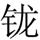
） （17）364。明皇杂录（郑处诲） ⑨144.14；⑩150.10。
明高僧传（如惺） （17）364。
明道杂志（张耒） ⑧217.8。
明僮
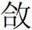
录（余不钓徒） （17）364。明世说新语（李绍文） ⑨71.23；（17）383。
明季南北略（计六奇） ③156.11。
明威化胡经（王浮） ⑨61.6。
明清戏曲史 见《中国近代戏曲史》。
明拓汉隶四种（有正书局） （17）364。
明季稗史汇编（留云居士） ③156.12；⑤619.2。
明治文学展望（木村毅） （17）497。
明清巍科姓氏录（张惟骧） （17）364。
明清二代的平话集（郑振铎） ⑩160.9；（12）323.5。
明清名人尺牍墨宝 （17）364。
明越中三不朽图赞 见《明於越三不朽名贤图赞》。
明代之通俗短篇小说（盐谷温） ⑧213.18；⑩160.9。
明清之际党社运动考（谢国桢） ⑥456.46。
明於越三不朽名贤图赞（张岱） （15）8.1；（17）364。
明弘治本三国志通俗演义 见《三国演义》。
明代士大夫之矫激卑下及其误国的罪恶（本俊） （13）88.3，114.5，132.4。
易 见《易经》。
易林（焦延寿） ⑩98.13；（17）364。
易经 ③140.5；⑤380.3；⑥106.5；⑦270.2；⑨357.4，379.9。
易林注 ③408.8。
易卜生集（潘家洵译） ⑤497.10。
易林释文（丁晏） （17）364。
易卜生主义（胡适） ⑤552.7。
迪艾戈·里维拉画集 （17）562。
典论·论文（曹丕） ③542.17。
忠臣藏（竹田出云等） ⑧213.15。
忠义水浒传 见《水浒传》。
郘亭诗钞（莫友芝） （17）365。
郘亭遗诗（莫友芝） （17）365。
郘亭知见传本书目（莫友芝） ⑩62.20；（17）365。
咏孔雀（阿坡里耐尔） ⑤593.5。
咏燕诗（张） ⑦332.11。
咄咄吟（贝青乔） （17）365。
岩石学 （17）365。
岩波文库 （14）17.3；（17）497。
岩波全书 （17）497。
罗丹（高村光太郎） ⑦208.61。
罗罗（拜伦） ①110.75。
罗生门（芥川龙之介） ⑩252.1；（15）436.1。
罗京管乐（影片） （16）446.6。
罗宫春色（影片） （16）416.10。
罗宫绮梦（影片） （16）482.7。
罗素的话（许广平） （11）506.1。
罗摩衍那（古印度） ①104.8。
罗丹的艺术 ⑦208.60；（17）532。
罗昭谏文集（罗隐） （17）365。
罗鄂州小集（罗愿） （17）365。
罗两峰鬼趣图 见《鬼趣图》。
罗马字短篇小说集（土歧善麿编） ⑩246.22。
罗清桢木刻第二集 见《清桢木刻画》。
罗曼罗兰的真勇主义（中泽临川、生田长江） ⑩467.1。
岭表录异（刘恂） （15）89.2；（17）365。
岭南之春（陈铁耕） （13）169.1。
凯撒传（莎士比亚） ①62.38；⑤602.6；⑥128.2；⑧429.4。
凯亥勒传（瓦洛泰） （17）532。
凯赛琳女皇（影片） （16）447.9。
凯兰德短篇集（前田晁译） （13）470.1。
凯绥·珂勒惠支画帖 （17）547。
凯绥·珂勒惠支画集 （17）376。
凯绥·珂勒惠支作品集 （17）548。
凯绥·珂勒惠支新作集 （17）552。
凯绥·珂勒惠支版画十二枚 （17）547。
凯绥·珂勒惠支版画选集（鲁迅编） ⑥494.1，562.20；⑧447.1；（13）483.2；（14）105.1，121.2，133.1，139.5，147.1，149.2，151.2；（16）589.4，614.2；（17）365。
《凯绥·珂勒惠支版画选集》序目（鲁迅） （14）91.1，97.1；（16）609.1，609.4。
凯绥·珂勒惠支——民众的艺术家（史沫特莱） ⑥636.2；（14）73.4，91.1，97.1。
图版丛刊 见《版画丛刊》。
图画与群众（豪森斯泰因） （17）535。
图画见闻志（郭若虚） （17）366。
图案资料丛书（田边泰） （17）487。
图案美术摄影类聚 （17）522。
《图书评论》所评文学书部分的清算（傅东华） ④567.2。
钓鱼大全（沃尔顿、柯顿） ⑦340.7。
知了世界（鲁迅） （16）465.3。
知识分子（蔡特金） （17）437。
知了和蚂蚁（拉·封丹） ⑤541.5。
知不足斋丛书（鲍庭博） ⑦332.16；（12）130.2；（17）366。
知识阶级的使命（爱罗先珂） ⑧230.3。
牧歌（霍普特曼） （17）545。
牧誓（周武王） ②429.14。
牧羊城（日本东亚考古学会编） （17）497。
牧羊人的生活（赫德森） ⑦209.66。
牧野植物学全集（牧野富太郎） （17）497。
物事（卡达耶夫） （12）328.10。
物种由来（达尔文） ⑤276.4。
物种起源（达尔文） ④227.59；⑤276.3，276.4。
物理新诠 （11）332.25。
物种变化论 （17）366。
物质与悲剧（尼采） （17）497。
和文汉读法（梁启超） ④396.8。
委员会（涅维洛夫） （14）143.1。
岳王传演义（余应鳌） ⑨159.31。
使徒行传 ⑩416.14。
侠女奴 见《阿里巴巴和四十大盗》。
侠盗雷森（影片） （16）185.9。
版画丛刊（鲁迅、郑振铎） （13）22.2，43.1。
版画自修书 见《木刻自修书》。
版画创作法（旭正秀） （17）516。
佩文韵府（张玉书） （14）299.1。
佩德里老人（菲力普） （17）531。
佩文斋书画谱（孙岳颁等） （17）366。
货船（萧军） （13）356.2，549.1。
质园集（商盘） （17）366。
征应集 ⑨15.30。
征东征西全传 ⑨159.36。
爬和撞（鲁迅） （16）395.11。
往星中（安德烈夫） （11）459.6；（15）531.3，593.3；（17）366。
往日的故事（理定） ⑩386.29。
彼得大帝（阿·托尔斯泰） （13）247.5。
彼得第一 见《彼得大帝》。
彼得斐行状 见《彼得斐·山陀尔行状》。
彼得斐·山陀尔行状（德涅尔斯） ⑦219.147；⑧355.7；（11）289.7；（12）193.2。
所谓“思想界先驱者”鲁迅启事 ⑧178.7；（11）218.3，623.3；（15）648.6。
舍斯托夫选集 （17）442。
金史（脱脱等） （17）366。
金刚（影片） （16）481.3。
金表 见《表》。
金匮（吕尚） ⑨183.2，184.6。
金人铭 ⑨358.10。
金文述 见《奇觚室吉金文述》。
金文编（容庚） （17）366。
金石存（吴玉搢） （17）366。
金石志（阮元） ⑧67.7。
金石苑（刘喜海） （17）366。
金石录（赵明诚） （17）367。
金石莂（冯承辉） （17）367。
金石索（冯云鹏、冯云鹓） （13）25.3。
金时针 见《表》。
金瓶梅（兰陵笑笑生） ①427.3；⑥237.8，361.5；⑨193.1，193.4，202.1；⑩160.7；（12）447.1；（13）148.1，149.2；（17）367。
金银岛（影片） （16）524.7。
金楼子（萧绛） ⑨359.18。
金七十论（自在黑） （17）367。
金文丛考（郭沫若） （12）326.2；（17）367。
金文续编（容庚） （17）367。
金石书目（缪荃孙） （17）367。
金石识别（达纳） ⑥331.10。
金石萃编（王昶） ②349.21；⑧67.5；（13）25.2；（17）367。
金石续编（陆耀遹） （17）367。
金光明经 ④537.11。
金刚之子（影片） （16）482.9。
金粉世家（张恨水） （13）103.1；（17）367。
金銮密记（韩偓） ⑩147.17。
金石分域编 （17）367。
金主亮荒淫 见《金虏海陵王荒淫》。
金刚经六译 （17）367。
金刚经鸠异（段成式） ⑧134.6。
金刚经宗通（曾凤仪） （17）367。
金声玉振集（袁褧） （12）191.2。
金瓶梅词话 见《金瓶梅》。
金文馀释之馀（郭沫若） （17）368。
金石萃编补略（王言） （17）368。
金冬心花果册（金农） （17）368。
金石萃编校字记（罗振玉） （17）368。
金刚经、心经略疏（智俨、法藏） （17）368。
金刚经嘉祥义疏（吉藏） （17）368。
金虏海陵王荒淫 ①160.18；（17）369。
金石契附石鼓文释存（张燕昌） （17）368。
金冬心先生诗稿墨迹（金农） （17）368。
金刚般若波罗蜜经论 （17）368。
金刚经智者疏、心经靖迈疏 （17）368。
命命鸟（许地山） （11）394.6。
命运之丘陵（让·吉奥诺） （17）517。
斧背（尚钺） ⑥273.75；（11）255.3。
斧声集（孔另境） （17）368。
受子谱（李汝珍） （17）368。
受古堂书目 （17）368。
朋友（鲁迅） （16）447.13。
朋友（铃木金二） （17）467。
肥皂（鲁迅） （15）506.5。
肥料（谢芙琳娜） ⑩399.16，415.6，424.1；（12）281.17；（16）267.1。
周书 ⑨18.46，367.5；（17）369。
周礼 ⑥107.13；⑨367.1。
周考 ⑨13.11。
周志 ⑨27.11。
周南 ⑨372.38。
周汉遗宝（东京帝室博物馆） （17）498。
周易要义（魏了翁） （17）369。
周金文存（邹安） （11）390.5，390.6；（17）369。
周秦行纪（韦瓘） ⑨101.2；⑩132.13，132.17。
周秦行纪论（李德裕） ⑨101.3。
周作人散文钞（章锡琛编） （17）369。
周贺诗集、李丞相诗集（周贺、李建勋） （17）369。
鱼的悲哀（爱罗先珂） ⑩224.1；（14）67.3；（15）449.1。
兔和猫（鲁迅） （16）641.10。
匋斋藏瘗鹤铭两种合册（端方） （17）369。
备急灸方附针灸择日编集（孙炬卿） （17）369。
忽然想到（一）（鲁迅） （15）550.5。
忽然想到（四）（鲁迅） （15）554.7。
忽然想到（五）（鲁迅） （15）563.4。
忽然想到（十）（鲁迅） （15）571.6。
《忽然想到（一）》附记（鲁迅） ③19.1。
狗、猫、鼠（鲁迅） （15）611.5。
狗的驳诘（鲁迅） （15）563.8。
京本大曲 ⑨83.23；⑩119.37。
京尘杂录（杨懋建） （11）430.14，432.6。
“京派”与“海派”（鲁迅） ⑥315.3；（16）436.1。
京畿金石考（孙星衍） （17）369。
京本通俗小说 ①160.17；④284.11；⑧214.20；⑨123.9；（17）369。
夜哭（焦菊隐） （11）112.4。
夜颂（鲁迅） （12）403.1；（16）385.3。
夜宴（李长之） （17）370。
夜谈（曹白） （14）160.1。
夜哨线（叶紫） （13）236.3。
夜读抄（二）（周作人） （12）109.1，138.1。
夜明前之歌 见《天明前之歌》。
郊祀歌十九章 ⑨426.7。
庚子日记（高楷） （17）370。
庚辛壬癸录（吴应箕） （17）370。
庚子国变弹词（李宝嘉） ⑨302.2。
放浪者伊利沙辟台（巴罗哈） ⑩428.1。
於越三不朽图 见《明於越三不朽名贤图赞》。
於越先贤象传（任熊） （17）370。
於越先贤象传赞（王龄） （17）370。
於越先贤祠目序例 见《越中先贤词目序例》。
盲女（严森） ⑦221.168。
盲诗人最近的踪迹（中根弘） ⑩221.5，485.1。
性与性格（华宁该尔） （17）498。
性之初现 （17）370。
怕妻趣史（影片） （16）49.4。
怡兰堂丛书（唐鸿学） （17）370。
炉边（陈炜谟） ⑥269.43；（17）370。
郑守愚文集（郑谷） （17）370。
郑季宣残碑 ⑧80.1。
郑堂读书记（周中孚） ⑩146.11。
郑厂所藏封泥（潘祖荫） （17）370。
卷葹（冯沅君） ⑥270.46；（11）218.5，594.2；（15）643.4；（17）370。
卷发的掠夺（蒲柏） ⑦359.12。
单刀赴会 ④346.3。
净土十要（智旭） （11）416.1；（17）370。
净土经论十四种 （17）370。
浅草通信（岛崎藤村） （17）503。
法华 见《妙法莲华经》。
法言（扬雄） ⑨368.12；（17）331。
法官（杜米埃） ⑥531.25。
法书考（盛熙明） （17）371。
法句经（法救） （17）371。
法显传（法显） （15）222.1；（17）371。
法斯忒 见《浮士德》。
法苑珠林（道世） （17）371。
法国文评（道登） ⑦216.125。
法国诗选（山内义雄） （17）470。
法海观澜（智旭） （17）371。
法布耳全集 （17）563。
法网与情网（影片） （16）259.8。
法会和歌剧（鲁迅） （16）453.8。
《法网》木刻插图（陈铁耕） （13）175.1。
法国文学故事（辰野隆） （17）469。
法国的浪漫派（勃兰兑斯） （12）528.14。
法国新作家集（拉克雷泰勒等） （17）470。
法兑耶夫底自传（亦还译） ⑩370.10。
法国书籍新插图（比雄） （17）553。
法国文学史序说（伯吕纳吉埃尔） （17）470。
法国文学的反动（勃兰兑斯） （12）528.14。
法界无差别论疏（法藏） （17）371。
法兰西斯柯·德·戈雅 （17）542。
法西斯德意志之访问（素琴译） ⑦426.9。
法兑耶夫底小说《溃灭》（藏原惟人） ⑩370.11，373.2。
法国精神史的一个侧面（后藤末雄） （17）469。
法国通讯——关于文艺界的反法西斯蒂运动》（戴望舒） ④550.2。
河童（芥川龙之介） （17）371。
河东记（薛渔思） ⑨101.4。
河朔访古新录（顾燮光） （17）371。
河南卢氏曹先生教泽碑文（鲁迅） （13）259.1，471.4；（16）489.16。
学堂歌（张之洞） ①105.20；⑧95.4。
学艺论抄（阿部次郎） （17）498。
学堂日记（梁溪晦斋氏辑） （17）371。
学算笔谈（华蘅芳） ⑤344.5。
学诂斋文集（薛寿） （17）371。
学界的三魂（鲁迅） （15）607.11。
学匪与学阀（姜华） ③224.2。
《学界的三魂》附记（鲁迅） ③223.1；（15）607.11。
学界新思想之潮流（鲁逊） （11）376.2。
泥沙杂拾（徐诗荃） （13）79.2；（16）447.8。
波兰文观 见《近代波兰文学概观》。
波兰姑娘（左琴科） ⑩505.2；（12）280.15。
波斯勋章（契诃夫） ⑩446.2；（16）525.12。
波兰美术 （17）557。
波兰说苑 （17）372。
波罗洲之野女（影片） （16）405.8。
波德莱尔研究（辰野隆） （17）451。
波兰民间故事十则（斯特洛夫斯卡） （17）560。
波罗及诺之一周年（普希金） ①114.120。
波斯勋章及别的奇闻（契诃夫） ⑩451.5；（17）555。
泾林续记（周玄暐） （17）372。
宝藏论（僧肇） （17）372。
宝纶堂集（陈洪绶） （17）372。
宜禄堂金石记（朱士端） （17）372。
空座位的旅客（尼克索） （17）555。
实学文导（傅云龙） （17）372。
实用口语法（保科孝一） （17）498。
实验教育法导论（莫伊曼） ⑩460.3。
诗学（亚里士多德） ⑦251.12；（17）518。
诗经 ②34.3；④198.16；⑥111.34；⑦140.4；⑧244.7；⑩16.11，297.7。
诗逆（凌濛初） ⑨213.7。
诗说（吴敬梓） ⑨234.2。
诗筏（吴大受） （17）372。
诗缉（严粲） （17）372。
诗韵 ⑥459.8。
诗谱（郑玄） ⑨357.2。
诗本义（欧阳修） （17）372。
诗外传（韩婴） ①161.24；（17）417。
诗画舫 ②257.12。
诗人之死（莱蒙托夫） ①115.127。
诗与体验（伏尔泰） （17）518。
诗与版画（赖少麒） （13）353.2。
诗与诗论（冈本正一等） （17）518。
诗余画谱（汪氏编） （12）489.7。
诗和预言（鲁迅） （12）423.1；（16）391.15。
诗的起源（竹友藻风） （17）518。
诗学概论（外山卯三郎） （17）518。
诗魂礼赞（生田春月） （17）518。
诗韵合璧（汤文潞） ①401.12。
诗歌之敌（春日一郎） ⑦250.5；（15）550.2。
诗歌全集（维尼） （17）556。
诗人的餐巾（阿坡里耐尔等） （17）518。
诗人挖目记（影片） （16）6.17。
诗经世本古义（何楷） （17）372。
诗的形态学序说（外山卯三郎） （17）518。
房中乐 ⑨397.8，401.7。
房山云居寺研究（日本东方文化学院京都研究所） （17）498。
话匣子（茅盾） （17）373。
诡辩之研究（荒木良造） （17）518。
该隐（拜伦） ①109.62。
建塔者（台静农） ⑥72.14，274.84；（17）373。
建中实录（沈既济） ⑨82.14；⑩99.20。
建安七子集（杨逢辰） （17）373。
建议撤销广告 ④180.23。
建设的文学革命论（胡适） ④16.7。
建设时期的苏联文学（奥尔巴赫） （17）504。
录崔立碑事（刘祁） ⑥35.5。
录鬼簿新校注（马廉） ⑩160.9。
隶续（洪适） ⑧80.3；（17）373。
隶释（洪适） ⑧85.19；（17）373。
隶韵（刘球） ⑧85.20；（17）373。
隶释刊误（黄丕烈） （17）373。
居士传（彭际清） ⑥303.6；（17）373。
刷浆糊与拍马屁（王志之） （12）534.1，535.1。
屈原赋注（戴震） （17）373。
屈原贾生列传（司马迁） ⑥433.4。
屈子离骚汇订、杂文笺略（王邦采） （17）373。
弥勒菩萨三经 （17）373。
弥耳敦失乐园画集（陀莱） （17）454。
弦索西厢 见《西厢记诸宫调》。
陕西碑林目录（孙德俦） （17）373。
迦茵小传（哈葛德） ④312.13；⑧458.3。
迦丁比丘说当来变经 （17）374。
参加伦敦中国艺术国际展览会出品图说 （17）374。
孟子 ②34.4；⑤375.9；（17）374。
练囊记（吴长孺、张仲豫） ⑩105.9。
绀珠集 （17）374。
绅士的朋友（契诃夫） （11）427.2。
细胞学概论（山羽仪兵） （17）513。
织工（霍普德曼） ④462.11；⑥495.9。
织工一揆（凯绥·珂勒惠支） ④462.11；⑥495.8；（14）52.4。
织工暴动 见《织工一揆》。
织工暴动、农民战争、战争（凯绥·珂勒惠支） （17）540。
孤雁（王以仁） （17）374。
终生大事（胡适） ④313.19；⑦207.51。
终条山的传说（李健吾） ⑥271.54。
绍兴府志（平恕） ⑧66.4。
绍介《海上述林》上卷（鲁迅） （14）165.1；（16）627.5。
绍县小学成绩展览会报告 （17）374。
经籍志（焦竑） ⑩60.9。
经训读本（广东教育厅） ⑥281.4；（17）375。
经典集林（洪颐煊） （17）375。
经典释文（陆德明） （17）375。
经训堂书目 （17）375。
经训堂丛书（毕沅） （17）375。
经籍访古志（森立之等） （11）533.2，536.1。
经典释文考证（卢文弨） （17）375。
经籍旧音辨证（吴承仕） （17）375。
经律异相因果录 （17）375。
函青阁金石记（杨铎） （17）375。
函夏考文苑议（马良） （17）375。
九画
契诃夫像（保夫理诺夫） （14）72.3。
契诃夫小说 （17）375。
契诃夫全集（中村白叶） ⑩452.8；（17）445。
契诃夫纪念（司基塔列慈） ⑩446.3。
契诃夫书简集 （17）445。
契诃夫杰作集 （17）445。
契诃夫的笔记 （17）445。
契诃夫与新文艺（罗加契夫斯基） ⑦220.154。
契诃夫死后二十五年纪念册 （17）565。
契诃夫《三姊妹》在莫斯科艺术剧院演出剧照（艾弗罗斯） （17）571。
贰臣传 ⑥652.5。
贰臣汉奸的丑史和恶果（高越天） ⑥651.3。
春水（冰心） （17）375。
春秋 ①113.106，428.12；④55.4；⑤63.8；⑧164.4；⑨379.9。
春蚕（茅盾） ⑤311.5；（14）310.8；（17）375。
春痕（冯沅君） ⑥270.48。
春潮（屠格涅夫） ⑤311.4。
春牛图 （13）348.1；（16）519.1。
春夜的梦（爱罗先珂） ⑩223.1；（15）447.3。
春秋文库（东京春秋社） （12）528.9。
春秋正义（孔颖达等） （17）376。
春秋复始（崔适） （17）376。
春在堂随笔（俞樾） ⑧68.12。
春郊小景集（李桦） （13）304.2，328.1；（17）376。
春秋公羊传（公羊高） ②218.3；⑧164.4；（14）323.2。
春秋左氏传（左丘明） ②309.14；④27.19；⑨405.4，439.20；（14）323.2。
春秋谷梁传（谷梁赤） ⑧164.4。
春秋胡氏传（胡安国） （17）376。
春晖堂丛书（徐渭仁） （17）376。
春秋左传类编（吕祖谦） （17）376。
春秋左传杜注补辑（姚培谦） （17）376。
春秋座二月上演剧目版画——威廉·退尔（稻垣知雄） （17）499。
奏弹王源（沈约） ⑥355.5。
帮闲法发隐（鲁迅） （16）396.15。
帮忙文学与帮闲文学（鲁迅） （13）298.1，371.2。
珂尔强（斯洛伐茨基） ①118.162。
珂勒惠支画集 见《凯绥·珂勒惠支画集》。
珂勒惠支新作集 见《凯绥·珂
勒惠支新作集》。
珍珠岛（影片） （16）530.5。
封神榜 见《封神演义》。
封禅方说 ⑨13.16，429.22。
封神演义（许仲琳） ①256.7；②308.9；③267.7；⑦149.3；⑧212.12。
项链（莫泊桑） ⑩260.13。
项羽与刘邦（长与善郎） （17）513。
城与年（费定） ⑩386.24；（12）514.2；（13）148.2，376.1，388.3；（14）46.1，137.6。
城市之光（影片） （16）298.1。
《城与年》插图（亚历克舍夫） ⑦444.1；（13）148.3，471.5，376.1。
《城与年》概要（曹靖华） （14）53.3；（17）376。
政语 ⑨358.12。
政治画集（台尼） （17）569。
政治委员（里培进斯基） （17）441。
赵飞燕外传（伶玄） ④462.10；⑨43.16；⑩155.12。
赵飞燕别传（秦醇） ⑨16.37，113.19，131.2；⑩119.41，155.8。
赵先生底烦恼（许钦文） （17）376。
赵似升长生册（赵凤） （17）376。
垓下歌（项羽） ⑨400.4。
某氏集 见《鲁迅选集》（佐藤）。
某刊物（酉生） ⑥316.6；⑧430.2。
某笔两篇（鲁迅） （16）39.11。
某市的历史 见《一个城市的历史》。
“某”字的第四义（鲁迅） （16）529.1。
荆生（林纾） ①199.23；④115.17；⑤266.9。
荆棘（黄鹏基） ⑥273.73；（11）185.1。
荆南萃古编（周懋琦、刘瀚） （17）376。
荆冠上的亲吻（司徒乔） ④74.5。
革命军（邹容） ①241.14；④132.4；⑥568.5。
革“首领”（鲁迅） （16）38.5。
革命文学论（丁丁） ④124.3。
革命的女儿（里德） （17）499。
革命的故事（阿尔志跋绥夫） ⑩186.20；（13）30.6，30.7。
革命的英雄们（富曼诺夫） ⑩418.36，419.37；（12）283.8；（16）312.5。
革命艺术大系（尾濑敬止） （17）499。
革命的前一幕（陈铨） （17）377。
革命神的受难（白薇） ④179.17。
革命家的手记 见《一个活动家的回忆录》。
革命文豪高尔基（邹韬奋） ⑤318.5；（12）395.3，435.4；（17）377。
革命时代的文学（鲁迅） ⑧199.3。
革命俄国的艺术（尾濑敬止） （17）499。
革命后之俄国文学（昇曙梦） （17）499。
革命时代的夏里宾（施蛰存） （12）530.2。
革命露西亚的艺术（尾濑敬止） ⑩333.3。
革命文学与遵命文学（鲁迅讲演记录稿） （13）298.1。
革命时期的演剧与舞蹈 见《新俄的演剧和跳舞》。
《革命的中国之新艺术》木刻参展目录（鲁迅） （16）432.10。
茜窗小品 （17）377。
带羽毛的帽子（聂维洛夫） （14）143.1。
草叶集（惠特曼） （13）459.3；（17）499。
草隶存（邹安） （17）377。
草鞋脚（鲁迅、茅盾编） ⑥21.1；（13）212.2；（14）310.2，319.6。
草木春秋（江洪） （12）229.3。
草莽私乘（陶宗仪） （17）377。
草堂诗余（凤林书院辑） （17）377。
《草鞋脚》小引（鲁迅） （14）319.2。
《草鞋脚》引言（伊罗生） （14）319.3。
草之叶——关于惠特曼的考察（有岛武郎） ⑦208.56。
茶经（陆羽） ⑨16.34。
茶花女（小说）（小仲马） （17）377。
茶花女（剧本）（小仲马） （17）377。
茶余客话（阮葵生） ⑨174.7；（11）429.6。
茶座琐语（卢前） （13）101.6。
茶香室丛钞（俞樾） ③354.5；⑧212.10。
荀子（荀况） ⑨391.15；（17）377。
荀悦前汉记袁宏后汉纪合刻 （17）377。
茗斋集（彭孙贻） ⑥202.36；（13）318.2；（17）377。
荒漠（阿姆斯特朗） （17）538。
荒岛历险记（影片） （16）530.13。
茫茫夜（蒲风） （17）377。
荡寇志（俞万春） ②285.26；⑨157.19。
故乡（鲁迅） （15）425.3。
故乡（许钦文） ⑥271.56；（11）445.2；（15）589.1；（17）377。
故宇妖风（影片） （16）275.8。
故事新编（鲁迅） （13）606.1；（14）57.6；（17）378。
《故乡》译后记（佐藤春夫） （14）193.5。
《故乡》封面画（陶元庆） （15）585.12。
《故事新编》读后感（徐懋庸） （14）37.1。
胡宝玉（吴沃尧） ⑨303.13。
胡适文选 （13）130.1；（17）378。
胡里奥·胡列尼托和他的学生的奇遇（爱伦堡） （17）499，561。
南风 ⑨370.23。
南史（李延寿） （17）378。
南行（徐懋庸） （12）466.2。
南山里（日本东亚考古学会） （17）500。
南行记（艾芜） （17）378。
南齐书（萧子显） ⑧84.11；（17）378。
南柯记（汤显祖） ⑩116.17。
南唐书（马令） （17）378。
南西厢记（崔时佩、李日华） ⑨92.10；⑩131.7。
南西厢记（陆采） ⑨92.11；⑩131.8。
南极探险（影片） （16）275.3。
南美风月（影片） （16）558.1。
南浔镇志（汪曰桢） （17）378。
南烬纪闻 ⑨132.7。
南海百咏（方信孺） （17）378。
南菁札记（溥良） （17）378。
南蛮广记（新村出） （17）500。
南湖四美（吴观岱） （17）378。
南雷余集（黄宗羲） （17）378。
南方异物志（房千里） ⑩137.55。
南华玩具集（现代创作版画研究会） （17）378。
南村辍耕录（陶宗仪） ⑩115.6。
南宋院画录（厉鹗） （17）378。
南欧的天空（吉江乔松） （17）500。
南柯太守传（李公佐） ⑥339.17；⑨91.2；⑩116.15。
南陵无双谱 见《无双谱》。
南腔北调集（鲁迅） （13）57.1，60.1，151.1，388.2；（16）442.10；（17）379。
南北两宋志传（陈继儒） ⑨158.25。
南阳汉画像集（关葆谦辑） （13）583.3；（17）379。
南阳会海对类（吴望辑） （17）379。
南宋六十家集（陈起） （17）379。
南宋群贤小集（陈起、顾修） （17）379。
南通方言疏证（孙锦标） （17）379。
南菁书院丛书（王先谦、缪荃孙） （17）379。
南阳汉画像访拓记（孙文青） （13）583.1；（17）379。
南北朝的社会经济制度（冈畸文夫） （17）500。
南薰殿图像考、国朝院画录、西清札记（合刻）（胡敬） （17）379。
药（鲁迅） （11）376.1；（15）367.2。
药谱（侯宁极） ⑧134.7。
药用植物（刈米达夫） （13）547.2；（16）218.4；（17）379。
药用植物及其他 见《药用植物》。
标注训译水浒传（平冈龙城译） （17）526。
枯树（庾信） ⑥453.20。
枯煤，人们和耐火砖（潘菲洛夫等） ⑩420.51；（16）328.3。
柯罗连科（高尔基） （13）377.2。
柯洛连科 回忆录的一章（高尔基） （13）247.2。
相人 ③434.3。
查旧帐（鲁迅） （16）391.17。
查理·梅里昂（艾锷风） （17）536。
查拉图司屈拉钞 见《扎拉图斯特拉如是说》。
柚子（王鲁彦） ⑥271.58，272.61。
柚堂续笔谈（盛百二） ⑨203.5。
柏梁台诗 ⑨429.24。
柏拉图的斐多篇（柏拉图） （17）556。
柳赋（枚乘） ⑨416.13。
柳氏传（许尧佐） ⑩104.6。
柳毅传（李朝威） ⑨91.2；⑩105.11。
柳毅传书（尚仲贤） ⑨93.20；⑩105.13。
柳濑正梦画集 （17）500。
柳无忌来信按语（鲁迅） （16）185.11。
栎园书影（周亮工） ⑤52.3。
树蕙编（方时轩） （17）380。
勃兰特（易卜生） ⑥71.10；（17）449。
勃洛克论（托洛茨基） ⑧488.2。
勃鲁斯基 见《磨刀石农庄》。
柬天行（刘半农） （13）74.2。
咸池 ⑨370.22。
威塞克思（哈代） ⑦93.8。
威廉·蒲雪新画帖 （17）553。
厘捐局（宫竹心） （11）412.1，419.1。
面包（凯绥·珂勒惠支） ⑥497.31。
面影 见《面影，我的素描》。
面包线（张天翼） （12）365.4。
面包店时代（巴罗哈） ⑩495.1。
面城精舍杂文（罗振玉） （17）380。
面影，我的素描（林芙美子） （14）283.3；（17）500。
研求（卢那察尔斯基） ⑩333.5。
研几小录（内藤虎次郎） （17）500。
牵三歌谶（王嘉） ⑨61.7。
残唐五代史演义（罗贯中） ⑨144.15。
拷问与虐杀（远藤友四郎） （17）500。
轻薄桃花（胡今虚） （12）456.2。
轻微的欷歔（蒲宁） （11）533.2。
挺好（辰野隆） （17）438。
括异志（张师正） ⑨112.7；（17）380。
拾遗记（王嘉） （17）380。
拾零集（鲁迅） ⑥480.11；（13）226.2，321.3，342.2。
指南录（文天祥） （13）106.6。
按察使 见《钦差大臣》。
挥麈录（王明清） （17）380。
背景（格罗斯） （17）545。
战后（雷马克） ④478.20；（17）380。
战争（雷恩） ④364.11。
战争（凯绥·珂勒惠支） ⑥495.13。
战争（铁霍诺夫） （17）380。
战国策 ⑨439.20。
战地英雄（影片） （16）594.8。
战争故事（萨多维亚努） ⑩520.5。
战时日记（罗曼·罗兰） ⑥430.4。
战略关系（鲁迅） （16）363.6。
战士和苍蝇（鲁迅） （15）558.4。
战地莺花录（影片） （16）72.1。
战争与和平（列夫·托尔斯泰） ④478.16；⑤276.6，593.4；⑦122.8；（13）277.2。
战争版画集（料治朝鸣等） ⑤608.4。
战斗的唯物论（普列汉诺夫） （17）523。
战争中的威尔珂（伐佐夫） ⑦221.170；⑩199.1，522.2；（11）406.17，409.8；（15）441.2。
点滴（周作人译） ⑥267.23。
点句的难（鲁迅） （16）481.2。
点石斋丛画（尊闻阁主人） ②257.12。
虐杀（鲁迅） （13）119.4。
竖琴（鲁迅编译） ④446.1；（12）333.1，340.3，370.2；（13）52.1，206.2，288.1；（16）332.1；（17）380。
竖琴（理定） ⑦130.8；⑩392.1；（12）280.14。
《竖琴》前记（鲁迅） （13）288.2，468.1；（14）34.2。
临床医学与辩证唯物论（利夫席茨） （17）527。
临灞池远诀赋（枚乘） ⑨416.15。
省心杂言（李邦献） ⑨17.41。
尝试集（胡适） ①569.10；（11）389.1。
是爱情还是苦痛（罗家伦） ⑥266.12；⑦237.5；（13）354.3。
显扬圣教论（无著） （17）380。
显感利冥录 ①320.12。
显微镜下的奇观（仲摩照久） （17）500。
星（叶紫） （13）554.2，610.4。
星花（拉甫列涅夫） （12）259.2，328.2；（13）550.1；（16）324.1；（17）380。
星座神话（野尻抱影） （17）500。
星槎胜览（费信） （17）380。
昨夜（顾仲雍） （17）380。
昨日之歌（冯至） （17）380。
昭明文选（萧统编） ⑥320.2。
昭明太子集（萧统） ⑦142.16；（17）381。
昭明太子文集 见《昭明太子集》。
昭德先生郡斋读书志 见《郡斋读书志》。
毘陵集（独孤及） （17）381。
贵耳集（张端仪） ⑩157.26。
贵家妇女（左琴科） ⑩504.1。
贵池二妙集（吴应箕、吴城） （17）381。
虹（华兹华斯） （14）68.2。
虹儿画谱（蕗谷虹儿） （17）500。
思旧赋（向秀） ④504.19。
思想者（罗丹） ⑧493.2。
思适斋集（顾广圻） （17）381。
思亲诗一首（嵇康） ⑩83.11。
思索与随想（山内义雄） （17）501。
思想·山水·人物（鹤见祐辅） ⑩301.1，302.8；（12）118.2；（16）76.4；（17）381，501。
思益梵天所问经 （17）381。
品花宝鉴（陈森） ⑨275.5；（11）430.14。
骂人与自骂（周木斋） ④489.2。
骂杀与捧杀（鲁迅） （16）488.13。
哈蒲（伊凡诺夫） ⑩399.14。
哈孟雷特（莎士比亚） ⑥129.6。
哈泽·穆拉特（列夫·托尔斯泰） ②230.6。
哈洛尔特游草（拜伦） ①109.74。
哈姆雷特和堂吉诃德（屠格涅夫） ⑦202.3。
咬文嚼字（鲁迅） ③11.1。
咬文嚼字（二）（鲁迅） （15）554.2。
炭画（显克微支） ⑩518.9；（11）112.4，421.4；（15）81.1，104.4，123.5；（17）381。
炭矿夫（龚冰庐） （14）310.4。
幽明录（刘义庆） ⑦141.9；⑨15.29，54.18。
幽怪录（牛僧孺） ⑧134.9。
幽愤诗一首（嵇康） ⑩83.7。
幽僻的陈庄（
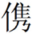
闻） （17）381。幽默和讽刺（吴组缃） （14）354.1。
幽默年大事记（王志之） （12）534.1，535.1。
钟馗捉鬼传（阳直樵云山人） ⑨234.1。
钦差大臣（果戈理） ①385.3；④91.2；⑥153.5。
钦定四库全书 见《四库全书》。
钦定元承华事略补图（王恽、徐郙等） （17）381。
拜伦（尼科尔） （17）448。
拜伦像（克拉甫兼珂） （14）72.3。
拜伦画像（菲力普斯） ①239.3。
拜金艺术（辛克莱） ③580.10；（17）495。
拜经楼丛书（吴骞） （17）382。
拜轮时代之英文学 见《英国文学——拜伦时代》。
拜经楼藏书题跋记（吴寿旸） （17）382。
看云集（周作人） （17）382。
看书琐记（鲁迅） （16）470.6。
看书琐记（二）（鲁迅） （16）470.6。
看图识字（鲁迅） （13）43.3，107.15，122.2，129.1；（16）454.19。
看变戏法（鲁迅） （16）405.1。
看司徒乔君的画（鲁迅） （16）75.2。
看萧和“看萧的人们”记（鲁迅） （16）364.15。
看了魏建功君的《不敢盲从》以后的几句声明（鲁迅） （15）459.3。
怎么写（夜记之一）（鲁迅） ④279.12；（12）73.2；（16）39.12。
怎样地建设革命文学（李初梨） ④69.12。
选本（鲁迅） （12）470.5，489.10；（13）12.8，98.3；（16）410.9，493.3。
选佛谱（智旭） （17）382。
选适园丛书 （17）382。
香谱（陈敬） （17）382。
香奁集（韩偓） ⑩147.17。
香东漫笔（况周颐） （17）382。
香祖笔记（王士祯） ①162.30；⑨213.11。
种树集（章衣萍） （17）382。
种树郭橐驼传（柳宗元） ⑨81.4。
秋收（茅盾） （14）310.8。
秋风辞（刘彻） ⑨401.8。
秋明集（沈尹默） （17）382。
秋河赋（蒋防） ⑩106.21。
秋夜纪游（鲁迅） （16）395.10。
秋夜偶成（鲁迅） （16）476.15。
秋胡小说 ⑨122.1。
秋思草堂遗集（陆莘行） （17）382。
秋浦双忠录（刘世珩） （17）382。
秋波小影册子（舒位） （17）382。
科学权威（影片） （16）488.7。
科学随想（西村真琴） （17）501。
科克多诗抄（科克多） （17）441。
科学方法论（王星拱） （17）382。
科学的诗人（卢格洛） （17）501。
科克多艺术论（科克多） （17）441。
科学画报丛书（日本科学画报社） （17）501。
科学的艺术论丛书（冯雪峰、鲁迅编译） ④274.31；⑩474.5；（13）596.2。
科波司乔治回忆记 见《乔治下士的回忆》。
科米萨尔热芙斯卡雅纪念册 （17）565。
重三感旧（鲁迅） ⑤381.4；（16）405.1。
重刊宋本孔丛子（孔鲋） （17）383。
重订谢承《后汉书》补逸（孙志祖） ⑩8.10。
重作六言诗十首代秋胡歌诗七首（嵇康） ⑩83.10。
复仇（鲁迅） ②177.1。
复仇（其二）（鲁迅） ②179.1。
复古编（张有） （17）383。
复仇艳遇（影片） （14）166.2；（16）628.6。
复堂日记（谭献） （17）383。
复魏猛克（鲁迅） （16）385.2。
复夺受禅台 ⑨142.2。
复吴敬恒书（章炳麟） ⑥580.8。
顺天府志 （17）383。
顺宗实录（韩愈等） ⑦332.8。
修多罗藏 ⑦104.6。
俏皮的精神分析（弗洛伊德） （17）503。
俚谣（汤朝竹山人） （17）501。
保留（鲁迅） （12）400.4；（16）380.17。
保罗·儒弗传（莫克莱尔） （17）532。
保守文言的第三道策（陈望道） ⑥376.3。
促狭鬼莱哥羌台奇（巴罗哈） ⑩434.1；（13）424.1，489.2；（16）494.10。
俄国今昔（狄龙） （17）558。
俄国三人集（契诃夫、果戈理、高尔基） （17）529。
俄国文学史（山内封介） （17）456。
俄国戏曲集（共学社编译） ④477.9。
俄国社会史（勃克洛夫斯基） （17）456。
俄国之谗谤者（普希金） ①114.120。
俄国文学史略（郑振铎） （17）383。
俄国文学画苑 （13）357.2；（17）535。
俄国文学研究（小说月报社） ④477.10。
俄国文学研究（片上伸） ⑩317.2；（17）529。
俄国文学思潮（米川正夫） （17）457。
俄国文学家像（魏烈斯基） （12）315.4，351.7；（17）570。
俄国的新艺术（乌曼斯基） ④441.4；（17）552。
俄国革命电影（卢那察尔斯基） （17）457。
俄罗斯的童话（高尔基） ⑧516.1；⑩442.1，443.2；（13）273.2，463.1，518.3，577.5；（16）475.6，476.8；（17）383。
“俄罗斯的童话”（海洛） （13）569.1。
俄国文学史梗概 见《最近俄国文学史略》。
俄罗斯名著二集（李秉之译） （13）383.1。
俄国革命后的文学（马克西莫夫） （17）528。
《俄罗斯的童话》小引（鲁迅） （16）549.5。
俄国社会运动史话（巴金） （17）383。
俄国革命的预言者（梅列日科夫斯基） （17）528。
俄国现代文豪杰作集（昇曙梦译） （17）529。
俄国短篇小说杰作集（格拉汉编译） ⑩384.10；（17）544。
俄国共产党的文艺政策 （外村史郎、藏原惟人辑译） （17）528。
俄语基本单词四千字（小野俊一） （17）529。
俄国现代的思潮及文学（昇曙梦） （17）528。
俄国社会民主劳动党党史（季诺维也夫） （17）457。
俄罗斯文学的理想与现实（克鲁泡特金） （17）528。
俄文译本《阿Q正传》序及著者自序（鲁迅） （15）571.7。
俗说（沈约） ⑨70.7。
俗谚论 （17）383。
信（金淑姿） ⑦136.1；（12）331.2；（17）412。
信摭（章学诚） （17）383。
信州杂记（毕勒涅克） ⑩491.1。
皇览（刘劭、王象） ⑩30.6。
皇汉医学（汤本求真） ④144.3。
“皇汉医学”（鲁迅） （12）208.1。
皇后私奔记（影片） （16）125.1。
皇明英烈传 ⑨159.28。
皇帝的新衣（安徒生） ⑤512.4。
皇明世说新语 见《明世说新语》。
鬼沼 见《魔沼》。
鬼董 ⑨124.10。
鬼红楼 ⑨249.17。
鬼谷子 ③116.19。
鬼趣图（罗聘） ④635.2；⑥243.5；（17）365。
鬼神列传（谢氏） ⑨15.29。
鬼怪奇觚图（米歇尔） （17）560。
禹贡 ⑨368.10。
侯鲭录（赵令畤） ⑩131.4。
俟堂专文杂集（鲁迅） ⑩68.1；（15）531.4。
待诏臣饶心术 见《心术》。
待诏臣安成未央术 ⑨13.16。
须发爪（江绍原） （12）115.1。
弇州史料（董复表） ⑥198.10。
剑侠传 ⑧135.14；⑨112.5。
剑南诗稿 见《陆放翁全集》。
剑侠狄伯卢（影片） （16）604.11。
食肉者言（马成章） ⑤246.2。
食人人种的话（腓立普） ⑩506.1，507.3。
食疗本草的考察（中屋万三） （17）501。
胜鬘经宋唐二译 （17）383。
脉经（王叔和） （17）383。
脉望馆书目（赵琦美） ⑩63.30。
狭的笼（爱罗先珂） ⑧156.2；⑩218.1，219.7；（11）423.3；（15）444.6。
独白（《戏》编者） ⑥155.2。
独立丛刊（韦丛芜拟编） （12）155.4。
独秀文存（陈独秀） ⑥454.33；（12）71.7。
狱中记（王尔德） ⑥429.3。
狱中记（柏克曼） （17）384。
狱中赠邹容（章炳麟） ⑥568.7。
狱中闻沈禹希见杀（章炳麟） ⑥568.7。
訄书（章炳麟） ⑥200.21，568.3。
逃犯（谢芙琳娜） （17）533。
逃名（鲁迅） （16）549.10。
逃的辩护（鲁迅） （16）358.14。
急就章 见《急就篇》。
急就篇（史游） ⑤272.7；（17）384。
急就章草法考（李滨） （17）384。
哀史 见《悲惨世界》。
哀尘（雨果） ⑩481.1，481.2。
哀歌（耶利米） ①104.11。
哀范君三章（鲁迅） ②331.25；（13）294.1。
亭乃特之腿（菲力普） （17）534。
疯人（柔石） ④287.3。
疯姑娘（明娜·康特） ⑩196.1；（11）406.17，409.8；（15）441.2。
疯狂心理（哈忒） （17）384。
疯子的自白（斯特林堡） （17）520。
施公案 ④161.11；⑨290.13。
“音乐”？（鲁迅） ③253.28；（13）114.1。
音鉴（李汝珍） ⑨263.14。
帝国主义列强在华之活动及其经济势力（原胜） （17）463。
帝国剧院二月上演剧目版画——希拉诺之部（栋方志功） （17）442。
恒农冢墓遗文（罗振玉） （17）384。
恰巴耶夫（富曼诺夫） （14）145.3；（17）484。
恨海（吴沃尧） ⑨303.13。
恨赋（江淹） （11）346.3。
闺范（吕坤） （17）384。
闺情（蔼夫达利阿谛思） （15）131.5。
闾邱辨囿（顾嗣立） ③357.25。
炼狱（但丁） ⑩454.3。
炼狱（周楞伽） （17）384。
炸弹（内田鲁庵） （17）449。
炸弹和征鸟（白薇） ⑦215.119。
差两个铜元（宫莳荷） （11）412.2，419.2。
养生论（嵇康） ⑩84.21。
养鸡学 （17）384。
养鸡全书 （17）384。
美学（阿部次郎） （17）503。
美人心（影片） （16）524.6。
美人恩（张恨水） （13）103.1；（17）384。
美人赋（司马相如） ⑨438.13。
美术论（福氏） （17）384。
美代子（佐藤春夫） （14）271.4；（17）518。
美术大观 见《苏俄美术大观》。
美术史要（格劳尔） （17）540。
美术丛书（岩波书店） （17）503。
美术全集 见《世界美术全集》。
美术别集 见《世界美术全集》。
美术概论（森口多里） （17）503。
美国文学（高垣松雄） （17）436。
美学原论（丘尔佩） （17）503。
美术史潮论 见《近代美术史潮论》。
美术的探求（大类伸） （17）502。
美术百科全书（佐藤义亮） （17）503。
美学教育问题（格鲁斯） ⑩460.3。
美术与国民教育（复氏） （17）385。
美学及文学史论（梅林） ⑩474.4；（17）502。
美术史的根本问题（板垣鹰穗） （17）503。
美国人目中的中国（姚克） （12）496.1。
叛乱（富曼诺夫） ⑩418.35；（17）503。
叛逆儿（拉克雷泰勒） （17）470。
叛逆者（有岛武郎） ⑦208.56；（17）503。
叛逆者——关于罗丹的考察（有岛武郎） ⑦208.56。
送戛剑生往白（周作人） ⑧537.4。
送南行的爱而君（徐祖正） （11）199.1。
送O.E.君携兰归国（鲁迅） （13）324.2。
类林（焦竑） ⑨71.24。
类说（曾慥） （17）385。
类林杂说（王鹏寿） （17）385。
迷羊（郁达夫） （17）385。
迷楼记 ⑧134.11；⑨144.13；⑩145.5。
前夜（屠格涅夫） （13）367.4。
前汉纪 ⑥108.22；（17）377。
前后男女二十四孝悌图说（新闻报馆） （17）385。
酋长（显克微支） ⑩179.5。
总退却（葛琴） ④639.1。
《总退却》序（鲁迅） （16）416.14。
洪氏碑目 （17）385。
洞窟（札弥亚丁） ⑩393.1；（12）280.10；（16）162.7。
洞冥记 见《汉武洞冥记》。
洗冤录（宋慈） ③19.3；⑤486.16。
活地狱（李宝嘉） ⑨302.3。
活的中国（斯诺编译） （16）460.11。
活字与死字（陈友琴） ⑥293.4。
活中国的姿态（内山完造） ⑥277.1；（14）410.1；（17）273，479。
洛中记异（秦再思） ⑨112.9。
洛中九老会（白居易） ⑧133.5。
洛阳伽蓝记（羊衒之） ⑤458.3。
洛阳伽蓝记钩沈（唐晏） （17）385。
洛勒托的文艺女神（迪绥尔多黎） ⑦341.11。
济颠大师醉菩提全传（天花藏举人） （17）385。
洋服的没落（鲁迅） （16）447.13。
洋形式的窃取与洋内容的借用（叶紫） ⑤491.2。
觉世真经阐化编（徐谦） （17）385。
宣室志（张读） ⑨16.36，101.5。
宣验记（刘义庆） ⑨61.2。
宣和遗事 ③409.12。
宫闺秘典（刘若愚） ⑥198.5。
突击队（班菲洛夫等） ⑩420.48。
窆石汉隶考（张希良） ⑧66.4。
客窗偶笔（金棒阊） ⑨227.29。
诫子拾遗（李恕） ⑨16.31。
诫当阳公大心书（萧纲） ⑧216.3。
语林（裴启） ⑥338.12；⑦141.8；⑨16.38，69.1；⑩150.10。
语言学论丛（林语堂） （17）386。
语言的本质、发展及其起源（叶斯柏森） （17）484。
祖异志（聂田） ⑨112.8。
神子（沃德） （17）543。
神曲（但丁） ④462.8；⑥427.3；⑩454.3。
神录（刘之遴） ⑨15.29。
神摩（莱蒙托夫） ①115.126。
神仙传（葛洪） ⑥338.16；⑨316.4。
神异记（王浮） ⑨61.5。
神异经（东方朔） ⑨18.45，428.19。
神童诗（汪洙） ⑤272.4。
神仙与鸟（高德福鲁格林） （12）155.7，162.2。
神州大观（神州国光社） （17）386。
神农本草 ②403.16；⑩297.9。
神话研究（黄石） （17）386。
神猫艳语（影片） （16）416.13。
神话学概论（西村真次） （17）504。
神秘的陌生人（马克·吐温） ④342.3。
祝福（鲁迅） （15）506.4。
祝《涛声》（鲁迅） （12）418.2；（14）91.3；（16）395.5。
祝枝山草书艳词（祝允明） （17）386。
祝蔡先生六十五岁论文集 见《庆祝蔡元培先生六十五岁论文集》。
说戏（齐如山） （17）386。
说库（王文濡） （11）444.3；（17）386。
说苑（刘向） ⑨33.9，392.23；（17）386。
说郛（陶宗仪） ①160.15；⑧129.2；⑨70.8；⑩19.3，20.5；（11）535.3；（15）66.7；（17）387。
说郛（陶珽） ⑧136.20。
说铃（汪琬） ⑨72.33。
说铃（吴震方） （17）387。
说“面子”（鲁迅） （16）481.4。
说“幽默”（鹤见祐辅） ⑩303.1；（11）649.1；（15）652.4。
说文句读（王筠） （17）387。
说文发疑（张行孚） （17）387。
说文匡鄦（石一参） （17）387。
说文校议（姚文田、严可均） （17）387。
说文释例（王筠） （17）387。
说文解字（许慎） ③69.6；⑥107.13，294.8；⑨357.5；（17）387。
说岳全传（钱彩） ④504.13；⑨159.33。
说文古籀补（吴大澂） （17）387。
说文解字注（段玉裁） （11）560.2。
说翻译之难（端先） （12）122.2。
说文古籀补补（丁佛言） （17）387。
说文古籀拾遗（孙诒让） （17）387。
说文古籀疏证（庄述祖） （17）387。
说文系传校录（王筠） （17）387。
说文段注订补（王绍兰） （17）388。
说文解字系传（徐锴） （17）388。
说文解字附通检（许慎、黎永椿） （17）388。
说述自己的纪德（石川涌） ⑩498.1，499.2。
说“曲终人不见，江上数峰青”（朱光潜） ⑥453.19。
郡名百家姓 见《百家姓》。
郡斋读书志（晁公武） ⑨42.5；⑩60.3；（17）381。
退伍（诺维柯夫-普里波依） （13）423.5，439.3，460.2。
咫进斋丛书（姚觐元） （17）388。
费晓楼仕女画册（费丹旭） （17）388。
眉间尺 见《铸剑》。
眉庵集（杨基） （17）388。
眉山诗案广证（张鉴秋） （17）388。
除夕及其他（杨晦） （17）388。
除乐户丐户籍及女乐考附古事（俞正燮） ⑥198.9。
降龙伏虎（影片） （16）475.5。
娇红记（刘兑） （17）388。
姚惜抱尺牍（姚鼐） （17）388。
姚伯多锜双胡苏丰国造象记（姚伯多等） （15）323.1。
娜拉 见《玩偶之家》。
怒吼罢，中国！（特烈捷雅柯夫） （12）485.7；（13）388.3；（17）487。
勇敢的约翰（裴多菲） ①120.178；⑦219.152；⑧354.1；（12）186.3，213.1，213.2，250.1，265.1，265.3，275.1；（16）161.2，161.5，221.2，254.8，271.4，275.1；（17）388，547。
《勇敢的约翰》壁画（贝拉陀尔） （12）249.1，265.2。
癸酉笺（荣宝斋） （12）454.11。
癸巳存稿（俞正燮） （17）388。
癸巳类稿（俞正燮） ⑥198.9。
癸辛杂识（周密） ⑧219.2；⑩159.3。
柔石作《二月》小引（鲁迅） （16）150.4。
结婚（果戈理） （13）377.4。
结婚（斯特林堡） （17）518。
结算（夏征农） （17）339。
结婚集（斯特林堡） （17）389。
结婚的爱（司托泼司） （17）389。
结一庐书目（朱学勤） ⑩61.14。
结群性与奴隶性（戈尔敦） （11）426.7。
结一庐朱氏剩余丛书（朱澂） （17）389。
结婚及家族的社会学 （17）518。
绘画聊斋志异图咏（同文书局） （13）465.5。
给……（高长虹） ⑧191.10；（11）282.1，668.5。
给少年者（风沙） （17）389。
给文学社信（鲁迅） （13）89.2；（16）391.18。
给一个新同志（撒莫比特尼克） ④219.15。
给作版画的人（永濑义郎） （17）497。
给有志于文学者（武者小路实笃） （17）471。
给支那和支那国民信（中里介山） ⑥15.14。
给《戏》周刊编者的订正信（鲁迅） （16）494.4。
给苏联的“机械的市民们”（高尔基） ⑦220.161。
给周章二先生的一封短信（陈百年） ⑧476.3。
绛洞花主（陈梦韶） ⑧180.1。
绛云楼书目（钱谦益） ⑩61.10。
《绛洞花主》小引（鲁迅） （16）6.12。
绝岛沉珠记（影片） （16）599.8。
绝妙好词笺（周密） （17）389。
孩子（伊凡诺夫） （13）360.10。
孩儿塔（白莽） ⑥512.2；（17）389。
统计一夕谈（顾澄） （17）389。
统治阶级的新面目（格罗斯） （17）552。
骈字类编（张廷玉等） （14）299.2。
骈雅训纂（魏茂林） （14）299.7。
十画
耕织图（刘松年） ④462.9。
耕织图（楼
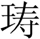
） ④462.9；（12）485.3。耕织图（焦秉贞） （17）389。
秦妇吟（韦庄） ⑤247.5。
秦梦记（沈亚之） ⑨81.5；⑩134.27，135.43，135.44。
秦汉演义（黄士恒） （11）451.2。
秦劫痛语（陕西旅京学生联合会） ①364.5。
秦汉瓦当存 见《遯庵秦汉瓦当存》。
秦汉金文录（容庚） （12）334.2；（17）389。
秦金石刻辞（罗振玉） （17）390。
秦泰山刻石（李斯） （17）390。
秦汉瓦当文字（罗振玉） （17）390。
泰绮思 见《泰绮丝》。
泰绮丝（法朗士） ⑥316.7；（12）88.3，92.6；（17）445，561。
泰山之子（影片） （16）569.5。
泰山之王（影片） （16）441.9。
泰山情侣（影片） （16）476.10。
泰赖·波尔巴 见《塔拉司·布尔巴》。
泰山秦篆二十九字 （17）390。
泰西名家杰作选集（北原义雄） （17）504。
泰西最新文艺丛书（东京新潮社） （17）504。
班固年谱（郑鹤声） （17）390。
敖德萨故事集（巴培尔） （17）543。
素描集（格罗斯） （17）543。
素描新技法讲座（北原义雄编） （17）504。
聂隐孃（裴铏） ⑩92.17。
赶集（老舍） （13）206.1；（17）390。
起死（鲁迅） （13）593.2。
起世经 （17）390。
起信论 见《大乘起信论》。
起信论直解（德清） （17）390。
盐场（楼适夷） （13）201.2，212.1；（14）310.5。
袁氏世范（袁采） ⑨17.41。
袁中郎全集（刘大杰标点） ⑥396.2。
袁中郎全集校勘记（“袁大郎”） ⑤604.2。
都市与年 见《城与年》。
都市的冬（王亚平） （17）390。
都玛罗夫 见《托曼诺夫》。
都城纪胜（灌园耐得翁） ①159.10；⑨123.7。
都市的逻辑（林房雄） （17）509。
恐惧（亚菲诺甘诺夫） （12）442.1；（17）390。
埃斯特拉马杜尔的嫉妒的卡里札莱斯（塞万提斯） （17）547。
莽原丛刊 （11）596.3。
《莽原》出版预告（鲁迅） （11）56.2。
恭喜发财（影片） （16）593.2。
恭贺文化界的“新年”（何家槐） （14）9.3。
莱辛传奇（梅林） （17）456。
莱蒙托夫（勃拉果夷） （13）357.1。
莱蒙托夫像（沙波尔洛斯基） （13）357.1。
莱蒙托夫诗四首（孙用译） （12）149.2。
莱克兰世界文库 见《莱克朗氏万有文库》。
莱比和他的朋友（约翰·布朗） （13）473.1，480.1。
莱克朗氏万有文库 ④503.6；⑦220.156；⑩513.3。
莫里哀全集 （17）454。
莫斯科印象记（胡愈之） ④437.4；（17）391。
莫泊桑短篇小说集（李青崖译） ⑤498.12。
莫郘亭（友芝）先生行述（莫祥芝） （17）391。
莪默·伽亚谟的鲁拜集 （17）558。
荷牐丛谈（林时对） （17）391。
荷兰派弗朗德勒派四大画家论（博德） （17）439。
晋书（虞预） （15）56.6。
晋书（房玄龄） ⑩16.3；（17）391。
晋纪（干宝） ⑨53.7。
晋书辑本（汤球） （17）391。
晋纪辑本（汤球） （17）391。
晋二俊文集（陆机、陆云） （17）391。
恶癖（张若谷） ⑤90.2。
恶魔（高尔基） ⑩513.1，513.7，513.8；（16）165.1。
恶之华（波德莱尔） （17）542。
莉蒂亚·绥甫林娜自传（绥甫林娜） ⑩415.4。
莎乐美（王尔德） ⑦359.13。
莎乐美（影片） （15）510.3。
“莎士比亚”（鲁迅） （16）476.9。
莎士比亚与现实主义（味茗） （13）141.1。
莺莺传（元稹） ⑥339.19；⑨16.37，91.2；⑩130.2。
莺莺歌（李绅） ⑥339.19；⑨91.5；⑩131.3。
真与美（柳宗悦） （17）501。
真英烈传 ⑨159.29。
真理之堡（至尔·妙伦） （17）559。
真实的传记 见《阿Q正传》。
真象如此伪装（长谷川如是闲） （17）504。
桂公塘（郑振铎） （13）106.5。
桂游日记（张维屏） （17）391。
桂林风土记（莫休符） ⑨81.10；⑩132.18。
桂海虞衡志（范成大） （17）391。
栖梧花史小传（魏秀仁） ⑨276.10。
桐花芝豆堂诗集（刘半农） ⑤353.2；⑥77.12。
格列柯（黑田重太郎） （17）440。
格林童话 见《格林兄弟儿童与家庭童话集》。
格罗苏那（密茨凯维支） ①116.143。
格致丛书（胡文焕） ⑥240.3。
格致新机（弗兰西斯·培根） ①41.60。
格利佛游记（斯威夫特） ⑤573.6；（12）24.1；（17）392。
格林童话集（金田鬼一译） （17）440。
格罗斯画集（格罗斯） （17）542。
格罗斯绘画（格罗斯） （17）543。
格斯纳的田园诗（格斯纳） （17）546。
格林兄弟儿童与家庭童话集 （17）548。
桃园（茅盾） （17）391。
桃花扇（孔尚任） ⑧261.2；（17）391。
桃色的云（爱罗先珂） ④158.4；⑩226.2，230.1；（11）238.3；（12）100.2；（16）640.4；（17）391。
桃花源记（陶潜） ⑥338.14；⑨80.3。
《桃色的云》序（鲁迅） ⑩230.2。
桃花扇传奇 见《桃花扇》。
校碑随笔（方若） （13）457.2；（17）392。
校正万古愁 见《万古愁曲》。
校经山房丛书（朱记荣） （17）392。
样式与时代（钦兹堡） （17）524。
哥萨克（影片） （16）267.8。
贾昌传 见《东城老父传》。
贾子次诂（王耕心） （17）392。
辱骂和恐吓决不是战斗（鲁迅） （13）449.3。
夏书 ⑨367.5。
夏伯阳 见《恰巴耶夫》。
夏伯阳（影片） （16）604.8。
夏娃之歌（望·莱培格） ⑩264.2。
夏娃日记（马克·吐温） ④341.1；（16）276.11；（17）392。
夏伯阳之死（吴明等译） （14）145.3。
破邪论（法琳） （17）392。
破坏者（影片） （16）271.5。
破垒集（黎锦明） ⑥272.62；（17）392。
破落户（炳文） ⑦70.8。
破坏与建设（世纪） （11）372.3。
原人论（达尔文） ①17.4。
原动力（革拉特珂夫） （17）438。
原色贝类图（山川默） （17）504。
烈火（黎锦明） ③511.7；⑥272.62。
烈女传 ⑤350.4。
殉难革命家列传（守田有秋） （17）504。
顾曲麈谈（吴梅） ⑧173.4；⑨157.17。
顾西眉画册（顾洛） （17）392。
顾氏文房小说（顾元庆） ⑩98.9；（11）534.1；（17）392。
顾端文公年谱（顾与沐等） ⑥237.7。
顾端文公遗书（顾宪成） （17）393。
顾恺之画女史箴 见《〈女史箴〉图》。
捕狮（菲力普） （16）96.1。
挽狂飙（常燕生） ④279.3；（12）28.6。
挽郑正秋（田汉） （13）527.9。
哲学要义（笛卡儿） ①41.61。
热风（鲁迅） （15）558.5，590.7；（17）393。
热情之花（培那文德） ⑩310.3。
捣鬼心传（鲁迅） （16）416.8。
致母（饶超华） （11）612.1。
致诸帝（裴多菲） ①119.173。
致友人书（瓦莱里） （17）549。
致中国国民宣言（国际工人后援会） ③103.5；（11）93.3。
致全体学生公启（杨荫榆） ③78.7。
致《新语林》读者辞（珂贝） （13）181.1。
致一位青年诗人的信（里尔克） （17）535。
致马克西姆·高尔基书信集（列宁） （17）535。
致北京国立各校教职员联席会议函（陈源等） ③181.8。
柴霍甫短篇杰作集（赵景深译） ⑤497.11。
监狱与病院（许拜言） （17）393。
逍遥游（庄子） ⑤374.3。
党人魂（影片） （16）44.7。
晓风（张秀中） （17）393。
鸭绿江畔（杨昌溪） ⑤491.3。
晏子春秋 ③317.3。
畔牢愁（扬雄） ⑨389.6。
哭范爱农（鲁迅） ⑦450.4；（16）493.2。
恩斯特·巴拉赫 （17）541。
鸯堀摩罗经 ⑨342.3。
峭帆楼丛书（赵诒琛） （17）393。
圆明园图咏（弘历等） （17）393。
铁马（影片） （16）609.2。
铁汉（影片） （16）594.9。
铁流（绥拉菲摩维支） ④601.6；⑤536.6；⑥20.2，501.9；⑦394.1；⑧364.4，502.1；⑩399.12；（12）259.3，267.2，279.6，300.3，312.1，435.3，456.1；（16）161.3，259.6，267.6，267.7，271.6，275.5，283.2，308.9，317.5，320.2，396.17；（17）393，519，567。
《铁流》图（毕斯凯莱夫） ⑧507.1；（12）259.5；（16）283.2。
《铁流》注（曹靖华译） （16）267.7。
铁云藏龟（刘鹗） （17）393。
铁甲列车 见《铁甲列车Nr.14－69》。
铁血将军（影片） （16）604.6。
铁的奔流 见《铁流》。
铁的静寂（略悉珂） ⑥370.5。
铁桥漫稿（严可均） （17）393。
《铁流》地图 （12）279.2；（16）275.5。
《铁流》在巴黎（瞿秋白） （14）197.1。
铁云藏龟之余（罗振玉） （17）393。
铁甲列车Nr.14－69（伊凡诺夫） ⑥20.2；⑧347.1；（16）224.4；（17）393，516，555。
铃木春信（野口米次郎） （17）519。
银谷飞仙（影片） （16）279.4。
特权者的哲学和科学（周建人） （13）176.6。
牺牲（凯绥·珂勒惠支） ⑧351.4。
造形艺术概论（珂纳柳斯） （17）540。
造型美术概论（外山卯三郎） （17）505。
造型艺术社会学（豪森斯泰因） （17）505。
造型美术的形式问题（希尔德布兰德） （17）505。
敌乎？友乎？（徐道邻） （13）380.3。
笔端（曹聚仁） （13）364.1；（17）394。
笔耕园（和田傒男） （17）516。
笔尔和哲安（莫泊桑） （17）394。
笔记小说大观（进步书局） ⑤526.5。
笑林（邯郸淳） ⑥337.11；⑨70.9。
笑林（何自然） ⑨70.13。
笑府（冯梦龙） ⑧213.17。
笑林广记（游戏主人） ③157.16；⑨322.2；（13）59.2。
积学斋丛书（徐乃昌） （17）394。
透底（鲁迅） （16）374.8。
蚕赋（荀卿） ⑩53.6。
乘异记（张君房） ⑨112.6。
倒提（鲁迅） （13）152.1；（16）460.10。
倾国倾城（美国影片） （14）336.2；（16）514.3。
倍林斯基像（保里夫诺夫） （13）392.1。
射击（普希金） （13）383.5。
射阳存稿 见《射阳先生存稿》。
射阳续稿（吴承恩） ⑨175.9。
射阳先生存稿（吴承恩） ⑨175.9；（11）430.11。
息邪（思孟） ⑧112.2。
徒然的笃学（鹤见祐辅） （15）563.7。
徐庾集 （17）394。
徐孝穆集（徐陵） 见《徐庾集》。
徐骑省集（徐铉） （17）394。
徐文长故事（林兰等） （14）492.1；（17）394。
徐法智墓志 ⑧77.1。
徐霞客游记（徐霞客） ⑧4.1。
徐孝穆集笺注（吴兆宜） （17）394。
徐旭生西游日记（徐炳昶） （17）394。
徐青藤水墨花卉卷（徐渭） （17）394。
徐懋庸作《打杂集》序（鲁迅） （13）417.1，430.1；（16）525.16。
殷文存（罗振玉） （17）394。
殷芸小说（殷芸） ⑨43.13。
殷契拾遗（陈邦怀） （17）394。
殷虚卜辞 （17）394。
殷虚书契考释（罗振玉） （17）395。
殷虚文字类编（罗振玉） （17）395。
殷虚书契菁华（罗振玉） （17）395。
殷虚书契待问编（罗振玉） （17）395。
殷商贞卜文字考（罗振玉） （17）395。
殷周青铜器铭文研究（郭沫若） （17）395。
殷墟出土白陶之研究（梅原末治） （17）505。
般若灯论（龙树） （17）395。
般若心经五家注 （17）395。
航空救国三愿（鲁迅） （16）363.1。
拿来主义（鲁迅） （16）459.2。
拿破仑与隋那（鲁迅） （16）488.6。
爱（契诃夫） ⑦219.153；（12）217.2。
爱经（奥维德） （12）160.2，317.3。
爱弥儿（卢梭） ③579.3。
爱莲说（周敦颐） ⑧532.2。
爱的分野（蒋光慈） ⑥480.8。
爱的故事（汉姆生） （17）519。
爱的牺牲（影片） （15）550.1。
爱的教育 见《心》。
爱眉小札（徐志摩） （14）64.1；（17）395。
爱情之道（柯仑泰） （17）505。
爱情至上（格罗斯） （17）561。
爱斯基摩（影片） （16）460.14。
爱尔兰情调（野口米次郎） （17）520。
爱情与世仇（戏剧） （11）29.1。
爱与死的搏斗（罗曼·罗兰） ③284.5；（17）519。
爱罗先珂画像（中村彝） （15）476.5。
爱略特文学论（爱略特） （17）438。
爱罗先珂童话集（鲁迅译） ⑩215.1；（17）395。
《爱罗先珂童话集》序（鲁迅） （13）295.1。
爱德华·蒙克版画艺术（希夫勒编） （17）539。
爱国的两说与爱国的两派（顺天时报社论） ③104.10。
脊令操（张岱） ⑥452.14。
豹姑娘（影片） （16）460.15。
颂 ⑤63.7。
颂萧（鲁迅） （16）363.7。
翁山文外（屈大均） ⑤619.3；（17）395。
翁松禅书书谱（翁同龢） （17）395。
脂砚斋重评石头记 见《红楼梦》。
狸猫换太子 ⑤506.5。
狼狈为奸（影片） （16）263.7。
卿云歌（北洋政府国歌） （15）395.1；（17）363。
留真谱（杨守敬） （12）451.2。
留东外史（向恺然） ③358.38。
留下镇上的黄昏（魏金枝） ⑥273.72。
饿（萧红） （13）453.3，460.3。
馀冬叙录（何孟春） （17）395。
恋歌（萨多维亚努） ⑩520.1；（13）472.1，474.1；（16）539.1。
恋歌（伐佐夫） （13）518.1。
恋爱与新道德（柯仑泰） （17）505。
高士传（皇甫谧） ②349.22；③547.43；（17）396。
高王经 ②300.13。
高尔基 见《革命文豪高尔基》。
高僧传（慧皎） （17）396。
高士传像 见《高士传》。
高尔基传 见《革命文豪高尔基》。
高尔基像（蔼非莫夫） （13）237.4。
高尔基像（索洛威赤克） （14）72.3。
高老夫子（鲁迅） （15）567.1。
高力士外传（郭湜） ⑨94.33。
高尔基全集 ⑤533.7；（12）232.1，505.2；（17）441，550。
高尔基全集（高桥晚成译） ⑩443.4。
高尔基研究 （17）441。
高尔基选集 （17）550。
高更版画集 （17）554。
高尔基画像集 （16）380.15。
高加索累囚行（普希金） ①114.117。
高昌壁画精华（罗振玉） （17）396。
高尔基创作年表（邹道弘） ⑩513.5。
高尔基创作选集（瞿秋白编译） （12）435.5，438.2，439.2，524.10；（14）34.5。
高尔基论文选集（瞿秋白编译） （12）433.2，435.6，436.2，492.4；（13）486.1，515.5，521.1；（14）34.5；（16）549.6；（17）396。
高尔基文艺书简集（横田瑞穗译） （17）441。
高等学校英语读本 ⑦209.69。
高蹈会紫叶会联合图录（大原松云编） （17）505。
高尔基的四十年创作生活——我们的祝贺（鲁迅、茅盾等） ⑥405.7。
高尔基《底层》在莫斯科艺术剧院演出剧照（艾弗罗斯） （17）569。
郭子（郭澄之） ⑥337.11；⑨69.3。
郭有道碑文（蔡邕） ⑥450.4。
郭遐周赠诗三首（郭遐周） ⑩83.12。
郭仲理画椁拓本 （12）198.1。
郭忠恕辋川图卷（郭忠恕） （17）396。
郭果尔短篇小说集（萧华清译） （13）403.6，497.5。
席勒剧本《群盗》警句图（格罗斯） ⑧363.2；（17）557。
病中的诗（周作人） （11）422.1。
病后杂谈（鲁迅） ⑥626.2；（13）299.4，314.1，335.2；（16）493.1。
病后杂谈之余（鲁迅） （13）335.3，364.6；（16）494.8。
痀偻集（郑振铎） ⑥360.4；（17）396。
离婚（老舍） （13）206.2；（17）396。
离骚（屈原） ②3.1；⑤123.3；⑥357.3；⑦153.3；⑨389.1；（12）319.4；（13）29.2；（15）531.2。
离魂记（陈玄祐） ⑩98.15。
离骚图（二种）（陈洪绶、萧云从） （17）396。
离骚图经（萧云从） （17）396。
离开政党生活的战壕（杨邨人） ④649.10；⑤401.4。
唐书 见《旧唐书》。
唐诗（费氏影宋刻合本） （17）396。
唐·璜（拜伦） ①110.81；（17）539。
唐三藏（剧本） ⑨166.8。
唐风图（马和之） ④462.9；（17）396。
唐文粹（姚铉） ⑩119.35；（17）396。
唐会要（王溥） ⑩106.17。
唐语林（王谠） ⑨71.20；⑩136.47。
唐阙史（高彦休） ⑨102.7。
唐人说荟（陈世熙） ③254.37；⑥240.3；⑧133.1；⑩98.17；（11）521.1；（17）396。
唐才子传（辛文房） ⑩134.30。
唐艺文志（欧阳修） （17）396。
唐书演义（熊大木） ⑨158.24。
唐代丛书 见《唐人说荟》。
唐宋文醇 ⑤474.11。
唐宋诗醇 ⑤474.11。
唐国史补（李肇） （17）397。
唐诗纪事（计有功） ⑩134.29；（17）397。
唐韵残卷（孙愐） （17）397。
唐子西文录（唐庚） ⑧220.6。
唐四名家集（毛晋辑） （17）397。
唐代文学史（王冶秋） （13）577.2；（17）397。
唐百家诗选（王安石） （17）397。
唐宋传奇集（鲁迅编） ③420.3；⑩97.1；（15）611.4，630.5；（16）35.9，38.3，38.8，38.9，44.12，49.10，453.7；（17）397。
唐诗三百首（孙洙） ⑥303.12；⑩118.33。
唐人小说八种 （17）397。
唐人写法华经 （17）397。
唐土名胜图会（冈田玉山等） （17）506。
唐元次山文集（元结） （17）397。
唐太宗入冥记 ⑨122.1。
唐宋大家像传（河原英吉） （17）506。
唐相梁公碑文（范仲淹） ⑨123.3。
唐人万首绝句选（王士祯） ⑦142.18。
唐三藏西天取经（吴昌龄） ⑨166.9。
唐三藏取经诗话 见《大唐三藏取经诗话》。
唐开元小说六种（叶德辉） （17）398。
《唐宋传奇集》序例（鲁迅） （16）38.3，38.8。
唐宋元明名画大观（东京美术学校编） （13）534.2；（14）215.2；（17）506。
《唐宋传奇集》封面画（陶元庆） （11）523.2；（16）50.15。
唐风楼金石文字跋尾（罗振玉） （17）398。
《唐宋传奇集》稗边小缀（鲁迅） ③420.3。
唐御史台精舍题名考（赵钺、劳格） ⑩104.2。
唐李怀琳草书绝交书油素钩本（有正书局） （17）398。
唐秘书省正字先辈徐公钓矶文集（徐寅） （17）398。
唐大荐福寺故寺主翻经大德法藏和尚传（崔志远） （17）398。
旅伴（安徒生） （17）398。
阅藏知津（智旭） （17）398。
阅微草堂笔记（纪昀） ⑥61.12；⑩71.5。
烦恼由于才智 见《聪明误》。
烟（屠格涅夫） （17）522。
烟草（英格仑） （17）522。
烟袋（爱伦堡等） ④449.14；⑥574.5；⑩386.25；（12）105.3；（13）31.6，102.2，456.4，521.2；（14）60.2，126.1；（17）398。
烟草与恶魔（芥川龙之介） ⑩247.35。
烟画东堂小品（缪荃孙） ①160.17。
烟屿楼读书志（徐时栋） （17）398。
剡录（高似孙） （17）398。
瓶史（袁宏道） ⑤620.5。
凌烟阁图 见《凌烟阁功臣图像》。
凌烟阁功臣图像（刘源） （13）215.3；（17）398。
益智图（童叶庚） （17）398。
益雅堂丛书（傅士洵） （17）399。
益智燕几图（童叶庚） （17）399。
益智图千字文（童叶庚） （17）399。
准风月谈（鲁迅） （12）497.7；（13）32.1，227.1，321.6，325.2，336.2，360.5，388.2，406.2，586.1；（17）399。
《准风月谈》后记（鲁迅） （13）344.2。
资本论（马克思） ③165.12；④271.6；（12）497.4。
资暇集（李匡文） ②347.2；⑨17.40；⑩146.12。
资治通鉴（司马光） ⑥63.18；⑨43.17；（11）367.5。
资治通鉴目录（司马光） ⑧84.9。
资治通鉴考异（司马光） ⑩120.46；（17）399。
《资本论》的文学构造（涅奇金娜） （17）523。
涑水记闻（司马光） （17）399。
酒后（凌叔华） ⑥272.67。
酒牌 见《水浒叶子》。
酒瘾（许广平） （11）90.2。
酒会诗（嵇康） ⑩83.15。
酒德颂（刘伶） ⑨79.3。
浙江采集植物游记（胡先骕） ①401.6。
浙江图书馆印行书目 （17）399。
浙江同乡留学东京题名 （13）179.3。
消夏闲记（顾公燮） ⑩72.8。
娑罗树碑（李邕） （11）430.12。
涅槃经 （17）399。
涓涓（萧军） （13）423.3。
涓滴（森欧外） ⑩245.17。
海上（陈学昭） （17）399。
海贼（拜伦） ①110.75。
海赋（木华） ⑥453.20。
“海燕”（宗珏） （14）37.3。
海鹰（影片） （16）68.3。
海山记 ⑧134.11；⑨144.13；⑩145.5。
海上夫人 见《海的女人》。
海上劳工（雨果） ⑩481.3，481.6。
海上述林（瞿秋白） ⑥594.1，606.1，606.5；⑦489.1；⑧525.1；（13）575.1，601.1；（14）9.4，87.11，170.2；（16）593.3，624.12，627.1；（17）399。
海仙画谱（王嬴） （17）504。
海的女人（易卜生） ②134.10；⑩314.7。
海的童话（恩地孝四郎） （17）503。
海纳研究（高冲阳造） ⑩476.3。
海底寻金（影片） （16）530.6。
海底旅行（凡尔纳） （13）179.5。
海底探险（影片） （16）488.10，563.1。
海涅研究（舟木重信等） （17）448。
海滨之夜（谢冰莹） ⑤320.2。
海上花列传（韩邦庆） ⑤586.5；⑨276.13；（11）440.7，444.4；（17）400。
海上繁华梦（孙家振） ⑨302.3；（11）444.4。
海天鸿雪记（李宝嘉） ⑨302.2。
海纳与革命（毗哈） ⑩475.1，475.2；（12）445.2；（16）400.4。
海得·加勃勒（易卜生） ⑦207.52。
《海燕》读后记（邱韵铎） ⑥542.11；（14）31.3。
海上名人画稿（张熊等） （17）400。
海公主与渔人（爱罗先珂） ⑩226.2。
海外文学新选（东京新潮社） ⑦485.3；⑩415.2；（17）504。
海涅十三卷集（弗利德曼编） （17）544。
海宁王忠悫公遗书（王国维） （12）140.2；（17）400。
《海上述林》上卷插图正误（鲁迅） （14）169.2。
浮士德（歌德） ①110.82；⑥497.26；⑦376.25；（17）542。
浮士德（影片） （16）128.3。
浮世绘大成（东京东方书院） （17）506。
浮士德与城（卢那察尔斯基） ④287.9；⑦374.1；（16）202.6；（17）400，571。
浮世绘六大家（野口米次郎） （17）506。
《浮士德与城》后记（鲁迅） （16）202.5。
浮世绘板画名作集（东京第一书房编） （17）506。
流冰（冯雪峰） （17）400。
流红记（张实） ⑨131.2；⑩154.3。
流浪者（巴罗哈） ⑦203.13。
流沙坠简（罗振玉） ①421.12；（17）400。
流寇陷巢记（沈常） ⑥656.3；（17）400。
流亡者的文学（勃兰兑斯） （12）528.10；（17）511。
流寓日本的明末诸士（今关天彭） （17）468。
浣玉轩集（夏敬渠） （17）400。
浪花（张近芬） （17）400。
浪迹续谈（梁章钜） ⑨183.1。
涌幢小品（朱国桢） ⑦244.3。
家训（霍渭厓） ①276.6。
家诫（嵇康） ③551.65；⑦142.19；⑩85.29。
家庭为中国之基本（鲁迅） （16）416.8。
宾退录（赵与峕） ⑨113.13；⑩100.28；（17）401。
窃愤录 ⑨132.7。
容斋随笔（洪迈） ⑥199.17；⑨17.39；（17）401。
请愿人（萨尔蒂珂夫） ⑩518.8。
请看北京学界思潮变迁之近况（《公言报》报导） （11）375.11。
诸子辨（宋濂） （17）401。
诸子学略说（章炳麟） ⑥542.12。
诸病源候论（巢元方） ③545.33；（17）414。
诸家文章记录 见《众家文章记录》。
诸葛亮秋风五丈原（王仲文） ⑨142.2。
诸暨民报五周年纪念册 （17）401。
诺拉 见《玩偶之家》。
诺皋记（段成式） ⑧134.6。
诺阿·诺阿（高更） ⑦485.4；（14）243.1；（15）14.5；（17）448，553。
诺铁耳谭 见《巴黎圣母院》。
诺汉默教授 见《马门教授》。
诺瓦利斯日记（饭田安译） （17）448。
读书术（法格） （17）523。
读书忌（鲁迅） （16）488.15。
读曲歌 ⑥111.37。
读几本书（鲁迅） （16）453.8。
读书丛录（洪颐煊） ⑩61.15。
读书杂谈（鲁迅） （16）32.7，35.5。
读书杂释（徐鼒） （17）401。
读书脞录（孙志祖） （17）401。
读史丛录（内藤虎次郎） （17）523。
读李翱文（欧阳修） ⑤474.11。
读《呐喊》图（王钧初） （16）549.2。
读《高尔基》（林翼之） ⑤318.5。
读《推背集》（罗荪） （14）106.2。
读碑小笺（罗振玉） （17）401。
读书与革命（鲁迅讲演记录稿） （13）291.1。
读书记数略（宫梦仁） （14）299.6。
读四书丛说（许谦） （17）401。
读《伪自由书》（曹艺） ④648.5。
读书脞录续编（孙志祖） （17）401。
读古书的商榷（姚克） （13）25.4。
读房龙的《地理》（瞿秋白） （13）176.3。
读《中国小说史略》（胡怀琛） （13）532.2。
读画录印人传（合刻）（周亮工） （17）401。
读了童话剧《桃色的云》（秋田雨雀） ⑩232.1。
读的文章与听的文字（鹤见祐辅） （16）24.5，27.1。
读了“记‘杨树达’君的袭来”（李遇安） （11）455.4；（15）537.2。
读武者小路君作《一个青年的梦》（周作人） ⑩210.2。
读小品文（将苏东坡读孟郊诗二章改窜作）（徐诗荃） （13）172.1。
扇误 见《温德米尔夫人的扇子》。
袖珍英日辞典（东京至诚堂） （17）506。
被关闭的庭院（格林） （17）512。
被开垦的处女地（萧洛霍夫） （17）287，449。
被侮辱与被损害的（陀思妥耶夫斯基） （17）402。
被解放的Don Quixot 见《解放了的堂·吉诃德》。
被枪决而活下来的人（巴比塞） （17）524。
被幽囚的普罗密修士（埃斯库罗斯） （17）401。
冥音录 ⑩140.1。
冥祥记（王琰） ⑨15.30，61.3。
谁在没落？（鲁迅） （16）454.18。
谁的矛盾（鲁迅） （16）363.12。
调和（绍伯） ⑥153.10；（13）302.2。
冤魂志（颜之推） ⑨15.30，60.1。
谈天（赫歇尔） ⑥331.10；（17）402。
谈薮（阳玠松） ⑨70.12。
谈龙集（周作人） （17）402。
谈虎集（周作人） （17）402。
谈说谎（韩侍桁） ⑤447.2。
谈蝙蝠（鲁迅） （16）385.7。
谈“激烈”（鲁迅） （16）38.5。
谈皇仁书院（辰江） ③453.3。
谈谈萧伯纳（生形要） （17）442。
谈《金瓶梅词话》（郑振铎） ⑩160.9。
谈谈世界女性（木村毅） （17）474。
谈谈复旦大学（冯珧） ⑧292.2，297.4；（16）90.7。
谈现在中国的文学界（潘梓年） （12）202.5。
剧说（焦循） （11）429.5。
剧谈录（康骈） ⑨102.8。
屐痕处处（郁达夫） （17）402。
陶山集（陆佃） （17）402。
陶庵梦忆（张岱） ②273.3，285.23；（17）402。
陶渊明诗（陶潜） （17）402。
陶渊明集（陶潜） （17）402。
陶靖节集 （17）402。
陶斋藏石记（端方） （17）369。
陶元庆的出品 ⑧349.1；（17）321。
陶靖节诗集汤注（汤汉） （17）403。
“陶元庆氏西洋绘画展览会目录”序（鲁迅） ③575.3。
娱目醒心编（杜纲） ①164.38。
娘儿们也不行（鲁迅） （16）395.11。
婀娜小史 见《安娜·卡列尼娜》。
通典（杜佑） ⑩27.3。
通志（郑樵） ⑩31.8。
通信（鲁迅） （16）38.2。
通鉴 见《资治通鉴》。
通疑（虞喜） ⑩28.5。
通俗编（翟灏） （14）299.4；（17）403。
通俗小说 见《京本通俗小说》。
通鉴目录 见《资治通鉴目录》。
通鉴考异 见《资治通鉴考异》。
通鉴博论（朱权） ⑧217.5。
通论考古学（滨田耕作） （17）507。
通信（复Y君）（鲁迅） ⑧276.2。
通信（复未名）（鲁迅） （15）626.4。
通讯（致郑孝观）（鲁迅） （15）541.5。
通俗三国志演义 见《三国演义》。
通俗忠义水浒传 见《水浒传》。
通过书简所看到的陀思妥耶夫斯基（纪德） （13）515.3。
预兆（什罗姆斯基） （12）108.1。
能改斋漫录（吴曾） ⑩100.27。
难蜀父老（司马相如） ⑨437.6。
难摄生中 见《难宅无吉凶摄生论》。
难答的问题（鲁迅） （16）593.6。
难解的性格（契诃夫） （16）525.12。
难自然好学论（嵇康） ③549.56；⑩85.26。
难宅无吉凶摄生论（嵇康） ⑩85.27，85.28。
骊山记（秦醇） ⑩155.10。
验方新编（鲍相璈） ①270.28；⑧391.4。
绣襦记（薛近兖） ⑨83.25；⑩118.27。
绥拉菲摩维支全集 （12）279.3；（17）570。
绥拉菲摩维支访问记（曹靖华） （12）442.2。
绥拉菲摩维支《铁流》序（涅拉陀夫） ⑥594.4。
十一画
琐记（鲁迅） （11）572.2；（15）643.8。
琐言 见《北梦琐言》。
理水（鲁迅） （16）564.14。
理想乡（显克微支） （17）509。
理想国（柏拉图） ①36.7；⑦251.10；⑧369.3。
理定自传 ⑦221.166；⑩497.1。
理想之良人（王尔德） ②43.8。
理想的伴侣（许钦文） ②42.1。
理论艺术学概论（马察） （17）509。
琅嬛文集（张岱） ⑥451.11。
职业（萧军） （13）356.1，380.2，381.4，549.1。
聊斋志异（蒲松龄） ②274.16；④27.18；⑨225.7；⑩71.5；（17）403。
聊斋志异列传 见《聊斋志异外书磨难曲》。
聊斋志异拾遗 ⑨225.9。
聊斋志异外书磨难曲（蒲松龄） （14）384.1；（17）403。
域外小说集（鲁迅、周作人编译） ⑦130.4；⑧455.1，455.2；⑩168.1；（11）399.4；（14）409.2；（17）403。
《域外小说集》略例 ⑩168.2。
《域外小说集》著者事略（周作人） ⑩175.1，179.6。
《域外小说集》著者事略二则（鲁迅） ⑩175.1。
埤雅（陆佃） （17）403。
教坊记（崔令钦） ⑨275.1。
教育纲要（教育部） ⑧63.1。
教育漫谈（徐祖正） ③486.3。
教宗禁约 （17）404。
《教育纲要》说帖（教育部参事室） ⑧63.1，64.2，64.3，64.4。
教育法规汇编（教育部） （11）367.2。
教育部令汇编 （17）404。
教育偏重科学无甯偏重道德（仿古） ①320.9。
黄祸（鲁迅） （16）406.14。
黄花集（韦素园译） ⑩513.4；（12）111.2，123.3；（17）404。
黄金虫 见《玉虫缘》。
黄金湖（苏联影片） （13）560.3；（16）558.3。
黄帝说 ⑨13.16。
黄浦江（陈烟桥） （13）466.1。
黄蔷薇（约卡伊·莫尔） （11）336.9；（15）81.1；（17）404。
黄鹤楼（崔颢） ⑤15.5。
黄人之血（黄震遐） ⑤77.2。
黄帝内经 ①197.3；②300.9；③19.2。
黄萧养回头（新广东武生） ①241.13。
黄石斋手写诗（黄道周） （17）404。
黄瘿瓢人物册（黄慎） （17）404。
黄尊古名山写真册（黄鼎） （17）404。
黄小松藏汉碑五种（黄易） （17）404。
黄子久秋山无尽图卷（黄公望） （17）404。
黄石斋夫人手书孝经（蔡玉卿） （17）404。
黄门郎向子期难养生论（向秀） ⑩84.22。
菽园杂记（陆容） ⑧222.2。
菲洲战争（影片） （16）564.4。
菲力普全集（小牧近江等译） （17）449。
菲洲小人国（影片） （16）437.10。
菲洲孔果国（影片） （16）436.9。
菲力普短篇集（堀口大学译） （17）449。
萝藦亭札记（乔松年） （17）405。
萝庵游赏小志（李慈铭） （17）405。
菩提资粮论（龙树） （17）405。
萤雪丛说（俞成） ⑧124.2。
乾
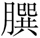
子（温庭筠） ⑨102.13。乾坤正气集（姚莹等） ⑩67.11。
乾隆皇帝与海宁（溪南） ⑤596.5。
萧伯纳颂（鲁迅） ⑧381.3。
萧曹遗笔（竹林浪叟） ③116.16。
萧梁旧史考（朱希祖） （11）71.3。
萧伯纳在上海（瞿秋白编） ④516.1；⑤42.9；⑧510.1；（12）376.5；（17）405。
萧冰厓诗集拾遗（萧立） （17）405。
萧红作《生死场》序（鲁迅） （13）582.3；（16）564.6。
萧伯纳过沪谈话记（镜涵） （14）238.4，241.4。
萧伯纳与高尔斯华绥（郁达夫） （12）374.3。
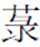
竹堂书目（叶盛） ⑩60.8。萨罗美（影片） 见《莎乐美》。
萨朗波（福楼拜） ⑩492.7。
萨多姆城的结局（苏德曼） （11）375.15。
梼杌闲评 ⑨159.35。
梦（须桂纳） （17）405。
梦迹（蕗谷虹儿） ⑩526.4。
梦粱录（吴自牧） ①160.11；⑨123.5。
梦窗词（吴文英） （17）405。
梦溪笔谈（沈括） ⑤557.2；⑨17.39；（17）405。
梦东禅师遗集（际醒） （17）405。
梵网经菩萨戒本疏 （17）405。
桯史（岳珂） （17）406。
梅妃传 ⑧135.16；⑨144.14；⑩156.19。
梅花梦（张预） （12）323.7。
梅屿恨迹 ⑨214.14。
梅查列姆（戈尔） （17）454。
梅花梦传奇（陈森） （12）323.6；（14）45.1；（17）406。
梅花喜神谱（宋伯仁） （12）454.3；（17）406。
梅村家藏稿（吴伟业） （17）406。
梅亭先生四六标准（李刘） （17）406。
梅瞿山黄山十九景册（梅清） （17）406。
梅瞿山黄山胜迹图册（梅清） （17）406。
梅令格的《关于文学史》（巴林） ⑩473.1。
梅斐尔德木刻士敏土之图 ④624.6；⑦382.1；（12）254.4，267.3，312.4；（13）167.2；（14）380.3；（16）224.2，263.2；（17）406。
梭罗古勃像（克鲁格里科娃） ⑦366.19。
曹全碑 ⑩8.8。
曹集铨评（丁晏） （17）406。
曹子建文集（曹植） （17）406。
曹望憘等造像记 （13）457.2。
曹靖华译《苏联作家七人集》序（鲁迅） （14）143.2；（16）628.9。
副业和补遗（叔本华） ③234.3。
龚半千山水册（龚贤） （17）407。
龚半千细笔画册（龚贤） （17）407。
 氏编钟图释（徐中舒） （12）334.2；（17）407。
氏编钟图释（徐中舒） （12）334.2；（17）407。
盛明杂剧（沈泰） （17）407。
雪（巴金） （17）407。
雪地（周文） （14）310.6。
雪夜（汪敬熙） ⑥266.15；⑦237.5；（13）382.4。
雪耻（影片） （16）454.20。
雪窦四集（重显） （17）407。
雪堂校刊群书叙录（罗振玉） ③408.7。
描写自己（纪德） ⑩498.1。
捷尼的画——我们，我们的朋友和我们的敌人 （17）568。
推（鲁迅） （12）403.1；（16）385.3。
推霞（苏德曼） ⑦237.7；（11）371.1。
推背图（李淳风） ⑤99.6，240.2，466.4。
推背图（鲁迅） （16）374.1。
推背集（唐弢） （13）441.4；（14）48.2；（17）407。
推己及人（鲁迅） （16）453.8。
“推”的余谈（鲁迅） （16）391.17。
授堂遗书（武亿） （17）407。
授丘纾陈鸿员外郎制（元稹） ⑩119.36。
救急法 （11）426.1。
匾额——拟狂言（琴川） ⑦203.17。
 鹭湖的忧郁（端木蕻良） （14）148.3。
鹭湖的忧郁（端木蕻良） （14）148.3。
堂祥 见《唐·璜》。
堂·吉诃德（塞万提斯） ④363.2，462.8；⑤314.4；⑥372.16；⑦425.3；（17）447。
常侍言旨（柳珵） ⑨144.14；⑩136.52。
常山贞石志（沈涛） （17）407。
野草（鲁迅） （12）39.3，482.14；（17）407。
野获编（沈德符） ③156.10；⑨44.20。
“野有死麕”（张慧） （13）63.2。
野草·题辞（鲁迅） ②164.1；（13）590.2；（14）34.4。
野叟曝言（夏敬渠） ⑥281.2；⑨261.1。
野菜博录（鲍山） （17）407。
野性的呼声（影片） （14）378.2；（16）549.7。
野兽训练法（鲁迅） （16）406.21。
《野草》英译本序（鲁迅） （16）279.2。
野蛮人与古典派（豪森斯泰因） （17）534。
晨凉漫记（鲁迅） （12）424.1；（16）391.19。
晨风阁丛书（沈宗畸） （17）408。
眼学偶得（罗振玉） （17）408。
曼侬（普列服） （17）408。
曼殊全集（苏曼殊） （17）408。
曼殊遗迹（苏曼殊） （17）408。
晚笑堂画传（上官周） （13）9.6，216.4；（17）408。
晚明二十家小品（施蛰存编） ⑥320.2，396.2。
晚笑堂竹庄画传 见《晚笑堂画传》。
冕服考（焦廷琥） （17）408。
趼廛笔记（吴沃尧） ⑨303.15。
趼人十三种（吴沃尧） ⑨303.15。
略谈香港（鲁迅） （16）32.6。
略论中国文坛（张露薇） ⑥404.4；（13）547.5。
略论中国人的脸（鲁迅） （12）58.13，85.3；（16）49.3。
略论梅兰芳及其他（上）（鲁迅） （16）488.2。
略论梅兰芳及其他（下）（鲁迅） （16）488.2。
略谈现在中国的绘画（曹白） （14）160.1。
唯物史观（梅林） ⑩473.3；（17）510。
唯物史观序说（东京无产阶级科学研究所编） （17）510。
唯物史观研究（河上肇） （17）511。
唯物史观解说（果特） （17）511。
唯物辩证法讲话（永田广志） （12）528.5；（17）511。
唯物史观世界史教程（鲍恰罗夫等） ⑥145.10；（12）527.3；（17）511。
唯美主义者奥斯卡·王尔德（本间久雄） （17）510。
唯物论与辩证法的基本概念（普列汉诺夫） （17）510。
啸堂集古录（王俅） （17）409。
崖边（彭柏山） （17）409。
崔莺 见《莺莺传》。
崔娘诗（杨巨源） ⑨91.3；⑩131.3。
崇实（鲁迅） （16）363.1。
崇有论（裴禊） ③550.59。
崇文总目（王尧臣） ⑩60.2。
铜马（普希金） ①117.149。
笺经室丛书（曹元忠） （17）409。
笠泽丛书（陆龟蒙） ④593.8；（17）409。
第二天（爱伦堡） （17）511。
第七人（吉宾斯） （17）564。
第三种水 ④167.6。
第四十一（拉甫列涅夫） ④448.14；⑥574.5；⑩387.33；（12）155.5，203.1，523.2；（13）31.6，102.2，456.4，521.2；（14）60.2，126.1；（17）409，479，570。
《第四十一》后序（曹靖华） （12）473.3；（16）165.4。
第三种人的“推”（达伍） ⑤243.2。
第二才子好逑传 见《好逑传》。
“第三种人”的出路（苏汶） ④455.5。
第聂伯水电站之夜（克拉甫兼珂） （14）74.1；（16）604.10。
第一次全苏作家代表大会 （13）386.1，390.5。
第十三篇关于列尔孟托夫的小说（巴甫连珂） ⑥606.4；（13）515.4，518.2，548.2，566.4。
《第十三篇关于列尔孟托夫的小说》插图（巴尔多） （13）566.4。
移行（张天翼） （17）409。
移家（巴罗哈） ⑦203.13。
移民文学 见《流亡者的文学》。
《敏捷的译者》附记（鲁迅） （15）571.5。
做文章（鲁迅） （16）465.11。
做文与做人（林语堂） ⑥282.6。
做小说的秘诀（扰扰） ①420.2。
做“杂文”也不易（鲁迅） （16）475.3。
做学问的工具（陈源） ③205.13。
做古文和做好人的秘诀（鲁迅） ④631.3。
袋街 见《死胡同》。
偶成（鲁迅） （16）385.6，401.14。
偶感（鲁迅） （16）454.12。
偶象再兴（和辻哲郎） （17）511。
傀儡（影片） （16）482.8。
傀儡家庭 见《玩偶之家》。
停办北京女子师范大学呈文（章士钊） ①276.7，285.13；③122.7，134.5。
假病人（契诃夫） （16）488.9。
盘铭 ⑨370.25。
舶载书目（日本） ⑧212.4。
悉怛多般怛罗咒 （17）409。
脸谱臆测（鲁迅） （13）335.4，336.3；（16）494.9。
猎人笔记（屠格涅夫） （17）512。
猎俄皇记（斐格纳尔） ④462.12；（14）380.4；（17）533，546。
猫街（萩原朔太郎） （17）512。
猫·狗·人（长谷川如是闲） ③434.5。
逸史（卢肇） ⑨144.12。
逸如（郝荫潭） （17）410。
逸周书 见《周书》。
祭祀及礼与法律（穗积陈重） （17）512。
庶联的版画（韦太白编） （14）122.4。
麻风女邱丽玉（宣鼎） ①256.13。
庾子山集（庾信） （17）394。
庸人的镜子（格罗斯） （17）559。
康熙字典（张玉书等） ①188.4；②22.10；④631.5；⑥110.28。
康宁珂夫的画集 （12）315.5。
康伯度答文公直（鲁迅） （16）470.4。
康定斯基艺术论（康定斯基） （17）439。
鹿之水镜（伊索） （17）512。
旌异记（侯白） ⑨15.30，61.4。
章台柳（张国筹） ⑩105.10。
章氏丛书（章炳麟） ⑥571.22；（11）354.6。
章氏丛书续编（吴承仕等编） ⑥571.22；（17）410。
章实斋乙卯丙辰札记合刻（章学诚） （17）410。
竟西厢 见《锦西厢》。
商子（商鞅） （17）410。
商书 ⑨367.5。
商颂 ⑨372.36。
商市街（萧红） （17）410。
“商定”文豪（鲁迅） （16）410.6。
商贾的批评（鲁迅） （16）476.13。
商调蝶恋花词 见《商调蝶恋花鼓子词》。
商周金文拾遗（吴东发） （17）410。
商务印书馆书目 （17）410。
商调蝶恋花鼓子词（赵令畤） ⑨91.6；⑩131.4，132.12。
望堂金石（杨守敬） （17）410。
望·蔼覃像 （16）54.8，72.2。
情史（詹詹外史） （17）410。
情书一束（章衣萍） （12）117.4；（17）410。
情欲的喻言（勃鲁盖尔） ②248.13。
惜分飞（王余杞） （17）410。
惜抱轩全集（姚鼐） ⑦142.17。
悼丁君（鲁迅） （12）447.3。
悼李夫人赋（刘彻） ⑨426.4。
惟爱丛书（唯爱社） （12）160.2。
惊人的重要新闻（“密探”） （12）252.1。
阎立本帝王图（阎立本） （17）410。
粕谷德语学丛书（粕谷真洋） （17）512。
断片（诺瓦利斯） （17）512。
断想（鹤见祐辅） （12）39.4，41.5；（16）28.8。
剪条（巴托希） （13）515.8。
剪影集（姚蓬子） （13）206.2。
剪发奇缘（影片） （16）44.5。
剪灯余话（李昌祺） （17）411。
剪灯新话（瞿佑） ⑨224.1；（17）411。
剪影之研究（北尾春道） （17）526。
兽世界（影片） （16）267.4。
兽国古城（影片） （16）564.3。
兽国奇观（影片） （16）431.3。
兽国春秋（影片） （16）259.2。
兽王历险记（影片） （16）441.7。
兽国寻尸记（影片） （16）535.5。
盗为媒（拉柴莱维支） （11）406.13。
清史（赵尔巽等） ⑤130.5。
清言（郑仲夔） ⑨71.26。
清异录（陶谷） ⑧134.7。
清人杂剧（郑振铎编） （12）470.2；（17）411。
清代通史（萧一山） （13）441.2。
清明时节（鲁迅） （16）447.15，453.10。
清明时节（张天翼） （17）411。
清波杂志（周
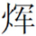
） （17）411。清六家诗钞（刘执玉编） （14）338.2。
清诗人征略 见《国朝诗人征略》。
清桢木刻画（罗清桢） （12）414.2，510.1；（13）126.1；（17）411。
清代文字狱档（故宫博物院） ⑥46.6；（13）135.8；（17）411。
清代学者像传（叶衍兰） （17）411。
清兵卫与壶卢（志贺直哉） （11）423.5。
清内府藏唐宋元名迹 （17）411。
清仪阁所藏古器物文（张廷济） （17）411。
清学部图书馆善本书目（缪荃孙） ⑩62.22。
渚山堂词话（陈霆） （17）411。
鸿烈 见《淮南子》。
淞江公园 见《松口公园一角》。
淞隐续录（王韬） ⑧412.1；⑨226.24；（17）411。
淞隐漫录（王韬） ⑧411.1；⑨226.24；（17）412。
淞滨琐话 （17）412。
渠阳诗注（魏了翁） （17）412。
淑姿的信 见《信》。
《淑姿的信》序（鲁迅） ④608.2；（13）284.2；（16）320.7，493.2。
淑雪兼柯自传（左琴科） ⑩384.8。
渑水燕谈录（王辟之） （17）412。
淮南子（刘安等） ⑨11.3，419.27；（17）412。
淮南王歌 ⑥108.21。
淮南集证（刘家立） （17）412。
淮南旧注校理（吴承仕） （17）412。
淮南鸿烈集解（刘文典） （17）412。
淮阴金石仅存录（罗振玉） （17）412。
渔父 ⑨390.8。
渔家（杨振声） ⑥266.14；（13）354.2。
渔丈人行（邵祖平） ①401.6。
渔夫及其灵魂 （17）525。
淳化秘阁法帖考证（王澍） （17）412。
淡淡的血痕中（鲁迅） ②227.1。
深誓（章衣萍） （17）412。
梁书（姚思廉） （17）412。
梁父吟 ③318.4。
梁王菟园赋（枚乘） ⑨416.15。
梁闻山书阴符经（梁巘） （17）412。
涵芬楼秘笈（孙毓修等） ③355.11；（11）474.4；（17）412。
寄庐（诺拉·沃恩） （12）496.1。
寄小读者（谢冰心） （17）413。
寄调筝人（苏曼殊） ①240.5。
寄《戏》周刊编者信（鲁迅） （16）488.12。
寄景宋的公开信（吕云章） （11）255.4。
寂寞的国（汪静之） （17）413。
密莱礼赞（有岛武郎） ⑦208.56。
密庵诗稿（谢肃） （17）413。
密尔戈洛特 见《密尔格拉得》。
密尔格拉得（果戈理） （13）274.7，369.3，403.4；（17）413。
密韵楼丛书（蒋汝藻） （17）413。
密德罗辛画集 见《密德罗辛版画集》。
密德罗辛版画集 ⑦442.11；（17）538。
密茨凯维支纪念像（布尔德尔） ⑦217.136。
婆汉迷（张若谷） ⑤62.2，391.4。
谏逐客书（李斯） ⑨396.4。
谏楚夷王诗（韦孟） ⑨415.4。
谐史（沈征） ⑨70.15。
谐铎（沈起凤） ⑨225.11。
祷告（巴罗哈） ⑦203.13。
谋杀沙皇亚历山大二世记 见《猎俄皇记》。
谎言的力量（博耶尔） （17）557。
谛妙斯篇（柏拉图） ①36.7。
屠格涅夫全集（除村吉太郎等译） （17）446。
屠格涅夫散文诗（中山省三郎译） （17）446。
隋书（魏征等） ②348.12；⑨13.19；⑩7.2；（12）486.5；（17）413。
隋遗录（颜师古） ⑩144.1；（17）413。
隋炀艳史（齐东野人） ⑩147.18。
隋唐志传（罗贯中） ⑨114.24，143.10。
隋唐嘉话（刘
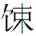
） ⑧133.4；⑨144.14；⑩98.12。隋唐演义（褚人获） ⑨114.25，124.12。
隋书·经籍志（长孙无忌等） ③208.27；⑥337.6；⑨13.20，14.21；⑩7.2。
《隋志》史部考证（章宗源） ⑩41.2。
隋书经籍志考证（章宗源） （17）413。
隋唐以来宫印集存（罗振玉） （17）413。
堕民（唐弢） ⑤228.2。
堕民猥编 ⑤228.3。
随园诗话（袁枚） ⑥358.8。
随园食单（袁枚） ③358.31。
随便翻翻（鲁迅） （16）488.5。
随笔三则（纪德） （13）447.1。
随山馆存稿（汪瑔） （17）413。
随轩金石文字（徐渭仁） （17）413。
随感录二十四（鲁迅） （15）339.2。
随感录二十五（鲁迅） （15）341.1。
随感录三十三（鲁迅） （15）342.4。
随感录三十五（鲁迅） （15）347.1。
随感录三十六（鲁迅） （15）347.1。
《随感录》四十一的刊文（鲁迅） ①342.4。
《随感录》六十一至六十六（鲁迅） （15）375.7。
隐士（鲁迅） （16）515.13。
隐语字典（宫本光玄） （17）439。
婚姻及家族的发展过程（库诺夫） （17）513。
续记（鲁迅） （16）604.7。
续书谱（姜夔） （17）413。
续世说（孔平仲） ⑨71.21。
续西厢（查继佐） ⑨92.12；⑩132.10。
续谈助（晁载之） ⑨70.8；（17）414。
续藏经 ⑧139.6。
续三剑客（影片） （16）132.1。
续小品集（开培尔） （17）523。
续古文苑（孙星衍） ⑥450.4；⑩67.12。
续玄怪录（李谅） ⑨92.13；⑩117.20；（17）414。
续西厢记（关汉卿） ⑨92.9；⑩131.6。
续西游记 ⑨175.17。
续齐谐记（吴均） ⑥336.4；⑨15.29，55.20；⑩53.2。
续红楼梦（海圃主人） ⑨249.17。
续红楼梦（秦子忱） ⑨249.17。
续录鬼簿（贾仲明） ⑩160.8。
续前清算 （17）530。
续幽怪录 见《续玄怪录》。
续原教论（沈士荣） （17）414。
续高僧传（道宣） （17）414。
续冥祥记（王曼颍） ⑨15.30。
续释常谈（龚颐正） （11）535.4。
续今古奇观 ①164.40。
续文艺评论（纪德） （17）523。
续文献通考（王圻） ⑨18.47；⑩72.9。
续世说新书（王
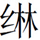
） ⑨71.19。续古逸丛书（张元济等） （17）414。
续汇刻书目（罗振玉） （17）414。
续动物奇观（仲摩照久） （17）523。
续南蛮广记（新村出） （17）523。
续续小品集（开培尔） （17）523。
续藏经目录（京都藏经书院） （17）414。
续儿女英雄传 ⑨289.6。
续纸鱼繁昌记（内田鲁庵）（17）523。
续楷帖三十种（文明书局）（17）414。
维摩 ⑨123.2。
维里尼亚（谢芙琳娜） ⑩415.5；（17）563。
维克多·雨果（马比约） （17）438。
维摩诘经 见《维摩诘所说经》。
维摩诘所说经 ⑤330.6；（17）414。
维摩诘所说经注（鸠摩罗什等） （17）414。
绿天（苏梅） （12）110.9。
绿珠传（乐史） ⑨113.14；⑩149.1，149.2。
绿野仙踪（李百川） ④632.9。
绿色的邸宅（赫德森）⑦209.66。
巢氏诸病源候总论 见《诸病源候论》。
十二画
琳琅秘室丛书（胡珽） ③155.6，501.5；⑥199.15；⑩149.1。
琴赋（嵇康） ⑩84.18。
琴操（张岱） ⑥452.14。
琬琰新录（顾燮光） （17）414。
联想三则（张孟闻） ④176.2。
斯大林传（巴比塞） ⑥564.37。
斯拉夫文学史（凯拉绥克） ⑩463.7；（11）395.14。
斯特林堡全集（小宫丰隆等译） （17）442。
斯莫科季宁的生活（冈察洛夫） （14）54.6。
斯堪的那维亚美术（美国－斯堪的那维亚基金会编） （17）559。
塔什干 见《丰饶的城塔什干》。
塔拉司·布尔巴（果戈理）（13）383.2，383.3，403.5。
越讴 （17）415。
越王台（陶元庆） （11）518.2。
越天乐（近卫直麿） （17）513。
越绝书（袁康） ⑨27.14；⑩30.6；（14）386.1。
越中专录（鲁迅拟编） ⑩68.2。
越画见闻（陶元藻） （17）415。
越中三子诗（陈月泉等） （17）415。
越中金石记（杜春生） （17）415。
越南亡国史（潘福珠） ⑧95.7。
越缦堂日记（李慈铭） ③335.3；④28.24；（17）415。
越中古刻九种（王继香） （17）415。
越缦堂日记补（李慈铭） （17）415。
越缦堂骈体文（李慈铭） （17）415。
越中三不朽图赞 见《明於越三不朽名贤图赞》。
越中文献辑存书（绍兴公报社） （17）416。
越中先贤祠目序例（李慈铭）（17）416。
趋时与复古（鲁迅） （16）470.11。
超人（冰心） （11）394.4。
超现实主义与绘画（布雷东）（17）513。
喜剧（茅盾） （14）310.8。
喜多川歌麿（野口米次郎）（17）513。
博雅（张揖） ⑩298.18。
博异志（郑还古） ⑩134.34。
博物志（张华） ⑨14.26；⑩98.14。
博古叶子（汪道昆、陈洪绶）（13）254.1，285.1，425.2，434.5；（14）370.3；（17）416。
博古酒牌 见《博古叶子》。
博徒别传（柯南·道尔）①553.7。
彭公案（贪梦道人） ④161.12；⑨290.14。
散文诗集（波德莱尔） （17）555。
散曲丛刊（任讷） （17）416。
葬器之考古学的考察（梅原末治）（17）494。
募修孔庙疏（韩复榘） （12）535.3。
葛饰北斋（野口米次郎） （17）514。
董若雨诗文集（董说） （17）416。
董香光山水册（董其昌） （17）416。
董解元西厢记 见《西厢记诸宫调》。
敬告读者（新月社） ④227.61；⑧420.11。
敬乡楼丛书（黄群） （17）416。
蒋南沙华鸟草虫册（蒋廷锡）（17）416。
落花集（王志之） （12）412.5；（17）416。
落凤坡吊庞士元（王士禛）⑨336.1。
营城子（日本东亚考古学会）（17）517。
韩魏公 ⑨131.2。
韩诗外传 见《诗外传》。
朝雾（蹇先艾） ⑥270.52。
朝霞（尼采） （17）417。
朝市丛载（李虹若） （17）417。
朝花夕拾（鲁迅） ③354.2；（12）39.3，269.1，273.1；（16）76.10，132.5，271.3；（17）417。
朝野佥载（张） ④523.7；⑦332.13；⑨81.11，166.5。
《朝花夕拾》插图 （16）27.5。
朝野新声太平乐府（杨朝英）（17）417。
朝鲜排华惨案调查报告（12）319.3。
植物奇观（仲摩照久） （17）514。
植物集说（牧野富太郎） （17）514。
植物形态论（歌德） ①22.34。
植物采集者（米斯巴赫） （17）556。
植物采集法 见《植物采集者》。
植物随笔集（牧野富太郎）（17）514。
植物分类研究（牧野富太郎）（17）514。
植物学大辞典（杜亚泉等）⑩297.6。
植物标本制作法 （17）417。
森三千代诗集 （17）514。
焚火（志贺直哉） （17）417。
棉袍里的世界（高长虹）（11）61.2。
惠特曼诗集 （17）556。
厨川白村全集 （17）514。
厦门通信（二）（鲁迅） （15）647.2。
厦门通信（三）（鲁迅） （11）268.2；（16）5.2。
皕宋楼藏书志（陆心源）⑩62.23，62.24。
“硬译”与“文学的阶级性”（鲁迅）（16）180.6。
雁门集（萨都剌） ②225.2。
雁影斋读书记（李希圣） （17）417。
雄鸡和杂馔（科克多） ⑩493.1，494.3；（17）514。
殖民地问题（吴清友） （13）610.2。
搭客 见《货船》。
“揩油”（鲁迅） （16）395.10。
辍耕录 见《南村辍耕录》。
插图本美代子 见《美代子》。
插图本世界文学史（舍尔）（17）546。
搜神记（干宝） ⑥336.4；⑨15.29，16.36，53.8；⑩99.23；（17）417。
搜神后记（陶潜） ⑨53.9。
“雅典主义”（成仿吾）④313.23。
雅克·图歇传（巴布） （17）532。
雅雨堂丛书（卢见曾） （17）417。
紫箫记（汤显祖） ⑩107.29。
紫色的土地（赫德森）⑦209.66。
斐陀尔·梭罗古勃（科尔诺）（11）398.2。
悲惨世界（雨果） ①270.29；⑦93.3；⑩481.5，481.6；（17）502。
悲盦剩墨（赵之谦） （17）418。
悲剧的哲学（舍斯托夫） （17）516。
棠阴比事（桂万荣） （17）418。
赏奇轩四种 （17）418。
掌录（陈祖范） ⑧222.4。
掌故丛编（故宫博物院） （17）418。
畴人传（阮元） ①213.10。
跋涉（萧军、萧红） （13）225.3。
跋涉的人们（李守章） ④247.2。
跋司珂牧歌调 见《山民牧唱》。
跋司珂族的人们（巴罗哈）⑩428.1。
跋《长春真人西游记》（钱大昕） ⑨174.5。
最后列车（张天翼） （14）316.2。
最后之晚餐（达·芬奇）④461.4。
最后的日记（有岛武郎） （17）514。
最后的叹息（爱罗先珂）⑩215.7，486.3；（17）514。
最后的光芒（契诃夫等） （17）418。
最新生理学 （17）515。
最艺术的国家（鲁迅）（16）370.19。
最近英诗概论（厨川白村）（17）515。
最近的戈理基（昇曙梦）⑩309.9。
最近思潮批判（太田善男）（17）515。
最近思潮展望（加藤朝鸟）（17）515。
最新德日辞典（权田保之助）（17）515。
最后的一张叶子（亨利）（13）447.2。
最后一个乌兑格人（法捷耶夫） ⑩370.7；（17）438，549。
最近俄国文学史略（李沃夫-罗加契夫斯基） ⑩471.2。
最新俄国文学研究（李沃夫-罗加契夫斯基） ⑩471.2；（17）514。
景清刺（张岱） ⑥451.12。
景德传灯录（道原） （17）418。
景德镇陶录（蓝浦、郑廷桂）（17）418。
景定严州续志（郑瑶等） （17）418。
遗老说传（球阳外卷）（郑秉哲） （17）526。
喝茶（鲁迅） （16）401.15。
喻林（徐元太） ⑦104.3。
喻世明言（冯梦龙） ①162.28；⑨212.1，212.2。
喻巴蜀檄（司马相如） ⑨437.6。
啼笑姻缘（张恨水） （17）418。
赋史大要（铃木虎雄） （17）526。
赌咒（鲁迅） （16）363.6。
赌徒（果戈理） （13）377.4。
赌博者（陀思妥耶夫斯基）（17）526。
赌徒日记（章廷谦） （12）147.2。
赌棋山庄文集（谢章铤）⑩159.5。
赌棋山庄全集（谢章铤） （17）418。
赌棋山庄诗集（谢章铤）⑨276.7。
黑屋（影片） （16）559.6。
黑猫（爱伦·坡） ②248.19。
黑僧（契诃夫） （12）317.1。
黑旗（斯特林堡） （17）510。
黑马理（巴罗哈） ⑦203.13。
黑心符（于义方） ⑧134.7。
黑衣骑士（影片） （16）564.5。
黑假面人（安德烈夫） （11）458.2；（15）554.5；（17）418，510。
黑女求神记（萧伯纳） （17）530。
黑奴吁天录（斯陀） （11）331.6。
黑白画中的动物（达格利什）⑦355.5；（17）531。
铸剑（鲁迅） ②453.17；（12）27.1；（16）19.1。
铸鼎馀闻（姚福均） （17）418。
短裤党（蒋光慈） （14）310.3。
短篇小说三篇（许钦文）（15）563.9；（17）418。
短篇小说选集（鲁迅） ⑦412.1。
智识过剩（鲁迅） （12）421.8；（16）391.12。
等父亲回来 见《母与子》。
等不等观杂录（杨文会） （17）419。
答问者（开培尔） ⑩311.2。
答客难（东方朔） ⑨428.18。
答“兼示”（鲁迅） （16）406.18。
答释难曰见《答释难宅无吉凶摄生论》。
答二郭三首（嵇康） ⑩83.13。
答世界社信（鲁迅） （16）619.3。
答有恒先生（鲁迅） （16）38.1。
答吴稚晖书（俞复） ①320.11。
答鲁迅先生（梁实秋） ④254.5。
答《戏》周刊编者信（鲁迅）（16）488.11。
答国际文学社问（鲁迅）（13）37.7。
答曹聚仁先生信（鲁迅）⑥153.8；（13）199.4；（16）470.2。
答中学生杂志社问（鲁迅）（16）280.11。
答《一夫多妻的新护符》（周建人）⑦81.2；⑧475.2。
答释难宅无吉凶摄生论（嵇康） ⑩85.27。
答章周二先生论一夫多妻（陈百年） ⑧476.4。
答杨邨人先生公开信的公开信（鲁迅） （13）76.1；（16）432.7。
答徐懋庸并关于抗日统一战线问题（鲁迅） （14）134.6，137.5，145.4，149.1，170.1，396.3；（16）619.2。
嵇康集 ⑥454.30；⑩21.1，22.2，22.3；（12）289.4；（13）552.2，552.3；（15）85.1，181.2，428.1，518.1；（16）640.2；（17）418。
嵇中散集 见《嵇康集》。
《嵇康集》考（鲁迅） （11）193.5。
《嵇康集》序（鲁迅） （15）519.3。
《嵇康集》校勘记（鲁迅）⑩82.4。
程氏家塾读书分年日程（端礼） （17）419。
稀松的恋爱故事（张天翼）（14）217.1，520.1。
鹅掌女皇的烤肉店（法朗士）（17）533。
傅青主自书诗稿墨迹（傅山）（17）419。
集外集（鲁迅） （13）179.6；（17）419。
集灵记（颜之推） ⑨15.30，60.1。
集外集拾遗（鲁迅） （16）514.12。
集古今佛道论衡实录（道宣）（17）419。
《集外集》编者引言（杨霁云）（13）310.1，364.4，394.1。
集团社会学原理（圆谷弘）（17）516。
集神州塔寺三宝感通录（道宣） （17）419。
焦氏易林 见《易林》。
焦炭，人们和火砖 见《枯煤，人们和耐火砖》。
粤讴（招子庸） （17）419。
粤雅堂丛书（伍崇曜） （17）419。
奥德赛（荷马） ⑥111.36；⑨28.19。
奥罗斯科 （17）547。
奥罗夫夫妇（高尔基） （13）529.4。
奥勃洛摩夫（冈察洛夫）（14）129.1；（17）439。
奥古斯特·雷诺阿 （17）533。
奥里弗·克伦威尔（卢那察尔斯基） ⑦376.24。
奥布里·比亚兹莱（小鲁道夫·迪波尔德） （17）533。
奥布里·比亚兹莱的艺术（17）531。
奥斯特罗乌莫娃·列别杰娃 ⑦442.10；（12）315.4；（17）554。
奥·王尔德的《累丁狱中的歌》插画（麦妥莱勒） （17）554。
街头孩子（齐勒） （17）548。
御纂七经 ⑥63.18。
御制全唐诗 见《全唐诗》。
御香缥缈录（德龄） ⑥626.5。
御批通鉴辑览 ⑥63.18。
循园金石文字跋尾（范鼎卿） （17）419。
舒铁云手札（舒位、王良士） （17）419。
禽虫吟（阿坡里耐尔） ⑦210.74，210.76；⑩524.6；（13）470.2；（17）511，535。
禽兽世界（影片） （16）280.8。
释人（孙星衍） （11）331.7。
释名（刘熙） ⑥110.29；⑨359.16；（17）420。
释神（姚东升） （11）464.3。
释滞（虞喜） ⑩28.5。
释疑（虞喜） ⑩28.5。
释藏 见《佛藏》。
释私论（嵇康） ⑩84.25。
释迦谱（僧祐） （17）420。
释摩诃衍论（龙树） （17）420。
释迦八相成道记 ⑨123.2。
释迦如来成道记注（王勃、道诚）（17）420。
释迦如来应化事迹（永珊）（17）420。
释难宅无吉凶摄生论（阮德如） ⑩85.27。
腊叶（鲁迅） ②225.1。
腓立普短篇集（堀口大学译） ⑩507.2。
鲁迅传（增田涉） （14）193.3，345.2，345.3。
鲁迅论（李何林） ④9.11；（12）236.4。
鲁迅像（曹白） ⑧443.1；（14）51.2；（16）599.5。
鲁迅像（梁以俅） （12）448.1；（16）401.12。
鲁迅像（罗清桢） （12）515.1。
鲁迅像（郝力群） （14）125.2；（16）619.1。
鲁拜集（莪谟·伽亚谟） ⑩318.10；（17）455。
鲁迅生平 见《鲁迅评传》。
鲁迅先生（张定璜） ⑦70.8；（11）50.2。
鲁迅全集（井上红梅编译） （12）305.4，482.16；（14）227.2；（17）526。
鲁迅批判（李长之） （13）485.1；（17）420。
鲁迅启事 （15）563.4。
鲁迅评传（斯诺） （12）481.1；（16）410.3。
鲁迅画像（陈光宗） （16）395.1。
鲁迅选集（佐藤春夫、增田涉编） （13）591.1；（14）328.1，357.2；（17）526。
鲁迅断想（龟井胜一郎） （13）545.3；（14）372.3。
鲁迅在广东（钟敬文） ③470.2；④116.19；（12）69.3；（13）291.1。
鲁迅在师大（照片） （12）352.2。
鲁迅自选集 ④470.1；（12）355.2，358.3，396.2；（13）40.8，498.1；（14）42.2；（16）341.1，363.2；（17）420。
《鲁迅批判》序（李长之） （13）485.2。
鲁迅序跋集（王冶秋编） （14）70.3，91.1。
鲁迅翁之笛（陈静生） ⑤432.9；（12）493.1。
鲁迅三十年集（许广平编） ⑧520.1。
鲁迅与高尔基（魏猛克） ⑧381.8。
鲁迅小说选集（日本文求堂） （12）305.4，309.2。
鲁迅书信选集（梁耀南编） （17）420。
鲁迅先生语录（雷白文） （14）164.2。
鲁迅先生病况（曾） （14）145.2。
鲁迅创作选集（田中庆太郎编译） （12）305.4；（17）526。
鲁迅杂感选集（瞿秋白编） （12）383.3，386.1，398.1，398.2，482.15；（14）99.2；（16）390.5；（17）420。
鲁迅论文选集（梁耀南） （17）420。
鲁迅译著目录（鲁迅） （16）312.1。
鲁迅的《两地书》（杨邨人） （13）26.2。
鲁迅炭笔画像（陶元庆） （11）527.1；（15）622.3。
鲁迅炭笔画像（司徒乔） （16）72.5。
鲁迅愿作汉奸（思） （13）106.10。
鲁滨孙漂流记（笛福） ⑤314.4；⑧458.3。
鲁迅大开汤饼会（杨邨人） ④649.11。
鲁迅先生的笑话（ZM） ③191.1。
鲁迅先生的演讲（纪录稿） （13）291.1。
《鲁迅传》中的误谬（郭沫若） （14）345.3。
鲁迅遇见祥林嫂（曹白） （14）57.1。
鲁迅的寂寞的影子（乌丸求女） （14）370.2。
鲁迅与新杂志《文学》（井上红梅） （14）305.2。
鲁迅与摩勒伊爱斯（正宗白鸟） （14）370.1。
鲁迅氏之《中国小说史略》（德富山峰） ④483.7。
鲁迅创作中表现之人生观（李长之） （13）497.2。
鲁迅和景宋的通讯：“两地书”（李长之） （13）26.1。
鲁迅在中国文学上的地位——给捷克译者写的几句话（冯雪峰） （14）390.3。
然而地球在转动（爱伦堡） （17）440。
敦交集（魏仲远） （17）420。
敦煌零拾（罗振玉） （17）420。
敦艮斋遗书（徐润第） （17）420。
敦煌劫余录（陈垣） （12）334.2；（17）421。
敦煌石室碎金（罗振玉） （17）421。
敦煌石室真迹录（王仁俊） （17）421。
蛮女恨（影片） （16）298.2。
蛮岛黑月（影片） （16）564.12。
蛮性之遗留（穆尔） （17）421。
痛史（乐天居士） ③156.13；⑤619.2。
童话六篇（周作人） （15）181.1。
童话研究（周作人） （15）8.4。
童话略论（周作人） （15）81.2。
童谣及童话之研究（松村武雄） （17）516。
愧郯录（岳珂） （17）421。
阑勃罗（斯洛伐茨基） ①118.162。
善谑集（天和子） ⑨70.17。
善女人传（彭际清） （17）421。
善女人行品（施蛰存） （13）206.2。
善政和恶政（鹤见祐辅） （16）28.9。
普列汉诺夫论（Я·雅各武莱夫） ⑩348.7；（17）450。
普列汉诺夫选集 （17）450。
道言 ⑨358.9。
道情（郑燮） ④28.23；⑤500.5。
道藏 ⑧139.4；⑨173.3。
道德经 见《老子》。
道山清话 ⑨17.39。
道宣律师天人感通录（道宣） （17）421。
道光十八年进士登科录（钱恂） （17）421。
道德的或非道德的艺术？（布雷特） （17）559。
遂初堂书目（尤袤） ⑧129.1；⑩60.4；（16）641.6；（17）421。
滞欧印象记（本间久雄） （17）523。
湖雅（汪曰桢） ①213.12；（17）421。
湖州丛书（陆心源） （17）421。
湖海楼丛书（陈春） （17）421。
湖北先正遗书（卢靖） （17）421。
湖唐林馆骈体文（李慈铭） （17）421。
湘中怨 见《湘中怨辞》。
湘中怨辞（沈亚之） ⑨81.5；⑩134.27，134.32。
湘民血泪（湖南灾民） ①365.6。
渺茫的西南风（刘大杰） （17）422。
温良（武者） ③68.2。
温泉记（秦醇） ⑨113.19；⑩155.10。
温庭筠诗集 （17）422。
温涛木刻集 （17）422。
温飞卿诗集笺注（温庭筠）（17）422。
温德米尔夫人的扇子（王尔德） ⑦237.6。
溃灭 见《毁灭》。
“滑稽”例解（鲁迅） （16）406.15。
滑稽故事（左琴科） （13）366.3，400.3，415.1，529.1。
渡河与引路（鲁迅） ⑧449.3。
游击队（陈烟桥） （13）55.1。
游仙窟（张） ⑦331.1；⑩92.18，92.19；（11）521.2，521.3；（12）47.7，57.6；（17）422。
《游仙窟》序（鲁迅） （16）31.2。
游街惊梦（影片） （15）537.3。
游仙诗一首（嵇康） ⑩83.8。
寒山诗（寒山子） （17）422。
寒家再毁记（章士钊）③206.16。
富人之家（影片） （16）460.8。
富强丛书 ⑤344.7。
窗户（波特莱尔） ⑩263.2。
谟哜黎（莱蒙托夫） ①115.126。
禅真后史（方汝浩） （12）230.4。
谢沈传（房玄龄） ⑩16.3。
谢小娥传（李公佐） ⑨91.2；⑩117.19。
谢宣城集（谢朓） ⑥454.32。
谢沈后汉书（鲁迅辑） ⑩15.1，15.2；（15）18.1；（17）422。
谢承后汉书（鲁迅辑） ⑩7.1；（15）18.1，46.2，55.1，56.5；（17）422。
谢宣城诗集（谢朓） （17）422。
谢谢毛毛雨（黎锦晖） ⑤506.5。
谢氏后汉书补遗（谢承） （17）423。
谣言世家（鲁迅） （16）405.9。
强盗 见《席勒剧本〈群盗〉警句图》。
强制压抑之力（厨川白村） ⑩272.4。
《强盗》初版原序（杨丙辰译）（11）603.1。
隔膜（鲁迅） （16）459.6。
隔江斗智 ⑨142.2。
隔帘花影 ⑨195.15。
登科记考（徐松） ⑩91.10。
登龙术拾遗（鲁迅） （16）396.15。
登错的文章（鲁迅） （16）593.6。
“骗月亮”（鲁迅） （16）519.3。
编完写起（鲁迅） （11）75.1。
编次郑钦说辨大同古铭论（李吉甫） ⑩104.1。
编印中国文学珍本丛书缘起（施蛰存） ⑧439.3。
缘份（亲法文艺会） （17）455。十三画
瑜伽师地论 （17）423。
塌鼻男子（罗丹） ⑧493.2。
鼓掌绝尘（金木山人） （12）230.5；（17）423。
蓝色的花朵（诺瓦里斯） （17）492。
幕府燕闲录（毕仲询）⑨112.10。
蒿里遗珍（罗振玉） （17）423。
蓄道德，能文章（冰心）（11）423.11。
蒲力汉诺夫与艺术问题（瓦勒夫松） ⑩349.8。
蒙求（李瀚） ⑨184.7。
蒙田论（纪德） （17）455。
蒙派尔诺（米歇尔） （17）455。
蒙田随想录（关根秀雄译）（13）513.1，539.1；（17）455。
楔形文字与中国文字之发生及进化 （17）554。
禁毁书目（姚观云） （13）394.4。
禁用和自造（鲁迅） （16）401.15。
楚辞（刘向辑） ⑦140.5；（13）29.1。
楚汉春秋（陆贾） ⑨439.20。
楚辞章句（王逸） ⑨28.16。
楚辞辨证（朱熹） ⑨92.15；⑩115.10。
楚州金石录（罗振玉） （17）423。
楚辞天问笺（丁晏） （17）373。
楷帖四十种（文明书局） （17）423。
楞伽经三种译本 （17）423。
楞伽阿跋多罗宝经 （17）423。
槐庐丛书（朱记荣） （17）423。
楼炭经 （17）423。
赖少麒版画集 见《少其版画集》。
甄异传（戴祚） ⑨15.29。
蜃中楼（李渔） ⑨93.22。
感应传（王延秀） ⑨15.30。
感想笔记（波德莱尔） （17）519。
《感旧以后（上）》（鲁迅）（16）405.5。
《感旧以后（下）》（鲁迅）（16）405.5。
碑别字（罗振鋆） （17）423。
碑别字补（罗振玉） （17）423。
碎话（鲁迅） （15）598.8。
雷雨（曹禺） （17）519。
雷峰塔倒掉的原因（胡也频）①205.2。
零（赵其文） （11）473.3。
零食（鲁迅） （16）460.7。
零露集（温佩筠译注） （13）366.2。
雾社（佐藤春夫） （17）528。
摄影年鉴 （17）480。
搬家（凌叔华） ④218.11。
颐志斋四谱（丁晏） （17）423。
颐志斋感旧诗（丁晏） （17）423。
虞书 ⑨367.5。
虞初周说（虞初） ⑨13.16。
虞预晋书（鲁迅辑） ⑩17.1。
虞世南汝南公主墓志铭（虞世南）（17）424。
鉴略（王仕云） ①230.7；②275.18；⑥143.2。
鉴赏画选（藤村耕一） （17）529。
睡（胡山源） ⑥268.26。
睡着了的上海（莉莉·珂贝）（13）182.1。
歇斯底里（弗洛伊德） （17）449。
暗云（王独清） ⑥480.8。
路（茅盾） （17）424。
路史（罗泌） ⑨92.16；⑩115.9。
路工之歌（江岳浪） （17）424。
跳蚤（阿坡里耐尔） ⑩523.1。
跳蚤歌（歌德） ⑤222.5。
蜈蚣船（澎岛） （17）424。
蜕庵诗集 见《张蜕庵诗集》。
《蜕龛印存》序（周作人）（15）233.1。
罪 见《萨多姆城的结局》。
罪与罚（陀思妥耶夫斯基）③165.13；（17）424，519。
罪恶的黑手（臧克家） （17）424。
蜀碧（彭遵泗） ⑤251.11；⑥180.12；（17）424。
蜀龟鉴（刘景伯） ⑥180.14；（17）424。
蜀王本纪（扬雄） ⑨27.12。
嵊县志 （17）424。
嵩山文集（晁说之） ⑥200.19；（17）424。
嵩阳石刻集记（叶封） （17）424。
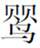
传 见《莺莺传》。锦西厢（周恒综） ⑨92.12。
锦绣天（影片） （16）441.3。
锦裙记（陆龟蒙） ⑧133.5。
锦钱馀笑（郑思肖） （17）424。
雉鸡的烧烤（佐藤春夫）（11）402.2。
辞林（金泽庄三郎） ⑩289.19；（17）519。
辞通（朱起凤） （17）424。
辞源（陆尔奎等） ③429.4；⑥114.53。
辞“大义”（鲁迅） （12）72.10；（16）38.2。
辞顾颉刚教授令“候审”（鲁迅） （16）35.1。
筠清馆法帖（吴荣光） （17）424。
筠清馆金石文字（吴荣光）（17）425。
简字举例（陈光尧） ⑧489.2。
简明百科辞典（汉默顿等）（17）537。
筦子 ⑨378.4。
颓唐集（张慧） （13）63.3。
催眠术 见《电术奇谈》。
毁灭（法捷耶夫） ④224.39；⑤491.4，536.4；⑥20.2，298.9；⑧502.1，504.2；⑩358.19，369.1，370.8，370.9；（12）237.2，259.4，300.3，312.1，450.3，472.2，523.2；（16）221.3，254.5，276.12，308.9，554.8；（17）425，527，553。
《毁灭》代序（弗理契） ⑩369.4。
鼠璞（戴埴） ⑨17.40。
微雨（李金发） （17）425。
愈愚录（刘宝楠） （17）425。
鲍氏集 见《鲍明远集》。
鲍明远集（鲍照） ⑧92.1，92.2，93.4，93.5；（15）342.3；（17）425。
鲍罗廷脱险记（安娜·斯特朗） （17）451。
 的心（爱罗先珂） （15）447.6。
的心（爱罗先珂） （15）447.6。
解颐（杨松玢） ⑨70.11。
解辫发（章炳麟） ⑥581.10。
解寒食方（徐叔向） ③547.42。
解寒食散方（徐叔和） ③547.42。
解放了的堂·吉诃德（卢那察尔斯基） ④103.8；⑦425.1，426.11；⑩335.20；（12）370.4，523.7；（13）97.1，98.4，102.1，121.3，578.2；（16）202.4，390.3，410.2，416.18；（17）425，534，569。
解放了的董·吉诃德 见《解放了的堂·吉诃德》。
解放之普洛美迢斯（雪莱） ①112.104。
痴华鬘（僧伽斯那） ⑦104.1；（11）533.1；（17）425。
痴人之爱（谷崎润一郎） （17）426。
《痴华鬘》题记（鲁迅） （15）622.6。
靖节先生集 见《陶靖节集》。
新书（贾谊） （17）426。
新生（岛崎藤村） （17）426。
新地（汉姆生） ⑦348.9。
新论（桓谭） ⑨11.2。
新序（刘向） ⑨33.9，392.23。
新药（鲁迅） （12）393.1；（16）379.2。
新语（陆贾） ⑨405.1；（17）426。
新路（崔万秋） （17）426。
新木刻（萨拉曼） （13）515.7；（17）553。
新方言（章炳麟） ④38.8。
新世说（易宗夔） ⑨72.34。
新机论（弗兰西斯·培根） ①41.60。
新传统（赵家璧） （14）146.1；（17）426。
新字典（陆炜士、高梦旦等） （17）426。
新村正（南开新剧团） （15）372.2。
新武术（马良） ⑧104.4。
新唐书（欧阳修等） ⑦331.5；⑩7.3。
新娘茶（李桦） （13）405.2。
新教训（记者） ①146.5。
新灌园（冯梦龙） ⑨213.5。
新艺术论（波格丹诺夫） ④220.22。
新艺术论（茂森唯士） ⑩327.8。
新艺术论（卢那察尔斯基） ⑩335.21。
新石头记（吴沃尧） ⑨303.11。
新列国志（冯梦龙） ⑧213.17。
新兴文学（下中弥三郎） ⑩358.22。
新约全书 ②320.12。
新村杂感（武者小路实笃） ⑩211.6。
新的世故（鲁迅） ③415.2；（15）652.7。
新的粮食（纪德） （17）520。
新秋杂识（鲁迅） （16）396.15，400.1。
新俄纪行（福格勒-沃尔普斯维德） （17）557。
新俄画选（鲁迅编） ⑦364.1；（13）187.3；（16）185.15；（17）427。
新精神论（艾利斯） （17）553。
新潮文库（东京新潮社） （17）521。
新人与旧人（奥里约夏） （17）520。
新人之家庭（影片） （15）652.2。
新月的态度（新月社） ④218.7，227.61。
新文学大系 见《中国新文学大系》。
新文学概论（本间久雄） ③463.6；（17）427。
新旧约全书 见《圣经》。
新兴文学集 （17）521。
新罗马传奇（梁启超） ①239.4。
新诗歌作法（森山启） （17）427。
新词汇辞典（服部嘉香、植原路郎） （17）520。
新法国文学（广濑哲士） （17）520。
新俄小丛书（昇曙梦） （17）520。
新俄小说集 见《苏联作家二十人集》。
新独和辞书 见《新德日辞书》。
新洋画研究（外山卯三郎） （17）521。
新儒林外史（杨邨人） ④650.12；⑤391.4；（12）420.3。
新德日辞书 ⑩289.18。
新疆访古录（王树枬） （17）428。
新艺术的取得（板垣鹰穗） （17）520。
新文学运动史 见《中国新文学运动史》。
新兴文学全集（下中弥三郎编） ⑩358.22，415.6；（17）522。
新兴法国文学（比利） （17）522。
新进作家丛书 （17）521。
新时代与文艺（金子筑水） ⑩308.5。
新时代的预感（片上伸） ⑩469.1；（16）132.7。
新郑古器图录（关百益） （17）428。
新话宣和遗事 （17）428。
新俄美术大观（昇曙梦） ⑦366.22；（17）520。
新唐书·艺文志（欧阳修等） ⑥336.2；⑩7.3。
新广东的新女性（许广平） （11）170.1。
新时代的放债法（鲁迅） （16）38.7。
新性道德讨论集（章雪琛） （17）428。
新俄文化之研究（藏原惟人） （17）520。
新唐书·文艺传序 ⑩134.28。
新潮社文艺丛书 （11）445.3。
新式德语自修基础（藤崎俊茂） （17）521。
新俄文学之曙光期（昇曙梦） ⑦316.19；（17）520。
新俄文学中的男女（库尼兹） （17）428。
新俄的演剧和跳舞（昇曙梦） ⑦206.42；（17）499。
新月社批评家的任务（鲁迅） ⑧421.12。
新俄小说家二十人集 见《苏联作家二十人集》。
新俄罗斯文学的曙光期 见《新俄文学之曙光期》。
新俄新小说家三十人集（荷涅克译） ⑩387.31，419.43；（12）269.3；（17）565。
新刊补注铜人腧穴针灸图经（王惟一） （17）428。
《新俄新小说家三十人集》附录“关于作者的笔记” ⑩386.30，387.37，416.10，419.42。
韵府群玉（阴幼遇） ③409.11。
意林（马总） ⑩30.3；（17）428。
“意表之外”（鲁迅） （16）38.6，38.7。
意大利文艺复兴时期的美术（西蒙兹） （17）483。
雍熙乐府（郭勋） （17）428。
雍正朱批谕旨 ⑥63.19。
慎子（慎到） （17）428。
煔希（雪莱） ①112.104。
粮食（凯尔升） （12）351.3；（13）360.3；（14）61.7；（17）428，571。
慈闱琐记（孙仁述） （17）428。
慈恩寺三藏法师传 见《大慈恩寺三藏法师传》。
满洲画帖（石田吟松） （17）516。
满洲朝鲜考古旅行记（高桥健自、石田茂作） （17）517。
源流篇（鲁迅辑） ⑩72.7。
塞尚（迈耶尔-格拉夫编） （17）555。
塞尚大画集（硲伊之助等编） （17）443。
窦生传（冯梦桢） ⑨263.12。
窦氏联珠集（褚藏言、窦常等） （17）428。
愙斋集古录（吴大澂） （17）429。
福建乡谈（林传甲） ⑧462.3。
福楼拜全集（伊吹武彦等译） （17）450。
福尔摩斯包探案（柯南·道尔） ④476.3。
福特呢还是马克思？（瓦尔海） （17）449。
褚民谊踢毽子（影片） ⑤386.6。
裸麦田边（阿克耶尔） ⑦221.168。
群鬼（易卜生） ⑥266.13。
群经音辨（贾昌朝） （17）429。
嫉妒 见《妒误》。
叠山集（谢枋得） （17）429。
缢吏之缳（裴多菲） ①120.179。
剿匪伟绩（影片） （16）549.3。
十四画
静物画选集（北原义雄编） （17）524。
静静的顿河（萧洛霍夫） ⑥530.16；⑦379.1，379.4；（12）259.1，266.1；（13）492.6；（16）198.4；（17）429，524，560，571。
碧血幕（包天笑） ⑨304.24。
碧桃花下（胡山源） ⑥268.26。
碧声吟馆谈麈（许善长） （17）429。
瑶山艳史（影片） ⑤311.6。
嘉尔曼（影片） （16）146.5。
嘉业堂丛书（刘承傒） （13）96.2。
嘉兴藏目录（楞严经坊编） （17）429。
嘉泰会稽志（施宿） ③358.39；⑧68.14。
嘉定屠城记略（朱子素） ①240.10；⑤543.5；⑥604.8。
嘉业堂刊印书目 （17）429。
嘉业堂丛书书目 （13）96.2。
嘉泰会稽志及宝庆续志（施宿、张淏） （17）429。
蔷薇（史密斯） ⑦209.67。
摹刻雷峰塔砖中经 （17）429。
蔡中郎文集（蔡邕） ⑥450.4；（12）147.7；（17）429。
蔚蓝的城（阿·托尔斯泰等） ⑥574.3；（16）142.10。
模范文选（北京大学国文教授会编） （11）370.3；（17）429。
模范小说选（谢六逸） ⑦460.5。
模范最新世界年表（三省堂） （17）524。
槟榔集（向培良） ⑦284.6；（11）61.2。
歌麿（龚古尔） （17）524。
歌之书（海涅） （17）536。
歌德批判（大塚金之助等译） （17）440。
《歌谣周刊》封面图案（鲁迅） （15）506.3。
歌德的书信与日记（歌德） （17）543。
歌德游憩素描小集（汉斯·瓦尔编） （17）543。
舆地志（顾野王） ⑧67.6。
舆地纪胜（王象之） ⑩116.12；（17）430。
舆论与群众（塔尔德） （17）527。
摭遗（刘斧） ⑩154.1。
裴彖飞集 见《裴多菲集》。
裴多菲集 （12）193.6；（16）142.9；（17）430，556。
裴多菲像（麦克洛斯） （12）249.2。
裴多菲的诗（鲁迅译） ⑦219.151；（15）550.3。
裴彖飞诗论（籁息） ⑦219.149；⑩457.2。
裴多菲·山陀尔（冯至） ⑦219.150。
睽车志（郭彖） ⑨112.11。
暧昧（何家槐） （12）370.1；（13）206.2。
鹖冠子 ⑨380.14。
蝉与晚祷（冯至） ⑥268.33。
舞赋（傅毅） ⑨392.22。
算账（鲁迅） （16）465.7。
管子（管仲） （17）430。
管蔡论（嵇康） ③549.57；⑩84.25。
僧世说（颜从乔） ⑨72.31。
鼻子（果戈理） ⑥288.3；⑩515.1；（13）273.6；（16）465.12。
鼻子（芥川龙之介） ⑩247.36，250.1，251.3；（15）433.1。
鼻烟四种（刘声木） （17）430。
鼻子及其他（果戈理） （13）598.3。
遯斋闲览（陈正敏） ①320.13。
遯庵古镜存（柯昌泗） （17）430。
遯庵秦汉瓦当存 （17）430。
疑年录汇编（张惟骧） （17）430。
豪夫童话（权田保之助译） （17）448。
豪语的折扣（鲁迅） （12）416.8；（16）395.3。
瘦猫（法朗士） （17）539。
廖坤玉的故事（陈铁耕） （13）143.2，169.2。
廖仲潜先生的《春心的美伴》（芳子） （11）57.10。
熔铁炉（里亚希柯） ⑩416.8；（13）367.5。
精忠全传（邹元标） ⑨159.32。
精忠说岳全传（钱彩） ⑤578.7。
精神分析入门（弗洛伊德） （17）524。
精神独立宣言（罗曼·罗兰等） ⑩290.27。
精神与爱的女神（高长虹） （17）430。
漱石全集（夏目漱石） （17）525。
漱石近什四篇（夏目漱石） ⑩245.12。
漫与（鲁迅） （16）401.14。
漫云（吕沄沁） （17）430。
漫骂（鲁迅） （13）13.2；（16）432.11。
漫读记（内田鲁庵） （17）523。
漫画《哥儿》（近藤浩一路） （17）525。
漫谈“漫画”（鲁迅） （16）524.1。
漫画五十帧（比尔博姆） （17）542。
漫画西游记（宫尾重男） （17）525。
漫画《我是猫》（近藤浩一路） （17）525。
漫画沙龙集（星野辰男） （17）525。
漫画的满洲（池部钧等） （17）525。
漫游兽国记（影片） （16）530.3。
漫画只野凡儿 （17）525。
漫画而又漫画（鲁迅） （16）524.1。
漫游随录图记（王韬） ⑧413.1。
赛宁 见《沙宁》。
寡妇主义（鲁迅） （15）593.7。
察拉图斯忒拉这样说 见《扎拉图斯特拉如是说》。
蜜蜂（张天翼） ④553.2。
“蜜蜂”与“蜜”（鲁迅） （16）385.5。
谭意歌传（秦醇） ⑩155.9。
肇论（僧肇） （17）430。
肇论略注（德清） （17）430。
褐色恐怖（博心译） ⑦426.10。
熊（契诃夫） ⑦219.153。
熊之生长 （14）73.5。
缪篆分韵（桂馥） （17）431。
十五画
璇玑钤 ⑨367.4。
增补红楼（嫏嬛山樵） ⑨249.17。
聪明误（格里鲍耶陀夫） （17）565。
蕙的风（汪静之） ①427.2。
蕙櫋杂记（严元照） ⑧220.7；（17）431。
蕙櫋琐记 见《蕙櫋杂记》。
蕉廊脞录（吴庆坻） （17）431。
横阳札记（吴承志） （17）431。
樱花（萧军） （13）356.1，380.2，549.1。
樱花集（章衣萍） （17）431。
樱桃园（契诃夫） （12）188.2。
樊南文集补编（李商隐） （17）431。
樊南文集笺注 见《李义山诗文集笺注》。
樊谏议集七家注（樊绍述） （17）431。
飘渺的梦（向培良） ⑥273.76；（17）431。
飘渺的梦及其他 见《飘渺的梦》。
醉乡记（王绩） ⑨81.4。
醉醒石（东鲁古狂生） ①164.43；⑨124.11，213.10；（17）431。
醉红轩笔话（俞达） ⑨276.11。
题名 见《浙江同乡留学东京题名》。
题《呐喊》（鲁迅） （16）368.2。
题《彷徨》（鲁迅） （16）368.2。
题《花月痕》（谢章铤） ⑨276.7。
“题未定”草（一——三）（鲁迅） （13）478.1；（16）540.5。
“题未定”草（五）（鲁迅） （13）547.6；（16）549.9。
题《新语林》诗（珂贝） （13）181.1。
题在瓦·山夫人的纪念册上（裴多菲） ⑦252.19。
题《凯绥·珂勒惠支版画选集》赠季巿（鲁迅） （16）615.6。
暴躁人（契诃夫） （13）357.3；（16）514.7。
暴帝情鸳（法国影片） （13）560.4。
暹罗野夫（影片） （16）107.1。
影（李霁野） ⑥274.83；（12）103.2；（17）431。
影（普鲁斯） （11）394.9。
影（影片） （16）44.14。
影的告别（鲁迅） ②170.1。
影印凌烟阁功臣图 见《凌烟阁功臣图象》。
踢（鲁迅） （16）395.8。
蝎尾毒腺之组织学的研究报告 （17）432。
蝙蝠祟（影片） （16）275.7。
墨子（墨翟） ⑨379.10。
墨经（晁贯之） ⑧91.1。
墨池编（朱长文） （17）432。
墨经解（张惠言） （17）432。
墨子闲诂（孙诒让） （17）432。
墨林快事（安世风） ⑧89.9。
墨经正义 见《墨经正文解义》。
墨经正文解义（邓云昭） ⑧91.1；（15）158.2；（17）432。
墨巢秘笈藏影（李墨巢） （17）432。
墨巢秘玩宋人画册（李墨巢） （17）432。
墨憨斋传奇定本十种（冯梦龙） ⑨213.5。
 田诚一墓记（鲁迅） （16）530.10。
田诚一墓记（鲁迅） （16）530.10。
“靠天吃饭”（鲁迅） （16）544.1。
稽神录（徐铉） ⑨111.2。
稷下派之研究（金受申） （17）432。
稻草人（叶圣陶） ⑩439.8。
德国文学（东京帝国大学） （17）502。
德文学之精神 （17）432。
德雷福斯事件（大佛次郎） （17）447。
德国的浪漫派（勃兰兑斯） （12）528.11；（17）502。
德国，德国至上（图诃尔斯基） （17）539。
德国近时版画家（普菲斯特尔） （17）539。
德语基本单词集（三井雄作） （17）502。
德国的孩子们饿着（凯绥·珂勒惠支） ⑥497.32。
德语基本单词四千字（小出直三郎等） （17）502。
德意志出版社小说丛书 （11）397.6。
德国形式，对德国艺术之观察（富克斯） （17）538。
德米特里·尼克拉耶维奇·卡尔多夫斯基（卡尔多夫斯基） （17）566。
滕王外传（乐史） ⑨113.16；⑩149.5。
摩洛哥（影片） （16）267.2。
摩诃波罗多（古印度） ①104.8。
颜氏家训（颜之推） ⑤374.4；⑥35.9；⑨17.41；（17）432。
颜鲁公书裴将军诗卷（颜真卿） （17）432。
懊悔（台静农） （11）514.2。
翦拂集（林语堂） ③608.16。
潜夫论（王符） （17）432。
潘多拉（歌德） （17）555。
潘彼得 见《开新顿公园里的潘·彼得》。
澄江堂遗珠（芥川龙之介） （17）527。
鹤山文钞（魏了翁） （17）432。
畿辅丛书（王灏） （17）433。
十六画
燕子笺（阮大铖） （13）341.1，371.1。
燕丹子 ⑥337.9；⑨14.22。
燕曲集（斯特林堡） （17）527。
燕山外史（陈球） ⑦333.19。
燕寝怡情 （17）433。
燕下乡脞录（陈康祺） ⑨247.4。
燕子与蝴蝶（戈木列支奇） （11）394.9。
蕗谷虹儿画选（鲁迅编） ⑦344.1；（13）547.1；（17）433。
翰苑群书（洪遵） ⑩136.47。
翰府名谈（刘斧） ⑩154.1。
颠狗病（伊巴涅思） （11）410.3，420.1。
《颠狗病》译后记（周作人）（11）421.2。
橄榄（郭沫若） ③470.6。
整顿学风电（张之江） ③287.7，355.15。
醒世恒言（冯梦龙） ①163.31；（17）433。
醒世姻缘（西周生） （11）455.1；（17）433。
霍玉 见《霍小玉传》。
霍小玉传（蒋防） ⑨16.37，91.2；⑩106.18。
霍善斯坦因论（卢那察尔斯基） （12）158.5。
赠《新语林》诗及致《新语林》读者辞（珂贝） （16）465.6。
鹦哥故事 （13）130.3。
默庵集锦（伊秉绶） （17）433。
镜花缘（李汝珍） ①366.2；⑨263.15；⑩166.21。
穆天子传 ⑤513.5；⑨18.45；（17）433。
儒术（鲁迅） （13）121.2，126.2；（16）454.16。
儒林外史（吴敬梓） ④311.5；⑥229.6，542.8；⑦143.22；⑨234.5，234.6；（17）433。
儒学警悟（俞鼎孙、俞经）（17）433。
衡论（TY） ①206.8。
膳夫经手录（杨煜） ③358.33。
雕版画集（郑振铎拟编）（13）106.4。
邂逅（迦尔洵） ⑩472.4。
磨坊文札（都德） （17）433。
磨刀石农庄（潘菲洛夫） ⑩419.44；（12）237.1；（17）535。
瘸子王二的驴（汪敬熙） ⑥266.15。
麈余（谢肇淛） （17）433。
辨正论（法琳） （17）433。
辨疑志（陆长源） ⑨17.40。
辩证法（塞姆可夫斯基编）（17）480。
辩“文人无行”（鲁迅） （16）390.4。
辩证法读本（德永直、渡边顺三）（17）481。
辩证的唯物论 （17）481。
辩证唯物论入门（塔尔海默）（17）481。
辩证法与自然科学（德波林）（17）480。
辩证法与辩证的方法（戈列夫）（17）480。
燎原（高尔基） （17）433。
澡堂（左琴科） （14）143.1。
澹生堂书目（祈承
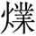
） ⑩63.27，63.28。寰宇记 见《太平寰宇记》。
寰宇贞石图（杨守敬辑） ⑩50.1，50.3；（15）215.1；（17）434。
寰宇访碑录校勘记（李宗颢、文素松） （17）434。
壁下译丛（鲁迅） ⑩307.1；（17）434。
十七画
戴氏广异记（戴君孚） ⑩97.5。
戴文节销寒画课（戴熙） （17）434。
戴文节仿古山水册（戴熙） （17）434。
藏文历书 （17）434。
藏书票的故事（斋藤昌三）（17）525。
豳 ⑥183.28。
镡津文集（契嵩） （17）434。
魏（果戈理） （14）13.1。
魏子（魏朗） ⑩34.1。
魏书（魏收） （17）434。
魏略辑本（鱼豢） （17）434。
魏尔伦研究（堀口大学） （17）438。
魏稼孙全集（钱曾） （17）434。
魏晋南北朝通史（冈畸文夫）（17）528。
魏晋风度及文章与药及酒之关系（鲁迅） （12）50.9，144.3；（16）35.3，32.8。
黛玉葬花 ④346.4；⑤561.4；⑦207.51。
鍊（俞鸿谟） （17）434。
貘之舌（内田鲁庵） （11）399.7；（17）527。
貔子窝（日本东亚考古学会）（17）527。
爵士文学丛书（东京春阳堂）（17）442。
鹫巢（般生） （11）403.7。
濯绛宦存稿（刘毓盘） （17）434。
蹇安五记（潘伯鹰） （13）347.1；（17）434。
十八画
藕香零拾（缪荃孙） ⑩133.23；（17）435。
藤阴杂记（戴璐） （17）435。
藤野先生（鲁迅） （11）572.2；（15）643.8。
蟫史（屠绅） ⑨262.8。
蟫隐庐书目 （17）435。
簠斋藏镜（宣哲） （17）435。
簠室殷契类纂正编（王襄）（17）435。
翻西厢（研雪子） ⑨92.12。
翻西厢记（周公鲁） ⑩131.9。
鹰之歌（丽尼） （17）435。
十九画
蘧庐絮语（陈子展） ⑤193.7。
孽海花（曾朴） ⑨304.22。
孽海花续编（陆士谔）⑨304.24。
鞲上鹰（蒋防） ⑩106.23。
警世通言（冯梦龙） ①162.29。
攀古楼汉石纪存（吴大澂）（17）435。
蒟应验记（陆果） ⑨15.30。
籀
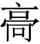
述林（孙诒让） （17）435。籀经堂钟鼎文考释跋尾（陈庆镛）（17）435。
曝书杂记（钱泰吉） ⑩62.16。
簿记课副手日记抄（契诃夫）（16）488.9。
瀛壖杂志（王韬） （17）435。
二十画以上
霰（千家元麿） （17）528。
籑喜庐丛书（傅云龙） （17）436。
魔女（佐藤春夫） （17）529。
魔沼（乔治·桑） （12）214.1。
魔侠吉诃德（影片） （16）459.1。
魔鬼的门徒（萧伯纳） （13）567.4；（17）436。
魔鬼和黑夜的故事（库宾）（17）538。
譬喻经 见《百喻经》。
蠢货（契诃夫、屠格涅夫等）（12）189.1；（17）436。
蠢货（契诃夫） （12）188.2，189.1。
露西亚文学研究（片上伸）⑩314.3。
露国共产党的文艺政策（藏原惟人） ⑩343.3。
黯澹的烟霭里（安德烈夫）⑩202.1。
鬻子说（鬻熊） ⑨13.10，378.4。
麟台故事残本（程俱） （17）436。
蠹鱼自传（内田鲁庵） （17）529。
蠹鱼的闲话（庄司浅水） （17）529。
日文
假名
あァ
ァジァ的生產様式に就いて 见《关于“亚细亚生产方式”》。
ァポリネール詩抄 见《阿坡里耐尔诗抄》。
ァメリカ文学 见《美国文学》。
あるき太郎 见《走路太郎》。
ァルス美術叢書 见《阿尔斯美术丛书》。
ァンドレ·ジイド全集 见《安德烈·纪德全集》。
いィ
ィヴァン·メストロヴイチ 见《伊凡·美斯特罗维奇》。
いのちの洗濯 见《生命之洗濯》。
ィンテリグンチセ 见《知识分子》。
りゥ
ヴァン·ゴツホ大画集 见《凡·高大画集》。
ヴィクトル·ユゴオ 见《维克多·雨果》。
ヴエルレエヌ研究 见《魏尔伦研究》。
ゥデゲ族の最後の者 见《最后一个乌兑格人》。
えエ
えすぱにや·ぱるっがる記 见《西葡记》。
エチユード 见《画图习作》。
エネルギイ 见《原动力》。
え·ぴやん 见《挺好》。
エピキユルの園 见《伊璧鸠鲁的花园》。
エリオツト文学論 见《爱略特文学论》。
ぉオ
オブロモーフ 见《奥勃洛摩夫》。
ぉもちや絵集 见《玩具绘集》。
オランダ派フランドル派の四大画家論 见《荷兰派弗朗德勒派四大画家论》。
オルフエ 见《阿尔斐》。
かヵ
かくし言葉の字引 见《隐语字典》。
からす 见《乌鸦》。
ヵンヂンスキーの芸術論 见《康定斯基艺术论》。
きキ
キエルケゴール選集 见《克尔凯郭尔选集》。
くク
グゥルモン詩抄 见《古尔蒙诗抄》。
グリム童話集 见《格林童话集》。
クレイグ先生 见《克莱喀先生》。
グレコ 见《格列柯》。
グンクゥルの歌麿 见《歌麿》。
けケ
ゲオルゲ·グロツス 见《无产阶级的画家乔治·格罗斯》。
ゲーテ批判 见《歌德批判》。
ケーベル博士小品集 见《开培尔博士小品集》。
ケーベル博士随筆集 见《开培尔博士随笔集》。
けれども地球は迴ってゐる 见《然而地球在转动》。
てコ
ゴオゴリ全集 见《果戈理全集》。
ゴオゴリ研究 见《果戈理研究》。
ゴオホ画集 见《凡·高画集》。
コクトオ芸術論 见《科克多艺术论》。
コクトオ詩抄 见《科克多诗抄》。
コムミサール 见《政治委员》。
ゴーリキィ全集 见《高尔基全集》。
ゴーリキィ研究 见《高尔基研究》。
ゴリキィ文芸詩抄書簡集 见《高尔基文艺书简集》。
しシ
ジィド以後 见《纪德以后》。
ジィド研究 见《纪德研究》。
シエストフ選集 见《舍斯托夫选集》。
シモオヌ 见《西摩奴》。
ジユベィクの冒險 见《好兵帅克》。
ジヤズ文学叢書 见《爵士文学丛书》。
ジョィス中心の文学運動 见《以乔埃斯为中心的文学运动》。
ショウを語る 见《谈谈萧伯纳》。
シラノ劇版画 见《帝国剧院二月上演剧目版画——希拉诺之部》。
すス
ストリンベルク全集 见《斯特林堡全集》。
せセ
セザンヌ大画集 见《塞尚大画集》。
セメント 见《士敏土》。
そソ
ソヴエト文学の十年 见《伟大的十年的文学》。
ソヴエートロシァの芸術 见《苏俄艺术》。
ソヴエートロシセ美術大観 见《苏俄美术大观》。
ソヴィエートロシヤの牢獄 见《苏俄的牢狱》。
ソヴエートロシァ文学理論 见《苏俄文学理论》。
ソヴエートロシセ文学の展望 见《苏俄文学展望》。
ソヴエートロシセ漫画·ポスター集 见《苏俄漫画及宣传画集》。
ソヴエト学生の日記 见《苏联学生日记》。
ソヴエト大学生の性生活 见《苏联大学生的性生活》。
ソヰエエト·ロシセ文芸叢書 见《苏俄文艺丛书》。
ソヰエト·ロシヤ詩選 见《苏俄诗选》。
たタ
ダァシエンカ 见《达先卡》。
タィース 见《泰绮丝》。
ダーゥィン主義とマルクス主義 见《达尔文主义与马克思主义》。
ダマスクスヘ 见《到大马士革去》。
ダンテ神曲画集 见《但丁神曲画集》。
ちチ
チエホフとトルストィの回想 见《对契诃夫和托尔斯泰的回忆》。
チエホフ全集 见《契诃夫全集》。
チエーホフ傑作集 见《契诃夫杰作集》。
チエーホフの手帖 见《契诃夫的笔记》。
チエホフ書簡集 见《契诃夫书简集》。
チセパーエフ 见《恰巴耶夫》。
っツ
ツァラトゥストラ 见《扎拉图斯特拉如是说》。
ツルゲーネフ全集 见《屠格涅夫全集》。
ツルゲエネフ散文詩 见《屠格涅夫散文诗》。
てテ
デカメロン 见《十日谈》。
とト
ドストエフスキー論 见《陀思妥耶夫斯基论》。
ドストエーフスキィ再観 见《陀思妥耶夫斯基再认识》。
ドストエフスキィ研究 见《陀思妥耶夫斯基研究》。
ドストィエフスキィ全集 见《陀思妥耶夫斯基全集》。
ドーソン蒙古史 见《多桑蒙古史》。
トルストィとマルクス 见《托尔斯泰和马克思》。
トルストィとドストエーフスキィ 见《托尔斯泰与陀思妥耶夫斯基》。
ドレフユス事件 见《德雷福斯事件》。
ドン·キホーテ 见《堂·吉诃德》。
なナ
なくてならぬ独和動詞辞典 见《必备德日动词辞典》。
にニ
ニチィエのツァラツストラ——解釈幷びに批評—— 见《尼采的扎拉图斯特拉——解说及评论》。
ニール河の草 见《尼罗河之草》。
にんじん 见《红萝卜须》。
のノ
ノァ·ノァ 见《诺阿·诺阿》。
ノヴァーリス日記 见《诺瓦利斯日记》。
はハ
ハィネ研究 见《海涅研究》。
バィロン 见《拜伦》。
ハゥフの童話 见《豪夫童话》。
バクダン 见《炸弹》。
バスク牧歌調 见《山民牧唱》。
ひヒ
ヒステーリ 见《歇斯底里》。
ヒラカレタ処女地 见《被开垦的处女地》。
ふフ
ファシズムに牷する闘斗 见《对法西斯主义的斗争》。
フィリツプ全集 见《菲力普全集》。
フィリシプ短篇集 见《菲力普短篇集》。
フオードかマルクスか 见《福特呢还是马克思？》。
ブランド 见《勃兰特》。
フリオ·フレニトとその弟子達 见《胡里奥·胡列尼托和他的学生的奇遇》。
ブレィク研究 见《布莱克研究》。
プレハーノフ論 见《普列汉诺夫论》。
プレハーノフ選集 见《普列汉诺夫选集》。
フロィド主義と弁証法的唯物論 见《弗洛伊德主义与辩证唯物论》。
フロオベエル全集 见《福楼拜全集》。
プロレタリセ文学論 见《无产阶级文学论》。
プロレタリセ文学概論 见《无产阶级文学概论》。
プロレタリァ文学講座 见《无产阶级文学讲座》。
プロレタリァ芸術教程 见《无产阶级艺术教程》。
プロレタリァートと文化の問題 见《无产阶级与文化问题》。
プロレタリァ美術のために 见《为了无产阶级的美术》。
ヘヘ
ベトオフエン 见《贝多芬》。
ほホ
ボオドレール研究 见《波德莱尔研究》。
ボローヂン脱出記 见《鲍罗廷脱险记》。
まマ
マキシズムの謬諭 见《马克思主义的谬论》。
マチス以後 见《马蒂斯以后》。
マリィ·ロランサン詩画集 见《玛丽·罗兰珊诗画集》。
マルク·シァガル画集 见《马尔克·夏加儿画集》。
マルクス·エンゲルス芸術論 见《马克思恩格斯艺术论》。
マルクスの経済概念 见《马克思的经济概念》。
マルクス主義芸術論 见《马克思主义艺术论》。
マルクス主義者の見るトルストィ 见《马克思主义者之所见的托尔斯泰》。
マルクス主義美学 见《马克思主义美学》。
マルクス主義的作家論 见《马克思主义的作家论》。
マルクス主義と倫理 见《马克思主义与伦理》。
マルクスの唯物弁証法 见《马克思的唯物辩证法》。
マルクス主義と法理学 见《马克思主义与法律哲学》。
マルクス主義批判者の批判 见《马克思主义批判者的批判》。
マルクス主義批評論 见《马克思主义批评论》。
マルクス主義の根本問題 见《马克思主义的根本问题》。
マルクス主義と芸術運動 见《马克思主义的根本问题》。
マルクス主義芸術理論 见《马克思主义艺术理论》。
マルクスの民族、社会並に国家観 见《马克思的民族、社会及国家观》。
マルクスの唯物的歷史理論 见《马克思的历史唯物主义理论》。
マルクスの階級闘争理論 见《马克思的阶级斗争理论》。
マルクス·レーニン主義芸術研究 见《马克思、列宁主义艺术学研究》。
マルチンの犯罪 见《马尔腾的罪行》。
マ主義芸術理論 见《马克思主义艺术理论》。
みミ
ミルトン失楽園 见《弥耳敦失乐园画集》。
ミレー大画集 见《米勒大画集》。
めメ
メツザレム 见《梅查列姆》。
もモ
モリエール全集 见《莫里哀全集》。
モンテエニユ論 见《蒙田论》。
モンテーエユ随想錄 见《蒙田随想录》。
もんぱるの 见《蒙派尔诺》。
ゆユ
ユカリ 见《缘份》。
らラ
ラムラム王 见《兰姆兰姆王》。
るル
ルネサンス 见《文艺复兴论》。
ルバィヤツト 见《鲁拜集》。
れレ
レツシング伝説 见《莱辛传奇》。
レーニンのゴリキーヘの手紙 见《列宁致高尔基书信》。
レーニンと芸術 见《列宁与艺术》。
レーニンと哲学 见《列宁与哲学》。
レーニンの弁証法 见《列宁的辩证法》。
レーニンの幼少時代とその環境 见《列宁的幼少年时代及其环境》。
レーニン主義と哲学 见《列宁主义与哲学》。
ろロ
ロシヤ文学史 见《俄国文学史》。
ロシヤ社会史 见《俄国社会史》。
ロシヤ文学思潮 见《俄国文学思潮》。
ロシヤ革命映画 见《俄国革命电影》。
わワ
わが毒舌 见《我的刻薄话》。
わが漂泊 见《我的漂泊》。
ゑヱ
ヱゲレスィロハ 见《英语入门》。
汉字
一画
一粒の麦もし死なずば 见《如果一粒麦子不死的话》。
一革命家の人生·社会観 见《一个革命者的人生及社会观》。
一周間 见《一周间》。
一立斎広重 见《一立斋广重》。
一千一夜物語畫譜 见《一千零一夜故事画谱》。
二画
二十世紀の欧洲文学 见《二十世纪之欧洲文学》。
二葉亭全集 见《二叶亭全集》。
二十世紀絵畫大観 见《二十世纪绘画大观》。
十字街頭を行く 见《走向十字街头》。
十字街頭を往く 见《走向十字街头》。
七死刑囚物語 见《七个被绞死的人》。
人類の為めに 见《为人类》。
人類學及人種學上ヨリ見タル北東亜細亜 见《从人类学及人种学所见到的东北亚》。
人形図篇 见《玩偶图篇》。
人生遺伝學 见《人生遗传学》。
人形作者篇 见《玩偶作者篇》。
人類協同史 见《人类合作史》。
九十三年 见《九三年》。
三画
三太郎の日記 见《三太郎日记》。
工蕓美論 见《工艺美论》。
工場細胞 见《工厂支部》。
下女の子 见《女仆之子》。
大十年の文學 见《伟大的十年的文学》。
大自然と霊魂の対話 见《大自然与灵魂的对话》。
大海のほとり 见《大海边》。
千夜一夜 见《一千零一夜》。
女性のカツト 见《女子木刻》。
女性と愛欲 见《女性与情欲》。
女騎士エルザ 见《女骑士爱尔萨》。
女一人大地を行く 见《大地的女儿》。
小さき者へ 见《与幼者》。
小説ノ作リ方 见《小说作法》。
小説から見たる支那の民族性 见《从小说看来的支那民族性》。
小供之畫 见《儿童的画》。
四画
王様の背中 见《国王的背脊》。
王道 见《王室之路》。
天產鈉化合物の研究 见《天然钠化合物的研究》。
五山の四大詩僧 见《五山的四大诗僧》。
支那に於ケル列强の工作とその経済勢力 见《帝国主义列强在华之活动及其经济势力》。
支那の建築 见《中国的建筑》。
支那は眼覚め行く 见《中国在觉醒》。
支那產“”ニ就イテ 见《中国产的“”》。
支那語ローマ字化の理論 见《中文拉丁化的理论》。
支那文化の研究 见《中国文化研究》。
支那革命の現階段 见《中国革命的现阶段》。
支那革命の理論的考察 见《中国革命的理论的考察》。
支那思想のフランス西漸 见《中国思想的西传法国》。
支那人及支那社會の研究 见《中国人与中国社会研究》。
支那革命及世界の明日 见《中国革命及世界的未来》。
支那 见《中国》。
支那遊記 见《中国游记》。
支那漫談 见《活中国的姿态》。
支那小説史 见《中国小说史略》。
支那住宅志 见《中国住宅志》。
支那社會史 见《中国社会史》。
支那畫人伝 见《中国画家传》。
支那學文藪 见《汉学文薮》。
支那南北記 见《中国南北记》。
支那童話集 见《中国童话集》。
支那詩論史 见《中国诗论史》。
支那山水畫史 见《中国山水画史》。
支那仏教遺物 见《中国佛教文物》。
支那文蕓論藪 见《中国文艺论薮》。
支那文學史綱 见《中国文学史纲》。
支那文學研究 见《中国文学研究》。
支那文學概説 见《中国文学概说》。
支那社會研究 见《中国社会研究》。
支那英雄物語 见《中国英雄故事》。
支那思想研究 见《中国思想研究》。
支那絵畫小史 见《中国绘画小史》。
支那中世醫學史 见《中国中世纪医学史》。
支那仏教印象記 见《中国佛教印象记》。
支那文學史綱要 见《中国文学史纲要》。
支那印度短篇集 见《中国印度短篇集》。
支那近世戯曲史 见《中国近世戏曲史》。
支那法製史論叢 见《中国法制史论丛》。
支那馬贼裏面史 见《中国马贼秘史》。
支那諸子百家考 见《中国诸子百家考》。
支那上代畫論研究 见《中国古代画论研究》。
支那美術史·彫塑篇 见《中国美术史雕塑篇》。
支那歷史地理研究 见《中国历史地理研究》。
支那小説戯曲史概説 见《中国小说戏曲史概说》。
支那古明器泥象図说 见《中国古明器泥象图说》。
支那古明器泥象図鑑 见《中国古明器泥象图鉴》。
支那古器図考·兵器篇 见《中国古器图考·兵器篇》。
支那印象短篇小説集 见《中国印度短篇集》。
支那歷史地理研究続集 见《中国历史地理研究续集》。
支那古代経済思想及製度 见《中国古代经济思想及制度》。
不安と再建 见《不安与再建》。
友達 见《朋友》。
日本プロレタリァ美術集 见《日本无产阶级美术集》。
日本昔ばなし 见《日本传说故事》。
日本流寓の明末諸士 见《流寓日本的明末诸士》。
日和見主義ニ対スル闘争 见《对机会主义的斗争》。
日本一之畫
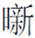
见《日本最佳图画故事》。日本玩具図篇 见《日本玩具图篇》。
日本動物図鑑 见《日本动物图鉴》。
日本初期洋風板畫集 见《日本初期西洋式版画集》。
内面への道 见《内省的道路》。
仏像帰る 见《佛像归来》。
仏教に於ける地獄の新研究 见《佛教中地狱的新研究》。
仏蘭西文学の話 见《法国文学史话》。
仏蘭西精神史の一側面 见《法国精神史的一个侧面》。
仏教美術 见《佛教美术》。
仏像新集 见《佛像新集》。
蘭西詩選 见《法国诗选》。
仏国文蕓叢書 见《现代法国文艺丛书》。
仏蘭西新作家集 见《法国新作家集》。
仏教之美術及歷史 见《佛教之美术及历史》。
仏蘭西文學史序説 见《法国文学史序说》。
反逆児 见《叛逆儿》。
文化の擁護 见《文化拥护》。
文蕓と法律 见《文艺与法律》。
文蕓學の発展と批判 见《文艺学的发展与批判》。
文學と革命 见《文学与革命》。
文學と経済学 见《文学与经济学》。
文學に志す人に 见《给有志于文学者》。
文學の連続性 见《文学的连续性》。
文學のための経済学 见《为文学的经济学》。
文學の社会学的批判 见《文学之社会学的批评》。
文學古典の再認識 见《文学古典之再认识》。
文學革命の前哨 见《文学革命的前哨》。
文學理論の諸問題 见《文学理论诸问题》。
文蕓論 见《文艺论》。
文蕓復興 见《文艺复兴》。
文蕓評論 见《文艺评论》。
文蕓辞典 见《文艺辞典》。
文蕓管見 见《文艺管见》。
文蕓批評史 见《文艺批评史》。
文蕓學概論 见《文艺学概论》。
文蕓思潮論 见《文艺思潮论》。
文蕓家漫畫像 见《文艺家漫画像》。
文蕓學史概說 见《文艺学史概说》。
文學的戦術論 见《文学的战术论》。
文豪評伝叢書 见《文豪评传丛书》。
六朝時代の蕓術 见《六朝时代的艺术》。
巴里の憂鬱 见《巴黎的烦恼》。
水滸伝畫譜 见《水浒传画谱》。
五画
世界ユーモァ全集——支那篇 见《世界幽默全集——中国篇》。
世界の始 见《世界的开端》。
世界の女性を語る 见《谈谈世界女性》。
世界文學と無產階級 见《世界文学与无产阶级》。
世界文學と比較文学史 见《世界文学与比较文学史》。
世界革命の実现に活躍するロシヤの政治組織 见《为实现世界革命而活跃的苏联政治组织》。
世界観としてのマルキシズム 见《作为世界观的马克思主义》。
世界文學物語 见《世界文学故事》。
世界玩具図篇 见《世界玩具图篇》。
世界文蕓大辭典 见《世界文艺大辞典》。
世界蕓術発達史 见《世界艺术发展史》。
世界文蕓名作畫譜 见《世界文艺名作画谱》。
世界蕓術写真年鑑 见《世界艺术摄影年鉴》。
世界性業婦製度史 见《世界娼妓制度史》。
古代希臘文学総說 见《古代希腊文学总说》。
右側の月 见《右边的月亮》。
右衛門の最期 见《三浦右卫门的最后》。
北ホテル 见《北方旅馆》。
北京ノ顧亭林祠 见《北京的顾亭林祠》。
北米遊說記 见《北美游历演说记》。
北斎水滸畫伝 见《北斋水浒画传》。
史的唯物論ヨリ見タル文學 见《从唯物史观所见的文学》。
四十一人目 见《第四十一》。
生ケル支那ノ姿 见《活中国的姿态》。
生レ出悩ミ 见《产生了烦恼》。
広重 见《广重》。
広辭林 见《广辞林》。
永遠の幻影 见《永远的幻影》。
民族文化の発展 见《民族文化之发展》。
弁証法と自然科學 见《辩证法与自然科学》。
弁証法と弁証的方法 见《辩证法与辩证的方法》。
弁証法 见《辩证法》。
弁証法読本 见《辩证法读本》。
弁証法的唯物論入門 见《辩证唯物论入门》。
六画
刑法史の或る断層面 见《刑法史的一个侧面》。
共產大學生の日記 见《苏联学生日记》。
西比利西から滿蒙へ 见《从西伯利亚到满蒙》。
西方の作家たち 见《西方的作家们》。
西洋美術館めぐり 见《西洋美术馆巡礼记》。
有史以前の人類 见《史前人类》。
死せる魂 见《死魂灵》。
虬の社会生活 见《昆虫的社会生活》。
伝説の時代 见《传说的时代》。
自由と必然 见《自由与必然》。
伊太利ルネサンスの美術 见《意大利文艺复兴时期的美术》。
伊曾保絵物語 见《〈伊索寓言〉图画故事》。
向日葵の書 见《向日葵之书》。
巡洋艦ザリヤー 见《巡洋舰札里耶号》。
七画
言語その本質、発達及び起源 见《语言的本质、发展及其起源》。
赤い戀 见《红色的爱情》。
赤い子供 见《红色少年》。
赤露見タママの記 见《赤俄见闻录》。
赤色親衛隊 见《恰巴耶夫》。
蕓術とは何ぞや 见《什么叫艺术》。
蕓術とマルクス主義 见《艺术与马克思主义》。
蕓術と無產階級 见《艺术与无产阶级》。
蕓術と社會生活 见《艺术与社会生活》。
蕓術と唯物史観 见《艺术与唯物史观》。
蕓術と道德 见《艺术与道德》。
蕓術に関する走書的覚書 见《艺术漫笔》。
蕓術の本質 见《艺术的本质》。
蕓術の本質と変化 见《艺术的本质及其变化》。
蕓術の社會的基礎 见《艺术的社会基础》。
蕓術の始源 见《艺术的起源》。
蕓術の勝利 见《艺术的胜利》。
蕓術の唯物史観的解釈 见《艺术的唯物史观解释》。
蕓術の起源及び発達 见《艺术的起源及其发展》。
蕓術の暗示と恐怖 见《艺术的暗示和恐怖》。
蕓術上のレァリズムと唯物論哲学 见《艺术上的现实主义与唯物论哲学》。
蕓術社會學の方法論 见《艺术社会学的方法论》。
蕓術的现代の諸相 见《现代艺术的各种现象》。
蕓術論 见《马克思艺术论》。
蕓術論 见《艺术论》（普列汉诺夫）。
蕓術論 见《艺术论》（甘粕氏）。
蕓術論 见《艺术论》（藏原惟人）。
蕓林閑步 见《艺林闲步》。
蕓術総論 见《艺术总论》。
蕓術戦線 见《艺术战线》。
蕓術社會學 见《艺术社会学》。
蕓術學研究 见《艺术学研究》。
蕓術國巡祛 见《艺术国巡礼》。
芥川竜之介全集 见《芥川龙之介全集》。
医者の記錄 见《医生笔记》。
抒情カツト図案集 见《抒情木刻图案集》。
男女と性格 见《男女与性格》。
図案資料叢書 见《图案资料丛书》。
吼えろ支那 见《怒吼吧，中国！》。
私の畫集 见《我的画集》。
私は愛す 见《我爱》。
作者の感想 见《作者的感想》。
近代の英文學 见《近代的英文学》。
近代の戀愛観 见《近代恋爱观》。
近代支那の學蕓 见《近代中国的学艺》。
近代文学と戀愛 见《近代文学与恋爱》。
近世錦絵世相史 见《近代锦绘世态史》。
近代仏蘭西詩集 见《近代法国诗集》。
近代文芸十二講 见《近代文艺十二讲》。
近代蕓術論序説 见《近代艺术论序说》。
近代仏蘭西絵畫論 见《近代法国绘画论》。
希臘の春 见《希腊之春》。
希臘天才の諸相 见《希腊天才之诸相》。
応用図案五百集 见《应用图案五百种集》。
沙上の足跗 见《沙上的足迹》。
労農ロツァ戲劇集 见《工农俄罗斯戏剧集》。
労農露西亜小說集 见《工农俄罗斯小说集》。
社會主義及ど社會運動 见《社会主义和社会运动》。
社會主義的レァリズムの問題 见《社会主义现实主义问题》。
社會學上ヨリ間タル蕓術 见《从社会学所见的艺术》。
社會進化の鉄則 见《社会进化的规律》。
社會科學の豫備概念 见《社会科学的准备知识》。
社會文蕓叢書 见《社会文艺丛书》。
八画
武井武雄手蕓図案集 见《武井武雄手艺图案集》。
青い花 见《蓝色的花朵》。
青い空の梢に 见《苍茫天际》。
青春を賭ける 见《以青春作赌注》。
青春独逸派 见《青年德意志派》。
表現主義の戯曲 见《表现主义的戏曲》。
表現主義の彫刻 见《表现主义的雕刻》。
表現文様集 见《表现派图案集》。
長崎の美術史 见《长崎美术史》。
長安史跗の研究 见《长安史迹之研究》。
苦悶の象徵 见《苦闷的象征》。
若きソヴェート·ロツヤ 见《年青的苏维埃俄国》。
英國に於ける自然主義 见《英国的自然主义》。
英國近世唯美主義の研究 见《英国近代唯美主义之研究》。
英和辭典 见《英日辞典》。
英文學散策 见《英文学漫步》。
英文學覚帳 见《英国文学笔记》。
板畫の作り方 见《版画创作法》。
柉禁の考古學的考察 见《葬器之考古学的考察》。
東方の詩 见《东方的诗》。
東亜文明の黎明 见《东亚文明之黎明》。
東西交涉史の研究 见《东西交涉史之研究》。
東洋美術史の研究 见《东洋美术史之研究》。
東洲斎写楽 见《东洲斋写乐》。
東西文蕓評伝 见《东西文艺评传》。
或ル女 见《一个女人》。
或ル青年ノ夢 见《一个青年的梦》。
或ル魂の発展 见《一个心灵的发展》。
或日ノ一休 见《一日里的一休和尚》。
拝金蕓術 见《拜金艺术》。
欧羅巴の滅亡 见《欧洲的毁灭》。
欧米ポスター図案集 见《欧美广告图案集》。
欧米に於ける支那古鏡 见《在欧美的中国古镜》。
欧洲文蕓の歷史的展望 见《欧洲文艺之历史展望》。
欧洲文蕓思潮史 见《欧洲文艺思潮史》。
欧洲文學発達史 见《欧洲文学发达史》。
欧米文學研究手引 见《欧美文学研究指南》。
欧洲近代文蕓思潮論 见《欧洲近代文艺思潮概论》。
欧洲近代文蕓思潮概論 见《欧洲近代文艺思潮概论》。
昆虫の驚異 见《昆虫奇观》。
物質と悲劇 见《物质与悲剧》。
版畫を作る人へ 见《给作版画的人》。
金時計 见《表》。
夜ァケ前ノ歌 见《天明前之歌》。
性と性格 见《性与性格》。
學蕓論鈔 见《学艺论抄》。
沼ノホト 见《池边》。
実用口語法 见《实用口语法》。
空想から科學へ 见《从空想到科学》。
阿難と鬼子母 见《阿难与母夜叉》。
阿Q正伝 见《阿Q正传》。
九画
春秋座二月興行版畫——ゥヰリァム·テル 见《春秋座二月上演剧目版画——威廉·退尔》。
革命の孃 见《革命的女儿》。
革命ロツァの蕓術 见《革命俄国的艺术》。
革命後のロミァ文學 见《革命后之俄国文学》。
革命期の演劇と舞踊 见《新俄的演剧和跳舞》。
革命蕓術大系 见《革命艺术大系》。
草の葉 见《草叶集》。
草花模様 见《花草图样》。
南北朝に於ける社會経済制度 见《南北朝的社会经济制度》。
南欧の空 见《南欧的天空》。
南蛮広記 见《南蛮广记》。
研幾小錄 见《研几小录》。
鬱文堂獨和対訳叢書 见《郁文堂德日对译丛书》。
拷問與虐杀 见《拷问与虐杀》。
映畫蕓術史 见《电影艺术史》。
虹児畫谱 见《虹儿画谱》。
思索と随想 见《思索与随想》。
思想家としてのマルクス 见《作为思想家的马克思》。
科学の詩人 见《科学的诗人》。
信と美 见《真与美》。
食療本草の考察 见《食疗本草的考察》。
狭ノ籠 见《狭的笼》。
風景は動く 见《风景在动》。
獨乙語自修の根柢 见《新式德语自修基础》。
獨逸文學 见《德国文学》。
獨逸浪漫派 见《德国的浪漫派》。
獨逸の浪漫派 见《德国的浪漫派》。
獨逸語基本単語集 见《德语基本单词集》。
獨逸語基礎単語四○○○ 见《德语基本单词四千字》。
美学及び文學史論 见《美学及文学史论》。
美術をたづねて 见《美术的探求》。
美術史の根本問題 见《美术史的根本问题》。
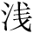
草タヨリ 见《浅草通信》。洒落の精神分析 见《俏皮的精神分析》。
海の童話 见《海的童话》。
建設期のンヴェート文學 见《建设时期的苏联文学》。
勇敢なる兵卒シユベィクの冒險 见《好兵帅克》。
十画
泰西最新文蕓叢書 见《泰西最新文艺丛书》。
真実はかく佯る 见《真象如此伪装》。
原色貝類図 见《原色贝类图》。
殉難革命家列伝 见《殉难革命家列传》。
造型美術に於ける形式の問題 见《造型美术的形式问题》。
造型蕓術社會學 见《造型艺术社会学》。
島の農民 见《岛的农民》。
殷墟出土白色土器の研究 见《殷墟出土白陶之研究》。
飢ヱ 见《饥饿》。
戀愛と新道德 见《恋爱与新道德》。
戀愛の道 见《爱情之道》。
高蹈會紫葉会聯合図錄 见《高蹈会紫叶会联合图录》。
疾風怒濤時代と現代独逸文学 见《狂飙运动时代与现代德国文学》。
唐土名勝図会 见《唐土名胜图会》。
唐宋大家像伝 见《唐宋大家像传》。
唐宋元明名畫大観 见《唐宋元明名画大观》。
袖珍英和辭典 见《袖珍英日辞典》。
書物の敵 见《书物之敌》。
書物の話 见《书话》。
書斎の岳人 见《书斋的岳人》。
書斎の消息 见《书斋的消息》。
書道全集 见《书法全集》。
陣中の竪琴 见《阵中竖琴》。
十一画
现代のヒーロー 见《当代英雄》。
現代のフランス文學 见《现代法国文学》。
現代の考察 见《现代之考察》。
現代の獨逸文學 见《现代德国文学》。
現代の美術 见《现代美术》。
現代の獨逸文化及文蕓 见《现代德国文化与文艺》。
現代ソヴェト文學概論 见《现代苏联文学概论》。
現代蕓術の諸傾向 见《现代艺术的各种倾向》。
現代欧洲の蕓術 见《现代欧洲之艺术》。
現代欧洲文學とプロレタリァート 见《现代欧洲文学与无产阶级》。
現代漫畫大観 见《现代漫画大观》。
現代西欧図案集 见《现代西欧图案集》。
現代文豪評伝叢書 见《文豪评传丛书》。
現代仏蘭西文蕓叢書 见《现代法国文艺丛书》。
現代英国文蕓印象記 见《现代英国文艺印象记》。
現代猟奇尖端図鑑 见《现代猎奇尖端图鉴》。
理论蕓術學概論 见《理论艺术学概论》。
都會の論理 见《都市的逻辑》。
転形期の歷史學 见《转变时期的历史学》。
転換期の文學 见《转折时期的文学》。
転換期支那 见《转折时期的中国》。
虚無よりの創造 见《从虚无出发的创造》。
黒い仮面 见《黑假面人》。
異常性欲の分析 见《异常性欲之分析》。
唯物論と弁証法の根本概念 见《唯物论与辩证法的基本概念》。
唯美主義者オスカァ·ワィルド 见《唯美主义者奥斯卡·王尔德》。
唯物史観 见《唯物史观》。
唯物的弁証 见《辩证的唯物论》。
唯物史観序説 见《唯物史观序说》。
唯物史観研究 见《唯物史观研究》。
唯物史観解説 见《唯物史观解说》。
唯物史観世界史教程 见《唯物史观世界史教程》。
動物の驚異 见《动物奇观》。
動物学実習法 见《动物学实习法》。
第二の日 见《第二天》。
鳥類原色大図説 见《鸟类原色大图说》。
猟人日記 见《猎人日记》。
猫町 见《猫街》。
祭祀及礼と法律 见《祭祀及礼与法律》。
鹿の水かがみ 见《鹿的镜子》。
粕谷獨逸語學叢書 见《粕谷德语学丛书》。
清兵衛ト胡盧 见《清兵卫与壶卢》。
閉された庭 见《被关闭的庭院》。
婚姻及び家庭の発展過程 见《婚姻及家族的发展过程》。
十二画
項羽と劉邦 见《项羽与刘邦》。
越天楽 见《越天乐》。
超現実主義と絵畫 见《超现实主义与绘画》。
葛飾北斎 见《葛饰北斋》。
植物の驚異 见《植物奇观》。
裂地と版面 见《布料与版画》。
雄雞とァルルカン 见《雄鸡和杂馔》。
悲劇の哲學 见《悲剧的哲学》。
最後の日記 见《最后的日记》。
最後之溜息 见《最后的叹息》。
最新ロシァ文學研究 见《最新俄国文学研究》。
最新獨和辭典 见《最新德日辞典》。
無からの創造 见《从虚无出发的创造》。
無產階級の文化 见《无产阶级的文化》。
無產階級の畫家ゲオルゲ·グロツス 见《无产阶级的画家乔治·格罗斯》。
無產階級文學の理論と実相 见《无产阶级文学的理论与实况》。
無產階級蕓術論 见《无产阶级艺术论》。
創作版畫の作り方 见《版画创作法》。
象牙塔を出て 见《出了象牙之塔》。
童謠及童話の研究 见《童谣及童话之研究》。
装甲列車 见《铁甲列车Nr.14—69》。
滿鮮考古行脚 见《满洲朝鲜考古旅行记》。
営城子 见《营城子》。
運命の丘 见《命运之丘陵》。
開かれぬ手紙 见《没有开封的信》。
階級社會の蕓術 见《阶级社会的艺术》。
階級社會の諸問題 见《阶级社会之诸问题》。
階級意識トハ何ゾヤ 见《何谓阶级意识》。
媒トシテノ盉 见《盗为媒》。
結婚及ど家庭の社會學 见《结婚及家族的社会学》。
絵入みよ子 见《美代子》。
十三画
詩ト体驗 见《诗与体验》。
詩と詩論 见《诗与诗论》。
詩の起原 见《诗的起源》。
詩の形態學序説 见《诗的形态学序说》。
詩人のナプキン 见《诗人的餐巾》。
詭弁の研究 见《诡辩之研究》。
感想私錄 见《感想笔记》。
園芸植物図譜 见《园艺植物图谱》。
農民文蕓十六講 见《农民文艺十六讲》。
罪と罰 见《罪与罚》。
鉄の流 见《铁流》。
愛と死の戯れ 见《爱与死的搏斗》。
愛の物語 见《爱的故事》。
愛書狂の話 见《书癖的故事》。
愛蘭情調 见《爱尔兰情调》。
猿の群から共和國まで 见《从猿群到共和国》。
痴人の告白 见《疯子的自白》。
新らしい言葉の字引 见《新词汇辞典》。
新しき蕓術の獲得 见《新艺术的取得》。
新シキ者ト古キ者 见《新人与旧人》。
新しき糧 见《新的粮食》。
新フランス文學 见《新法国文学》。
新ロシァ文化の研究 见《新俄文化之研究》。
新ロシァ文學の曙光期 见《新俄文学之曙光期》。
新ロシァ美術大観 见《新俄美术大观》。
新ロシァパンフレツト 见《新俄小丛书》。
新反対派ニ就ィテ 见《关于新反对派》。
新式獨逸語自修の根柢 见《新式德语自修基础》。
新興仏蘭西文學 见《新兴法国文学》。
意匠美術寫真類聚 见《图案美术摄影类聚》。
楽浪 见《乐浪》。
楽浪王光墓 见《乐浪王光墓》。
楽浪彩箧塚 见《蚲浪彩箧塚》。
楽浪及高勾麗古瓦図譜 见《乐浪及高句丽古瓦图谱》。
《資本論》の文學的構造 见《〈资本论〉的文学构造》。
漢楽寫真集成 见《中药摄影集成》。
戦斗的唯物論 见《战斗的唯物论》。
続動物の驚異 见《续动物奇观》。
続小品集 见《续小品集》。
続文蕓評論 见《续文艺评论》。
続南蠻広记 见《续南蛮广记》。
続続小品集 见《续续小品集》。
続続小品集 见《续纸鱼繁昌记》。
十四画
読書術 见《读书术》。
読史叢錄 见《读史丛录》。
読書放浪 见《漫读记》。
静かなるドン 见《静静的顿河》。
静かなドン 见《静静的顿河》。
樣式と時代 见《样式与时代》。
歷史ヲ捻ヂル 见《扭转历史》。
歷史過程の展望 见《历史过程的展望》。
銃殺されて生きてた男 见《被枪决而活下来的人》。
銀砂の汀 见《虹儿画谱》。
漫畫サロン集 见《漫画沙龙集》。
漫畫の滿洲 见《漫画的满洲》。
漫畫坊つちやん 见《漫画〈哥儿〉》。
漫畫吾輩は猫である 见《漫画〈我是猫〉》。
漫畫只野凡児 见《漫画只野凡儿》。
漁夫とその魂 见《渔夫及其灵魂》。
十五画
蔵書票の話 见《藏书票的故事》。
標注訓訳水滸伝 见《标注训译水浒传》。
輪のある世界 见《有轮子的世界》。
輪郭図案一千集 见《轮廓图案一千种》。
憂愁の哲理 见《忧愁的哲理》。
戯曲の本質 见《戏曲的本质》。
影絵の研究 见《剪影之研究》。
遗老説伝（球陽外巻） 见《遗老说传》（球阳外卷）。
十六画
壊滅 见《毁灭》。
機械と蕓術の交流 见《机械与艺术的交流》。
機械と蕓術革命 见《机械与艺术革命》。
機械論と弁証法的唯物論 见《机械论与辩证唯物论》。
十七画
輿論と群集 见《舆论与群众》。
十八画
臨床医學と弁証法的唯物論 见《临床医学与辩证唯物论》。
顕微镜下の驚異 见《显微镜下的奇观》。
貘の舌 见《貘之舌》。
闘牛士 见《斗牛士》。
二十一画以上
露国現代の思潮及文學 见《俄国现代的思潮及文学》。
露西亜文學の理想と現実 见《俄国斯文学的理想与现实》。
露国共產党の文蕓政策 见《俄国共产党的文艺政策》。
露西亜革命の豫言者 见《俄国革命的预言者》。
露西亜革命後の文學 见《俄国革命后的文学》。
露西亜三人集 见《俄国三人集》。
露西亜文學研究 见《俄国文学研究》。
露西亜現代文豪傑作集 见《俄国现代文豪杰作集》。
露西亜語基礎単語四○○○ 见《俄语基本单词四千字》。
鑑鏡の研究 见《古镜之研究》。
蠹魚之自伝 见《蠹鱼自传》。
蠹魚無駄話 见《蠹鱼的闲话》。
拉丁字母
C.C.C.P. 见《苏联》。
R.S.主義批判 （17）530。
西文
A
A Farmer’s Life 见《一个农夫的生活》。
A Handful of Clay 见《一握泥土》。
A History of Early Chinese Painting 见《中国早期绘画史》。
A History of Wood-Engraving 见《木刻史》。
A.Petöfi的诗 见《裴多菲的诗》。
A Shepherd’s Life 见《牧羊人的生活》。
A Wanderer in Woodcuts 见《木刻界漫游者》。
Die Abenteuer des braven Soldeten Schwejk Während des Weltkrieges 见《好兵帅克》。
Abrechnung Folget 见《续前清算》。
The Adventures of the Black girl in her Search of God 见《黑女求神记》。
Aeneid 见《伊尼德》。
Aesop’s Fables 见《伊索寓言》。
AK与人性 见《亚克与人性》。
Alay-Oop 见《阿赖·奥泼》。
Allegorie der Wollust 见《情欲的喻言》。
Der alte Perdrix 见《佩特里老人》。
Amerika im Holzschnitt 见《木刻上的美洲》。
Anders Zorn 见《安德斯·措恩》。
Angkor 见《兽国古城》。
Animal Life in Field and Garden 见《田野和公园里的动物生活》。
Animals in Black&White 见《黑白画中的动物》。
Anna，eine Weib u.e.Mutter 见《安娜——一个妻子和母亲》。
Anna Karenina 见《安娜·卡列尼娜》。
Anna Timovna 见《安娜·季莫菲耶夫娜》。
Das Antlitz des Lebens 见《人生的面目》。
Art and Publicity 见《艺术与宣传》。
The art of Aubrey Beardsley 见《奥布里·比亚兹莱的艺术》。
The Art of Rodin 见《罗丹的艺术》。
Art Review 见《艺术评论》。
Art Young’s Inferno 见《阿尔特·杨的〈地狱〉》。
Les Artistes du Livre 见《书籍插画家传》。
At the Sign of the Reine Pédauque 见《鹅掌女皇的烤肉店》。
Das Attentat auf Zaren AlexanderⅡ 见《猎俄皇记》。
Aubrey Beardsley 见《奥布里·比亚兹莱》。
August Reniers 见《奥古斯特·勒洛瓦》。
Aufsätze 见《个性的毁灭》。
Aus dem Briefwechsel mit meinen Freunden 见《与友人书信选集》。
Ausgewahlte Werke （M.Gorky） 见《高尔基选集》。
Der Ausreisser 见《逃犯》。
Avesta 见《阿韦斯达》。
B
Baboona 见《漫游兽国记》。
Barbaren und Klassiker 见《野蛮人与古典派》。
Bauernkreig 见《农民战争》。
BC4ü，一节车厢的经历（克勒策尔） （17）534。
Der befreite Don Quichotte 见《解放了的堂·吉诃德》。
Das Bein der Tiennette 见《亭乃特之腿》。
Belly in the Kid 见《义士艳史》。
The Best French Short Stories of 1923—24 见《一九二三至二四年法国最佳短篇小说集》。
Le bestiaire 见《禽虫吟》。
Le Bestiare au Cortège d’Orphée 见《禽虫吟》。
Bild und Gemeinschaft 见《图画与群众》。
Bilder der Grossstadt 见《大城市画册》。
Bilder Galerie zur Russ. Lit 见《俄国文学画苑》。
Die bildende Kunst der Gegenwart 见《近世造形美术》。
Birds in England 见《英格兰的鸟》。
Briefe（V.van Gogh） 见《书信集》（凡·高）。
Briefe an einen jungen Dichter 见《致一位青年诗人的信》。
Briefe an Maxim Gorki，1908—1913 见《致马克西姆·高尔基书信集》。
Briefwechsel 见《与友人书信选集》。
Die Brusky 见《磨刀石农庄》。
Brusski 见《磨刀石农庄》。
Buch der Lieder 见《歌之书》。
Der Buchstabe“G” 见《字母“G”》。
C
C.C.C.P. 见《苏联》。
Caricature of Today 见《今日漫画》。
Caspar David Friedrich 见《卡斯帕尔·大卫·弗里德里希》。
Cement 见《士敏土》。
Ch.Meryon 见《查理·梅里昂》。
Chapayev 见《夏伯阳》（影片）。
Charles Meryon 见《查理·梅里昂》。
Children’s Garden 见《儿童公园》。
China Reise 见《中国纪行》。
The Chinese on the Art of Painting 见《中国画论》。
Chinese Pottery of the Han Dynasty 见《汉代的中国陶器》。
The Chinese Soviets 见《中华苏维埃》。
Chinese Studies 见《中国研究》。
Clive of India 见《儿女英雄》。
Cleoptra 见《倾国倾城》。
College English Reading 见《高等学校英语读本》。
The Compleate Angler 见《钓鱼大全》。
The Concise Universal Encyclopedia 见《简明百科辞典》。
Contemporary Europan Writers 见《当代欧洲作家传》。
Contemporary Figure Painters 见《当代肖像画家》。
Contemporary Movements in Europan Literature 见《当代欧洲文学运动》。
D
D.I.Mitrohin 见《密德罗辛版画集》。
D.I.Mitrohin版画集 见《密德罗辛版画集》。
Dämonen u.Nachtgeschichte 见《魔鬼和黑夜的故事》。
Daumier-Mappe 见《杜米埃画帖》。
Daumier und die Politik 见《杜米埃与政治》。
Deine Schwester 见《你的姊妹》。
Dekanka夜谈 见《狄康卡近乡夜话》。
Desert 见《荒漠》。
Deutsche Form，Betrachtungen über die deutsche Kunst 见《德国形式，对德国艺术之观察》。
Deutsche Graphiker der Gegenwart 见《德国近时版画家》。
Deutschland，Deutschland über alles 见《德国，德国至上》。
Deva Roman-Sammlung 见《德意志出版社小说丛书》。
Dneprostroy at Night 见《第聂伯水闸之夜》。
Der Dom 见《大教堂》。
Don Juan 见《唐·璜》。
Dostoievsky und Tolstoy 见《托尔斯泰与陀思妥耶夫斯基》。
Dostoievsky’s Literarsche Schriften 见《陀思妥耶夫斯基文学著作集》。
Dubrovsky 见《复仇艳遇》。
Der dürre Kater 见《瘦猫》。
E
Edvard Muchs graphische Kunst 见《爱德华·蒙克版画艺术》。
Ein Blick in die Welt 见《世界一瞥》。
Ein Ruf ertönt 见《呐喊声起》。
Ein Weberaufstand，Bauern-krieg，Krieg 见《织工起义、农民战争、战争》。
Einblick in Kunst 见《艺术之一瞥》。
Eine Frau allein 见《大地的女儿》。
Eine Woche 见《一周间》。
Einführung in die Kunstges-chichete 见《美术史要》。
Einführung in die Psychologie 见《心理学入门》。
Elementargesetze der bilden-den Kunst 见《造形艺术概论》。
Erinnerungen an Lenin 见《列宁回忆录》。
Ernst Barlach 见《恩斯特·巴拉赫》。
Es war einmal…u.es wird sein 见《从前……和将来》。
Escape 见《法网与情网》。
Etching of today 见《今日的雕版画》。
Expressionismus 见《表现主义》。
Expressionistische Bauern-malerei 见《表现派的农民画》。
F
F.Masereel’s Bilder-Romane 见《麦绥莱勒连环图画集》。
Fairy flowers 见《仙花》。
Der Fall Maurizius 见《马里佐斯案件》。
Far Away and Long Ago 见《远离和久隔》。
Faust 见《浮士德》。
Fifty Caricatures 见《漫画五十帧》。
Der Findling 见《弃儿》。
Les Fleurs du Mal 见《恶之华》。
Flower and still life Painting 见《花卉与静物画》。
Flowerbeds 见《花坛》。
Francesco de Goya 见《法兰西斯柯·德·戈雅》。
Für Alle 见《为了大众》。
G
G.Grosz 见《乔·格罗斯》。
G.Grosz画集 见《格罗斯画集》。
G.Grosz Die Zeichnungen 见《格罗斯绘画》。
G-Men 见《一身是胆》。
George Grosz 见《乔治·格罗斯》。
Geschichten aus Odessa 见《敖德萨故事集》。
Gesichter und Fratzen 见《肖像和漫画》。
Gewitter im Mai 见《五月暴风雨》。
Die Gezeichneten 见《素描集》。
God’s man 见《神子》。
Goethes，Brief und Tagebücher 见《歌德的书信与日记》。
Goethes Reise-，Zerstreungsund Trostbuchlein 见《歌德游憩素描小集》。
Gogols sämtliche Werke in fünf Bänden 见《果戈理全集》。
Die Graphik der Neuzeit 见《近代版画艺术》。
Great Russian Short Stories 见《俄罗斯短篇小说杰作选》。
Greek Studies 见《希腊研究》。
Green Mansions 见《绿色的邸宅》。
Gustave Doré 见《古斯塔夫·陀莱》。
H
Hamlet und Don Quichott 见《哈姆雷特和堂吉诃德》。
“Hamsun小说” 见“汉姆生小说”。
Hans Baluschek 见《汉斯·巴卢舍克》。
Hans ohne Brot 见《没有面包的汉斯》。
Hedda Gabler 见《海得·加勃勒》。
Heines Werke in dreizehn Teilen 见《海涅十三卷集》。
Henrik Ibsen 见《亨利·易卜生》（罗伯茨）。
Henrik Ibsen 见《亨利·易卜生》（勃兰兑斯）。
Der Herr und sein Knecht 见《主与仆》。
Hintergrund 见《背景》。
Das Hirtenlied 见《牧歌》。
The Holy Bible Containing the Old and New Testaments 见《圣经，新旧约全书》。
Holzschnitte 见《卡尔·蒂尔曼木刻集》。
Das Holzschnittbuch 见《木刻画集》。
Holzschnitte zu Carl Sternheim Chronik 见《卡尔·施特恩海姆〈编年史〉的木刻集》。
Honoré Daumier 见《杜米埃画集》。
Hunger 见《饥饿》。
I
Les Idylles de Gessner 见《格斯纳的田园诗》。
Illustrierte Geschichte der Weltliteratur 见《插图本世界文学史》。
Illustrierte Kultur-und Sittenges-chichte des Proletariats（Bd.I） 见《无产阶级文化风俗画史》（第一卷）。
Ingagi 见《兽世界》。
J
Die Jagd nach dem Zaren 见《猎俄皇记》。
Le jaloux Garrizalès d’Estrama-dure 见《埃斯特拉马杜尔的嫉妒的卡里札莱斯》。
Japan Today and Tomorrow 见《日本今日及明日》。
Le Jeu de L’Amour et de la Mort 见《爱与死的搏斗》。
Johano la Brava 见《勇敢的约翰》。
Jose Clemente Orozco 见《奥罗斯科》。
Jungle 见《丛莽》。
K
K.Kollwitz画帖（新版） 见《凯绥·珂勒惠支画帖》（新版）。
Karl Marx “Capital” in Lithographs 见《马克思的〈资本论〉石印版》。
Käthe Kollwitz Mappe 见《凯绥·珂勒惠支画帖》。
Das Käthe Köllwitz-Werk 见《凯绥·珂勒惠支作品集》。
Käthe Kollwitz版画十二枚 见《凯绥·珂勒惠支版画十二枚》。
Kinder der Strasse 见《街头孩子》。
Kinder und Hausmärchen der Brüder Grimm 见《格林兄弟儿童与家庭童话集》。
Der Körper des Menschen in der Geschichte der Kunst 见《艺术史上的人体画》。
Der Kubismus 见《立体主义》。
Die Kunst der Gegenwart 见《当代艺术》。
Die Kunst ist in Gefahr 见《艺术在危险中》。
Die Kunst und die Gesellsc-haft 见《艺术与社会》。
Künster-Monographien 见《艺术家评传》。
L
Lala的利益 见《拉拉的利益》。
Landschaften und Stimmungen 见《风景与心境》。
The Later 19 センチユーリー 见《十九世纪的后期》。
Lettre á un ami 见《致友人书》。
Der letzte Udehe 见《最后一个乌兑格人》。
Die letzten Tage von Peking 见《北京之终日》。
The life of the Caterpillar 见《毛毛虫的故事》。
Die Literatur in der S.U. 见《苏联文学》。
Literature and Revolution 见《文学与革命》。
M
M.Gorky’s Gesamt Werke 见《高尔基全集》。
Der Maler Daumier 见《画家杜米埃》。
Die Maler des Impressionismus 见《印象画派述》。
Die Malerei in 19 Jahrhundert 见《十九世纪的绘画》。
La malgranda Johano 见《小约翰》。
Mammonart 见《拜金艺术》。
Max Beckmann 见《马克思·贝克曼》。
“Mein Milljoh” 见《“我的米约”》。
Mein Stundenbuch 见《我的忏悔》。
The Mind and Face of Bolshevism
见《布尔什维克的精神与面貌》。
Mirgorod 见《密尔格拉得》。
Mit Pinsel und Schere 见《用画笔和剪刀》。
Mitjas Liebe 见《米佳的爱情》。
Modern book-Illustration in Great Britain & America 见《现代英美书籍插画》。
Modern French Literature 见《现代法国文学》。
Modren Library 见《现代丛书》。
The Modern Woodcut 见《现代木刻》。
Moderne Illustratoren 见《现代插图画家传记丛书》。
La Musadel Loreto 见《洛勒托的文艺女神》。
Mutter und Kind 见《母与子》。
My method，by the Leading European black and white artists 见《我的手法——欧洲黑白画代表画家谈经验》。
The Mysterious Stranger 见《神秘的陌生人》。
N
Der nackte Mensch in der Kunst aller Zeiten 见《历代艺术中的裸体人》。
The Naturalist in La Plata 见《在拉蒲拉塔的博物学家》。
Das neue Gesicht der herrs-chenden Klasse 见《统治阶级的新面目》。
Das neue Kollwitz-Werk 见《珂勒惠支新作集》。
Neue Kunst in Russland，1914—1919 见《俄国的新艺术，1914—1919》。
Neues Wilhelm Busch Album 见《威廉·蒲雪新画帖》。
Die Neunzehn 见《毁灭》。
The New Book-Illustration in France 见《法国书籍新插图》。
The New Spirit 见《新精神论》。
The New Woodcut 见《新木刻》。
New Woodcuts 见《新木刻》。
Niedela 见《一周间》。
The Nineteen 见《毁灭》。
Noa Noa 见《诺阿·诺阿》。
Non-Stop Revue 见《万芳团》。
Notre ami Louis Jou 见《我们的朋友路易·儒传》。
O
O.Wilde’s The Ballad of Reading Gaol插画 见《奥·王尔德的〈累丁狱中的歌〉插画》。
L’oeuvre gravé de Gauguin 见《高更版画集》。
Oliver Cromwell 见《奥里弗·克伦威尔》。
Origine et évolution de L’écriture hieroglyphique et de L’écriture Chinoise 见《楔形文字与中国文字之发生及进化》。
Die ostasiatische Tuschmalerei 见《东亚墨画集》。
Ostraoomova-Ljebedeva 见《奥斯特罗乌莫娃-列别杰娃》。
The Outline of Art 见《艺术大纲》。
The Outline of Literature 见《文学大纲》。
P
Pandora 见《潘多拉》。
Panzerzug Nr.14—69 见《铁甲列车Nr.14—69》。
Parega und Paralipomena 见《副业和补遗》。
Passagiera der Ieeren Plätze 见《空座位的旅客》。
Passion 见《耶稣受难》。
Die Passion eines Menschen 见《一个人的受难》。
Paul Cezanne 见《塞尚》。
Der persische Orden und andere Grotesken 见《波斯勋章和别的奇闻》。
Peter Pan in Kensington Gardens 见《开新顿公园里的潘·彼得》。
Petits Poèmes en Prose 见《散文诗集》。
Petöfi集 见《裴多菲集》。
Petöfi Sándor 见《裴多菲·山陀尔》。
Petöfi Sándor的诗 见《裴多菲的诗》。
Der Pflanzensammler 见《植物采集者》。
The Phaedo of Plato 见《柏拉图的斐多篇》。
Photogeans of the year 1928 见《一九二八年影集》。
Pioniere 见《先锋队》。
Die Pioniere Sind da 见《少先队员在这里》。
Poems of W.Whitman 见《惠特曼诗集》。
Poésies Complètes 见《诗歌全集》。
Polish Art 见《波兰美术》。
Die polnische Kunst von 1800 bis zur Gegenwart 见《一八○○年至当代的波兰艺术》。
The Power of a Lie 见《谎言的力量》。
Primer of English Literature 见《英国文学入门》。
The Purple Land 见《紫色的土地》。
Q
Quelques Bois 见《几幅木刻》。
R
Die Räuber 见《席勒〈群盗〉剧本警句图》。
Razgrom 见《毁灭》。
Reclam’s Universal Bibliothek 见《莱克朗氏万有文库》。
Red Cartoons 见《红色漫画》。
Reineke Fuchs 见《列那狐》。
Reise durch Russland 见《新俄纪行》。
Rembrondt Handzeichnungen 见《伦勃朗素描集》。
Reter Trommler 见《红鼓手》。
Rodin 见《罗丹》。
The Rope of the Lock 见《卷发的掠夺》。
The Rubáiyát of Omár Khayyám 见《莪默·伽亚谟的鲁拜集》。
Russia Today and Yesterday 见《俄国今昔》。
Der Russische Revolutions-film 见《俄国革命电影》。
S
Salammbo 见《萨朗波》。
Salomè 见《沙乐美》。
San-Min-Chu-I 见《三民主义》。
Scandinavian Art 见《斯堪的那维亚美术》。
Die Schaffenden 见《创造者》。
Das Schloss der Wahrheit 见《真理之堡》。
Sesame and Lilies 见《芝麻和百合》。
Short Stories of 1928 见《一九二八年欧洲短篇小说集》。
Sittliche order Unsittliche Kunst？ 见《道德的或非道德的艺术？》。
The Smaller Beasts 见《小动物》。
Die Sonne 见《太阳》。
Sovietic Graphics 见《苏联版画集》。
Der Spiesser-Spiegel 见《庸人的镜子》。
The Springtide of Life 见《生命的春潮》。
Der stille Don 见《静静的顿河》。
The story of the World’s Literature 见《世界文学史话》。
Studies from Ten Literatures 见《十种文学研究》。
T
Tales of the Revolution 见《革命的故事》。
Taschkent die brotreiche Stadt，und eine Erzählung aus der Bürgerk-riegszeit von A.Sserafimowitsch Der Eiserne Strom 见《丰饶的城塔什干和绥拉菲摩维奇内战时期小说铁流》。
Ten Polish Folk Tales 见《波兰民间故事十则》。
Tess 见《苔丝》。
Das Teuflische und Groteske in der Kunst 见《鬼怪奇觚图》。
Thaïs 见《泰绮丝》。
The Thief of Bagdad 见《巴格达的窃贼》。
Three Plays of A.V.Luna-charski 见《卢那察尔斯基剧本三种》。
Thomas Campanella 见《托马斯·康派内拉》。
Das Tierbuch 见《动物画册》。
Transval 见《苔兰斯华尔》。
The True Story of Ah Q 见《阿Q正传》。
U
Ubangi 见《兽国奇观》。
Über alles die Liebe 见《爱情至上》。
Die Uhr 见《表》。
Die ungewöhnlichen Abenteuer des Julio Jurenito und seiner Jünger 见《胡里奥·胡列尼托和他的学生的奇遇》。
V
V Sljozh 见《在斯里约支》。
Vater und Sohn 见《父与子》。
Verschwörer und Revolutionäre 见《阴谋家与革命者》。
Victoria Kazhimirovna 见《波兰姑娘》。
Vidas Sombrias 见《忧郁的生活》。
Vincent van Gogh 见《文森特·凡·高》。
Vincent van Gogh-Mappe 见《文森特·凡·高画帖》。
VIVA VILLA 见《自由万岁》。
Volksbuch 1930 见《一九三○年通俗书》。
W
Die Wandlungen Gottes 见《上帝的化身》。
The Works of H.Fabre 见《法布耳全集》。
Was Peterchens Freunde erzählen 见《小彼得》。
Weed 见《杂草》。
Welko的出征 见《战争中的威尔珂》。
Das Werk des Malers Diego Rivera 见《迪艾戈·里维拉画集》。
Wesen und Veränderung der Formen/Künste 见《艺术形式的本质与变化》。
Wessex 见《威塞克思》。
Wie Franz und Grete nach Russland Kamen 见《弗朗茨和格雷特旅俄记》。
Wirinea 见《维里尼亚》。
Wood Cuts 见《木刻》。
The Wood-cut of Today 见《当代国内外木刻》。
The Woodcut of To-day at Home and Abroad 见《当代国内外木刻》。
Woodcuts and Some Words 见《木刻图说》。
Worker Sheviriov 见《工人绥惠略夫》。
World’s Literature 见《世界文学故事》。
Z
Zarathustra 见《扎拉图斯特拉如是说》。
Zeichnungen 见《伦勃朗素描集》。
Zement 见《士敏土》。
Die Zerstörung der Persönlichkeit 见《个性的毁灭》。
Zoology 见《动物学》。
Zovist （17）564。
Zwölf Radierungen und ein radiertes Tilelblatt zu Tolstojs Kreutzerso-nate 见《为托尔斯泰〈克莱采奏鸣曲〉所作镂版画十二幅和镂版封面一幅》。
数字
The 7th Man 见《第七人》。
30 neue Erzähler des neuen Russland 见《新俄新小说家三十人集》。
56 Drawings of Soviet Russia 见《苏俄速写五十六帧》。
俄文
A
А.П.Чехов，25 лет со дня смерти 见《契诃夫死后二十五年纪念册》。
Андрон Непутевый 见《不走正路的安得伦》。
Б
Бела Читц 见《别拉·奇茨》。
В
В.Ф.Комиссаржевская 见《科米萨尔热芙斯卡雅纪念册》。
Г
Горе от ума 见《聪明误》。
Граверсамоучка 见《版画自修书》。
Гравюры И.Н.Павлова，1886—1921 见《巴甫洛夫版画集》。
Гравюра детей 见《儿童的版画》。
Гравюра на дереве 见《木刻集》（苏联艺术普及委员会）。
Гравюры на дереве 见《木刻集》（密得罗辛）。
Д
Дальние страны 见《远方》。
Дмитрий Николаевич Кардовский 见《德米特里·尼古拉耶维奇·卡尔多夫斯基》。
Дневники 见《日记》。
Ж
Жан Франсуа Милле 见《米勒》。
Жизнь Смоктинина 见《莫斯科季宁的生活》。
Железный поток 见《铁流》。
И
Исторический материалнзм 见《历史唯物主义》。
К
Карикатура на службе обороны СССР. 见《为保卫苏联服务的漫画集》。
Китайские судьбы 见《中国的运命》。
Книга тысячи и одной ночи 见《一千零一夜》。
Крым 见《克里米亚》。
Л
Ленинград новые пейзажи，
1917—1932 见《列宁格勒新景，1917—1932》。
Литературная знциклопедия 见《文学百科全书》。
Лицо международного Меньше-визма 见《国际的孟什维主义之面貌》。
М
Мы，наши друзья и наши враги в рисунках дени 见《捷尼的画——我们，我们的朋友和我们的敌人》。
Н
Н.В.Гоголь в портретах и иллюстрациях 见《果戈理画传》。
《На Дне》 пьеса максима Горького в постановке Московского Худо-жествнного Театра 见《高尔基〈底层〉在莫斯科艺术剧院演出剧照》。
Неделя 见《一周间》。
Некогда плюнуть 见《没工夫唾骂》。
О
Октябрь 见《十月》。
Освобожденный Дон Кихот 见《解放了的堂·吉诃德》。
П
Писатели 见《作家传》。
Плюнуть некогда 见《没工夫唾骂》。
Поле 见《旷野》。
Политические рисунки 见《政治画集》。
Портреты Максима Горького 见《马克西姆·高尔基肖像画》。
Правдивая история А-Кея 见《阿Q正传》。
Правдивое жизнеописание 见《阿Q正传》。
Р
Рассказы о животных 见《关于动物的故事》。
Русские писатели 见《俄国文学家像》。
С
С.Чехонин画集 见《切霍宁画集》。
Собрание сочинений Горького 见《高尔基全集》。
Собрание сочинений Серафимовича 见《绥拉菲摩维支全集》。
Современная обложка 见《当代图书封面》。
Сорок первый 见《第四十一》。
Сто четыре рисунка к позме Н.В.Гоголя 《Мертвыедуши》 见《死魂灵百图》。
Т
Теофиль Стейнлен 见《史太因林画集》。
Тихий Дон 见《静静的顿河》。
《Три сестры》 пьеса А.П.Чехова в постановке Московского Художественного театра 见《契诃夫〈三姊妹〉在莫斯科艺术剧院演出剧照》。
Ф
Фауст и город 见《浮士德与城》。
Х
Хлеб 见《粮食》。
数字
1001 ночи 见《一千零一夜》。